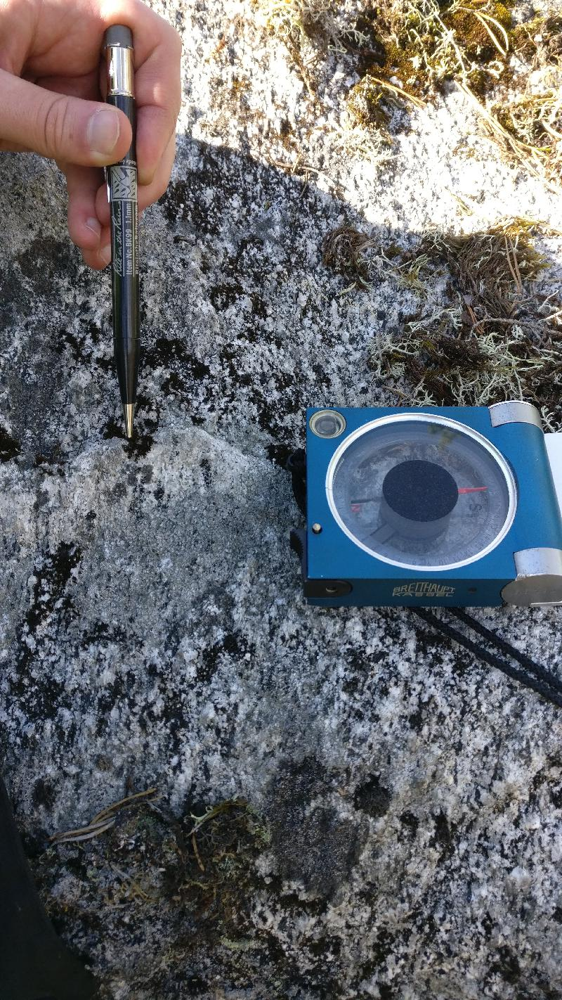

<!DOCTYPE html>
<head>    
    <meta http-equiv="content-type" content="text/html; charset=UTF-8" />
    
        <script>
            L_NO_TOUCH = false;
            L_DISABLE_3D = false;
        </script>
    
    <style>html, body {width: 100%;height: 100%;margin: 0;padding: 0;}</style>
    <style>#map {position:absolute;top:0;bottom:0;right:0;left:0;}</style>
    <script src="https://cdn.jsdelivr.net/npm/leaflet@1.6.0/dist/leaflet.js"></script>
    <script src="https://code.jquery.com/jquery-1.12.4.min.js"></script>
    <script src="https://maxcdn.bootstrapcdn.com/bootstrap/3.2.0/js/bootstrap.min.js"></script>
    <script src="https://cdnjs.cloudflare.com/ajax/libs/Leaflet.awesome-markers/2.0.2/leaflet.awesome-markers.js"></script>
    <link rel="stylesheet" href="https://cdn.jsdelivr.net/npm/leaflet@1.6.0/dist/leaflet.css"/>
    <link rel="stylesheet" href="https://maxcdn.bootstrapcdn.com/bootstrap/3.2.0/css/bootstrap.min.css"/>
    <link rel="stylesheet" href="https://maxcdn.bootstrapcdn.com/bootstrap/3.2.0/css/bootstrap-theme.min.css"/>
    <link rel="stylesheet" href="https://maxcdn.bootstrapcdn.com/font-awesome/4.6.3/css/font-awesome.min.css"/>
    <link rel="stylesheet" href="https://cdnjs.cloudflare.com/ajax/libs/Leaflet.awesome-markers/2.0.2/leaflet.awesome-markers.css"/>
    <link rel="stylesheet" href="https://cdn.jsdelivr.net/gh/python-visualization/folium/folium/templates/leaflet.awesome.rotate.min.css"/>
    <link rel="stylesheet" href="styles.css"/>
    
            <meta name="viewport" content="width=device-width,
                initial-scale=1.0, maximum-scale=1.0, user-scalable=no" />
            <style>
                #map_2435aed3a13d4380b65a4547ec7a6695 {
                    position: relative;
                    width: 100.0%;
                    height: 100.0%;
                    left: 0.0%;
                    top: 0.0%;
                }
            </style>
        
</head>
<body>    
    
            <div class="folium-map" id="map_2435aed3a13d4380b65a4547ec7a6695" ></div>
        
</body>
<script>    
    
            var map_2435aed3a13d4380b65a4547ec7a6695 = L.map(
                "map_2435aed3a13d4380b65a4547ec7a6695",
                {
                    center: [62.68172665, 22.28418883],
                    crs: L.CRS.EPSG3857,
                    zoom: 10,
                    zoomControl: true,
                    preferCanvas: false,
                }
            );

            

        
    
            var tile_layer_89ad0c8db615480f8e9f74830e74ef0b = L.tileLayer(
                "https://{s}.tile.openstreetmap.org/{z}/{x}/{y}.png",
                {"attribution": "Data by \u0026copy; \u003ca href=\"http://openstreetmap.org\"\u003eOpenStreetMap\u003c/a\u003e, under \u003ca href=\"http://www.openstreetmap.org/copyright\"\u003eODbL\u003c/a\u003e.", "detectRetina": false, "maxNativeZoom": 18, "maxZoom": 18, "minZoom": 0, "noWrap": false, "opacity": 1, "subdomains": "abc", "tms": false}
            ).addTo(map_2435aed3a13d4380b65a4547ec7a6695);
        
    
            var marker_ef78048277d44c6480b5f3c39f25a4e3 = L.marker(
                [62.6502261, 22.24487724],
                {}
            ).addTo(map_2435aed3a13d4380b65a4547ec7a6695);
        
    
            var icon_b7bade0e19fc4297ae6fce8cecdf09b1 = L.AwesomeMarkers.icon(
                {"extraClasses": "fa-rotate-63", "icon": "glyphicon-arrow-up", "iconColor": "white", "markerColor": "blue", "prefix": "glyphicon"}
            );
            marker_ef78048277d44c6480b5f3c39f25a4e3.setIcon(icon_b7bade0e19fc4297ae6fce8cecdf09b1);
        
    
        var popup_27e67fadde3c4939a5177747ffc62f9e = L.popup({"maxWidth": "100%"});

        
            var html_626d51e76f2f4aceaf89310e08fd6aaf = $(`<div id="html_626d51e76f2f4aceaf89310e08fd6aaf" style="width: 100.0%; height: 100.0%;"><h3>NO-2021-120</h3> <h4>Planar Structures</h4> <table> <thead> <tr> <th align="right">DIP</th> <th align="right">DIRECTION_OF_DIP</th> <th align="left">STYPE_TEXT</th> <th align="left">FOL_TYPE_TEXT</th> </tr> </thead> <tbody> <tr> <td align="right">75</td> <td align="right">196</td> <td align="left">Foliation</td> <td align="left">Penetrative foliation</td> </tr> <tr> <td align="right">83</td> <td align="right">256</td> <td align="left">Fault</td> <td align="left"></td> </tr> <tr> <td align="right">83</td> <td align="right">180</td> <td align="left">Fault</td> <td align="left"></td> </tr> <tr> <td align="right">69</td> <td align="right">316</td> <td align="left">Fault</td> <td align="left"></td> </tr> <tr> <td align="right">31</td> <td align="right">104</td> <td align="left">Fault</td> <td align="left"></td> </tr> </tbody> </table> <h4>Linear Structures</h4> <table> <thead> <tr> <th align="right">DIRECTION</th> <th align="right">PLUNGE</th> <th align="left">STYPE_TEXT</th> </tr> </thead> <tbody> <tr> <td align="right">63</td> <td align="right">61</td> <td align="left">Lineation</td> </tr> </tbody> </table> <h4>Rock Observations</h4> <table> <thead> <tr> <th align="left">REMARKS</th> <th align="left">FIELD_NAME</th> </tr> </thead> <tbody> <tr> <td align="left"></td> <td align="left">Granodiorite</td> </tr> </tbody> </table> <h4>Observation remarks</h4> <p>Liuskeinen granodioriitti, raoissa punaista täytettä mahdollisesti kalimaasälpää, melko intensiivinen rakoilu, rakoilu melkeinpä yhtä intensiivistä joka suunnassa</p> <h4>Images</h4> <p><a href="kapalo_imgs/NO-2021-120.k1@6142761110269243792.jpg"></a>Punainen rakotäyte, kalimaasälpä <a href="kapalo_imgs/NO-2021-120.k2@465599292542584477.jpg"></a>Rakoilua pystypinnalla (326/78), pinta kaatuu kameraa päin</p></div>`)[0];
            popup_27e67fadde3c4939a5177747ffc62f9e.setContent(html_626d51e76f2f4aceaf89310e08fd6aaf);
        

        marker_ef78048277d44c6480b5f3c39f25a4e3.bindPopup(popup_27e67fadde3c4939a5177747ffc62f9e)
        ;

        
    
    
            marker_ef78048277d44c6480b5f3c39f25a4e3.bindTooltip(
                `<div>
                     NO-2021-120
                 </div>`,
                {"sticky": true}
            );
        
    
            var marker_749262956b1f49f3aba2f73089b9d13b = L.marker(
                [62.64958984, 22.24507106],
                {}
            ).addTo(map_2435aed3a13d4380b65a4547ec7a6695);
        
    
            var icon_ba91191bae04480f9972c8e158ef0256 = L.AwesomeMarkers.icon(
                {"extraClasses": "fa-rotate-0", "icon": "glyphicon-stop", "iconColor": "white", "markerColor": "lightgray", "prefix": "glyphicon"}
            );
            marker_749262956b1f49f3aba2f73089b9d13b.setIcon(icon_ba91191bae04480f9972c8e158ef0256);
        
    
        var popup_cb06715aaa9045b88d26903202111a54 = L.popup({"maxWidth": "100%"});

        
            var html_e83e02d2b6f74a0482218a384b1fd0c5 = $(`<div id="html_e83e02d2b6f74a0482218a384b1fd0c5" style="width: 100.0%; height: 100.0%;"><h3>NO-2021-121</h3> <h4>Planar Structures</h4> <table> <thead> <tr> <th align="right">DIP</th> <th align="right">DIRECTION_OF_DIP</th> <th align="left">STYPE_TEXT</th> <th align="left">FOL_TYPE_TEXT</th> </tr> </thead> <tbody> <tr> <td align="right">78</td> <td align="right">37</td> <td align="left">Foliation</td> <td align="left">Penetrative foliation</td> </tr> <tr> <td align="right">56</td> <td align="right">296</td> <td align="left">Fault</td> <td align="left"></td> </tr> <tr> <td align="right">75</td> <td align="right">351</td> <td align="left">Fault</td> <td align="left"></td> </tr> <tr> <td align="right">82</td> <td align="right">242</td> <td align="left">Fault</td> <td align="left"></td> </tr> <tr> <td align="right">29</td> <td align="right">76</td> <td align="left">Fault</td> <td align="left"></td> </tr> </tbody> </table> <h4></h4> <h4>Rock Observations</h4> <table> <thead> <tr> <th align="left">REMARKS</th> <th align="left">FIELD_NAME</th> </tr> </thead> <tbody> <tr> <td align="left"></td> <td align="left">Granodiorite</td> </tr> </tbody> </table> <h4>Observation remarks</h4> <p>Hydrotermistä fluidia raoissa kalimaasälpää (322/44), kvartsia ja epidoottia ja ehkä jopa karbonaattia (295/56), heikosti suuntautunut granodioriitti, päärakosuunta (296/56), paljon rakoilua, L-tektoniitti lineaatio (162/54) hyvin epävarma</p> <h4>Images</h4> <p><a href="kapalo_imgs/NO-2021-121.k1@8923370035630306331.jpg"></a>Epidoottia raossa (063/86) <a href="kapalo_imgs/NO-2021-121.k2@2536619394793919973.jpg"></a>Punaista rakotäytettä kalimaasälpää raossa (322/44) <a href="kapalo_imgs/NO-2021-121.k3@4834227976921686441.jpg">('Raossa tuskin ollut liikettä kun katsoo "klastia" (296/56), klasti pystyssä rakopinnasta', 'NO-2021-121.k3')</a> <a href="kapalo_imgs/NO-2021-121.k4@3798868176195117756.jpg">('Eemin piirros, poikkileikkaus, rakosuuntia', 'NO-2021-121.k4')</a></p></div>`)[0];
            popup_cb06715aaa9045b88d26903202111a54.setContent(html_e83e02d2b6f74a0482218a384b1fd0c5);
        

        marker_749262956b1f49f3aba2f73089b9d13b.bindPopup(popup_cb06715aaa9045b88d26903202111a54)
        ;

        
    
    
            marker_749262956b1f49f3aba2f73089b9d13b.bindTooltip(
                `<div>
                     NO-2021-121
                 </div>`,
                {"sticky": true}
            );
        
    
            var marker_e593b5c348f8445693c6619e1b791c43 = L.marker(
                [62.6489966, 22.24552787],
                {}
            ).addTo(map_2435aed3a13d4380b65a4547ec7a6695);
        
    
            var icon_096ce6a060da42bfb590b977db9107b5 = L.AwesomeMarkers.icon(
                {"extraClasses": "fa-rotate-92", "icon": "glyphicon-arrow-up", "iconColor": "white", "markerColor": "blue", "prefix": "glyphicon"}
            );
            marker_e593b5c348f8445693c6619e1b791c43.setIcon(icon_096ce6a060da42bfb590b977db9107b5);
        
    
        var popup_8d2401efaea540bbb399c40850bcdcb3 = L.popup({"maxWidth": "100%"});

        
            var html_65efd3f600884d9d9b1cef19825af90a = $(`<div id="html_65efd3f600884d9d9b1cef19825af90a" style="width: 100.0%; height: 100.0%;"><h3>NO-2021-122</h3> <h4>Planar Structures</h4> <table> <thead> <tr> <th align="right">DIP</th> <th align="right">DIRECTION_OF_DIP</th> <th align="left">STYPE_TEXT</th> <th align="left">FOL_TYPE_TEXT</th> </tr> </thead> <tbody> <tr> <td align="right">68</td> <td align="right">197</td> <td align="left">Foliation</td> <td align="left">Penetrative foliation</td> </tr> <tr> <td align="right">60</td> <td align="right">323</td> <td align="left">Fault</td> <td align="left"></td> </tr> <tr> <td align="right">84</td> <td align="right">201</td> <td align="left">Fault</td> <td align="left"></td> </tr> <tr> <td align="right">20</td> <td align="right">87</td> <td align="left">Fault</td> <td align="left"></td> </tr> </tbody> </table> <h4>Linear Structures</h4> <table> <thead> <tr> <th align="right">DIRECTION</th> <th align="right">PLUNGE</th> <th align="left">STYPE_TEXT</th> </tr> </thead> <tbody> <tr> <td align="right">92</td> <td align="right">61</td> <td align="left">Lineation</td> </tr> </tbody> </table> <h4>Rock Observations</h4> <table> <thead> <tr> <th align="left">REMARKS</th> <th align="left">FIELD_NAME</th> </tr> </thead> <tbody> <tr> <td align="left"></td> <td align="left">Granodiorite</td> </tr> </tbody> </table> <h4>Observation remarks</h4> <p>Vahva lineaatio heikko liuskeisuus granodioriitissa, päärakosuunta, hydrotermistä fluidia mahdollisesti kaikissa rakosuunnissaa, päärakosuunta (323/60)</p> <h4>Images</h4> <p><a href="kapalo_imgs/NO-2021-122.k1@5617358163811979863.jpg"></a>Vahva lineaatio (092/61) liuskeisuuspinnassa (197/68) <a href="kapalo_imgs/NO-2021-122.k2@5780095224077011552.jpg"></a>Nikolaksen piirros, rakojen topologiaa <a href="kapalo_imgs/NO-2021-122.k3@7591171526182596366.jpg">('Eemin piirros, poikkileikkaus E-W, raon hyppyjä lineaation suuntaan', 'NO-2021-122.k3')</a></p></div>`)[0];
            popup_8d2401efaea540bbb399c40850bcdcb3.setContent(html_65efd3f600884d9d9b1cef19825af90a);
        

        marker_e593b5c348f8445693c6619e1b791c43.bindPopup(popup_8d2401efaea540bbb399c40850bcdcb3)
        ;

        
    
    
            marker_e593b5c348f8445693c6619e1b791c43.bindTooltip(
                `<div>
                     NO-2021-122
                 </div>`,
                {"sticky": true}
            );
        
    
            var marker_063f3d34447149afa935fd8f11cf8d58 = L.marker(
                [62.64799984, 22.24524319],
                {}
            ).addTo(map_2435aed3a13d4380b65a4547ec7a6695);
        
    
            var icon_0583296b7b6c44ba82155f617cd1b077 = L.AwesomeMarkers.icon(
                {"extraClasses": "fa-rotate-82", "icon": "glyphicon-arrow-up", "iconColor": "white", "markerColor": "blue", "prefix": "glyphicon"}
            );
            marker_063f3d34447149afa935fd8f11cf8d58.setIcon(icon_0583296b7b6c44ba82155f617cd1b077);
        
    
        var popup_c3d092455b374bd08c1b8a4e24fc6418 = L.popup({"maxWidth": "100%"});

        
            var html_3e7219d6aaf74ca3be0db5ab42e46f8b = $(`<div id="html_3e7219d6aaf74ca3be0db5ab42e46f8b" style="width: 100.0%; height: 100.0%;"><h3>NO-2021-123</h3> <h4>Planar Structures</h4> <table> <thead> <tr> <th align="right">DIP</th> <th align="right">DIRECTION_OF_DIP</th> <th align="left">STYPE_TEXT</th> <th align="left">FOL_TYPE_TEXT</th> </tr> </thead> <tbody> <tr> <td align="right">64</td> <td align="right">184</td> <td align="left">Foliation</td> <td align="left">Penetrative foliation</td> </tr> <tr> <td align="right">22</td> <td align="right">107</td> <td align="left">Fault</td> <td align="left"></td> </tr> <tr> <td align="right">86</td> <td align="right">78</td> <td align="left">Fault</td> <td align="left"></td> </tr> <tr> <td align="right">81</td> <td align="right">181</td> <td align="left">Fault</td> <td align="left"></td> </tr> </tbody> </table> <h4>Linear Structures</h4> <table> <thead> <tr> <th align="right">DIRECTION</th> <th align="right">PLUNGE</th> <th align="left">STYPE_TEXT</th> </tr> </thead> <tbody> <tr> <td align="right">82</td> <td align="right">40</td> <td align="left">Lineation</td> </tr> </tbody> </table> <h4>Rock Observations</h4> <table> <thead> <tr> <th align="left">REMARKS</th> <th align="left">FIELD_NAME</th> </tr> </thead> <tbody> <tr> <td align="left"></td> <td align="left">Granodiorite</td> </tr> </tbody> </table> <h4>Observation remarks</h4> <p>Pienirakeisempi granodioriitti/dioriitti</p> <h4>Images</h4> <p><a href="kapalo_imgs/NO-2021-123.k1@8548264451686763326.jpg"></a>Koostumusvaihtelua lokaalisti, hienorakeinen liuskeinen dioriitti</p></div>`)[0];
            popup_c3d092455b374bd08c1b8a4e24fc6418.setContent(html_3e7219d6aaf74ca3be0db5ab42e46f8b);
        

        marker_063f3d34447149afa935fd8f11cf8d58.bindPopup(popup_c3d092455b374bd08c1b8a4e24fc6418)
        ;

        
    
    
            marker_063f3d34447149afa935fd8f11cf8d58.bindTooltip(
                `<div>
                     NO-2021-123
                 </div>`,
                {"sticky": true}
            );
        
    
            var marker_6270aeece7414328a02154770740cde8 = L.marker(
                [62.64572403, 22.26150361],
                {}
            ).addTo(map_2435aed3a13d4380b65a4547ec7a6695);
        
    
            var icon_c289320eca9a4be28d65fee2a53e03e8 = L.AwesomeMarkers.icon(
                {"extraClasses": "fa-rotate-134", "icon": "glyphicon-arrow-up", "iconColor": "white", "markerColor": "blue", "prefix": "glyphicon"}
            );
            marker_6270aeece7414328a02154770740cde8.setIcon(icon_c289320eca9a4be28d65fee2a53e03e8);
        
    
        var popup_82652743383e45c3b0cedba8093267d1 = L.popup({"maxWidth": "100%"});

        
            var html_f49c78c7bedc47a083dd367f13e1ea9a = $(`<div id="html_f49c78c7bedc47a083dd367f13e1ea9a" style="width: 100.0%; height: 100.0%;"><h3>NO-2021-124</h3> <h4>Planar Structures</h4> <table> <thead> <tr> <th align="right">DIP</th> <th align="right">DIRECTION_OF_DIP</th> <th align="left">STYPE_TEXT</th> <th align="left">FOL_TYPE_TEXT</th> </tr> </thead> <tbody> <tr> <td align="right">83</td> <td align="right">264</td> <td align="left">Fault</td> <td align="left"></td> </tr> <tr> <td align="right">86</td> <td align="right">187</td> <td align="left">Fault</td> <td align="left"></td> </tr> <tr> <td align="right">85</td> <td align="right">76</td> <td align="left">Fault</td> <td align="left"></td> </tr> </tbody> </table> <h4>Linear Structures</h4> <table> <thead> <tr> <th align="right">DIRECTION</th> <th align="right">PLUNGE</th> <th align="left">STYPE_TEXT</th> </tr> </thead> <tbody> <tr> <td align="right">134</td> <td align="right">58</td> <td align="left">Lineation</td> </tr> </tbody> </table> <h4>Rock Observations</h4> <table> <thead> <tr> <th align="left">REMARKS</th> <th align="left">FIELD_NAME</th> </tr> </thead> <tbody> <tr> <td align="left"></td> <td align="left">Granodiorite</td> </tr> </tbody> </table> <h4>Observation remarks</h4> <p>Kvartsijuonia (058/68; 015/80; 125/65), mahdollinen L-tektoniitti</p> <h4>Images</h4> <p><a href="kapalo_imgs/NO-2021-124.k1@3218770996976864257.jpg"></a>Hyppy kvartsijuonessa (015/80) <a href="kapalo_imgs/NO-2021-124.k2@6226118352050024138.jpg"></a>Lineaatio näkyy myös kvartsijuonessa <a href="kapalo_imgs/NO-2021-124.k3@4800862070566764280.jpg">('Liuskeisuus vai lineaatio', 'NO-2021-124.k3')</a></p></div>`)[0];
            popup_82652743383e45c3b0cedba8093267d1.setContent(html_f49c78c7bedc47a083dd367f13e1ea9a);
        

        marker_6270aeece7414328a02154770740cde8.bindPopup(popup_82652743383e45c3b0cedba8093267d1)
        ;

        
    
    
            marker_6270aeece7414328a02154770740cde8.bindTooltip(
                `<div>
                     NO-2021-124
                 </div>`,
                {"sticky": true}
            );
        
    
            var marker_032a1e19cdb84778b5a1090486d588a9 = L.marker(
                [62.6444608, 22.26643641],
                {}
            ).addTo(map_2435aed3a13d4380b65a4547ec7a6695);
        
    
            var icon_4839fa672f4d47238c100c33cea1bcf8 = L.AwesomeMarkers.icon(
                {"extraClasses": "fa-rotate-0", "icon": "glyphicon-stop", "iconColor": "white", "markerColor": "lightgray", "prefix": "glyphicon"}
            );
            marker_032a1e19cdb84778b5a1090486d588a9.setIcon(icon_4839fa672f4d47238c100c33cea1bcf8);
        
    
        var popup_458e25ab395f48949f0618eb36a86e44 = L.popup({"maxWidth": "100%"});

        
            var html_c457923373134fd5abf497e8e401ed8d = $(`<div id="html_c457923373134fd5abf497e8e401ed8d" style="width: 100.0%; height: 100.0%;"><h3>NO-2021-125</h3> <h4>Planar Structures</h4> <table> <thead> <tr> <th align="right">DIP</th> <th align="right">DIRECTION_OF_DIP</th> <th align="left">STYPE_TEXT</th> <th align="left">FOL_TYPE_TEXT</th> </tr> </thead> <tbody> <tr> <td align="right">88</td> <td align="right">322</td> <td align="left">Fault</td> <td align="left"></td> </tr> <tr> <td align="right">83</td> <td align="right">74</td> <td align="left">Fault</td> <td align="left"></td> </tr> </tbody> </table> <h4></h4> <h4>Rock Observations</h4> <table> <thead> <tr> <th align="left">REMARKS</th> <th align="left">FIELD_NAME</th> </tr> </thead> <tbody> <tr> <td align="left"></td> <td align="left">Granodiorite</td> </tr> </tbody> </table> <h4>Observation remarks</h4> <p>Vallitseva rakosuunta (322/88), hyvin heikosti suuntautunut granodioriitti tai ei ollenkaan, kvartsijuonia (074/83)</p> <h4>Images</h4></div>`)[0];
            popup_458e25ab395f48949f0618eb36a86e44.setContent(html_c457923373134fd5abf497e8e401ed8d);
        

        marker_032a1e19cdb84778b5a1090486d588a9.bindPopup(popup_458e25ab395f48949f0618eb36a86e44)
        ;

        
    
    
            marker_032a1e19cdb84778b5a1090486d588a9.bindTooltip(
                `<div>
                     NO-2021-125
                 </div>`,
                {"sticky": true}
            );
        
    
            var marker_8668a7ba30b14fee94fc1b3b169b867c = L.marker(
                [62.64597139, 22.26551594],
                {}
            ).addTo(map_2435aed3a13d4380b65a4547ec7a6695);
        
    
            var icon_0ba18c061c36438ca8b63c0427c625d3 = L.AwesomeMarkers.icon(
                {"extraClasses": "fa-rotate-120", "icon": "glyphicon-arrow-up", "iconColor": "white", "markerColor": "blue", "prefix": "glyphicon"}
            );
            marker_8668a7ba30b14fee94fc1b3b169b867c.setIcon(icon_0ba18c061c36438ca8b63c0427c625d3);
        
    
        var popup_a9d6592f6e174a4ab3a335f4f29bc448 = L.popup({"maxWidth": "100%"});

        
            var html_36403d1d4cf042e783f350568e571ffc = $(`<div id="html_36403d1d4cf042e783f350568e571ffc" style="width: 100.0%; height: 100.0%;"><h3>NO-2021-126</h3> <h4>Planar Structures</h4> <table> <thead> <tr> <th align="right">DIP</th> <th align="right">DIRECTION_OF_DIP</th> <th align="left">STYPE_TEXT</th> <th align="left">FOL_TYPE_TEXT</th> </tr> </thead> <tbody> <tr> <td align="right">84</td> <td align="right">156</td> <td align="left">Fault</td> <td align="left"></td> </tr> <tr> <td align="right">63</td> <td align="right">109</td> <td align="left">Fault</td> <td align="left"></td> </tr> </tbody> </table> <h4>Linear Structures</h4> <table> <thead> <tr> <th align="right">DIRECTION</th> <th align="right">PLUNGE</th> <th align="left">STYPE_TEXT</th> </tr> </thead> <tbody> <tr> <td align="right">120</td> <td align="right">37</td> <td align="left">Lineation</td> </tr> </tbody> </table> <h4>Rock Observations</h4> <table> <thead> <tr> <th align="left">REMARKS</th> <th align="left">FIELD_NAME</th> </tr> </thead> <tbody> <tr> <td align="left"></td> <td align="left">Granodiorite</td> </tr> </tbody> </table> <h4>Observation remarks</h4> <p>L-tektoniitti tai hyvin heikko liuskeisuus (131/45)</p> <h4>Images</h4> <p><a href="kapalo_imgs/NO-2021-126.k1@6982591858692456125.jpg"></a>Koostumusvaihtelua ja kvartsijuonia, kuvan taso (030/46)</p></div>`)[0];
            popup_a9d6592f6e174a4ab3a335f4f29bc448.setContent(html_36403d1d4cf042e783f350568e571ffc);
        

        marker_8668a7ba30b14fee94fc1b3b169b867c.bindPopup(popup_a9d6592f6e174a4ab3a335f4f29bc448)
        ;

        
    
    
            marker_8668a7ba30b14fee94fc1b3b169b867c.bindTooltip(
                `<div>
                     NO-2021-126
                 </div>`,
                {"sticky": true}
            );
        
    
            var marker_4159891aa6a34ade8d2d63f4f512c89d = L.marker(
                [62.64682437, 22.26251022],
                {}
            ).addTo(map_2435aed3a13d4380b65a4547ec7a6695);
        
    
            var icon_4ac7862d49db42a8880da0ffc59d557a = L.AwesomeMarkers.icon(
                {"extraClasses": "fa-rotate-110", "icon": "glyphicon-arrow-up", "iconColor": "white", "markerColor": "blue", "prefix": "glyphicon"}
            );
            marker_4159891aa6a34ade8d2d63f4f512c89d.setIcon(icon_4ac7862d49db42a8880da0ffc59d557a);
        
    
        var popup_f96c1d4c5b3d4ca5a4421e92cc8e7c6c = L.popup({"maxWidth": "100%"});

        
            var html_456ca8d7e8204ad795f8c195cfeaebe1 = $(`<div id="html_456ca8d7e8204ad795f8c195cfeaebe1" style="width: 100.0%; height: 100.0%;"><h3>NO-2021-127</h3> <h4>Planar Structures</h4> <table> <thead> <tr> <th align="right">DIP</th> <th align="right">DIRECTION_OF_DIP</th> <th align="left">STYPE_TEXT</th> <th align="left">FOL_TYPE_TEXT</th> </tr> </thead> <tbody> <tr> <td align="right">60</td> <td align="right">86</td> <td align="left">Fault</td> <td align="left"></td> </tr> <tr> <td align="right">78</td> <td align="right">156</td> <td align="left">Fault</td> <td align="left"></td> </tr> </tbody> </table> <h4>Linear Structures</h4> <table> <thead> <tr> <th align="right">DIRECTION</th> <th align="right">PLUNGE</th> <th align="left">STYPE_TEXT</th> </tr> </thead> <tbody> <tr> <td align="right">110</td> <td align="right">51</td> <td align="left">Lineation</td> </tr> </tbody> </table> <h4>Rock Observations</h4> <table> <thead> <tr> <th align="left">REMARKS</th> <th align="left">FIELD_NAME</th> </tr> </thead> <tbody> <tr> <td align="left"></td> <td align="left">Granodiorite</td> </tr> </tbody> </table> <h4>Observation remarks</h4> <p>Hyvin vahva lineaatio, L-tektoniitti, hyvin heikko tasomainen suuntaus (192/76)</p> <h4>Images</h4> <p><a href="kapalo_imgs/NO-2021-127.k1@4608074849448132282.jpg"></a>Kuvan pinta (087/62), kaatuu kuvaajaa päin</p></div>`)[0];
            popup_f96c1d4c5b3d4ca5a4421e92cc8e7c6c.setContent(html_456ca8d7e8204ad795f8c195cfeaebe1);
        

        marker_4159891aa6a34ade8d2d63f4f512c89d.bindPopup(popup_f96c1d4c5b3d4ca5a4421e92cc8e7c6c)
        ;

        
    
    
            marker_4159891aa6a34ade8d2d63f4f512c89d.bindTooltip(
                `<div>
                     NO-2021-127
                 </div>`,
                {"sticky": true}
            );
        
    
            var marker_a82f54e0bd624989a8fe588f4573ee31 = L.marker(
                [62.70746425, 22.34853267],
                {}
            ).addTo(map_2435aed3a13d4380b65a4547ec7a6695);
        
    
            var icon_522612fa6bdf41b083b350c48463ebaa = L.AwesomeMarkers.icon(
                {"extraClasses": "fa-rotate-115", "icon": "glyphicon-arrow-up", "iconColor": "white", "markerColor": "blue", "prefix": "glyphicon"}
            );
            marker_a82f54e0bd624989a8fe588f4573ee31.setIcon(icon_522612fa6bdf41b083b350c48463ebaa);
        
    
        var popup_b9947d48338d4c1f88cacb334dc5717d = L.popup({"maxWidth": "100%"});

        
            var html_59ca9686d8e8452dbbaa8a6f023f697b = $(`<div id="html_59ca9686d8e8452dbbaa8a6f023f697b" style="width: 100.0%; height: 100.0%;"><h3>NO-2021-1</h3> <h4>Planar Structures</h4> <table> <thead> <tr> <th align="right">DIP</th> <th align="right">DIRECTION_OF_DIP</th> <th align="left">STYPE_TEXT</th> <th align="left">FOL_TYPE_TEXT</th> </tr> </thead> <tbody> <tr> <td align="right">74</td> <td align="right">74</td> <td align="left">Foliation</td> <td align="left">Penetrative foliation</td> </tr> <tr> <td align="right">81</td> <td align="right">302</td> <td align="left">Fault</td> <td align="left"></td> </tr> <tr> <td align="right">80</td> <td align="right">30</td> <td align="left">Fault</td> <td align="left"></td> </tr> </tbody> </table> <h4>Linear Structures</h4> <table> <thead> <tr> <th align="right">DIRECTION</th> <th align="right">PLUNGE</th> <th align="left">STYPE_TEXT</th> </tr> </thead> <tbody> <tr> <td align="right">115</td> <td align="right">59</td> <td align="left">Lineation</td> </tr> </tbody> </table> <h4>Rock Observations</h4> <table> <thead> <tr> <th align="left">REMARKS</th> <th align="left">FIELD_NAME</th> </tr> </thead> <tbody> <tr> <td align="left"></td> <td align="left">Paragneiss</td> </tr> </tbody> </table> <h4>Observation remarks</h4> <p>Lohkosuuntia</p> <h4>Images</h4></div>`)[0];
            popup_b9947d48338d4c1f88cacb334dc5717d.setContent(html_59ca9686d8e8452dbbaa8a6f023f697b);
        

        marker_a82f54e0bd624989a8fe588f4573ee31.bindPopup(popup_b9947d48338d4c1f88cacb334dc5717d)
        ;

        
    
    
            marker_a82f54e0bd624989a8fe588f4573ee31.bindTooltip(
                `<div>
                     NO-2021-1
                 </div>`,
                {"sticky": true}
            );
        
    
            var marker_6261d332268641d6adbcdefcf139ede6 = L.marker(
                [62.73067318, 22.37575849],
                {}
            ).addTo(map_2435aed3a13d4380b65a4547ec7a6695);
        
    
            var icon_401a66601d6c46e4b3bbeeb28f4a4c5b = L.AwesomeMarkers.icon(
                {"extraClasses": "fa-rotate-0", "icon": "glyphicon-stop", "iconColor": "white", "markerColor": "lightgray", "prefix": "glyphicon"}
            );
            marker_6261d332268641d6adbcdefcf139ede6.setIcon(icon_401a66601d6c46e4b3bbeeb28f4a4c5b);
        
    
        var popup_2685acf6c1714e4a9d15ff60e2b843cc = L.popup({"maxWidth": "100%"});

        
            var html_f4fd971c86fb4c1986a058c59fa9b0cb = $(`<div id="html_f4fd971c86fb4c1986a058c59fa9b0cb" style="width: 100.0%; height: 100.0%;"><h3>NO-2021-4</h3> <h4>Planar Structures</h4> <table> <thead> <tr> <th align="right">DIP</th> <th align="right">DIRECTION_OF_DIP</th> <th align="left">STYPE_TEXT</th> <th align="left">FOL_TYPE_TEXT</th> </tr> </thead> <tbody> <tr> <td align="right">1</td> <td align="right">93</td> <td align="left">Fault</td> <td align="left"></td> </tr> <tr> <td align="right">81</td> <td align="right">354</td> <td align="left">Foliation</td> <td align="left">Not applicable</td> </tr> <tr> <td align="right">84</td> <td align="right">81</td> <td align="left">Fault</td> <td align="left"></td> </tr> <tr> <td align="right">77</td> <td align="right">168</td> <td align="left">Fault</td> <td align="left"></td> </tr> </tbody> </table> <h4></h4> <h4></h4> <h4>Observation remarks</h4> <p>Sahalaitainen hylly, killegneissi, pegmatiittia, liuskeisuus kaatuilee</p> <h4>Images</h4> <p><a href="kapalo_imgs/NO-2021-4.k1@5916234659612036702.jpg"></a>Sahalaidat</p></div>`)[0];
            popup_2685acf6c1714e4a9d15ff60e2b843cc.setContent(html_f4fd971c86fb4c1986a058c59fa9b0cb);
        

        marker_6261d332268641d6adbcdefcf139ede6.bindPopup(popup_2685acf6c1714e4a9d15ff60e2b843cc)
        ;

        
    
    
            marker_6261d332268641d6adbcdefcf139ede6.bindTooltip(
                `<div>
                     NO-2021-4
                 </div>`,
                {"sticky": true}
            );
        
    
            var marker_70b2402ca9454cb08bf2d34f59c2d1a6 = L.marker(
                [62.73093098, 22.3763802],
                {}
            ).addTo(map_2435aed3a13d4380b65a4547ec7a6695);
        
    
            var icon_c71b4e2bcffa49fda5417be650929f23 = L.AwesomeMarkers.icon(
                {"extraClasses": "fa-rotate-97", "icon": "glyphicon-arrow-up", "iconColor": "white", "markerColor": "blue", "prefix": "glyphicon"}
            );
            marker_70b2402ca9454cb08bf2d34f59c2d1a6.setIcon(icon_c71b4e2bcffa49fda5417be650929f23);
        
    
        var popup_024a4261563c405cba11fbadb7c4d9a3 = L.popup({"maxWidth": "100%"});

        
            var html_f0b15870b9724bbf90523df82b2be3e0 = $(`<div id="html_f0b15870b9724bbf90523df82b2be3e0" style="width: 100.0%; height: 100.0%;"><h3>NO-2021-5</h3> <h4>Planar Structures</h4> <table> <thead> <tr> <th align="right">DIP</th> <th align="right">DIRECTION_OF_DIP</th> <th align="left">STYPE_TEXT</th> <th align="left">FOL_TYPE_TEXT</th> </tr> </thead> <tbody> <tr> <td align="right">83</td> <td align="right">182</td> <td align="left">Foliation</td> <td align="left">Penetrative foliation</td> </tr> <tr> <td align="right">90</td> <td align="right">83</td> <td align="left">Fault</td> <td align="left"></td> </tr> <tr> <td align="right">83</td> <td align="right">182</td> <td align="left">Fault</td> <td align="left"></td> </tr> </tbody> </table> <h4>Linear Structures</h4> <table> <thead> <tr> <th align="right">DIRECTION</th> <th align="right">PLUNGE</th> <th align="left">STYPE_TEXT</th> </tr> </thead> <tbody> <tr> <td align="right">97</td> <td align="right">62</td> <td align="left">Lineation</td> </tr> </tbody> </table> <h4>Rock Observations</h4> <table> <thead> <tr> <th align="left">REMARKS</th> <th align="left">FIELD_NAME</th> </tr> </thead> <tbody> <tr> <td align="left">Granaattikiillegneissi, budinoitumista</td> <td align="left">Paragneiss</td> </tr> </tbody> </table> <h4>Observation remarks</h4> <h4>Images</h4> <p><a href="kapalo_imgs/NO-2021-5.k1@3137781352072277875.jpg"></a>Budinoitumista, lineaatio</p></div>`)[0];
            popup_024a4261563c405cba11fbadb7c4d9a3.setContent(html_f0b15870b9724bbf90523df82b2be3e0);
        

        marker_70b2402ca9454cb08bf2d34f59c2d1a6.bindPopup(popup_024a4261563c405cba11fbadb7c4d9a3)
        ;

        
    
    
            marker_70b2402ca9454cb08bf2d34f59c2d1a6.bindTooltip(
                `<div>
                     NO-2021-5
                 </div>`,
                {"sticky": true}
            );
        
    
            var marker_4fb01f65bd9c4a64ba281ab6bc780bd9 = L.marker(
                [62.7309836, 22.37820031],
                {}
            ).addTo(map_2435aed3a13d4380b65a4547ec7a6695);
        
    
            var icon_1180eb40c1304aae855d87c6cd59638b = L.AwesomeMarkers.icon(
                {"extraClasses": "fa-rotate-104", "icon": "glyphicon-arrow-up", "iconColor": "white", "markerColor": "blue", "prefix": "glyphicon"}
            );
            marker_4fb01f65bd9c4a64ba281ab6bc780bd9.setIcon(icon_1180eb40c1304aae855d87c6cd59638b);
        
    
        var popup_7e31eb2fe743469c9c5eee7d9632f2d0 = L.popup({"maxWidth": "100%"});

        
            var html_9f6a7d056153454fb1434930f56b3c24 = $(`<div id="html_9f6a7d056153454fb1434930f56b3c24" style="width: 100.0%; height: 100.0%;"><h3>NO-2021-6</h3> <h4>Planar Structures</h4> <table> <thead> <tr> <th align="right">DIP</th> <th align="right">DIRECTION_OF_DIP</th> <th align="left">STYPE_TEXT</th> <th align="left">FOL_TYPE_TEXT</th> </tr> </thead> <tbody> <tr> <td align="right">12</td> <td align="right">302</td> <td align="left">Fault</td> <td align="left"></td> </tr> </tbody> </table> <h4>Linear Structures</h4> <table> <thead> <tr> <th align="right">DIRECTION</th> <th align="right">PLUNGE</th> <th align="left">STYPE_TEXT</th> </tr> </thead> <tbody> <tr> <td align="right">104</td> <td align="right">50</td> <td align="left">Lineation</td> </tr> </tbody> </table> <h4>Rock Observations</h4> <table> <thead> <tr> <th align="left">REMARKS</th> <th align="left">FIELD_NAME</th> </tr> </thead> <tbody> <tr> <td align="left">Granaattikiillegneissi</td> <td align="left">Paragneiss</td> </tr> </tbody> </table> <h4>Observation remarks</h4> <p>Granaattikiillegneissi, hylly, raot päättyy hieman pegmatiittiin</p> <h4>Images</h4> <p><a href="kapalo_imgs/NO-2021-6.k1@7344405924075572820.jpg"></a>Pietu piirros, karttakuva</p></div>`)[0];
            popup_7e31eb2fe743469c9c5eee7d9632f2d0.setContent(html_9f6a7d056153454fb1434930f56b3c24);
        

        marker_4fb01f65bd9c4a64ba281ab6bc780bd9.bindPopup(popup_7e31eb2fe743469c9c5eee7d9632f2d0)
        ;

        
    
    
            marker_4fb01f65bd9c4a64ba281ab6bc780bd9.bindTooltip(
                `<div>
                     NO-2021-6
                 </div>`,
                {"sticky": true}
            );
        
    
            var marker_08c9f5003ebe4508976f4fc4b5b880f5 = L.marker(
                [62.72968585, 22.37586387],
                {}
            ).addTo(map_2435aed3a13d4380b65a4547ec7a6695);
        
    
            var icon_c1f3d591185f4cf5a5e10c526012dfc2 = L.AwesomeMarkers.icon(
                {"extraClasses": "fa-rotate-0", "icon": "glyphicon-stop", "iconColor": "white", "markerColor": "lightgray", "prefix": "glyphicon"}
            );
            marker_08c9f5003ebe4508976f4fc4b5b880f5.setIcon(icon_c1f3d591185f4cf5a5e10c526012dfc2);
        
    
        var popup_9cdb15c0fd78475e8042619e10c74a59 = L.popup({"maxWidth": "100%"});

        
            var html_986464faf6f7445f8751f7a0af7bf818 = $(`<div id="html_986464faf6f7445f8751f7a0af7bf818" style="width: 100.0%; height: 100.0%;"><h3>NO-2021-7</h3> <h4>Planar Structures</h4> <table> <thead> <tr> <th align="right">DIP</th> <th align="right">DIRECTION_OF_DIP</th> <th align="left">STYPE_TEXT</th> <th align="left">FOL_TYPE_TEXT</th> </tr> </thead> <tbody> <tr> <td align="right">82</td> <td align="right">290</td> <td align="left">Fault</td> <td align="left"></td> </tr> <tr> <td align="right">84</td> <td align="right">348</td> <td align="left">Foliation</td> <td align="left">Penetrative foliation</td> </tr> </tbody> </table> <h4></h4> <h4>Rock Observations</h4> <table> <thead> <tr> <th align="left">REMARKS</th> <th align="left">FIELD_NAME</th> </tr> </thead> <tbody> <tr> <td align="left"></td> <td align="left">Paragneiss</td> </tr> </tbody> </table> <h4>Observation remarks</h4> <p>Rakoillut gneissi, mahd. en echelon rakoja</p> <h4>Images</h4> <p><a href="kapalo_imgs/NO-2021-7.k1@95815509244011798.jpg"></a>Rajoja <a href="kapalo_imgs/NO-2021-7.k2@6266797166284952915.jpg"></a>Eemin piirros</p></div>`)[0];
            popup_9cdb15c0fd78475e8042619e10c74a59.setContent(html_986464faf6f7445f8751f7a0af7bf818);
        

        marker_08c9f5003ebe4508976f4fc4b5b880f5.bindPopup(popup_9cdb15c0fd78475e8042619e10c74a59)
        ;

        
    
    
            marker_08c9f5003ebe4508976f4fc4b5b880f5.bindTooltip(
                `<div>
                     NO-2021-7
                 </div>`,
                {"sticky": true}
            );
        
    
            var marker_94575b9b3e6943d38a1a4b03d4ac2dbe = L.marker(
                [62.72673837, 22.37202135],
                {}
            ).addTo(map_2435aed3a13d4380b65a4547ec7a6695);
        
    
            var icon_e5851960fd344020a22df32c52c71424 = L.AwesomeMarkers.icon(
                {"extraClasses": "fa-rotate-0", "icon": "glyphicon-stop", "iconColor": "white", "markerColor": "lightgray", "prefix": "glyphicon"}
            );
            marker_94575b9b3e6943d38a1a4b03d4ac2dbe.setIcon(icon_e5851960fd344020a22df32c52c71424);
        
    
        var popup_d1035a79e8ff4040b1737cf648203bf7 = L.popup({"maxWidth": "100%"});

        
            var html_96a42f8e394945a7be70a852fc4a305e = $(`<div id="html_96a42f8e394945a7be70a852fc4a305e" style="width: 100.0%; height: 100.0%;"><h3>NO-2021-8</h3> <h4>Planar Structures</h4> <table> <thead> <tr> <th align="right">DIP</th> <th align="right">DIRECTION_OF_DIP</th> <th align="left">STYPE_TEXT</th> <th align="left">FOL_TYPE_TEXT</th> </tr> </thead> <tbody> <tr> <td align="right">68</td> <td align="right">105</td> <td align="left">Foliation</td> <td align="left">Penetrative foliation</td> </tr> <tr> <td align="right">81</td> <td align="right">301</td> <td align="left">Fault</td> <td align="left"></td> </tr> <tr> <td align="right">68</td> <td align="right">105</td> <td align="left">Fault</td> <td align="left"></td> </tr> </tbody> </table> <h4></h4> <h4></h4> <h4>Observation remarks</h4> <p>Seteittäistä rakoilua, rakoilu kaartuileva liuskeisuuden suunnassa</p> <h4>Images</h4> <p><a href="kapalo_imgs/NO-2021-8.k1@1890088495603657677.jpg"></a>Kaartuileva rakoilu liuskeisuuden kanssa <a href="kapalo_imgs/NO-2021-8.k2@6651023226741507108.jpg"></a>Rakoilu akselitason suunnassa <a href="kapalo_imgs/NO-2021-8.k3@7144496857566832860.jpg">('Hyllyrakoilu, vallitseva lokaalisti', 'NO-2021-8.k3')</a> <a href="kapalo_imgs/NO-2021-8.k4@2076901861952633935.jpg">('Eemin piirros, noin 5 m paljastumaleveys', 'NO-2021-8.k4')</a></p></div>`)[0];
            popup_d1035a79e8ff4040b1737cf648203bf7.setContent(html_96a42f8e394945a7be70a852fc4a305e);
        

        marker_94575b9b3e6943d38a1a4b03d4ac2dbe.bindPopup(popup_d1035a79e8ff4040b1737cf648203bf7)
        ;

        
    
    
            marker_94575b9b3e6943d38a1a4b03d4ac2dbe.bindTooltip(
                `<div>
                     NO-2021-8
                 </div>`,
                {"sticky": true}
            );
        
    
            var marker_79e94939128e441e8a1af99aaf87dbf7 = L.marker(
                [62.72496681, 22.37214781],
                {}
            ).addTo(map_2435aed3a13d4380b65a4547ec7a6695);
        
    
            var icon_29f937742afc4449af1b13d8c15ddb34 = L.AwesomeMarkers.icon(
                {"extraClasses": "fa-rotate-110", "icon": "glyphicon-arrow-up", "iconColor": "white", "markerColor": "blue", "prefix": "glyphicon"}
            );
            marker_79e94939128e441e8a1af99aaf87dbf7.setIcon(icon_29f937742afc4449af1b13d8c15ddb34);
        
    
        var popup_9b986a1062da49dca4d3512a72746b77 = L.popup({"maxWidth": "100%"});

        
            var html_f14c57fe2b9444dfa4c14bf13f32d212 = $(`<div id="html_f14c57fe2b9444dfa4c14bf13f32d212" style="width: 100.0%; height: 100.0%;"><h3>NO-2021-9</h3> <h4>Planar Structures</h4> <table> <thead> <tr> <th align="right">DIP</th> <th align="right">DIRECTION_OF_DIP</th> <th align="left">STYPE_TEXT</th> <th align="left">FOL_TYPE_TEXT</th> </tr> </thead> <tbody> <tr> <td align="right">78</td> <td align="right">57</td> <td align="left">Fault</td> <td align="left"></td> </tr> <tr> <td align="right">87</td> <td align="right">283</td> <td align="left">Fault</td> <td align="left"></td> </tr> <tr> <td align="right">62</td> <td align="right">81</td> <td align="left">Foliation</td> <td align="left">Penetrative foliation</td> </tr> </tbody> </table> <h4>Linear Structures</h4> <table> <thead> <tr> <th align="right">DIRECTION</th> <th align="right">PLUNGE</th> <th align="left">STYPE_TEXT</th> </tr> </thead> <tbody> <tr> <td align="right">110</td> <td align="right">59</td> <td align="left">Lineation</td> </tr> </tbody> </table> <h4></h4> <h4>Observation remarks</h4> <p>Granaattikiillegneissi</p> <h4>Images</h4></div>`)[0];
            popup_9b986a1062da49dca4d3512a72746b77.setContent(html_f14c57fe2b9444dfa4c14bf13f32d212);
        

        marker_79e94939128e441e8a1af99aaf87dbf7.bindPopup(popup_9b986a1062da49dca4d3512a72746b77)
        ;

        
    
    
            marker_79e94939128e441e8a1af99aaf87dbf7.bindTooltip(
                `<div>
                     NO-2021-9
                 </div>`,
                {"sticky": true}
            );
        
    
            var marker_2a58abbf23934ef1be9c431442ee8c6f = L.marker(
                [62.70508462, 22.38162386],
                {}
            ).addTo(map_2435aed3a13d4380b65a4547ec7a6695);
        
    
            var icon_b5d067bf36cf4a9ca737d47efca7a699 = L.AwesomeMarkers.icon(
                {"extraClasses": "fa-rotate-0", "icon": "glyphicon-stop", "iconColor": "white", "markerColor": "lightgray", "prefix": "glyphicon"}
            );
            marker_2a58abbf23934ef1be9c431442ee8c6f.setIcon(icon_b5d067bf36cf4a9ca737d47efca7a699);
        
    
        var popup_0a5550d824b24467b7aae793a3adbbdc = L.popup({"maxWidth": "100%"});

        
            var html_0681bb6b27454f0fa95be292d611f1a2 = $(`<div id="html_0681bb6b27454f0fa95be292d611f1a2" style="width: 100.0%; height: 100.0%;"><h3>NO-2021-10</h3> <h4>Planar Structures</h4> <table> <thead> <tr> <th align="right">DIP</th> <th align="right">DIRECTION_OF_DIP</th> <th align="left">STYPE_TEXT</th> <th align="left">FOL_TYPE_TEXT</th> </tr> </thead> <tbody> <tr> <td align="right">85</td> <td align="right">117</td> <td align="left">Fault</td> <td align="left"></td> </tr> <tr> <td align="right">79</td> <td align="right">179</td> <td align="left">Foliation</td> <td align="left">Not applicable</td> </tr> <tr> <td align="right">79</td> <td align="right">179</td> <td align="left">Fault</td> <td align="left"></td> </tr> <tr> <td align="right">81</td> <td align="right">130</td> <td align="left">Fault</td> <td align="left"></td> </tr> </tbody> </table> <h4></h4> <h4>Rock Observations</h4> <table> <thead> <tr> <th align="left">REMARKS</th> <th align="left">FIELD_NAME</th> </tr> </thead> <tbody> <tr> <td align="left">Migmatiittiutunut granaattikiillegneissi</td> <td align="left">Paragneiss</td> </tr> </tbody> </table> <h4>Observation remarks</h4> <p>Heikosti rakoillut</p> <h4>Images</h4> <p><a href="kapalo_imgs/NO-2021-10.k1@8390182995157057528.jpg"></a>Eemin piirros, abutting fractures</p></div>`)[0];
            popup_0a5550d824b24467b7aae793a3adbbdc.setContent(html_0681bb6b27454f0fa95be292d611f1a2);
        

        marker_2a58abbf23934ef1be9c431442ee8c6f.bindPopup(popup_0a5550d824b24467b7aae793a3adbbdc)
        ;

        
    
    
            marker_2a58abbf23934ef1be9c431442ee8c6f.bindTooltip(
                `<div>
                     NO-2021-10
                 </div>`,
                {"sticky": true}
            );
        
    
            var marker_77ee225084a84b9c9bb5b7b3acb6b7a3 = L.marker(
                [62.70247176, 22.38961982],
                {}
            ).addTo(map_2435aed3a13d4380b65a4547ec7a6695);
        
    
            var icon_da77b78210384ca5b0b2a3741e5ba5c5 = L.AwesomeMarkers.icon(
                {"extraClasses": "fa-rotate-0", "icon": "glyphicon-stop", "iconColor": "white", "markerColor": "lightgray", "prefix": "glyphicon"}
            );
            marker_77ee225084a84b9c9bb5b7b3acb6b7a3.setIcon(icon_da77b78210384ca5b0b2a3741e5ba5c5);
        
    
        var popup_a2d578b2513d49c78a3adc4e6557455f = L.popup({"maxWidth": "100%"});

        
            var html_abec036a626440bea0073b666151a156 = $(`<div id="html_abec036a626440bea0073b666151a156" style="width: 100.0%; height: 100.0%;"><h3>NO-2021-11</h3> <h4>Planar Structures</h4> <table> <thead> <tr> <th align="right">DIP</th> <th align="right">DIRECTION_OF_DIP</th> <th align="left">STYPE_TEXT</th> <th align="left">FOL_TYPE_TEXT</th> </tr> </thead> <tbody> <tr> <td align="right">78</td> <td align="right">112</td> <td align="left">Foliation</td> <td align="left">Not applicable</td> </tr> <tr> <td align="right">82</td> <td align="right">58</td> <td align="left">Fault</td> <td align="left"></td> </tr> </tbody> </table> <h4></h4> <h4></h4> <h4>Observation remarks</h4> <p>Same abutting relationships as 10</p> <h4>Images</h4> <p><a href="kapalo_imgs/NO-2021-11.k1@981634463500135283.jpg"></a>Abutting relationships, Nikolas</p></div>`)[0];
            popup_a2d578b2513d49c78a3adc4e6557455f.setContent(html_abec036a626440bea0073b666151a156);
        

        marker_77ee225084a84b9c9bb5b7b3acb6b7a3.bindPopup(popup_a2d578b2513d49c78a3adc4e6557455f)
        ;

        
    
    
            marker_77ee225084a84b9c9bb5b7b3acb6b7a3.bindTooltip(
                `<div>
                     NO-2021-11
                 </div>`,
                {"sticky": true}
            );
        
    
            var marker_b380c8ba8fc54431bd8493fcfab7b6d8 = L.marker(
                [62.69900734, 22.36908579],
                {}
            ).addTo(map_2435aed3a13d4380b65a4547ec7a6695);
        
    
            var icon_7d81a787b15945d0baeba885f0adc4a0 = L.AwesomeMarkers.icon(
                {"extraClasses": "fa-rotate-0", "icon": "glyphicon-stop", "iconColor": "white", "markerColor": "lightgray", "prefix": "glyphicon"}
            );
            marker_b380c8ba8fc54431bd8493fcfab7b6d8.setIcon(icon_7d81a787b15945d0baeba885f0adc4a0);
        
    
        var popup_94e48ecf5dfb4c33bbaf62669b5b3169 = L.popup({"maxWidth": "100%"});

        
            var html_eb8c3e2a6ee44360b53955bd21108dd2 = $(`<div id="html_eb8c3e2a6ee44360b53955bd21108dd2" style="width: 100.0%; height: 100.0%;"><h3>NO-2021-12</h3> <h4>Planar Structures</h4> <table> <thead> <tr> <th align="right">DIP</th> <th align="right">DIRECTION_OF_DIP</th> <th align="left">STYPE_TEXT</th> <th align="left">FOL_TYPE_TEXT</th> </tr> </thead> <tbody> <tr> <td align="right">71</td> <td align="right">70</td> <td align="left">Foliation</td> <td align="left">Penetrative foliation</td> </tr> <tr> <td align="right">67</td> <td align="right">68</td> <td align="left">Fault</td> <td align="left"></td> </tr> <tr> <td align="right">63</td> <td align="right">104</td> <td align="left">Layering</td> <td align="left"></td> </tr> </tbody> </table> <h4></h4> <h4>Rock Observations</h4> <table> <thead> <tr> <th align="left">REMARKS</th> <th align="left">FIELD_NAME</th> </tr> </thead> <tbody> <tr> <td align="left">Psammiittinen paragneissi</td> <td align="left">Paragneiss</td> </tr> </tbody> </table> <h4>Observation remarks</h4> <p>Psammiittinen granaattikiillegneissi tyyppipaljastuma</p> <h4>Images</h4> <p><a href="kapalo_imgs/NO-2021-12.k1@3416277646723284354.jpg"></a>Tyyppipaljastuma</p></div>`)[0];
            popup_94e48ecf5dfb4c33bbaf62669b5b3169.setContent(html_eb8c3e2a6ee44360b53955bd21108dd2);
        

        marker_b380c8ba8fc54431bd8493fcfab7b6d8.bindPopup(popup_94e48ecf5dfb4c33bbaf62669b5b3169)
        ;

        
    
    
            marker_b380c8ba8fc54431bd8493fcfab7b6d8.bindTooltip(
                `<div>
                     NO-2021-12
                 </div>`,
                {"sticky": true}
            );
        
    
            var marker_792e421f542442cdaad47841fe4b5f1b = L.marker(
                [62.68172665, 22.35346898],
                {}
            ).addTo(map_2435aed3a13d4380b65a4547ec7a6695);
        
    
            var icon_c393cfe4e1644a9692e9f1c5b904d27c = L.AwesomeMarkers.icon(
                {"extraClasses": "fa-rotate-0", "icon": "glyphicon-stop", "iconColor": "white", "markerColor": "lightgray", "prefix": "glyphicon"}
            );
            marker_792e421f542442cdaad47841fe4b5f1b.setIcon(icon_c393cfe4e1644a9692e9f1c5b904d27c);
        
    
        var popup_3d2191fc0f4346a8b77e698e9d5f791c = L.popup({"maxWidth": "100%"});

        
            var html_162edad342d5447880f42a460cea850b = $(`<div id="html_162edad342d5447880f42a460cea850b" style="width: 100.0%; height: 100.0%;"><h3>NO-2021-13</h3> <h4>Planar Structures</h4> <table> <thead> <tr> <th align="right">DIP</th> <th align="right">DIRECTION_OF_DIP</th> <th align="left">STYPE_TEXT</th> <th align="left">FOL_TYPE_TEXT</th> </tr> </thead> <tbody> <tr> <td align="right">36</td> <td align="right">155</td> <td align="left">Fault</td> <td align="left"></td> </tr> <tr> <td align="right">38</td> <td align="right">158</td> <td align="left">Fault</td> <td align="left"></td> </tr> <tr> <td align="right">84</td> <td align="right">138</td> <td align="left">Foliation</td> <td align="left">Not applicable</td> </tr> </tbody> </table> <h4></h4> <h4>Rock Observations</h4> <table> <thead> <tr> <th align="left">REMARKS</th> <th align="left">FIELD_NAME</th> </tr> </thead> <tbody> <tr> <td align="left">Granaattikiillegneissi</td> <td align="left">Paragneiss</td> </tr> </tbody> </table> <h4>Observation remarks</h4> <p>Lohkoinen kallio, granaattikiillegneissi, vallitseva lohkosuunta, migmatiitin takia massiivinen, liuskeisuus vaihtelee vahvasti</p> <h4>Images</h4></div>`)[0];
            popup_3d2191fc0f4346a8b77e698e9d5f791c.setContent(html_162edad342d5447880f42a460cea850b);
        

        marker_792e421f542442cdaad47841fe4b5f1b.bindPopup(popup_3d2191fc0f4346a8b77e698e9d5f791c)
        ;

        
    
    
            marker_792e421f542442cdaad47841fe4b5f1b.bindTooltip(
                `<div>
                     NO-2021-13
                 </div>`,
                {"sticky": true}
            );
        
    
            var marker_0d467231f0574f16bb9029faa21dea79 = L.marker(
                [62.68124027, 22.35494534],
                {}
            ).addTo(map_2435aed3a13d4380b65a4547ec7a6695);
        
    
            var icon_1a984802db0847e0a3203481c6552033 = L.AwesomeMarkers.icon(
                {"extraClasses": "fa-rotate-59", "icon": "glyphicon-arrow-up", "iconColor": "white", "markerColor": "blue", "prefix": "glyphicon"}
            );
            marker_0d467231f0574f16bb9029faa21dea79.setIcon(icon_1a984802db0847e0a3203481c6552033);
        
    
        var popup_385351215c7144f88d1edcb873fb6938 = L.popup({"maxWidth": "100%"});

        
            var html_f13034b366dd4ae0b749bb6c89c4770b = $(`<div id="html_f13034b366dd4ae0b749bb6c89c4770b" style="width: 100.0%; height: 100.0%;"><h3>NO-2021-14</h3> <h4>Planar Structures</h4> <table> <thead> <tr> <th align="right">DIP</th> <th align="right">DIRECTION_OF_DIP</th> <th align="left">STYPE_TEXT</th> <th align="left">FOL_TYPE_TEXT</th> </tr> </thead> <tbody> <tr> <td align="right">52</td> <td align="right">2</td> <td align="left">Foliation</td> <td align="left">Not applicable</td> </tr> </tbody> </table> <h4>Linear Structures</h4> <table> <thead> <tr> <th align="right">DIRECTION</th> <th align="right">PLUNGE</th> <th align="left">STYPE_TEXT</th> </tr> </thead> <tbody> <tr> <td align="right">59</td> <td align="right">34</td> <td align="left">Fold axel</td> </tr> </tbody> </table> <h4>Rock Observations</h4> <table> <thead> <tr> <th align="left">REMARKS</th> <th align="left">FIELD_NAME</th> </tr> </thead> <tbody> <tr> <td align="left">Granaattikiillegneissi</td> <td align="left">Paragneiss</td> </tr> </tbody> </table> <h4>Observation remarks</h4> <p>Poimuttunut granaattikiillegneissi, migmatiittia paikoittain vaihdellen, poimuttunut liuskeisuus</p> <h4>Images</h4> <p><a href="kapalo_imgs/NO-2021-14.k1@4996106511946856627.jpg"></a>Sillimaniittipoimutus</p></div>`)[0];
            popup_385351215c7144f88d1edcb873fb6938.setContent(html_f13034b366dd4ae0b749bb6c89c4770b);
        

        marker_0d467231f0574f16bb9029faa21dea79.bindPopup(popup_385351215c7144f88d1edcb873fb6938)
        ;

        
    
    
            marker_0d467231f0574f16bb9029faa21dea79.bindTooltip(
                `<div>
                     NO-2021-14
                 </div>`,
                {"sticky": true}
            );
        
    
            var marker_f7076cc82f564c6fabcc129da4c248c5 = L.marker(
                [62.68261503, 22.35341122],
                {}
            ).addTo(map_2435aed3a13d4380b65a4547ec7a6695);
        
    
            var icon_bace859d92fe47a5a2d9ebb13f21fb84 = L.AwesomeMarkers.icon(
                {"extraClasses": "fa-rotate-0", "icon": "glyphicon-stop", "iconColor": "white", "markerColor": "lightgray", "prefix": "glyphicon"}
            );
            marker_f7076cc82f564c6fabcc129da4c248c5.setIcon(icon_bace859d92fe47a5a2d9ebb13f21fb84);
        
    
        var popup_07523f602f514f43bdd8262c71b26b06 = L.popup({"maxWidth": "100%"});

        
            var html_0d37175885de4bdfb22cd81a4d1da589 = $(`<div id="html_0d37175885de4bdfb22cd81a4d1da589" style="width: 100.0%; height: 100.0%;"><h3>NO-2021-15</h3> <h4>Planar Structures</h4> <table> <thead> <tr> <th align="right">DIP</th> <th align="right">DIRECTION_OF_DIP</th> <th align="left">STYPE_TEXT</th> <th align="left">FOL_TYPE_TEXT</th> </tr> </thead> <tbody> <tr> <td align="right">86</td> <td align="right">208</td> <td align="left">Fault</td> <td align="left"></td> </tr> <tr> <td align="right">89</td> <td align="right">41</td> <td align="left">Fault</td> <td align="left"></td> </tr> <tr> <td align="right">79</td> <td align="right">21</td> <td align="left">Fault</td> <td align="left"></td> </tr> <tr> <td align="right">82</td> <td align="right">320</td> <td align="left">Foliation</td> <td align="left">Not applicable</td> </tr> </tbody> </table> <h4></h4> <h4>Rock Observations</h4> <table> <thead> <tr> <th align="left">REMARKS</th> <th align="left">FIELD_NAME</th> </tr> </thead> <tbody> <tr> <td align="left"></td> <td align="left">Paragneiss</td> </tr> </tbody> </table> <h4>Observation remarks</h4> <p>Hajanaisia lohkosuuntia, ei vallitsevaa, heikko foliaatio</p> <h4>Images</h4></div>`)[0];
            popup_07523f602f514f43bdd8262c71b26b06.setContent(html_0d37175885de4bdfb22cd81a4d1da589);
        

        marker_f7076cc82f564c6fabcc129da4c248c5.bindPopup(popup_07523f602f514f43bdd8262c71b26b06)
        ;

        
    
    
            marker_f7076cc82f564c6fabcc129da4c248c5.bindTooltip(
                `<div>
                     NO-2021-15
                 </div>`,
                {"sticky": true}
            );
        
    
            var marker_05f802a299f94ff38c36b60e1319605f = L.marker(
                [62.69793499, 22.41906438],
                {}
            ).addTo(map_2435aed3a13d4380b65a4547ec7a6695);
        
    
            var icon_1d3d5acd2d5441b2a8d11d1a2f43693f = L.AwesomeMarkers.icon(
                {"extraClasses": "fa-rotate-138", "icon": "glyphicon-arrow-up", "iconColor": "white", "markerColor": "blue", "prefix": "glyphicon"}
            );
            marker_05f802a299f94ff38c36b60e1319605f.setIcon(icon_1d3d5acd2d5441b2a8d11d1a2f43693f);
        
    
        var popup_e663583e490f458691b7aabde4238a05 = L.popup({"maxWidth": "100%"});

        
            var html_d8fcccf197c749a7974db67f9c79a8b9 = $(`<div id="html_d8fcccf197c749a7974db67f9c79a8b9" style="width: 100.0%; height: 100.0%;"><h3>NO-2021-16</h3> <h4>Planar Structures</h4> <table> <thead> <tr> <th align="right">DIP</th> <th align="right">DIRECTION_OF_DIP</th> <th align="left">STYPE_TEXT</th> <th align="left">FOL_TYPE_TEXT</th> </tr> </thead> <tbody> <tr> <td align="right">89</td> <td align="right">60</td> <td align="left">Foliation</td> <td align="left">Penetrative foliation</td> </tr> <tr> <td align="right">81</td> <td align="right">196</td> <td align="left">Fault</td> <td align="left"></td> </tr> </tbody> </table> <h4>Linear Structures</h4> <table> <thead> <tr> <th align="right">DIRECTION</th> <th align="right">PLUNGE</th> <th align="left">STYPE_TEXT</th> </tr> </thead> <tbody> <tr> <td align="right">138</td> <td align="right">59</td> <td align="left">Lineation</td> </tr> </tbody> </table> <h4>Rock Observations</h4> <table> <thead> <tr> <th align="left">REMARKS</th> <th align="left">FIELD_NAME</th> </tr> </thead> <tbody> <tr> <td align="left">Granaattikiillegneissi</td> <td align="left">Paragneiss</td> </tr> </tbody> </table> <h4>Observation remarks</h4> <p>Stromaattinen migmatiitti, granaattikiillegneissi, liuskeisuus poimuttunut/häiriintynyt migmatiitista, P21=0</p> <h4>Images</h4></div>`)[0];
            popup_e663583e490f458691b7aabde4238a05.setContent(html_d8fcccf197c749a7974db67f9c79a8b9);
        

        marker_05f802a299f94ff38c36b60e1319605f.bindPopup(popup_e663583e490f458691b7aabde4238a05)
        ;

        
    
    
            marker_05f802a299f94ff38c36b60e1319605f.bindTooltip(
                `<div>
                     NO-2021-16
                 </div>`,
                {"sticky": true}
            );
        
    
            var marker_4677ec790cf74b678155a88d11fe58f4 = L.marker(
                [62.69465257, 22.41675793],
                {}
            ).addTo(map_2435aed3a13d4380b65a4547ec7a6695);
        
    
            var icon_77794eb844eb4c969ecae29951503936 = L.AwesomeMarkers.icon(
                {"extraClasses": "fa-rotate-134", "icon": "glyphicon-arrow-up", "iconColor": "white", "markerColor": "blue", "prefix": "glyphicon"}
            );
            marker_4677ec790cf74b678155a88d11fe58f4.setIcon(icon_77794eb844eb4c969ecae29951503936);
        
    
        var popup_0a51c062d0f5442f82448c587aed54d5 = L.popup({"maxWidth": "100%"});

        
            var html_ee713e93e2954529a5f461e3cbeabf26 = $(`<div id="html_ee713e93e2954529a5f461e3cbeabf26" style="width: 100.0%; height: 100.0%;"><h3>NO-2021-17</h3> <h4>Planar Structures</h4> <table> <thead> <tr> <th align="right">DIP</th> <th align="right">DIRECTION_OF_DIP</th> <th align="left">STYPE_TEXT</th> <th align="left">FOL_TYPE_TEXT</th> </tr> </thead> <tbody> <tr> <td align="right">82</td> <td align="right">168</td> <td align="left">Fault</td> <td align="left"></td> </tr> <tr> <td align="right">80</td> <td align="right">80</td> <td align="left">Foliation</td> <td align="left">Penetrative foliation</td> </tr> <tr> <td align="right">80</td> <td align="right">80</td> <td align="left">Fault</td> <td align="left"></td> </tr> <tr> <td align="right">83</td> <td align="right">115</td> <td align="left">Fault</td> <td align="left"></td> </tr> </tbody> </table> <h4>Linear Structures</h4> <table> <thead> <tr> <th align="right">DIRECTION</th> <th align="right">PLUNGE</th> <th align="left">STYPE_TEXT</th> </tr> </thead> <tbody> <tr> <td align="right">134</td> <td align="right">66</td> <td align="left">Lineation</td> </tr> </tbody> </table> <h4>Rock Observations</h4> <table> <thead> <tr> <th align="left">REMARKS</th> <th align="left">FIELD_NAME</th> </tr> </thead> <tbody> <tr> <td align="left">Granaattikiillegneissi</td> <td align="left">Paragneiss</td> </tr> </tbody> </table> <h4>Observation remarks</h4> <p>Granaattikiillegneissi, metateksiitti, heikosti rakoillut</p> <h4>Images</h4></div>`)[0];
            popup_0a51c062d0f5442f82448c587aed54d5.setContent(html_ee713e93e2954529a5f461e3cbeabf26);
        

        marker_4677ec790cf74b678155a88d11fe58f4.bindPopup(popup_0a51c062d0f5442f82448c587aed54d5)
        ;

        
    
    
            marker_4677ec790cf74b678155a88d11fe58f4.bindTooltip(
                `<div>
                     NO-2021-17
                 </div>`,
                {"sticky": true}
            );
        
    
            var marker_1f8e04febcf74ec4bb9c85c98dfcbec3 = L.marker(
                [62.6869695, 22.40595872],
                {}
            ).addTo(map_2435aed3a13d4380b65a4547ec7a6695);
        
    
            var icon_5e39a3b9425c49258f3e26136abb99e5 = L.AwesomeMarkers.icon(
                {"extraClasses": "fa-rotate-142", "icon": "glyphicon-arrow-up", "iconColor": "white", "markerColor": "blue", "prefix": "glyphicon"}
            );
            marker_1f8e04febcf74ec4bb9c85c98dfcbec3.setIcon(icon_5e39a3b9425c49258f3e26136abb99e5);
        
    
        var popup_fb033d4912c040d7b8749c150d51f41d = L.popup({"maxWidth": "100%"});

        
            var html_9ae61241555143258e54d264818ff6e6 = $(`<div id="html_9ae61241555143258e54d264818ff6e6" style="width: 100.0%; height: 100.0%;"><h3>NO-2021-18</h3> <h4>Planar Structures</h4> <table> <thead> <tr> <th align="right">DIP</th> <th align="right">DIRECTION_OF_DIP</th> <th align="left">STYPE_TEXT</th> <th align="left">FOL_TYPE_TEXT</th> </tr> </thead> <tbody> <tr> <td align="right">79</td> <td align="right">103</td> <td align="left">Foliation</td> <td align="left">Penetrative foliation</td> </tr> </tbody> </table> <h4>Linear Structures</h4> <table> <thead> <tr> <th align="right">DIRECTION</th> <th align="right">PLUNGE</th> <th align="left">STYPE_TEXT</th> </tr> </thead> <tbody> <tr> <td align="right">142</td> <td align="right">68</td> <td align="left">Lineation</td> </tr> </tbody> </table> <h4></h4> <h4>Observation remarks</h4> <p>Granaattikiillegneissi, </p> <h4>Images</h4></div>`)[0];
            popup_fb033d4912c040d7b8749c150d51f41d.setContent(html_9ae61241555143258e54d264818ff6e6);
        

        marker_1f8e04febcf74ec4bb9c85c98dfcbec3.bindPopup(popup_fb033d4912c040d7b8749c150d51f41d)
        ;

        
    
    
            marker_1f8e04febcf74ec4bb9c85c98dfcbec3.bindTooltip(
                `<div>
                     NO-2021-18
                 </div>`,
                {"sticky": true}
            );
        
    
            var marker_defeb933cd4e4b009221ce7377442df5 = L.marker(
                [62.68832002, 22.41222207],
                {}
            ).addTo(map_2435aed3a13d4380b65a4547ec7a6695);
        
    
            var icon_12ce54fddb09492496563ea8771ff3a9 = L.AwesomeMarkers.icon(
                {"extraClasses": "fa-rotate-0", "icon": "glyphicon-stop", "iconColor": "white", "markerColor": "lightgray", "prefix": "glyphicon"}
            );
            marker_defeb933cd4e4b009221ce7377442df5.setIcon(icon_12ce54fddb09492496563ea8771ff3a9);
        
    
        var popup_5edee70d44364c0eaab31b214ab080f4 = L.popup({"maxWidth": "100%"});

        
            var html_2bc7e80c565841c7a3849f64026092f2 = $(`<div id="html_2bc7e80c565841c7a3849f64026092f2" style="width: 100.0%; height: 100.0%;"><h3>NO-2021-19</h3> <h4></h4> <h4></h4> <h4></h4> <h4>Observation remarks</h4> <h4>Images</h4></div>`)[0];
            popup_5edee70d44364c0eaab31b214ab080f4.setContent(html_2bc7e80c565841c7a3849f64026092f2);
        

        marker_defeb933cd4e4b009221ce7377442df5.bindPopup(popup_5edee70d44364c0eaab31b214ab080f4)
        ;

        
    
    
            marker_defeb933cd4e4b009221ce7377442df5.bindTooltip(
                `<div>
                     NO-2021-19
                 </div>`,
                {"sticky": true}
            );
        
    
            var marker_e073187a3cd645a29a41984eb14ece95 = L.marker(
                [62.68109196, 22.42446626],
                {}
            ).addTo(map_2435aed3a13d4380b65a4547ec7a6695);
        
    
            var icon_3c74e15353284aa5a14cbe7679e11645 = L.AwesomeMarkers.icon(
                {"extraClasses": "fa-rotate-0", "icon": "glyphicon-stop", "iconColor": "white", "markerColor": "lightgray", "prefix": "glyphicon"}
            );
            marker_e073187a3cd645a29a41984eb14ece95.setIcon(icon_3c74e15353284aa5a14cbe7679e11645);
        
    
        var popup_2b882a25210e4c4fa283a4c142883e14 = L.popup({"maxWidth": "100%"});

        
            var html_d58666c986a14f37aec80c5cd09c3af7 = $(`<div id="html_d58666c986a14f37aec80c5cd09c3af7" style="width: 100.0%; height: 100.0%;"><h3>NO-2021-20</h3> <h4>Planar Structures</h4> <table> <thead> <tr> <th align="right">DIP</th> <th align="right">DIRECTION_OF_DIP</th> <th align="left">STYPE_TEXT</th> <th align="left">FOL_TYPE_TEXT</th> </tr> </thead> <tbody> <tr> <td align="right">75</td> <td align="right">57</td> <td align="left">Foliation</td> <td align="left">Penetrative foliation</td> </tr> </tbody> </table> <h4></h4> <h4>Rock Observations</h4> <table> <thead> <tr> <th align="left">REMARKS</th> <th align="left">FIELD_NAME</th> </tr> </thead> <tbody> <tr> <td align="left">Granaattikiillegneissi</td> <td align="left">Paragneiss</td> </tr> </tbody> </table> <h4>Observation remarks</h4> <p>Granaattikiillegneissi, heikkoa rakoilua liuskeisuuden suunnassa</p> <h4>Images</h4></div>`)[0];
            popup_2b882a25210e4c4fa283a4c142883e14.setContent(html_d58666c986a14f37aec80c5cd09c3af7);
        

        marker_e073187a3cd645a29a41984eb14ece95.bindPopup(popup_2b882a25210e4c4fa283a4c142883e14)
        ;

        
    
    
            marker_e073187a3cd645a29a41984eb14ece95.bindTooltip(
                `<div>
                     NO-2021-20
                 </div>`,
                {"sticky": true}
            );
        
    
            var marker_f2ea48eda1b9455fb0b57a2a88538b9d = L.marker(
                [62.68096688, 22.42395889],
                {}
            ).addTo(map_2435aed3a13d4380b65a4547ec7a6695);
        
    
            var icon_44c01870d78d45a291b195012decc0aa = L.AwesomeMarkers.icon(
                {"extraClasses": "fa-rotate-0", "icon": "glyphicon-stop", "iconColor": "white", "markerColor": "lightgray", "prefix": "glyphicon"}
            );
            marker_f2ea48eda1b9455fb0b57a2a88538b9d.setIcon(icon_44c01870d78d45a291b195012decc0aa);
        
    
        var popup_f2bc5c3cc5584f86bb4e11169c1b0d85 = L.popup({"maxWidth": "100%"});

        
            var html_fabe4d7caa7b426bb5febeece4152d1f = $(`<div id="html_fabe4d7caa7b426bb5febeece4152d1f" style="width: 100.0%; height: 100.0%;"><h3>NO-2021-21</h3> <h4>Planar Structures</h4> <table> <thead> <tr> <th align="right">DIP</th> <th align="right">DIRECTION_OF_DIP</th> <th align="left">STYPE_TEXT</th> <th align="left">FOL_TYPE_TEXT</th> </tr> </thead> <tbody> <tr> <td align="right">77</td> <td align="right">118</td> <td align="left">Fault</td> <td align="left"></td> </tr> <tr> <td align="right">85</td> <td align="right">87</td> <td align="left">Fault</td> <td align="left"></td> </tr> <tr> <td align="right">81</td> <td align="right">104</td> <td align="left">Foliation</td> <td align="left">Not applicable</td> </tr> </tbody> </table> <h4></h4> <h4>Rock Observations</h4> <table> <thead> <tr> <th align="left">REMARKS</th> <th align="left">FIELD_NAME</th> </tr> </thead> <tbody> <tr> <td align="left">Migmatiittinen breksia, granaattikiillegneissi</td> <td align="left">Paragneiss</td> </tr> </tbody> </table> <h4>Observation remarks</h4> <p>Migmatiittinen breksia, granaattikiillegneissi</p> <h4>Images</h4></div>`)[0];
            popup_f2bc5c3cc5584f86bb4e11169c1b0d85.setContent(html_fabe4d7caa7b426bb5febeece4152d1f);
        

        marker_f2ea48eda1b9455fb0b57a2a88538b9d.bindPopup(popup_f2bc5c3cc5584f86bb4e11169c1b0d85)
        ;

        
    
    
            marker_f2ea48eda1b9455fb0b57a2a88538b9d.bindTooltip(
                `<div>
                     NO-2021-21
                 </div>`,
                {"sticky": true}
            );
        
    
            var marker_3f8e77378ddc4e0da32c7380643bd182 = L.marker(
                [62.66061935, 22.23958893],
                {}
            ).addTo(map_2435aed3a13d4380b65a4547ec7a6695);
        
    
            var icon_e7f367cf72f148bd88a4bd6b692be8fb = L.AwesomeMarkers.icon(
                {"extraClasses": "fa-rotate-0", "icon": "glyphicon-stop", "iconColor": "white", "markerColor": "lightgray", "prefix": "glyphicon"}
            );
            marker_3f8e77378ddc4e0da32c7380643bd182.setIcon(icon_e7f367cf72f148bd88a4bd6b692be8fb);
        
    
        var popup_82dbcc0033964ffabe552cf0f77ec66b = L.popup({"maxWidth": "100%"});

        
            var html_ee9b40861e5e4543b5a6d9489fd32301 = $(`<div id="html_ee9b40861e5e4543b5a6d9489fd32301" style="width: 100.0%; height: 100.0%;"><h3>NO-2021-22</h3> <h4>Planar Structures</h4> <table> <thead> <tr> <th align="right">DIP</th> <th align="right">DIRECTION_OF_DIP</th> <th align="left">STYPE_TEXT</th> <th align="left">FOL_TYPE_TEXT</th> </tr> </thead> <tbody> <tr> <td align="right">90</td> <td align="right">17</td> <td align="left">Fault</td> <td align="left"></td> </tr> <tr> <td align="right">79</td> <td align="right">76</td> <td align="left">Fault</td> <td align="left"></td> </tr> <tr> <td align="right">80</td> <td align="right">136</td> <td align="left">Fault</td> <td align="left"></td> </tr> </tbody> </table> <h4></h4> <h4>Rock Observations</h4> <table> <thead> <tr> <th align="left">REMARKS</th> <th align="left">FIELD_NAME</th> </tr> </thead> <tbody> <tr> <td align="left"></td> <td align="left">Granodiorite</td> </tr> </tbody> </table> <h4>Observation remarks</h4> <p>Ei suuntausta/hyvin heikko</p> <h4>Images</h4></div>`)[0];
            popup_82dbcc0033964ffabe552cf0f77ec66b.setContent(html_ee9b40861e5e4543b5a6d9489fd32301);
        

        marker_3f8e77378ddc4e0da32c7380643bd182.bindPopup(popup_82dbcc0033964ffabe552cf0f77ec66b)
        ;

        
    
    
            marker_3f8e77378ddc4e0da32c7380643bd182.bindTooltip(
                `<div>
                     NO-2021-22
                 </div>`,
                {"sticky": true}
            );
        
    
            var marker_6af1e7e14ef4425eb6d8e6baa9547b17 = L.marker(
                [62.66182414, 22.24028092],
                {}
            ).addTo(map_2435aed3a13d4380b65a4547ec7a6695);
        
    
            var icon_8ce0a83aa817403d958cb7571c2568e2 = L.AwesomeMarkers.icon(
                {"extraClasses": "fa-rotate-0", "icon": "glyphicon-stop", "iconColor": "white", "markerColor": "lightgray", "prefix": "glyphicon"}
            );
            marker_6af1e7e14ef4425eb6d8e6baa9547b17.setIcon(icon_8ce0a83aa817403d958cb7571c2568e2);
        
    
        var popup_57892bac3aed4187bc219713bbaddf6c = L.popup({"maxWidth": "100%"});

        
            var html_be26da5d073745069b9b20c9efa442a7 = $(`<div id="html_be26da5d073745069b9b20c9efa442a7" style="width: 100.0%; height: 100.0%;"><h3>NO-2021-23</h3> <h4>Planar Structures</h4> <table> <thead> <tr> <th align="right">DIP</th> <th align="right">DIRECTION_OF_DIP</th> <th align="left">STYPE_TEXT</th> <th align="left">FOL_TYPE_TEXT</th> </tr> </thead> <tbody> <tr> <td align="right">89</td> <td align="right">27</td> <td align="left">Foliation</td> <td align="left">Not applicable</td> </tr> <tr> <td align="right">12</td> <td align="right">348</td> <td align="left">Fault</td> <td align="left"></td> </tr> <tr> <td align="right">81</td> <td align="right">202</td> <td align="left">Fault</td> <td align="left"></td> </tr> <tr> <td align="right">86</td> <td align="right">290</td> <td align="left">Fault</td> <td align="left"></td> </tr> </tbody> </table> <h4></h4> <h4>Rock Observations</h4> <table> <thead> <tr> <th align="left">REMARKS</th> <th align="left">FIELD_NAME</th> </tr> </thead> <tbody> <tr> <td align="left"></td> <td align="left">Granodiorite</td> </tr> </tbody> </table> <h4>Observation remarks</h4> <p>Liuskeinen graniitti, hienorakeisempia xenoliitteja/migmatisoituneita, rakoilua liuskeisuuden suunnassa. Subhorisontaalit hyllyt. Ortogonaalia rakoilua</p> <h4>Images</h4> <p><a href="kapalo_imgs/NO-2021-23.k1@7092148505218391469.jpg"></a>Subhorisontaalit hyllyt</p></div>`)[0];
            popup_57892bac3aed4187bc219713bbaddf6c.setContent(html_be26da5d073745069b9b20c9efa442a7);
        

        marker_6af1e7e14ef4425eb6d8e6baa9547b17.bindPopup(popup_57892bac3aed4187bc219713bbaddf6c)
        ;

        
    
    
            marker_6af1e7e14ef4425eb6d8e6baa9547b17.bindTooltip(
                `<div>
                     NO-2021-23
                 </div>`,
                {"sticky": true}
            );
        
    
            var marker_039d091997e647b98eac4e22f91c2749 = L.marker(
                [62.66163789, 22.24216498],
                {}
            ).addTo(map_2435aed3a13d4380b65a4547ec7a6695);
        
    
            var icon_7bc14abe35244b8eaf806f1e21acf7e6 = L.AwesomeMarkers.icon(
                {"extraClasses": "fa-rotate-108", "icon": "glyphicon-arrow-up", "iconColor": "white", "markerColor": "blue", "prefix": "glyphicon"}
            );
            marker_039d091997e647b98eac4e22f91c2749.setIcon(icon_7bc14abe35244b8eaf806f1e21acf7e6);
        
    
        var popup_15783820820b401f81fb084fc3167ce3 = L.popup({"maxWidth": "100%"});

        
            var html_35acf69111c64883bf355b0906d18bfc = $(`<div id="html_35acf69111c64883bf355b0906d18bfc" style="width: 100.0%; height: 100.0%;"><h3>NO-2021-24</h3> <h4>Planar Structures</h4> <table> <thead> <tr> <th align="right">DIP</th> <th align="right">DIRECTION_OF_DIP</th> <th align="left">STYPE_TEXT</th> <th align="left">FOL_TYPE_TEXT</th> </tr> </thead> <tbody> <tr> <td align="right">79</td> <td align="right">246</td> <td align="left">Fault</td> <td align="left"></td> </tr> <tr> <td align="right">6</td> <td align="right">251</td> <td align="left">Fault</td> <td align="left"></td> </tr> <tr> <td align="right">80</td> <td align="right">200</td> <td align="left">Foliation</td> <td align="left">Penetrative foliation</td> </tr> <tr> <td align="right">80</td> <td align="right">192</td> <td align="left">Foliation</td> <td align="left">Penetrative foliation</td> </tr> <tr> <td align="right">80</td> <td align="right">200</td> <td align="left">Fault</td> <td align="left"></td> </tr> </tbody> </table> <h4>Linear Structures</h4> <table> <thead> <tr> <th align="right">DIRECTION</th> <th align="right">PLUNGE</th> <th align="left">STYPE_TEXT</th> </tr> </thead> <tbody> <tr> <td align="right">108</td> <td align="right">36</td> <td align="left">Lineation</td> </tr> </tbody> </table> <h4>Rock Observations</h4> <table> <thead> <tr> <th align="left">REMARKS</th> <th align="left">FIELD_NAME</th> </tr> </thead> <tbody> <tr> <td align="left">Liuskeinen granodioriitti</td> <td align="left">Granodiorite</td> </tr> </tbody> </table> <h4>Observation remarks</h4> <p>Subhorisontaalit hyllyt/raot, vahva liuskeisuus ja lineaatio</p> <h4>Images</h4> <p><a href="kapalo_imgs/NO-2021-24.k1@2071576761672133062.jpg"></a>Lineaatio <a href="kapalo_imgs/NO-2021-24.k2@5621115836257456450.jpg"></a>Liuskeinen granodioriitti</p></div>`)[0];
            popup_15783820820b401f81fb084fc3167ce3.setContent(html_35acf69111c64883bf355b0906d18bfc);
        

        marker_039d091997e647b98eac4e22f91c2749.bindPopup(popup_15783820820b401f81fb084fc3167ce3)
        ;

        
    
    
            marker_039d091997e647b98eac4e22f91c2749.bindTooltip(
                `<div>
                     NO-2021-24
                 </div>`,
                {"sticky": true}
            );
        
    
            var marker_090829a95220480296b3c52995f8cd5f = L.marker(
                [62.5738546, 22.28990041],
                {}
            ).addTo(map_2435aed3a13d4380b65a4547ec7a6695);
        
    
            var icon_147dcf5d0d0549c4b8be479533db2016 = L.AwesomeMarkers.icon(
                {"extraClasses": "fa-rotate-0", "icon": "glyphicon-stop", "iconColor": "white", "markerColor": "lightgray", "prefix": "glyphicon"}
            );
            marker_090829a95220480296b3c52995f8cd5f.setIcon(icon_147dcf5d0d0549c4b8be479533db2016);
        
    
        var popup_3616dee1826749348b031a2479c43e8d = L.popup({"maxWidth": "100%"});

        
            var html_266d3b16820e426f9d0d3896e1440e05 = $(`<div id="html_266d3b16820e426f9d0d3896e1440e05" style="width: 100.0%; height: 100.0%;"><h3>NO-2021-25</h3> <h4>Planar Structures</h4> <table> <thead> <tr> <th align="right">DIP</th> <th align="right">DIRECTION_OF_DIP</th> <th align="left">STYPE_TEXT</th> <th align="left">FOL_TYPE_TEXT</th> </tr> </thead> <tbody> <tr> <td align="right">68</td> <td align="right">207</td> <td align="left">Foliation</td> <td align="left">Shear foliation</td> </tr> <tr> <td align="right">63</td> <td align="right">178</td> <td align="left">Fault</td> <td align="left"></td> </tr> <tr> <td align="right">89</td> <td align="right">81</td> <td align="left">Fault</td> <td align="left"></td> </tr> </tbody> </table> <h4></h4> <h4>Rock Observations</h4> <table> <thead> <tr> <th align="left">REMARKS</th> <th align="left">FIELD_NAME</th> </tr> </thead> <tbody> <tr> <td align="left">Hiertynyt graniitti</td> <td align="left">Granite</td> </tr> </tbody> </table> <h4>Observation remarks</h4> <p>Hiertynyt graniitti, hiertovyöhyke E-W suuntainen, paljastuma jätetty auki</p> <h4>Images</h4> <p><a href="kapalo_imgs/NO-2021-25.k1@3439250430124224931.jpg"></a>Paljastuma, yleiskuva <a href="kapalo_imgs/NO-2021-25.k2@3626994839603216486.jpg"></a>Eemin piirros <a href="kapalo_imgs/NO-2021-25.k3@4225048909532508201.jpg">('Vahva hiertymä', 'NO-2021-25.k3')</a> <a href="kapalo_imgs/NO-2021-25.k4@3409268708129690723.jpg">('Hierron kulun suunnassa, paikallisesti', 'NO-2021-25.k4')</a></p></div>`)[0];
            popup_3616dee1826749348b031a2479c43e8d.setContent(html_266d3b16820e426f9d0d3896e1440e05);
        

        marker_090829a95220480296b3c52995f8cd5f.bindPopup(popup_3616dee1826749348b031a2479c43e8d)
        ;

        
    
    
            marker_090829a95220480296b3c52995f8cd5f.bindTooltip(
                `<div>
                     NO-2021-25
                 </div>`,
                {"sticky": true}
            );
        
    
            var marker_2467ebc01ce44963aa401d37388a0af9 = L.marker(
                [62.57311518, 22.29065639],
                {}
            ).addTo(map_2435aed3a13d4380b65a4547ec7a6695);
        
    
            var icon_5b6372ad55924c86be09c864007a3469 = L.AwesomeMarkers.icon(
                {"extraClasses": "fa-rotate-0", "icon": "glyphicon-stop", "iconColor": "white", "markerColor": "lightgray", "prefix": "glyphicon"}
            );
            marker_2467ebc01ce44963aa401d37388a0af9.setIcon(icon_5b6372ad55924c86be09c864007a3469);
        
    
        var popup_5bb2ac749ab84b8b9fb024ecda2ba28a = L.popup({"maxWidth": "100%"});

        
            var html_e15e0928e78b4251a3b2c622971de519 = $(`<div id="html_e15e0928e78b4251a3b2c622971de519" style="width: 100.0%; height: 100.0%;"><h3>NO-2021-26</h3> <h4>Planar Structures</h4> <table> <thead> <tr> <th align="right">DIP</th> <th align="right">DIRECTION_OF_DIP</th> <th align="left">STYPE_TEXT</th> <th align="left">FOL_TYPE_TEXT</th> </tr> </thead> <tbody> <tr> <td align="right">66</td> <td align="right">238</td> <td align="left">Foliation</td> <td align="left">Shear foliation</td> </tr> <tr> <td align="right">89</td> <td align="right">119</td> <td align="left">Fault</td> <td align="left"></td> </tr> </tbody> </table> <h4></h4> <h4>Rock Observations</h4> <table> <thead> <tr> <th align="left">REMARKS</th> <th align="left">FIELD_NAME</th> </tr> </thead> <tbody> <tr> <td align="left">Hiertynyt graniitti</td> <td align="left">Granite</td> </tr> </tbody> </table> <h4>Observation remarks</h4> <p>Hiertynyt graniitti, hierron ydin keskittynyt, ytimen lähistöllä graniitti jo suuntautumaton</p> <h4>Images</h4> <p><a href="kapalo_imgs/NO-2021-26.k1@3959956821355884925.jpg"></a>Hierron ydin ja damage zone <a href="kapalo_imgs/NO-2021-26.k2@3056778573436601445.jpg"></a>Nikolaksen karttapiirros, myös -25 mukana <a href="kapalo_imgs/NO-2021-26.k3@5367084573922066153.jpg">('Eemin piirros, hierron ydin ja damage zone', 'NO-2021-26.k3')</a></p></div>`)[0];
            popup_5bb2ac749ab84b8b9fb024ecda2ba28a.setContent(html_e15e0928e78b4251a3b2c622971de519);
        

        marker_2467ebc01ce44963aa401d37388a0af9.bindPopup(popup_5bb2ac749ab84b8b9fb024ecda2ba28a)
        ;

        
    
    
            marker_2467ebc01ce44963aa401d37388a0af9.bindTooltip(
                `<div>
                     NO-2021-26
                 </div>`,
                {"sticky": true}
            );
        
    
            var marker_17154875580147f9b763bd0daf26d4df = L.marker(
                [62.57340258, 22.28894999],
                {}
            ).addTo(map_2435aed3a13d4380b65a4547ec7a6695);
        
    
            var icon_b13bb231e3ef492e91277fc9b16a8bf8 = L.AwesomeMarkers.icon(
                {"extraClasses": "fa-rotate-0", "icon": "glyphicon-stop", "iconColor": "white", "markerColor": "lightgray", "prefix": "glyphicon"}
            );
            marker_17154875580147f9b763bd0daf26d4df.setIcon(icon_b13bb231e3ef492e91277fc9b16a8bf8);
        
    
        var popup_a147b8aba9c34a2293f9b369dce89885 = L.popup({"maxWidth": "100%"});

        
            var html_13da308f5e314f63a37e40dc3f18e6f1 = $(`<div id="html_13da308f5e314f63a37e40dc3f18e6f1" style="width: 100.0%; height: 100.0%;"><h3>NO-2021-27</h3> <h4>Planar Structures</h4> <table> <thead> <tr> <th align="right">DIP</th> <th align="right">DIRECTION_OF_DIP</th> <th align="left">STYPE_TEXT</th> <th align="left">FOL_TYPE_TEXT</th> </tr> </thead> <tbody> <tr> <td align="right">86</td> <td align="right">98</td> <td align="left">Fault</td> <td align="left"></td> </tr> </tbody> </table> <h4></h4> <h4>Rock Observations</h4> <table> <thead> <tr> <th align="left">REMARKS</th> <th align="left">FIELD_NAME</th> </tr> </thead> <tbody> <tr> <td align="left"></td> <td align="left">Granite</td> </tr> </tbody> </table> <h4>Observation remarks</h4> <p>Suuntautumaton graniitti, hyvin vähän rakoillut, hieman lohkosuuntaa</p> <h4>Images</h4> <p><a href="kapalo_imgs/NO-2021-27.k1@5841755363161197186.jpg"></a>Suuntautumaton graniitti</p></div>`)[0];
            popup_a147b8aba9c34a2293f9b369dce89885.setContent(html_13da308f5e314f63a37e40dc3f18e6f1);
        

        marker_17154875580147f9b763bd0daf26d4df.bindPopup(popup_a147b8aba9c34a2293f9b369dce89885)
        ;

        
    
    
            marker_17154875580147f9b763bd0daf26d4df.bindTooltip(
                `<div>
                     NO-2021-27
                 </div>`,
                {"sticky": true}
            );
        
    
            var marker_ec96ce3e58604409ab3506dd32eb8c26 = L.marker(
                [62.57338247, 22.28541481],
                {}
            ).addTo(map_2435aed3a13d4380b65a4547ec7a6695);
        
    
            var icon_43b9f03f81ca478c80f225bf58521a0c = L.AwesomeMarkers.icon(
                {"extraClasses": "fa-rotate-0", "icon": "glyphicon-stop", "iconColor": "white", "markerColor": "lightgray", "prefix": "glyphicon"}
            );
            marker_ec96ce3e58604409ab3506dd32eb8c26.setIcon(icon_43b9f03f81ca478c80f225bf58521a0c);
        
    
        var popup_70bd3ef1c8154555890bd6b16ab374dc = L.popup({"maxWidth": "100%"});

        
            var html_61c6acefa5534b6eb2013e4c70c9a6ff = $(`<div id="html_61c6acefa5534b6eb2013e4c70c9a6ff" style="width: 100.0%; height: 100.0%;"><h3>NO-2021-28</h3> <h4>Planar Structures</h4> <table> <thead> <tr> <th align="right">DIP</th> <th align="right">DIRECTION_OF_DIP</th> <th align="left">STYPE_TEXT</th> <th align="left">FOL_TYPE_TEXT</th> </tr> </thead> <tbody> <tr> <td align="right">82</td> <td align="right">297</td> <td align="left">Fault</td> <td align="left"></td> </tr> <tr> <td align="right">81</td> <td align="right">241</td> <td align="left">Fault</td> <td align="left"></td> </tr> </tbody> </table> <h4></h4> <h4>Rock Observations</h4> <table> <thead> <tr> <th align="left">REMARKS</th> <th align="left">FIELD_NAME</th> </tr> </thead> <tbody> <tr> <td align="left"></td> <td align="left">Granite</td> </tr> </tbody> </table> <h4>Observation remarks</h4> <p>Hyvin vähän rakoillut graniitti, 20x50m alueella n. 10 rakoa, pidempiä kvartsijuonia yhdessä rakosuunnassa (82/297),</p> <h4>Images</h4> <p><a href="kapalo_imgs/NO-2021-28.k1@9117600430714221631.jpg"></a>Kaksi rakosuuntaa <a href="kapalo_imgs/NO-2021-28.k2@661611217571484751.jpg"></a>Kvarsijuoni ja leikkaava rako</p></div>`)[0];
            popup_70bd3ef1c8154555890bd6b16ab374dc.setContent(html_61c6acefa5534b6eb2013e4c70c9a6ff);
        

        marker_ec96ce3e58604409ab3506dd32eb8c26.bindPopup(popup_70bd3ef1c8154555890bd6b16ab374dc)
        ;

        
    
    
            marker_ec96ce3e58604409ab3506dd32eb8c26.bindTooltip(
                `<div>
                     NO-2021-28
                 </div>`,
                {"sticky": true}
            );
        
    
            var marker_2424957604e345d39f556bb4e9cb5cad = L.marker(
                [62.57447657, 22.28418883],
                {}
            ).addTo(map_2435aed3a13d4380b65a4547ec7a6695);
        
    
            var icon_49ad524e19434c46a0b5773d11b4b7d6 = L.AwesomeMarkers.icon(
                {"extraClasses": "fa-rotate-0", "icon": "glyphicon-stop", "iconColor": "white", "markerColor": "lightgray", "prefix": "glyphicon"}
            );
            marker_2424957604e345d39f556bb4e9cb5cad.setIcon(icon_49ad524e19434c46a0b5773d11b4b7d6);
        
    
        var popup_35ccd9f004d644869746285ad9668228 = L.popup({"maxWidth": "100%"});

        
            var html_b4f7ac4d37eb414e926a14d52c053b9f = $(`<div id="html_b4f7ac4d37eb414e926a14d52c053b9f" style="width: 100.0%; height: 100.0%;"><h3>NO-2021-29</h3> <h4>Planar Structures</h4> <table> <thead> <tr> <th align="right">DIP</th> <th align="right">DIRECTION_OF_DIP</th> <th align="left">STYPE_TEXT</th> <th align="left">FOL_TYPE_TEXT</th> </tr> </thead> <tbody> <tr> <td align="right">86</td> <td align="right">311</td> <td align="left">Fault</td> <td align="left"></td> </tr> <tr> <td align="right">74</td> <td align="right">225</td> <td align="left">Fault</td> <td align="left"></td> </tr> <tr> <td align="right">25</td> <td align="right">236</td> <td align="left">Fault</td> <td align="left"></td> </tr> </tbody> </table> <h4></h4> <h4>Rock Observations</h4> <table> <thead> <tr> <th align="left">REMARKS</th> <th align="left">FIELD_NAME</th> </tr> </thead> <tbody> <tr> <td align="left"></td> <td align="left">Granite</td> </tr> </tbody> </table> <h4>Observation remarks</h4> <p>Kaksi rakosuuntaa, suuntautumaton graniitti, muutama subhorisontaali rako</p> <h4>Images</h4> <p><a href="kapalo_imgs/NO-2021-29.k1@6618538570784006449.jpg"></a>Keskimäärin metrin välein rakoja, ainakin lokaalisti, tässä rakosuunnassa (86/311)</p></div>`)[0];
            popup_35ccd9f004d644869746285ad9668228.setContent(html_b4f7ac4d37eb414e926a14d52c053b9f);
        

        marker_2424957604e345d39f556bb4e9cb5cad.bindPopup(popup_35ccd9f004d644869746285ad9668228)
        ;

        
    
    
            marker_2424957604e345d39f556bb4e9cb5cad.bindTooltip(
                `<div>
                     NO-2021-29
                 </div>`,
                {"sticky": true}
            );
        
    
            var marker_ef7f5668d1054b18b66b7a37d01b94a0 = L.marker(
                [62.56834663, 22.28043699],
                {}
            ).addTo(map_2435aed3a13d4380b65a4547ec7a6695);
        
    
            var icon_74ae36da137f481789017e5ebe16466b = L.AwesomeMarkers.icon(
                {"extraClasses": "fa-rotate-0", "icon": "glyphicon-stop", "iconColor": "white", "markerColor": "lightgray", "prefix": "glyphicon"}
            );
            marker_ef7f5668d1054b18b66b7a37d01b94a0.setIcon(icon_74ae36da137f481789017e5ebe16466b);
        
    
        var popup_4fcbbf261e644decad22cd6cc7ec0ffe = L.popup({"maxWidth": "100%"});

        
            var html_e8425c5464534430b2b57806fb2731cb = $(`<div id="html_e8425c5464534430b2b57806fb2731cb" style="width: 100.0%; height: 100.0%;"><h3>NO-2021-30</h3> <h4>Planar Structures</h4> <table> <thead> <tr> <th align="right">DIP</th> <th align="right">DIRECTION_OF_DIP</th> <th align="left">STYPE_TEXT</th> <th align="left">FOL_TYPE_TEXT</th> </tr> </thead> <tbody> <tr> <td align="right">79</td> <td align="right">235</td> <td align="left">Fault</td> <td align="left"></td> </tr> <tr> <td align="right">86</td> <td align="right">109</td> <td align="left">Fault</td> <td align="left"></td> </tr> <tr> <td align="right">-1</td> <td align="right">-1</td> <td align="left">Foliation</td> <td align="left">Not applicable</td> </tr> </tbody> </table> <h4></h4> <h4>Rock Observations</h4> <table> <thead> <tr> <th align="left">REMARKS</th> <th align="left">FIELD_NAME</th> </tr> </thead> <tbody> <tr> <td align="left"></td> <td align="left">Granite</td> </tr> </tbody> </table> <h4>Observation remarks</h4> <p>Heikosti suuntautunut graniitti, strike (134), muutama rakosuunta, vallitseva (79/235)</p> <h4>Images</h4> <p><a href="kapalo_imgs/NO-2021-30.k1@6260222543774811217.jpg"></a>Rakosuunnat, kompassin alapuolella juoni vallitsevassa rakosuunnassa <a href="kapalo_imgs/NO-2021-30.k2@404883961438407781.jpg"></a>Nikolaksen piirros</p></div>`)[0];
            popup_4fcbbf261e644decad22cd6cc7ec0ffe.setContent(html_e8425c5464534430b2b57806fb2731cb);
        

        marker_ef7f5668d1054b18b66b7a37d01b94a0.bindPopup(popup_4fcbbf261e644decad22cd6cc7ec0ffe)
        ;

        
    
    
            marker_ef7f5668d1054b18b66b7a37d01b94a0.bindTooltip(
                `<div>
                     NO-2021-30
                 </div>`,
                {"sticky": true}
            );
        
    
            var marker_f906cbe661b74043b2a96f04626c028c = L.marker(
                [62.57002305, 22.27927005],
                {}
            ).addTo(map_2435aed3a13d4380b65a4547ec7a6695);
        
    
            var icon_df535d07901c484b952fb58d0b7e54a7 = L.AwesomeMarkers.icon(
                {"extraClasses": "fa-rotate-0", "icon": "glyphicon-stop", "iconColor": "white", "markerColor": "lightgray", "prefix": "glyphicon"}
            );
            marker_f906cbe661b74043b2a96f04626c028c.setIcon(icon_df535d07901c484b952fb58d0b7e54a7);
        
    
        var popup_f692a15d5c3144cd8f69cf5ead7f978b = L.popup({"maxWidth": "100%"});

        
            var html_1730e8ef74724f799f4bcbb66ec288ee = $(`<div id="html_1730e8ef74724f799f4bcbb66ec288ee" style="width: 100.0%; height: 100.0%;"><h3>NO-2021-31</h3> <h4>Planar Structures</h4> <table> <thead> <tr> <th align="right">DIP</th> <th align="right">DIRECTION_OF_DIP</th> <th align="left">STYPE_TEXT</th> <th align="left">FOL_TYPE_TEXT</th> </tr> </thead> <tbody> <tr> <td align="right">89</td> <td align="right">239</td> <td align="left">Layering</td> <td align="left"></td> </tr> <tr> <td align="right">89</td> <td align="right">239</td> <td align="left">Fault</td> <td align="left"></td> </tr> <tr> <td align="right">89</td> <td align="right">96</td> <td align="left">Fault</td> <td align="left"></td> </tr> </tbody> </table> <h4></h4> <h4>Rock Observations</h4> <table> <thead> <tr> <th align="left">REMARKS</th> <th align="left">FIELD_NAME</th> </tr> </thead> <tbody> <tr> <td align="left"></td> <td align="left">Granite</td> </tr> </tbody> </table> <h4>Observation remarks</h4> <p>Juoni, juonen suunta myös päärakosuunta (89/239), heikko toinen rakosuunta (89/096)</p> <h4>Images</h4> <p><a href="kapalo_imgs/NO-2021-31.k1@3215588256503053727.jpg"></a>Juoni</p></div>`)[0];
            popup_f692a15d5c3144cd8f69cf5ead7f978b.setContent(html_1730e8ef74724f799f4bcbb66ec288ee);
        

        marker_f906cbe661b74043b2a96f04626c028c.bindPopup(popup_f692a15d5c3144cd8f69cf5ead7f978b)
        ;

        
    
    
            marker_f906cbe661b74043b2a96f04626c028c.bindTooltip(
                `<div>
                     NO-2021-31
                 </div>`,
                {"sticky": true}
            );
        
    
            var marker_e75d34f6b9f74e6d8866a6bd3c48e318 = L.marker(
                [62.57068182, 22.28563212],
                {}
            ).addTo(map_2435aed3a13d4380b65a4547ec7a6695);
        
    
            var icon_c2c3e428e0e04ad0af2c50d85490a675 = L.AwesomeMarkers.icon(
                {"extraClasses": "fa-rotate-0", "icon": "glyphicon-stop", "iconColor": "white", "markerColor": "lightgray", "prefix": "glyphicon"}
            );
            marker_e75d34f6b9f74e6d8866a6bd3c48e318.setIcon(icon_c2c3e428e0e04ad0af2c50d85490a675);
        
    
        var popup_6d2f55c717054ca498780a502f2c3d8a = L.popup({"maxWidth": "100%"});

        
            var html_4e0d03f37a8f4a6e9226852ffc729ea8 = $(`<div id="html_4e0d03f37a8f4a6e9226852ffc729ea8" style="width: 100.0%; height: 100.0%;"><h3>NO-2021-32</h3> <h4>Planar Structures</h4> <table> <thead> <tr> <th align="right">DIP</th> <th align="right">DIRECTION_OF_DIP</th> <th align="left">STYPE_TEXT</th> <th align="left">FOL_TYPE_TEXT</th> </tr> </thead> <tbody> <tr> <td align="right">90</td> <td align="right">100</td> <td align="left">Fault</td> <td align="left"></td> </tr> <tr> <td align="right">213</td> <td align="right">83</td> <td align="left">Fault</td> <td align="left"></td> </tr> </tbody> </table> <h4></h4> <h4>Rock Observations</h4> <table> <thead> <tr> <th align="left">REMARKS</th> <th align="left">FIELD_NAME</th> </tr> </thead> <tbody> <tr> <td align="left"></td> <td align="left">Granite</td> </tr> </tbody> </table> <h4>Observation remarks</h4> <p>Heikosti suuntautunut graniitti, jossa koostumusvaihtelua, kaksi rakosuuntaa, salmiakkokuviossa, heikko suuntaus (122)</p> <h4>Images</h4> <p><a href="kapalo_imgs/NO-2021-32.k1@3327858993267940708.jpg"></a>Koostumusvaihtelu</p></div>`)[0];
            popup_6d2f55c717054ca498780a502f2c3d8a.setContent(html_4e0d03f37a8f4a6e9226852ffc729ea8);
        

        marker_e75d34f6b9f74e6d8866a6bd3c48e318.bindPopup(popup_6d2f55c717054ca498780a502f2c3d8a)
        ;

        
    
    
            marker_e75d34f6b9f74e6d8866a6bd3c48e318.bindTooltip(
                `<div>
                     NO-2021-32
                 </div>`,
                {"sticky": true}
            );
        
    
            var marker_7d5ebf7220fe42e884e3b511cab341fc = L.marker(
                [62.57089287, 22.28858217],
                {}
            ).addTo(map_2435aed3a13d4380b65a4547ec7a6695);
        
    
            var icon_5bb1e318be494e1ab0df48b2160f59dc = L.AwesomeMarkers.icon(
                {"extraClasses": "fa-rotate-0", "icon": "glyphicon-stop", "iconColor": "white", "markerColor": "lightgray", "prefix": "glyphicon"}
            );
            marker_7d5ebf7220fe42e884e3b511cab341fc.setIcon(icon_5bb1e318be494e1ab0df48b2160f59dc);
        
    
        var popup_7dfad1f281d2495d909d8766729d48ee = L.popup({"maxWidth": "100%"});

        
            var html_2bac22675b184447878b029b6988a5c0 = $(`<div id="html_2bac22675b184447878b029b6988a5c0" style="width: 100.0%; height: 100.0%;"><h3>NO-2021-33</h3> <h4>Planar Structures</h4> <table> <thead> <tr> <th align="right">DIP</th> <th align="right">DIRECTION_OF_DIP</th> <th align="left">STYPE_TEXT</th> <th align="left">FOL_TYPE_TEXT</th> </tr> </thead> <tbody> <tr> <td align="right">73</td> <td align="right">243</td> <td align="left">Foliation</td> <td align="left">Shear foliation</td> </tr> <tr> <td align="right">88</td> <td align="right">166</td> <td align="left">Fault</td> <td align="left"></td> </tr> </tbody> </table> <h4></h4> <h4>Rock Observations</h4> <table> <thead> <tr> <th align="left">REMARKS</th> <th align="left">FIELD_NAME</th> </tr> </thead> <tbody> <tr> <td align="left"></td> <td align="left">Granite</td> </tr> </tbody> </table> <h4>Observation remarks</h4> <p>Hiertosauma/vyöhyke graniitissa, jätetty auki</p> <h4>Images</h4> <p><a href="kapalo_imgs/NO-2021-33.k1@6283670569394667171.jpg"></a>Nikolaksen piirros, II <a href="kapalo_imgs/NO-2021-33.k2@1387024324833179310.jpg"></a>Eemin piirros, I <a href="kapalo_imgs/NO-2021-33.k3@2027859405088706632.jpg">('Nikolaksen piirros, II, kvartsihiertovyöhyke', 'NO-2021-33.k3')</a> <a href="kapalo_imgs/NO-2021-33.k4@5103081159437814764.jpg">('I, isompi vyöhyke', 'NO-2021-33.k4')</a></p></div>`)[0];
            popup_7dfad1f281d2495d909d8766729d48ee.setContent(html_2bac22675b184447878b029b6988a5c0);
        

        marker_7d5ebf7220fe42e884e3b511cab341fc.bindPopup(popup_7dfad1f281d2495d909d8766729d48ee)
        ;

        
    
    
            marker_7d5ebf7220fe42e884e3b511cab341fc.bindTooltip(
                `<div>
                     NO-2021-33
                 </div>`,
                {"sticky": true}
            );
        
    
            var marker_fd5711336c41451780647ceff789fd9b = L.marker(
                [62.56989568, 22.28802939],
                {}
            ).addTo(map_2435aed3a13d4380b65a4547ec7a6695);
        
    
            var icon_bbd10863b69c405d8327524d8456ddd7 = L.AwesomeMarkers.icon(
                {"extraClasses": "fa-rotate-70", "icon": "glyphicon-arrow-up", "iconColor": "white", "markerColor": "blue", "prefix": "glyphicon"}
            );
            marker_fd5711336c41451780647ceff789fd9b.setIcon(icon_bbd10863b69c405d8327524d8456ddd7);
        
    
        var popup_4fa0ba0c4bda48008a3b9a11069878f1 = L.popup({"maxWidth": "100%"});

        
            var html_7a6a3462a88e4b40bce2613983f74bb4 = $(`<div id="html_7a6a3462a88e4b40bce2613983f74bb4" style="width: 100.0%; height: 100.0%;"><h3>NO-2021-34</h3> <h4>Planar Structures</h4> <table> <thead> <tr> <th align="right">DIP</th> <th align="right">DIRECTION_OF_DIP</th> <th align="left">STYPE_TEXT</th> <th align="left">FOL_TYPE_TEXT</th> </tr> </thead> <tbody> <tr> <td align="right">77</td> <td align="right">30</td> <td align="left">Foliation</td> <td align="left">Shear foliation</td> </tr> <tr> <td align="right">84</td> <td align="right">333</td> <td align="left">Fault</td> <td align="left"></td> </tr> </tbody> </table> <h4>Linear Structures</h4> <table> <thead> <tr> <th align="right">DIRECTION</th> <th align="right">PLUNGE</th> <th align="left">STYPE_TEXT</th> </tr> </thead> <tbody> <tr> <td align="right">70</td> <td align="right">66</td> <td align="left">Lineation</td> </tr> </tbody> </table> <h4>Rock Observations</h4> <table> <thead> <tr> <th align="left">REMARKS</th> <th align="left">FIELD_NAME</th> </tr> </thead> <tbody> <tr> <td align="left"></td> <td align="left">Granite</td> </tr> </tbody> </table> <h4>Observation remarks</h4> <p>Hiertosauma graniitissa, graniitti kokonaisuudessaan hiertynyt, epävarma lineaatio hiertosaumojen mutkittelun takia</p> <h4>Images</h4> <p><a href="kapalo_imgs/NO-2021-34.k2@8195995266661844487.jpg"></a>Kuva kivestä, hiertosauma</p></div>`)[0];
            popup_4fa0ba0c4bda48008a3b9a11069878f1.setContent(html_7a6a3462a88e4b40bce2613983f74bb4);
        

        marker_fd5711336c41451780647ceff789fd9b.bindPopup(popup_4fa0ba0c4bda48008a3b9a11069878f1)
        ;

        
    
    
            marker_fd5711336c41451780647ceff789fd9b.bindTooltip(
                `<div>
                     NO-2021-34
                 </div>`,
                {"sticky": true}
            );
        
    
            var marker_47ffc458f9644aa484d1634df4acb02b = L.marker(
                [62.56868171, 22.28821542],
                {}
            ).addTo(map_2435aed3a13d4380b65a4547ec7a6695);
        
    
            var icon_2429ab73489f4b28a1346559ae50dcab = L.AwesomeMarkers.icon(
                {"extraClasses": "fa-rotate-0", "icon": "glyphicon-stop", "iconColor": "white", "markerColor": "lightgray", "prefix": "glyphicon"}
            );
            marker_47ffc458f9644aa484d1634df4acb02b.setIcon(icon_2429ab73489f4b28a1346559ae50dcab);
        
    
        var popup_447ebb7f6f9e4bfa88913044e489a148 = L.popup({"maxWidth": "100%"});

        
            var html_64141a78d9e44196adda155fd26a2018 = $(`<div id="html_64141a78d9e44196adda155fd26a2018" style="width: 100.0%; height: 100.0%;"><h3>NO-2021-35</h3> <h4>Planar Structures</h4> <table> <thead> <tr> <th align="right">DIP</th> <th align="right">DIRECTION_OF_DIP</th> <th align="left">STYPE_TEXT</th> <th align="left">FOL_TYPE_TEXT</th> </tr> </thead> <tbody> <tr> <td align="right">59</td> <td align="right">49</td> <td align="left">Foliation</td> <td align="left">Penetrative foliation</td> </tr> <tr> <td align="right">59</td> <td align="right">329</td> <td align="left">Fault</td> <td align="left"></td> </tr> </tbody> </table> <h4></h4> <h4></h4> <h4>Observation remarks</h4> <p>Hyvin heikosti suuntautunut graniitti, lohkosuuntia heikosti</p> <h4>Images</h4></div>`)[0];
            popup_447ebb7f6f9e4bfa88913044e489a148.setContent(html_64141a78d9e44196adda155fd26a2018);
        

        marker_47ffc458f9644aa484d1634df4acb02b.bindPopup(popup_447ebb7f6f9e4bfa88913044e489a148)
        ;

        
    
    
            marker_47ffc458f9644aa484d1634df4acb02b.bindTooltip(
                `<div>
                     NO-2021-35
                 </div>`,
                {"sticky": true}
            );
        
    
            var marker_f3f9fde6e99942fb840b6fc5c2e9a492 = L.marker(
                [62.56921688, 22.3681737],
                {}
            ).addTo(map_2435aed3a13d4380b65a4547ec7a6695);
        
    
            var icon_4db89877ea754430b13a2bdb49d7ddf7 = L.AwesomeMarkers.icon(
                {"extraClasses": "fa-rotate-0", "icon": "glyphicon-stop", "iconColor": "white", "markerColor": "lightgray", "prefix": "glyphicon"}
            );
            marker_f3f9fde6e99942fb840b6fc5c2e9a492.setIcon(icon_4db89877ea754430b13a2bdb49d7ddf7);
        
    
        var popup_0fac6949e9a44ba8a159d17523ab306e = L.popup({"maxWidth": "100%"});

        
            var html_71360bb4439c41f9a8b1970bb9802b23 = $(`<div id="html_71360bb4439c41f9a8b1970bb9802b23" style="width: 100.0%; height: 100.0%;"><h3>NO-2021-36</h3> <h4>Planar Structures</h4> <table> <thead> <tr> <th align="right">DIP</th> <th align="right">DIRECTION_OF_DIP</th> <th align="left">STYPE_TEXT</th> <th align="left">FOL_TYPE_TEXT</th> </tr> </thead> <tbody> <tr> <td align="right">83</td> <td align="right">321</td> <td align="left">Fault</td> <td align="left"></td> </tr> <tr> <td align="right">85</td> <td align="right">262</td> <td align="left">Fault</td> <td align="left"></td> </tr> <tr> <td align="right">80</td> <td align="right">61</td> <td align="left">Foliation</td> <td align="left">Penetrative foliation</td> </tr> </tbody> </table> <h4></h4> <h4>Rock Observations</h4> <table> <thead> <tr> <th align="left">REMARKS</th> <th align="left">FIELD_NAME</th> </tr> </thead> <tbody> <tr> <td align="left"></td> <td align="left">Granodiorite</td> </tr> </tbody> </table> <h4>Observation remarks</h4> <p>Heikosti suuntautunut granodioriitti, muutama rakosuunta, lohkosuuntia, epävarma lineaatio 173/30</p> <h4>Images</h4> <p><a href="kapalo_imgs/NO-2021-36.k1@2906590785664855758.jpg"></a>Heikosti suuntautunut granodioriitti</p></div>`)[0];
            popup_0fac6949e9a44ba8a159d17523ab306e.setContent(html_71360bb4439c41f9a8b1970bb9802b23);
        

        marker_f3f9fde6e99942fb840b6fc5c2e9a492.bindPopup(popup_0fac6949e9a44ba8a159d17523ab306e)
        ;

        
    
    
            marker_f3f9fde6e99942fb840b6fc5c2e9a492.bindTooltip(
                `<div>
                     NO-2021-36
                 </div>`,
                {"sticky": true}
            );
        
    
            var marker_61aa719fd2d04736bc5215ce12c0e9e5 = L.marker(
                [62.5927429, 22.39457184],
                {}
            ).addTo(map_2435aed3a13d4380b65a4547ec7a6695);
        
    
            var icon_1e4c2915cf164b108bf4bf7ca9334a0a = L.AwesomeMarkers.icon(
                {"extraClasses": "fa-rotate-0", "icon": "glyphicon-stop", "iconColor": "white", "markerColor": "lightgray", "prefix": "glyphicon"}
            );
            marker_61aa719fd2d04736bc5215ce12c0e9e5.setIcon(icon_1e4c2915cf164b108bf4bf7ca9334a0a);
        
    
        var popup_d42a08d2a8c849a4810b57baff0fd4e4 = L.popup({"maxWidth": "100%"});

        
            var html_28bd29fbd5d04b1dbea49f85bf701de3 = $(`<div id="html_28bd29fbd5d04b1dbea49f85bf701de3" style="width: 100.0%; height: 100.0%;"><h3>NO-2021-37</h3> <h4>Planar Structures</h4> <table> <thead> <tr> <th align="right">DIP</th> <th align="right">DIRECTION_OF_DIP</th> <th align="left">STYPE_TEXT</th> <th align="left">FOL_TYPE_TEXT</th> </tr> </thead> <tbody> <tr> <td align="right">85</td> <td align="right">116</td> <td align="left">Fault</td> <td align="left"></td> </tr> <tr> <td align="right">87</td> <td align="right">272</td> <td align="left">Fault</td> <td align="left"></td> </tr> </tbody> </table> <h4></h4> <h4>Rock Observations</h4> <table> <thead> <tr> <th align="left">REMARKS</th> <th align="left">FIELD_NAME</th> </tr> </thead> <tbody> <tr> <td align="left"></td> <td align="left">Granodiorite</td> </tr> </tbody> </table> <h4>Observation remarks</h4> <p>Kosken vieressä avokallio, suuntautumaton granodioriitti, rakosuuntia, padon kohdalla mahdollinen dronetuskohde</p> <h4>Images</h4> <p><a href="kapalo_imgs/NO-2021-37.k1@1607954624658472583.jpg"></a>Lokaatio <a href="kapalo_imgs/NO-2021-37.k2@6313102958009277107.jpg"></a>Nikolaksen piirros, päättymissuhteita</p></div>`)[0];
            popup_d42a08d2a8c849a4810b57baff0fd4e4.setContent(html_28bd29fbd5d04b1dbea49f85bf701de3);
        

        marker_61aa719fd2d04736bc5215ce12c0e9e5.bindPopup(popup_d42a08d2a8c849a4810b57baff0fd4e4)
        ;

        
    
    
            marker_61aa719fd2d04736bc5215ce12c0e9e5.bindTooltip(
                `<div>
                     NO-2021-37
                 </div>`,
                {"sticky": true}
            );
        
    
            var marker_f3286c8659924293ae43b6ad803a2f5f = L.marker(
                [62.70780442, 22.34990567],
                {}
            ).addTo(map_2435aed3a13d4380b65a4547ec7a6695);
        
    
            var icon_71bfce27add1433f8fdd331e6ab1baae = L.AwesomeMarkers.icon(
                {"extraClasses": "fa-rotate-0", "icon": "glyphicon-stop", "iconColor": "white", "markerColor": "lightgray", "prefix": "glyphicon"}
            );
            marker_f3286c8659924293ae43b6ad803a2f5f.setIcon(icon_71bfce27add1433f8fdd331e6ab1baae);
        
    
        var popup_835db5ac648845ae9ad536ad9d2b5fa1 = L.popup({"maxWidth": "100%"});

        
            var html_d4588bb40c52422a8109cb38317231a0 = $(`<div id="html_d4588bb40c52422a8109cb38317231a0" style="width: 100.0%; height: 100.0%;"><h3>NO-2021-38</h3> <h4>Planar Structures</h4> <table> <thead> <tr> <th align="right">DIP</th> <th align="right">DIRECTION_OF_DIP</th> <th align="left">STYPE_TEXT</th> <th align="left">FOL_TYPE_TEXT</th> </tr> </thead> <tbody> <tr> <td align="right">67</td> <td align="right">88</td> <td align="left">Fault</td> <td align="left"></td> </tr> <tr> <td align="right">85</td> <td align="right">210</td> <td align="left">Fault</td> <td align="left"></td> </tr> </tbody> </table> <h4></h4> <h4>Rock Observations</h4> <table> <thead> <tr> <th align="left">REMARKS</th> <th align="left">FIELD_NAME</th> </tr> </thead> <tbody> <tr> <td align="left"></td> <td align="left">Paragneiss</td> </tr> </tbody> </table> <h4>Observation remarks</h4> <p>Paragneissi, konkreetioita monessa suunnassa</p> <h4>Images</h4></div>`)[0];
            popup_835db5ac648845ae9ad536ad9d2b5fa1.setContent(html_d4588bb40c52422a8109cb38317231a0);
        

        marker_f3286c8659924293ae43b6ad803a2f5f.bindPopup(popup_835db5ac648845ae9ad536ad9d2b5fa1)
        ;

        
    
    
            marker_f3286c8659924293ae43b6ad803a2f5f.bindTooltip(
                `<div>
                     NO-2021-38
                 </div>`,
                {"sticky": true}
            );
        
    
            var marker_dd2d01bef35342c3b285968d2a71cb0d = L.marker(
                [62.70809762, 22.35215807],
                {}
            ).addTo(map_2435aed3a13d4380b65a4547ec7a6695);
        
    
            var icon_3f329f71f85147a08e7a3bd07db9974f = L.AwesomeMarkers.icon(
                {"extraClasses": "fa-rotate-0", "icon": "glyphicon-stop", "iconColor": "white", "markerColor": "lightgray", "prefix": "glyphicon"}
            );
            marker_dd2d01bef35342c3b285968d2a71cb0d.setIcon(icon_3f329f71f85147a08e7a3bd07db9974f);
        
    
        var popup_603be98fab674fe481c9df7d2b14b371 = L.popup({"maxWidth": "100%"});

        
            var html_2a6c069019284570b66d2b7b35825e97 = $(`<div id="html_2a6c069019284570b66d2b7b35825e97" style="width: 100.0%; height: 100.0%;"><h3>NO-2021-39</h3> <h4>Planar Structures</h4> <table> <thead> <tr> <th align="right">DIP</th> <th align="right">DIRECTION_OF_DIP</th> <th align="left">STYPE_TEXT</th> <th align="left">FOL_TYPE_TEXT</th> </tr> </thead> <tbody> <tr> <td align="right">84</td> <td align="right">59</td> <td align="left">Fault</td> <td align="left"></td> </tr> <tr> <td align="right">87</td> <td align="right">353</td> <td align="left">Fault</td> <td align="left"></td> </tr> <tr> <td align="right">80</td> <td align="right">14</td> <td align="left">Foliation</td> <td align="left">Not applicable</td> </tr> </tbody> </table> <h4></h4> <h4>Rock Observations</h4> <table> <thead> <tr> <th align="left">REMARKS</th> <th align="left">FIELD_NAME</th> </tr> </thead> <tbody> <tr> <td align="left">Granaattikiillegneissi</td> <td align="left">Paragneiss</td> </tr> </tbody> </table> <h4>Observation remarks</h4> <p>Paikalliset lohkosuunnat, epäselvä tasomaisuus, lineamenttilaakso (059/84) jossa vettä pohjalla, granaattikiillegneissi</p> <h4>Images</h4></div>`)[0];
            popup_603be98fab674fe481c9df7d2b14b371.setContent(html_2a6c069019284570b66d2b7b35825e97);
        

        marker_dd2d01bef35342c3b285968d2a71cb0d.bindPopup(popup_603be98fab674fe481c9df7d2b14b371)
        ;

        
    
    
            marker_dd2d01bef35342c3b285968d2a71cb0d.bindTooltip(
                `<div>
                     NO-2021-39
                 </div>`,
                {"sticky": true}
            );
        
    
            var marker_72708deb4970428a9194c945721f469c = L.marker(
                [62.70907415, 22.35158183],
                {}
            ).addTo(map_2435aed3a13d4380b65a4547ec7a6695);
        
    
            var icon_ef34b9e4f7b44aad83d8bcb7b612be5f = L.AwesomeMarkers.icon(
                {"extraClasses": "fa-rotate-145", "icon": "glyphicon-arrow-up", "iconColor": "white", "markerColor": "blue", "prefix": "glyphicon"}
            );
            marker_72708deb4970428a9194c945721f469c.setIcon(icon_ef34b9e4f7b44aad83d8bcb7b612be5f);
        
    
        var popup_626d40a04a874d18873cd37b2603b5a2 = L.popup({"maxWidth": "100%"});

        
            var html_44c3c50c54b54ca0b818507583d27aa0 = $(`<div id="html_44c3c50c54b54ca0b818507583d27aa0" style="width: 100.0%; height: 100.0%;"><h3>NO-2021-40</h3> <h4>Planar Structures</h4> <table> <thead> <tr> <th align="right">DIP</th> <th align="right">DIRECTION_OF_DIP</th> <th align="left">STYPE_TEXT</th> <th align="left">FOL_TYPE_TEXT</th> </tr> </thead> <tbody> <tr> <td align="right">83</td> <td align="right">89</td> <td align="left">Fault</td> <td align="left"></td> </tr> </tbody> </table> <h4>Linear Structures</h4> <table> <thead> <tr> <th align="right">DIRECTION</th> <th align="right">PLUNGE</th> <th align="left">STYPE_TEXT</th> </tr> </thead> <tbody> <tr> <td align="right">145</td> <td align="right">78</td> <td align="left">Lineation</td> </tr> </tbody> </table> <h4>Rock Observations</h4> <table> <thead> <tr> <th align="left">REMARKS</th> <th align="left">FIELD_NAME</th> </tr> </thead> <tbody> <tr> <td align="left">Granaattikiillegneissi</td> <td align="left">Paragneiss</td> </tr> </tbody> </table> <h4>Observation remarks</h4> <p>Epävarma L-tektoniitti</p> <h4>Images</h4> <p><a href="kapalo_imgs/NO-2021-40.k2@4453458305697301506.jpg"></a>L-tektoniitti <a href="kapalo_imgs/NO-2021-40.k3@1053692041750081014.jpg"></a>L-tektoniitti</p></div>`)[0];
            popup_626d40a04a874d18873cd37b2603b5a2.setContent(html_44c3c50c54b54ca0b818507583d27aa0);
        

        marker_72708deb4970428a9194c945721f469c.bindPopup(popup_626d40a04a874d18873cd37b2603b5a2)
        ;

        
    
    
            marker_72708deb4970428a9194c945721f469c.bindTooltip(
                `<div>
                     NO-2021-40
                 </div>`,
                {"sticky": true}
            );
        
    
            var marker_6bb7c599106a40419873a0787a40e558 = L.marker(
                [62.70948739, 22.35106134],
                {}
            ).addTo(map_2435aed3a13d4380b65a4547ec7a6695);
        
    
            var icon_918e9373230643c897004b3bb79e8203 = L.AwesomeMarkers.icon(
                {"extraClasses": "fa-rotate-94", "icon": "glyphicon-arrow-up", "iconColor": "white", "markerColor": "blue", "prefix": "glyphicon"}
            );
            marker_6bb7c599106a40419873a0787a40e558.setIcon(icon_918e9373230643c897004b3bb79e8203);
        
    
        var popup_d6dff210d69e4e478e8ac1591eb2287a = L.popup({"maxWidth": "100%"});

        
            var html_64a5c6102d7943d1ac2db1cb8ee32503 = $(`<div id="html_64a5c6102d7943d1ac2db1cb8ee32503" style="width: 100.0%; height: 100.0%;"><h3>NO-2021-41</h3> <h4>Planar Structures</h4> <table> <thead> <tr> <th align="right">DIP</th> <th align="right">DIRECTION_OF_DIP</th> <th align="left">STYPE_TEXT</th> <th align="left">FOL_TYPE_TEXT</th> </tr> </thead> <tbody> <tr> <td align="right">79</td> <td align="right">44</td> <td align="left">Fault</td> <td align="left"></td> </tr> <tr> <td align="right">43</td> <td align="right">81</td> <td align="left">Foliation</td> <td align="left">Penetrative foliation</td> </tr> <tr> <td align="right">76</td> <td align="right">82</td> <td align="left">Fault</td> <td align="left"></td> </tr> <tr> <td align="right">62</td> <td align="right">68</td> <td align="left">Foliation</td> <td align="left">Penetrative foliation</td> </tr> </tbody> </table> <h4>Linear Structures</h4> <table> <thead> <tr> <th align="right">DIRECTION</th> <th align="right">PLUNGE</th> <th align="left">STYPE_TEXT</th> </tr> </thead> <tbody> <tr> <td align="right">94</td> <td align="right">48</td> <td align="left">Lineation</td> </tr> </tbody> </table> <h4>Rock Observations</h4> <table> <thead> <tr> <th align="left">REMARKS</th> <th align="left">FIELD_NAME</th> </tr> </thead> <tbody> <tr> <td align="left">Granaattikiillegneissi</td> <td align="left">Paragneiss</td> </tr> </tbody> </table> <h4>Observation remarks</h4> <p>LS-tektoniitti, lineaatio vahvempi</p> <h4>Images</h4> <p><a href="kapalo_imgs/NO-2021-41.k1@2750082648396409351.jpg"></a>Tasomainen sillimaniitti</p></div>`)[0];
            popup_d6dff210d69e4e478e8ac1591eb2287a.setContent(html_64a5c6102d7943d1ac2db1cb8ee32503);
        

        marker_6bb7c599106a40419873a0787a40e558.bindPopup(popup_d6dff210d69e4e478e8ac1591eb2287a)
        ;

        
    
    
            marker_6bb7c599106a40419873a0787a40e558.bindTooltip(
                `<div>
                     NO-2021-41
                 </div>`,
                {"sticky": true}
            );
        
    
            var marker_8f6542b7e1984555a8bdcfcaa056b9fe = L.marker(
                [62.71250381, 22.35109856],
                {}
            ).addTo(map_2435aed3a13d4380b65a4547ec7a6695);
        
    
            var icon_2d5666f921f1487bb4d9af56e223ac3a = L.AwesomeMarkers.icon(
                {"extraClasses": "fa-rotate-0", "icon": "glyphicon-stop", "iconColor": "white", "markerColor": "lightgray", "prefix": "glyphicon"}
            );
            marker_8f6542b7e1984555a8bdcfcaa056b9fe.setIcon(icon_2d5666f921f1487bb4d9af56e223ac3a);
        
    
        var popup_72b189df51c143438e808a2d5e030068 = L.popup({"maxWidth": "100%"});

        
            var html_67ef764c1e0e47bbba9ed21afc6ba470 = $(`<div id="html_67ef764c1e0e47bbba9ed21afc6ba470" style="width: 100.0%; height: 100.0%;"><h3>NO-2021-42</h3> <h4>Planar Structures</h4> <table> <thead> <tr> <th align="right">DIP</th> <th align="right">DIRECTION_OF_DIP</th> <th align="left">STYPE_TEXT</th> <th align="left">FOL_TYPE_TEXT</th> </tr> </thead> <tbody> <tr> <td align="right">75</td> <td align="right">8</td> <td align="left">Foliation</td> <td align="left">Penetrative foliation</td> </tr> </tbody> </table> <h4></h4> <h4>Rock Observations</h4> <table> <thead> <tr> <th align="left">REMARKS</th> <th align="left">FIELD_NAME</th> </tr> </thead> <tbody> <tr> <td align="left">Granaattikiillegneissi</td> <td align="left">Paragneiss</td> </tr> </tbody> </table> <h4>Observation remarks</h4> <p>Poimuttunut, liuskeisuus mahdollisesti akselitason suunnassa</p> <h4>Images</h4></div>`)[0];
            popup_72b189df51c143438e808a2d5e030068.setContent(html_67ef764c1e0e47bbba9ed21afc6ba470);
        

        marker_8f6542b7e1984555a8bdcfcaa056b9fe.bindPopup(popup_72b189df51c143438e808a2d5e030068)
        ;

        
    
    
            marker_8f6542b7e1984555a8bdcfcaa056b9fe.bindTooltip(
                `<div>
                     NO-2021-42
                 </div>`,
                {"sticky": true}
            );
        
    
            var marker_9ecd63c0d6734e148946021dacc3a0cb = L.marker(
                [62.71950629, 22.28948684],
                {}
            ).addTo(map_2435aed3a13d4380b65a4547ec7a6695);
        
    
            var icon_8e7b99c297df4a91adde73e5e141f4e0 = L.AwesomeMarkers.icon(
                {"extraClasses": "fa-rotate-88", "icon": "glyphicon-arrow-up", "iconColor": "white", "markerColor": "blue", "prefix": "glyphicon"}
            );
            marker_9ecd63c0d6734e148946021dacc3a0cb.setIcon(icon_8e7b99c297df4a91adde73e5e141f4e0);
        
    
        var popup_a6f63887bd7a486aa5b2548e18944a88 = L.popup({"maxWidth": "100%"});

        
            var html_597661df01a04955b5e825c2d6e925b3 = $(`<div id="html_597661df01a04955b5e825c2d6e925b3" style="width: 100.0%; height: 100.0%;"><h3>NO-2021-43</h3> <h4>Planar Structures</h4> <table> <thead> <tr> <th align="right">DIP</th> <th align="right">DIRECTION_OF_DIP</th> <th align="left">STYPE_TEXT</th> <th align="left">FOL_TYPE_TEXT</th> </tr> </thead> <tbody> <tr> <td align="right">73</td> <td align="right">346</td> <td align="left">Foliation</td> <td align="left">Penetrative foliation</td> </tr> <tr> <td align="right">82</td> <td align="right">117</td> <td align="left">Fault</td> <td align="left"></td> </tr> </tbody> </table> <h4>Linear Structures</h4> <table> <thead> <tr> <th align="right">DIRECTION</th> <th align="right">PLUNGE</th> <th align="left">STYPE_TEXT</th> </tr> </thead> <tbody> <tr> <td align="right">88</td> <td align="right">45</td> <td align="left">Lineation</td> </tr> <tr> <td align="right">70</td> <td align="right">52</td> <td align="left">Lineation</td> </tr> </tbody> </table> <h4>Rock Observations</h4> <table> <thead> <tr> <th align="left">REMARKS</th> <th align="left">FIELD_NAME</th> </tr> </thead> <tbody> <tr> <td align="left"></td> <td align="left">Tonalite</td> </tr> </tbody> </table> <h4>Observation remarks</h4> <p>Heikosti suuntautunut tonaliitti, kvartsitäytteinen rako (117/82), </p> <h4>Images</h4></div>`)[0];
            popup_a6f63887bd7a486aa5b2548e18944a88.setContent(html_597661df01a04955b5e825c2d6e925b3);
        

        marker_9ecd63c0d6734e148946021dacc3a0cb.bindPopup(popup_a6f63887bd7a486aa5b2548e18944a88)
        ;

        
    
    
            marker_9ecd63c0d6734e148946021dacc3a0cb.bindTooltip(
                `<div>
                     NO-2021-43
                 </div>`,
                {"sticky": true}
            );
        
    
            var marker_5c6cffb0f6c74d48962478652497a375 = L.marker(
                [62.72093184, 22.28948704],
                {}
            ).addTo(map_2435aed3a13d4380b65a4547ec7a6695);
        
    
            var icon_66124bacbc464f45b1d44dc5f823441a = L.AwesomeMarkers.icon(
                {"extraClasses": "fa-rotate-0", "icon": "glyphicon-stop", "iconColor": "white", "markerColor": "lightgray", "prefix": "glyphicon"}
            );
            marker_5c6cffb0f6c74d48962478652497a375.setIcon(icon_66124bacbc464f45b1d44dc5f823441a);
        
    
        var popup_86a7e263666b46e7a51f829ae29e92d5 = L.popup({"maxWidth": "100%"});

        
            var html_872918c59bb942179b83c7f25a360f6e = $(`<div id="html_872918c59bb942179b83c7f25a360f6e" style="width: 100.0%; height: 100.0%;"><h3>NO-2021-44</h3> <h4>Planar Structures</h4> <table> <thead> <tr> <th align="right">DIP</th> <th align="right">DIRECTION_OF_DIP</th> <th align="left">STYPE_TEXT</th> <th align="left">FOL_TYPE_TEXT</th> </tr> </thead> <tbody> <tr> <td align="right">72</td> <td align="right">147</td> <td align="left">Fault</td> <td align="left"></td> </tr> <tr> <td align="right">76</td> <td align="right">191</td> <td align="left">Fault</td> <td align="left"></td> </tr> <tr> <td align="right">84</td> <td align="right">85</td> <td align="left">Fault</td> <td align="left"></td> </tr> </tbody> </table> <h4></h4> <h4>Rock Observations</h4> <table> <thead> <tr> <th align="left">REMARKS</th> <th align="left">FIELD_NAME</th> </tr> </thead> <tbody> <tr> <td align="left"></td> <td align="left">Tonalite</td> </tr> </tbody> </table> <h4>Observation remarks</h4> <p>Kvartsitäyte raoissa, kiemurtelevat raot, vallitseva (085/84)</p> <h4>Images</h4></div>`)[0];
            popup_86a7e263666b46e7a51f829ae29e92d5.setContent(html_872918c59bb942179b83c7f25a360f6e);
        

        marker_5c6cffb0f6c74d48962478652497a375.bindPopup(popup_86a7e263666b46e7a51f829ae29e92d5)
        ;

        
    
    
            marker_5c6cffb0f6c74d48962478652497a375.bindTooltip(
                `<div>
                     NO-2021-44
                 </div>`,
                {"sticky": true}
            );
        
    
            var marker_646b382b191c45f181626a56c1112558 = L.marker(
                [62.72234318, 22.29069604],
                {}
            ).addTo(map_2435aed3a13d4380b65a4547ec7a6695);
        
    
            var icon_79b450946d184f699912d4a28e6eb9f6 = L.AwesomeMarkers.icon(
                {"extraClasses": "fa-rotate-0", "icon": "glyphicon-stop", "iconColor": "white", "markerColor": "lightgray", "prefix": "glyphicon"}
            );
            marker_646b382b191c45f181626a56c1112558.setIcon(icon_79b450946d184f699912d4a28e6eb9f6);
        
    
        var popup_82b15153d26e41f4b58d3f9a168b66b7 = L.popup({"maxWidth": "100%"});

        
            var html_3f75303ff3d34468827a37ee0b4ef1ff = $(`<div id="html_3f75303ff3d34468827a37ee0b4ef1ff" style="width: 100.0%; height: 100.0%;"><h3>NO-2021-45</h3> <h4>Planar Structures</h4> <table> <thead> <tr> <th align="right">DIP</th> <th align="right">DIRECTION_OF_DIP</th> <th align="left">STYPE_TEXT</th> <th align="left">FOL_TYPE_TEXT</th> </tr> </thead> <tbody> <tr> <td align="right">86</td> <td align="right">98</td> <td align="left">Fault</td> <td align="left"></td> </tr> <tr> <td align="right">83</td> <td align="right">257</td> <td align="left">Fault</td> <td align="left"></td> </tr> </tbody> </table> <h4></h4> <h4>Rock Observations</h4> <table> <thead> <tr> <th align="left">REMARKS</th> <th align="left">FIELD_NAME</th> </tr> </thead> <tbody> <tr> <td align="left"></td> <td align="left">Tonalite</td> </tr> </tbody> </table> <h4>Observation remarks</h4> <p>Heikosti suuntautunut tonaliitti, vallitseva (098/86), rakosuuntien päättymissuhteita Eemin piirrustuksessa</p> <h4>Images</h4></div>`)[0];
            popup_82b15153d26e41f4b58d3f9a168b66b7.setContent(html_3f75303ff3d34468827a37ee0b4ef1ff);
        

        marker_646b382b191c45f181626a56c1112558.bindPopup(popup_82b15153d26e41f4b58d3f9a168b66b7)
        ;

        
    
    
            marker_646b382b191c45f181626a56c1112558.bindTooltip(
                `<div>
                     NO-2021-45
                 </div>`,
                {"sticky": true}
            );
        
    
            var marker_d1a5629c1a544206877e9445bb99b1d5 = L.marker(
                [62.71982182, 22.28115706],
                {}
            ).addTo(map_2435aed3a13d4380b65a4547ec7a6695);
        
    
            var icon_d2dc12ea4f744dc88ca19e9f9256f786 = L.AwesomeMarkers.icon(
                {"extraClasses": "fa-rotate-0", "icon": "glyphicon-stop", "iconColor": "white", "markerColor": "lightgray", "prefix": "glyphicon"}
            );
            marker_d1a5629c1a544206877e9445bb99b1d5.setIcon(icon_d2dc12ea4f744dc88ca19e9f9256f786);
        
    
        var popup_c940638728b54cf089ab6811c96cd5b3 = L.popup({"maxWidth": "100%"});

        
            var html_059e1ff25207454cbae9baa9c1c5d9c5 = $(`<div id="html_059e1ff25207454cbae9baa9c1c5d9c5" style="width: 100.0%; height: 100.0%;"><h3>NO-2021-46</h3> <h4>Planar Structures</h4> <table> <thead> <tr> <th align="right">DIP</th> <th align="right">DIRECTION_OF_DIP</th> <th align="left">STYPE_TEXT</th> <th align="left">FOL_TYPE_TEXT</th> </tr> </thead> <tbody> <tr> <td align="right">81</td> <td align="right">288</td> <td align="left">Fault</td> <td align="left"></td> </tr> </tbody> </table> <h4></h4> <h4>Rock Observations</h4> <table> <thead> <tr> <th align="left">REMARKS</th> <th align="left">FIELD_NAME</th> </tr> </thead> <tbody> <tr> <td align="left"></td> <td align="left">Tonalite</td> </tr> </tbody> </table> <h4>Observation remarks</h4> <p>Suuntautumaton tonaliitti, hyvin heikko suuntaus jos ollenkaan, lohkosuunta</p> <h4>Images</h4></div>`)[0];
            popup_c940638728b54cf089ab6811c96cd5b3.setContent(html_059e1ff25207454cbae9baa9c1c5d9c5);
        

        marker_d1a5629c1a544206877e9445bb99b1d5.bindPopup(popup_c940638728b54cf089ab6811c96cd5b3)
        ;

        
    
    
            marker_d1a5629c1a544206877e9445bb99b1d5.bindTooltip(
                `<div>
                     NO-2021-46
                 </div>`,
                {"sticky": true}
            );
        
    
            var marker_3f6a65f7b0c6417fb700f3473865cdb5 = L.marker(
                [62.73140628, 22.32485644],
                {}
            ).addTo(map_2435aed3a13d4380b65a4547ec7a6695);
        
    
            var icon_b63be7a108c544ee83b6386394e5068a = L.AwesomeMarkers.icon(
                {"extraClasses": "fa-rotate-0", "icon": "glyphicon-stop", "iconColor": "white", "markerColor": "lightgray", "prefix": "glyphicon"}
            );
            marker_3f6a65f7b0c6417fb700f3473865cdb5.setIcon(icon_b63be7a108c544ee83b6386394e5068a);
        
    
        var popup_29ee5848c2954c8d8f567644d82c8cf9 = L.popup({"maxWidth": "100%"});

        
            var html_2c78683504794057b33c243981eda3f2 = $(`<div id="html_2c78683504794057b33c243981eda3f2" style="width: 100.0%; height: 100.0%;"><h3>NO-2021-47</h3> <h4>Planar Structures</h4> <table> <thead> <tr> <th align="right">DIP</th> <th align="right">DIRECTION_OF_DIP</th> <th align="left">STYPE_TEXT</th> <th align="left">FOL_TYPE_TEXT</th> </tr> </thead> <tbody> <tr> <td align="right">72</td> <td align="right">146</td> <td align="left">Foliation</td> <td align="left">Penetrative foliation</td> </tr> </tbody> </table> <h4></h4> <h4>Rock Observations</h4> <table> <thead> <tr> <th align="left">REMARKS</th> <th align="left">FIELD_NAME</th> </tr> </thead> <tbody> <tr> <td align="left"></td> <td align="left">Tonalite</td> </tr> </tbody> </table> <h4>Observation remarks</h4> <p>Suuntautunut tonaliitti, kvartsijuonia liuskeisuuden suunnassa, liuskeisuus epävarma mahdollisesti (016/52)</p> <h4>Images</h4> <p><a href="kapalo_imgs/NO-2021-47.k1@6846468904442577615.jpg"></a>Kvartsi liuskeisuuden suunnassa</p></div>`)[0];
            popup_29ee5848c2954c8d8f567644d82c8cf9.setContent(html_2c78683504794057b33c243981eda3f2);
        

        marker_3f6a65f7b0c6417fb700f3473865cdb5.bindPopup(popup_29ee5848c2954c8d8f567644d82c8cf9)
        ;

        
    
    
            marker_3f6a65f7b0c6417fb700f3473865cdb5.bindTooltip(
                `<div>
                     NO-2021-47
                 </div>`,
                {"sticky": true}
            );
        
    
            var marker_2cddacf206804a659d0014cfc15f88e2 = L.marker(
                [62.72980567, 22.32036695],
                {}
            ).addTo(map_2435aed3a13d4380b65a4547ec7a6695);
        
    
            var icon_543e71bfef76499c9d001db615721690 = L.AwesomeMarkers.icon(
                {"extraClasses": "fa-rotate-358", "icon": "glyphicon-arrow-up", "iconColor": "white", "markerColor": "blue", "prefix": "glyphicon"}
            );
            marker_2cddacf206804a659d0014cfc15f88e2.setIcon(icon_543e71bfef76499c9d001db615721690);
        
    
        var popup_23d37c4afd5142ee84de78bc9500d1b1 = L.popup({"maxWidth": "100%"});

        
            var html_2a47a35121784afa908101c2ccef1397 = $(`<div id="html_2a47a35121784afa908101c2ccef1397" style="width: 100.0%; height: 100.0%;"><h3>NO-2021-48</h3> <h4>Planar Structures</h4> <table> <thead> <tr> <th align="right">DIP</th> <th align="right">DIRECTION_OF_DIP</th> <th align="left">STYPE_TEXT</th> <th align="left">FOL_TYPE_TEXT</th> </tr> </thead> <tbody> <tr> <td align="right">44</td> <td align="right">131</td> <td align="left">Foliation</td> <td align="left">Penetrative foliation</td> </tr> <tr> <td align="right">83</td> <td align="right">320</td> <td align="left">Fault</td> <td align="left"></td> </tr> <tr> <td align="right">44</td> <td align="right">131</td> <td align="left">Fault</td> <td align="left"></td> </tr> <tr> <td align="right">79</td> <td align="right">55</td> <td align="left">Fault</td> <td align="left"></td> </tr> </tbody> </table> <h4>Linear Structures</h4> <table> <thead> <tr> <th align="right">DIRECTION</th> <th align="right">PLUNGE</th> <th align="left">STYPE_TEXT</th> </tr> </thead> <tbody> <tr> <td align="right">358</td> <td align="right">52</td> <td align="left">Lineation</td> </tr> </tbody> </table> <h4>Rock Observations</h4> <table> <thead> <tr> <th align="left">REMARKS</th> <th align="left">FIELD_NAME</th> </tr> </thead> <tbody> <tr> <td align="left"></td> <td align="left">Tonalite</td> </tr> </tbody> </table> <h4>Observation remarks</h4> <p>Suuntautunut tonaliitti, rakoilua ja hyllyjä liuskeisuuden suunnassa, homogeeninen kivi minkä takia vaikea mitata suuntia</p> <h4>Images</h4> <p><a href="kapalo_imgs/NO-2021-48.k1@2003367557332278922.jpg"></a>Liuskeisuus</p></div>`)[0];
            popup_23d37c4afd5142ee84de78bc9500d1b1.setContent(html_2a47a35121784afa908101c2ccef1397);
        

        marker_2cddacf206804a659d0014cfc15f88e2.bindPopup(popup_23d37c4afd5142ee84de78bc9500d1b1)
        ;

        
    
    
            marker_2cddacf206804a659d0014cfc15f88e2.bindTooltip(
                `<div>
                     NO-2021-48
                 </div>`,
                {"sticky": true}
            );
        
    
            var marker_8b71ab9710d54262b4fbcba58912fe24 = L.marker(
                [62.7288163, 22.31698122],
                {}
            ).addTo(map_2435aed3a13d4380b65a4547ec7a6695);
        
    
            var icon_280ee95b67b846cf96f04615f4f2bbdb = L.AwesomeMarkers.icon(
                {"extraClasses": "fa-rotate-0", "icon": "glyphicon-stop", "iconColor": "white", "markerColor": "lightgray", "prefix": "glyphicon"}
            );
            marker_8b71ab9710d54262b4fbcba58912fe24.setIcon(icon_280ee95b67b846cf96f04615f4f2bbdb);
        
    
        var popup_9cda4fe64e694e76840b2bcc96dd0aed = L.popup({"maxWidth": "100%"});

        
            var html_186df830600b41edaee13a3599e73c11 = $(`<div id="html_186df830600b41edaee13a3599e73c11" style="width: 100.0%; height: 100.0%;"><h3>NO-2021-49</h3> <h4>Planar Structures</h4> <table> <thead> <tr> <th align="right">DIP</th> <th align="right">DIRECTION_OF_DIP</th> <th align="left">STYPE_TEXT</th> <th align="left">FOL_TYPE_TEXT</th> </tr> </thead> <tbody> <tr> <td align="right">78</td> <td align="right">349</td> <td align="left">Fault</td> <td align="left"></td> </tr> <tr> <td align="right">79</td> <td align="right">220</td> <td align="left">Fault</td> <td align="left"></td> </tr> <tr> <td align="right">89</td> <td align="right">139</td> <td align="left">Fault</td> <td align="left"></td> </tr> <tr> <td align="right">71</td> <td align="right">130</td> <td align="left">Foliation</td> <td align="left">Penetrative foliation</td> </tr> </tbody> </table> <h4></h4> <h4>Rock Observations</h4> <table> <thead> <tr> <th align="left">REMARKS</th> <th align="left">FIELD_NAME</th> </tr> </thead> <tbody> <tr> <td align="left"></td> <td align="left">Tonalite</td> </tr> </tbody> </table> <h4>Observation remarks</h4> <p>Lohkosuuntia, kvartsia raoissa (139/89), epävarma lineaatio (060/25) koska liuskeisuus heikko ja ei tule sen suuntaisia lohkopintoja</p> <h4>Images</h4></div>`)[0];
            popup_9cda4fe64e694e76840b2bcc96dd0aed.setContent(html_186df830600b41edaee13a3599e73c11);
        

        marker_8b71ab9710d54262b4fbcba58912fe24.bindPopup(popup_9cda4fe64e694e76840b2bcc96dd0aed)
        ;

        
    
    
            marker_8b71ab9710d54262b4fbcba58912fe24.bindTooltip(
                `<div>
                     NO-2021-49
                 </div>`,
                {"sticky": true}
            );
        
    
            var marker_30193474b95e4e8bb37213f2c2137d23 = L.marker(
                [62.66185601, 22.21841194],
                {}
            ).addTo(map_2435aed3a13d4380b65a4547ec7a6695);
        
    
            var icon_860297ba721d460fa3b4736d6ed9a7ef = L.AwesomeMarkers.icon(
                {"extraClasses": "fa-rotate-0", "icon": "glyphicon-stop", "iconColor": "white", "markerColor": "lightgray", "prefix": "glyphicon"}
            );
            marker_30193474b95e4e8bb37213f2c2137d23.setIcon(icon_860297ba721d460fa3b4736d6ed9a7ef);
        
    
        var popup_66a9b08b7cd3486c9af484871f412497 = L.popup({"maxWidth": "100%"});

        
            var html_f76f545233614bea9209c7700a31679c = $(`<div id="html_f76f545233614bea9209c7700a31679c" style="width: 100.0%; height: 100.0%;"><h3>NO-2021-50</h3> <h4>Planar Structures</h4> <table> <thead> <tr> <th align="right">DIP</th> <th align="right">DIRECTION_OF_DIP</th> <th align="left">STYPE_TEXT</th> <th align="left">FOL_TYPE_TEXT</th> </tr> </thead> <tbody> <tr> <td align="right">73</td> <td align="right">186</td> <td align="left">Foliation</td> <td align="left">Penetrative foliation</td> </tr> <tr> <td align="right">82</td> <td align="right">160</td> <td align="left">Fault</td> <td align="left"></td> </tr> <tr> <td align="right">79</td> <td align="right">106</td> <td align="left">Fault</td> <td align="left"></td> </tr> <tr> <td align="right">84</td> <td align="right">26</td> <td align="left">Fault</td> <td align="left"></td> </tr> </tbody> </table> <h4></h4> <h4>Rock Observations</h4> <table> <thead> <tr> <th align="left">REMARKS</th> <th align="left">FIELD_NAME</th> </tr> </thead> <tbody> <tr> <td align="left"></td> <td align="left">Tonalite</td> </tr> </tbody> </table> <h4>Observation remarks</h4> <p>Suuntautunut tonaliitti, kvartsijuoni (156/62) melko samassa liuskeisuuden kanssa, kvartsijuonet mutkittelee, mahdollinen konjugaatti (160/82, 026/84), intensiteetti 1/80cm joka suuntaan seinämässä</p> <h4>Images</h4> <p><a href="kapalo_imgs/NO-2021-50.k1@6992134792597989116.jpg"></a>Kvartsijuoni liuskeisuuden suunnassa, noin. <a href="kapalo_imgs/NO-2021-50.k2@8196659354137161131.jpg"></a>Liuskeisuuden suunnassa <a href="kapalo_imgs/NO-2021-50.k3@1380188625738579317.jpg">('Rakointensiteetti seinämissä', 'NO-2021-50.k3')</a></p></div>`)[0];
            popup_66a9b08b7cd3486c9af484871f412497.setContent(html_f76f545233614bea9209c7700a31679c);
        

        marker_30193474b95e4e8bb37213f2c2137d23.bindPopup(popup_66a9b08b7cd3486c9af484871f412497)
        ;

        
    
    
            marker_30193474b95e4e8bb37213f2c2137d23.bindTooltip(
                `<div>
                     NO-2021-50
                 </div>`,
                {"sticky": true}
            );
        
    
            var marker_92a2597079684db9a1412ae019e6a18c = L.marker(
                [62.66218123, 22.21888643],
                {}
            ).addTo(map_2435aed3a13d4380b65a4547ec7a6695);
        
    
            var icon_b9c3776b8f3f438e86878eb97bf81815 = L.AwesomeMarkers.icon(
                {"extraClasses": "fa-rotate-0", "icon": "glyphicon-stop", "iconColor": "white", "markerColor": "lightgray", "prefix": "glyphicon"}
            );
            marker_92a2597079684db9a1412ae019e6a18c.setIcon(icon_b9c3776b8f3f438e86878eb97bf81815);
        
    
        var popup_9b49f1580c5d47739abf7298dbceed0d = L.popup({"maxWidth": "100%"});

        
            var html_ae957c4ee1ec4726a05b86c71d6af424 = $(`<div id="html_ae957c4ee1ec4726a05b86c71d6af424" style="width: 100.0%; height: 100.0%;"><h3>NO-2021-51</h3> <h4>Planar Structures</h4> <table> <thead> <tr> <th align="right">DIP</th> <th align="right">DIRECTION_OF_DIP</th> <th align="left">STYPE_TEXT</th> <th align="left">FOL_TYPE_TEXT</th> </tr> </thead> <tbody> <tr> <td align="right">22</td> <td align="right">54</td> <td align="left">Fault</td> <td align="left"></td> </tr> <tr> <td align="right">72</td> <td align="right">194</td> <td align="left">Foliation</td> <td align="left">Penetrative foliation</td> </tr> <tr> <td align="right">62</td> <td align="right">93</td> <td align="left">Fault</td> <td align="left"></td> </tr> </tbody> </table> <h4></h4> <h4>Rock Observations</h4> <table> <thead> <tr> <th align="left">REMARKS</th> <th align="left">FIELD_NAME</th> </tr> </thead> <tbody> <tr> <td align="left"></td> <td align="left">Tonalite</td> </tr> </tbody> </table> <h4>Observation remarks</h4> <p>Vaakarakoilua n. 3m seinämässä, intensiteetti 1 rako / 80 cm myös vaaka, liuskeisuus ei kontrolloi rakoilua</p> <h4>Images</h4></div>`)[0];
            popup_9b49f1580c5d47739abf7298dbceed0d.setContent(html_ae957c4ee1ec4726a05b86c71d6af424);
        

        marker_92a2597079684db9a1412ae019e6a18c.bindPopup(popup_9b49f1580c5d47739abf7298dbceed0d)
        ;

        
    
    
            marker_92a2597079684db9a1412ae019e6a18c.bindTooltip(
                `<div>
                     NO-2021-51
                 </div>`,
                {"sticky": true}
            );
        
    
            var marker_ae875c7d1c964bf3b5eb16ecd6b1f6b8 = L.marker(
                [62.66501266, 22.22137822],
                {}
            ).addTo(map_2435aed3a13d4380b65a4547ec7a6695);
        
    
            var icon_796043653c2947d380b0b0e845ceaa30 = L.AwesomeMarkers.icon(
                {"extraClasses": "fa-rotate-0", "icon": "glyphicon-stop", "iconColor": "white", "markerColor": "lightgray", "prefix": "glyphicon"}
            );
            marker_ae875c7d1c964bf3b5eb16ecd6b1f6b8.setIcon(icon_796043653c2947d380b0b0e845ceaa30);
        
    
        var popup_5fcc6ab5d6a0481090d779622454ad90 = L.popup({"maxWidth": "100%"});

        
            var html_7175120c62a04c3a8110ac349bf360c3 = $(`<div id="html_7175120c62a04c3a8110ac349bf360c3" style="width: 100.0%; height: 100.0%;"><h3>NO-2021-52</h3> <h4>Planar Structures</h4> <table> <thead> <tr> <th align="right">DIP</th> <th align="right">DIRECTION_OF_DIP</th> <th align="left">STYPE_TEXT</th> <th align="left">FOL_TYPE_TEXT</th> </tr> </thead> <tbody> <tr> <td align="right">13</td> <td align="right">32</td> <td align="left">Fault</td> <td align="left"></td> </tr> <tr> <td align="right">78</td> <td align="right">177</td> <td align="left">Fault</td> <td align="left"></td> </tr> <tr> <td align="right">75</td> <td align="right">240</td> <td align="left">Fault</td> <td align="left"></td> </tr> <tr> <td align="right">13</td> <td align="right">111</td> <td align="left">Fault</td> <td align="left"></td> </tr> <tr> <td align="right">85</td> <td align="right">297</td> <td align="left">Fault</td> <td align="left"></td> </tr> <tr> <td align="right">55</td> <td align="right">82</td> <td align="left">Foliation</td> <td align="left">Penetrative foliation</td> </tr> </tbody> </table> <h4></h4> <h4>Rock Observations</h4> <table> <thead> <tr> <th align="left">REMARKS</th> <th align="left">FIELD_NAME</th> </tr> </thead> <tbody> <tr> <td align="left">Mahdollisesti jo enemmän kalimaasälpää</td> <td align="left">Tonalite</td> </tr> </tbody> </table> <h4>Observation remarks</h4> <p>Suuntautunut tonaliitti, vaakarakoilua, kvartsijuoni (082/55), mahdollinen konjugaatti (240/75, 297/85), hyvin heikko liuskeisuus kvartsien suunnassa, kvartsijuonen poimuakseli (106/50)</p> <h4>Images</h4> <p><a href="kapalo_imgs/NO-2021-52.k1@6319108294305300647.jpg"></a>Kvartsijuonen poimutusta 1 <a href="kapalo_imgs/NO-2021-52.k2@4535228654473760582.jpg"></a>Kvartsijuonen poimutusta 2</p></div>`)[0];
            popup_5fcc6ab5d6a0481090d779622454ad90.setContent(html_7175120c62a04c3a8110ac349bf360c3);
        

        marker_ae875c7d1c964bf3b5eb16ecd6b1f6b8.bindPopup(popup_5fcc6ab5d6a0481090d779622454ad90)
        ;

        
    
    
            marker_ae875c7d1c964bf3b5eb16ecd6b1f6b8.bindTooltip(
                `<div>
                     NO-2021-52
                 </div>`,
                {"sticky": true}
            );
        
    
            var marker_ff138d1efc6a4a0188fb2bf1280222fc = L.marker(
                [62.66583226, 22.22008826],
                {}
            ).addTo(map_2435aed3a13d4380b65a4547ec7a6695);
        
    
            var icon_729eb66af3da476597a58d6bad55ffd5 = L.AwesomeMarkers.icon(
                {"extraClasses": "fa-rotate-77", "icon": "glyphicon-arrow-up", "iconColor": "white", "markerColor": "blue", "prefix": "glyphicon"}
            );
            marker_ff138d1efc6a4a0188fb2bf1280222fc.setIcon(icon_729eb66af3da476597a58d6bad55ffd5);
        
    
        var popup_71549373c8144cfe8e3e783e08a73d5a = L.popup({"maxWidth": "100%"});

        
            var html_a9cb365c0f21472583d820e6f2d3ec24 = $(`<div id="html_a9cb365c0f21472583d820e6f2d3ec24" style="width: 100.0%; height: 100.0%;"><h3>NO-2021-53</h3> <h4>Planar Structures</h4> <table> <thead> <tr> <th align="right">DIP</th> <th align="right">DIRECTION_OF_DIP</th> <th align="left">STYPE_TEXT</th> <th align="left">FOL_TYPE_TEXT</th> </tr> </thead> <tbody> <tr> <td align="right">80</td> <td align="right">179</td> <td align="left">Foliation</td> <td align="left">Penetrative foliation</td> </tr> <tr> <td align="right">80</td> <td align="right">179</td> <td align="left">Fault</td> <td align="left"></td> </tr> <tr> <td align="right">89</td> <td align="right">114</td> <td align="left">Fault</td> <td align="left"></td> </tr> </tbody> </table> <h4>Linear Structures</h4> <table> <thead> <tr> <th align="right">DIRECTION</th> <th align="right">PLUNGE</th> <th align="left">STYPE_TEXT</th> </tr> </thead> <tbody> <tr> <td align="right">77</td> <td align="right">48</td> <td align="left">Lineation</td> </tr> </tbody> </table> <h4>Rock Observations</h4> <table> <thead> <tr> <th align="left">REMARKS</th> <th align="left">FIELD_NAME</th> </tr> </thead> <tbody> <tr> <td align="left"></td> <td align="left">Tonalite</td> </tr> </tbody> </table> <h4>Observation remarks</h4> <p>Suuntautunut tonaliitti, lohkosuuntia</p> <h4>Images</h4> <p><a href="kapalo_imgs/NO-2021-53.k1@5027557073852178558.jpg"></a>Suuntautunut tonaliitti <a href="kapalo_imgs/NO-2021-53.k2@4519103565904472801.jpg"></a>Lineaatio</p></div>`)[0];
            popup_71549373c8144cfe8e3e783e08a73d5a.setContent(html_a9cb365c0f21472583d820e6f2d3ec24);
        

        marker_ff138d1efc6a4a0188fb2bf1280222fc.bindPopup(popup_71549373c8144cfe8e3e783e08a73d5a)
        ;

        
    
    
            marker_ff138d1efc6a4a0188fb2bf1280222fc.bindTooltip(
                `<div>
                     NO-2021-53
                 </div>`,
                {"sticky": true}
            );
        
    
            var marker_79f9aae080d84d2b90292e145e7abfa8 = L.marker(
                [62.66329706, 22.2125531],
                {}
            ).addTo(map_2435aed3a13d4380b65a4547ec7a6695);
        
    
            var icon_adc13a8900a74debbcfb1d271121a3c7 = L.AwesomeMarkers.icon(
                {"extraClasses": "fa-rotate-0", "icon": "glyphicon-stop", "iconColor": "white", "markerColor": "lightgray", "prefix": "glyphicon"}
            );
            marker_79f9aae080d84d2b90292e145e7abfa8.setIcon(icon_adc13a8900a74debbcfb1d271121a3c7);
        
    
        var popup_4ecfd6ed2848430fab47d062db397b2a = L.popup({"maxWidth": "100%"});

        
            var html_42aa587459e04b2ea79e85d4c342ebaf = $(`<div id="html_42aa587459e04b2ea79e85d4c342ebaf" style="width: 100.0%; height: 100.0%;"><h3>NO-2021-54</h3> <h4>Planar Structures</h4> <table> <thead> <tr> <th align="right">DIP</th> <th align="right">DIRECTION_OF_DIP</th> <th align="left">STYPE_TEXT</th> <th align="left">FOL_TYPE_TEXT</th> </tr> </thead> <tbody> <tr> <td align="right">80</td> <td align="right">133</td> <td align="left">Fault</td> <td align="left"></td> </tr> <tr> <td align="right">70</td> <td align="right">169</td> <td align="left">Foliation</td> <td align="left">Penetrative foliation</td> </tr> <tr> <td align="right">86</td> <td align="right">50</td> <td align="left">Fault</td> <td align="left"></td> </tr> </tbody> </table> <h4></h4> <h4>Rock Observations</h4> <table> <thead> <tr> <th align="left">REMARKS</th> <th align="left">FIELD_NAME</th> </tr> </thead> <tbody> <tr> <td align="left"></td> <td align="left">Tonalite</td> </tr> </tbody> </table> <h4>Observation remarks</h4> <p>Heikosti suuntautunut tonaliitti, hyllyrakoja</p> <h4>Images</h4></div>`)[0];
            popup_4ecfd6ed2848430fab47d062db397b2a.setContent(html_42aa587459e04b2ea79e85d4c342ebaf);
        

        marker_79f9aae080d84d2b90292e145e7abfa8.bindPopup(popup_4ecfd6ed2848430fab47d062db397b2a)
        ;

        
    
    
            marker_79f9aae080d84d2b90292e145e7abfa8.bindTooltip(
                `<div>
                     NO-2021-54
                 </div>`,
                {"sticky": true}
            );
        
    
            var marker_8dcf8b30f6b44764be17274970feb962 = L.marker(
                [62.65851013, 22.19743352],
                {}
            ).addTo(map_2435aed3a13d4380b65a4547ec7a6695);
        
    
            var icon_bc2a230232dc4b06945b91b16d5d45ad = L.AwesomeMarkers.icon(
                {"extraClasses": "fa-rotate-30", "icon": "glyphicon-arrow-up", "iconColor": "white", "markerColor": "blue", "prefix": "glyphicon"}
            );
            marker_8dcf8b30f6b44764be17274970feb962.setIcon(icon_bc2a230232dc4b06945b91b16d5d45ad);
        
    
        var popup_5d63db1efa954c188be02d76b5a4fffc = L.popup({"maxWidth": "100%"});

        
            var html_bf0c952743ed4f2a82872a4201768226 = $(`<div id="html_bf0c952743ed4f2a82872a4201768226" style="width: 100.0%; height: 100.0%;"><h3>NO-2021-55</h3> <h4>Planar Structures</h4> <table> <thead> <tr> <th align="right">DIP</th> <th align="right">DIRECTION_OF_DIP</th> <th align="left">STYPE_TEXT</th> <th align="left">FOL_TYPE_TEXT</th> </tr> </thead> <tbody> <tr> <td align="right">65</td> <td align="right">133</td> <td align="left">Foliation</td> <td align="left">Penetrative foliation</td> </tr> <tr> <td align="right">87</td> <td align="right">148</td> <td align="left">Fault</td> <td align="left"></td> </tr> <tr> <td align="right">86</td> <td align="right">289</td> <td align="left">Fault</td> <td align="left"></td> </tr> </tbody> </table> <h4>Linear Structures</h4> <table> <thead> <tr> <th align="right">DIRECTION</th> <th align="right">PLUNGE</th> <th align="left">STYPE_TEXT</th> </tr> </thead> <tbody> <tr> <td align="right">30</td> <td align="right">81</td> <td align="left">Lineation</td> </tr> </tbody> </table> <h4>Rock Observations</h4> <table> <thead> <tr> <th align="left">REMARKS</th> <th align="left">FIELD_NAME</th> </tr> </thead> <tbody> <tr> <td align="left"></td> <td align="left">Tonalite</td> </tr> </tbody> </table> <h4>Observation remarks</h4> <p>Suuntautunut tonaliitti</p> <h4>Images</h4> <p><a href="kapalo_imgs/NO-2021-55.k1@381508681820541410.jpg"></a>Suuntautunut tonaliitti</p></div>`)[0];
            popup_5d63db1efa954c188be02d76b5a4fffc.setContent(html_bf0c952743ed4f2a82872a4201768226);
        

        marker_8dcf8b30f6b44764be17274970feb962.bindPopup(popup_5d63db1efa954c188be02d76b5a4fffc)
        ;

        
    
    
            marker_8dcf8b30f6b44764be17274970feb962.bindTooltip(
                `<div>
                     NO-2021-55
                 </div>`,
                {"sticky": true}
            );
        
    
            var marker_bcdc303dd9734ee394540e463092aa3b = L.marker(
                [62.65819388, 22.19756546],
                {}
            ).addTo(map_2435aed3a13d4380b65a4547ec7a6695);
        
    
            var icon_b69a2b03fcf84d798b6cd4b7d431457d = L.AwesomeMarkers.icon(
                {"extraClasses": "fa-rotate-0", "icon": "glyphicon-stop", "iconColor": "white", "markerColor": "lightgray", "prefix": "glyphicon"}
            );
            marker_bcdc303dd9734ee394540e463092aa3b.setIcon(icon_b69a2b03fcf84d798b6cd4b7d431457d);
        
    
        var popup_2b7ef5f447b64603ad26da21a06e1232 = L.popup({"maxWidth": "100%"});

        
            var html_2c9a1341cd33489da8cc4589af3f38b7 = $(`<div id="html_2c9a1341cd33489da8cc4589af3f38b7" style="width: 100.0%; height: 100.0%;"><h3>NO-2021-56</h3> <h4>Planar Structures</h4> <table> <thead> <tr> <th align="right">DIP</th> <th align="right">DIRECTION_OF_DIP</th> <th align="left">STYPE_TEXT</th> <th align="left">FOL_TYPE_TEXT</th> </tr> </thead> <tbody> <tr> <td align="right">78</td> <td align="right">206</td> <td align="left">Foliation</td> <td align="left">Penetrative foliation</td> </tr> <tr> <td align="right">74</td> <td align="right">84</td> <td align="left">Fault</td> <td align="left"></td> </tr> </tbody> </table> <h4></h4> <h4>Rock Observations</h4> <table> <thead> <tr> <th align="left">REMARKS</th> <th align="left">FIELD_NAME</th> </tr> </thead> <tbody> <tr> <td align="left"></td> <td align="left">Tonalite</td> </tr> </tbody> </table> <h4>Observation remarks</h4> <p>Kvartsijuoni (084/74), liuskeisuus heikohko, mahdollisesti L-tektoniitti ongelma tai vain poimutusta</p> <h4>Images</h4></div>`)[0];
            popup_2b7ef5f447b64603ad26da21a06e1232.setContent(html_2c9a1341cd33489da8cc4589af3f38b7);
        

        marker_bcdc303dd9734ee394540e463092aa3b.bindPopup(popup_2b7ef5f447b64603ad26da21a06e1232)
        ;

        
    
    
            marker_bcdc303dd9734ee394540e463092aa3b.bindTooltip(
                `<div>
                     NO-2021-56
                 </div>`,
                {"sticky": true}
            );
        
    
            var marker_89471fdb2da14c67902ab420dfc9edcb = L.marker(
                [62.65539909, 22.21235851],
                {}
            ).addTo(map_2435aed3a13d4380b65a4547ec7a6695);
        
    
            var icon_3ce33f5f78124169a1db1d59fe543f99 = L.AwesomeMarkers.icon(
                {"extraClasses": "fa-rotate-131", "icon": "glyphicon-arrow-up", "iconColor": "white", "markerColor": "blue", "prefix": "glyphicon"}
            );
            marker_89471fdb2da14c67902ab420dfc9edcb.setIcon(icon_3ce33f5f78124169a1db1d59fe543f99);
        
    
        var popup_ac84b0c8b1ea47289066aeb1b70a153b = L.popup({"maxWidth": "100%"});

        
            var html_4dfc4d01d2d24eb4a7a0e8efed28ab04 = $(`<div id="html_4dfc4d01d2d24eb4a7a0e8efed28ab04" style="width: 100.0%; height: 100.0%;"><h3>NO-2021-57</h3> <h4>Planar Structures</h4> <table> <thead> <tr> <th align="right">DIP</th> <th align="right">DIRECTION_OF_DIP</th> <th align="left">STYPE_TEXT</th> <th align="left">FOL_TYPE_TEXT</th> </tr> </thead> <tbody> <tr> <td align="right">81</td> <td align="right">194</td> <td align="left">Foliation</td> <td align="left">Penetrative foliation</td> </tr> <tr> <td align="right">81</td> <td align="right">94</td> <td align="left">Fault</td> <td align="left"></td> </tr> <tr> <td align="right">84</td> <td align="right">213</td> <td align="left">Fault</td> <td align="left"></td> </tr> </tbody> </table> <h4>Linear Structures</h4> <table> <thead> <tr> <th align="right">DIRECTION</th> <th align="right">PLUNGE</th> <th align="left">STYPE_TEXT</th> </tr> </thead> <tbody> <tr> <td align="right">131</td> <td align="right">40</td> <td align="left">Lineation</td> </tr> </tbody> </table> <h4>Rock Observations</h4> <table> <thead> <tr> <th align="left">REMARKS</th> <th align="left">FIELD_NAME</th> </tr> </thead> <tbody> <tr> <td align="left"></td> <td align="left">Tonalite</td> </tr> </tbody> </table> <h4>Observation remarks</h4> <p>Epävarma liuskeisuus minkä takia epävarma lineaatio, mahdollinen L-tektoniitti ongelma?, liuskeisuuden suunnassa tasomaisoa koostumusvaihtelujuonia</p> <h4>Images</h4> <p><a href="kapalo_imgs/NO-2021-57.k1@7570416763224542923.jpg"></a>Koostumusvaihtelu liuskeisuuden suunnassa</p></div>`)[0];
            popup_ac84b0c8b1ea47289066aeb1b70a153b.setContent(html_4dfc4d01d2d24eb4a7a0e8efed28ab04);
        

        marker_89471fdb2da14c67902ab420dfc9edcb.bindPopup(popup_ac84b0c8b1ea47289066aeb1b70a153b)
        ;

        
    
    
            marker_89471fdb2da14c67902ab420dfc9edcb.bindTooltip(
                `<div>
                     NO-2021-57
                 </div>`,
                {"sticky": true}
            );
        
    
            var marker_95e64a7ddd144f84b5cad6c52f60f860 = L.marker(
                [62.65140078, 22.22014185],
                {}
            ).addTo(map_2435aed3a13d4380b65a4547ec7a6695);
        
    
            var icon_aa51539574ee4e8ba1a44d7020743dd3 = L.AwesomeMarkers.icon(
                {"extraClasses": "fa-rotate-36", "icon": "glyphicon-arrow-up", "iconColor": "white", "markerColor": "blue", "prefix": "glyphicon"}
            );
            marker_95e64a7ddd144f84b5cad6c52f60f860.setIcon(icon_aa51539574ee4e8ba1a44d7020743dd3);
        
    
        var popup_c9f2f6e33dae4739a983491c766ae87d = L.popup({"maxWidth": "100%"});

        
            var html_1043e909b16f44dfb5f1c292033f309c = $(`<div id="html_1043e909b16f44dfb5f1c292033f309c" style="width: 100.0%; height: 100.0%;"><h3>NO-2021-58</h3> <h4>Planar Structures</h4> <table> <thead> <tr> <th align="right">DIP</th> <th align="right">DIRECTION_OF_DIP</th> <th align="left">STYPE_TEXT</th> <th align="left">FOL_TYPE_TEXT</th> </tr> </thead> <tbody> <tr> <td align="right">54</td> <td align="right">153</td> <td align="left">Foliation</td> <td align="left">Penetrative foliation</td> </tr> <tr> <td align="right">89</td> <td align="right">241</td> <td align="left">Fault</td> <td align="left"></td> </tr> <tr> <td align="right">54</td> <td align="right">153</td> <td align="left">Fault</td> <td align="left"></td> </tr> </tbody> </table> <h4>Linear Structures</h4> <table> <thead> <tr> <th align="right">DIRECTION</th> <th align="right">PLUNGE</th> <th align="left">STYPE_TEXT</th> </tr> </thead> <tbody> <tr> <td align="right">36</td> <td align="right">79</td> <td align="left">Lineation</td> </tr> </tbody> </table> <h4>Rock Observations</h4> <table> <thead> <tr> <th align="left">REMARKS</th> <th align="left">FIELD_NAME</th> </tr> </thead> <tbody> <tr> <td align="left"></td> <td align="left">Tonalite</td> </tr> </tbody> </table> <h4>Observation remarks</h4> <p>Kvartsijuonia (153/54) liuskeisuuden suunnassa, </p> <h4>Images</h4> <p><a href="kapalo_imgs/NO-2021-58.k1@4666882872529199459.jpg"></a>Lineaatiopinta</p></div>`)[0];
            popup_c9f2f6e33dae4739a983491c766ae87d.setContent(html_1043e909b16f44dfb5f1c292033f309c);
        

        marker_95e64a7ddd144f84b5cad6c52f60f860.bindPopup(popup_c9f2f6e33dae4739a983491c766ae87d)
        ;

        
    
    
            marker_95e64a7ddd144f84b5cad6c52f60f860.bindTooltip(
                `<div>
                     NO-2021-58
                 </div>`,
                {"sticky": true}
            );
        
    
            var marker_a84a68cac20142ed95db3add29b2b2bc = L.marker(
                [62.65535564, 22.21809252],
                {}
            ).addTo(map_2435aed3a13d4380b65a4547ec7a6695);
        
    
            var icon_a3e137c41ace4dd598a74c57222c44cc = L.AwesomeMarkers.icon(
                {"extraClasses": "fa-rotate-120", "icon": "glyphicon-arrow-up", "iconColor": "white", "markerColor": "blue", "prefix": "glyphicon"}
            );
            marker_a84a68cac20142ed95db3add29b2b2bc.setIcon(icon_a3e137c41ace4dd598a74c57222c44cc);
        
    
        var popup_9ff8a8c523824ccc9be01d58a2141f0b = L.popup({"maxWidth": "100%"});

        
            var html_cd5d0ee89b47499eb6594977203bbf0e = $(`<div id="html_cd5d0ee89b47499eb6594977203bbf0e" style="width: 100.0%; height: 100.0%;"><h3>NO-2021-59</h3> <h4>Planar Structures</h4> <table> <thead> <tr> <th align="right">DIP</th> <th align="right">DIRECTION_OF_DIP</th> <th align="left">STYPE_TEXT</th> <th align="left">FOL_TYPE_TEXT</th> </tr> </thead> <tbody> <tr> <td align="right">85</td> <td align="right">271</td> <td align="left">Fault</td> <td align="left"></td> </tr> <tr> <td align="right">58</td> <td align="right">147</td> <td align="left">Fault</td> <td align="left"></td> </tr> <tr> <td align="right">58</td> <td align="right">147</td> <td align="left">Foliation</td> <td align="left">Penetrative foliation</td> </tr> </tbody> </table> <h4>Linear Structures</h4> <table> <thead> <tr> <th align="right">DIRECTION</th> <th align="right">PLUNGE</th> <th align="left">STYPE_TEXT</th> </tr> </thead> <tbody> <tr> <td align="right">120</td> <td align="right">49</td> <td align="left">Lineation</td> </tr> </tbody> </table> <h4></h4> <h4>Observation remarks</h4> <p>Heikosti suuntautunut tonaliitti, epävarma lineaatio (120/49)</p> <h4>Images</h4></div>`)[0];
            popup_9ff8a8c523824ccc9be01d58a2141f0b.setContent(html_cd5d0ee89b47499eb6594977203bbf0e);
        

        marker_a84a68cac20142ed95db3add29b2b2bc.bindPopup(popup_9ff8a8c523824ccc9be01d58a2141f0b)
        ;

        
    
    
            marker_a84a68cac20142ed95db3add29b2b2bc.bindTooltip(
                `<div>
                     NO-2021-59
                 </div>`,
                {"sticky": true}
            );
        
    
            var marker_0bb50b4075e747dfb93b2ec55f6a1b80 = L.marker(
                [62.71658828, 22.2214568],
                {}
            ).addTo(map_2435aed3a13d4380b65a4547ec7a6695);
        
    
            var icon_41082eaba9084209afef52300dc4e1b4 = L.AwesomeMarkers.icon(
                {"extraClasses": "fa-rotate-28", "icon": "glyphicon-arrow-up", "iconColor": "white", "markerColor": "blue", "prefix": "glyphicon"}
            );
            marker_0bb50b4075e747dfb93b2ec55f6a1b80.setIcon(icon_41082eaba9084209afef52300dc4e1b4);
        
    
        var popup_9d729724e7ca4b388ddc0d95bf93ee7c = L.popup({"maxWidth": "100%"});

        
            var html_cc18430f8be243dd8f34c45bd6a38374 = $(`<div id="html_cc18430f8be243dd8f34c45bd6a38374" style="width: 100.0%; height: 100.0%;"><h3>NO-2021-60</h3> <h4>Planar Structures</h4> <table> <thead> <tr> <th align="right">DIP</th> <th align="right">DIRECTION_OF_DIP</th> <th align="left">STYPE_TEXT</th> <th align="left">FOL_TYPE_TEXT</th> </tr> </thead> <tbody> <tr> <td align="right">69</td> <td align="right">136</td> <td align="left">Foliation</td> <td align="left">Penetrative foliation</td> </tr> <tr> <td align="right">84</td> <td align="right">245</td> <td align="left">Fault</td> <td align="left"></td> </tr> <tr> <td align="right">85</td> <td align="right">197</td> <td align="left">Fault</td> <td align="left"></td> </tr> </tbody> </table> <h4>Linear Structures</h4> <table> <thead> <tr> <th align="right">DIRECTION</th> <th align="right">PLUNGE</th> <th align="left">STYPE_TEXT</th> </tr> </thead> <tbody> <tr> <td align="right">28</td> <td align="right">53</td> <td align="left">Lineation</td> </tr> </tbody> </table> <h4>Rock Observations</h4> <table> <thead> <tr> <th align="left">REMARKS</th> <th align="left">FIELD_NAME</th> </tr> </thead> <tbody> <tr> <td align="left"></td> <td align="left">Granodiorite</td> </tr> </tbody> </table> <h4>Observation remarks</h4> <p>Suuntautunut granodioriitti, kvartsijuonia liuskeisuuden suunnassa</p> <h4>Images</h4></div>`)[0];
            popup_9d729724e7ca4b388ddc0d95bf93ee7c.setContent(html_cc18430f8be243dd8f34c45bd6a38374);
        

        marker_0bb50b4075e747dfb93b2ec55f6a1b80.bindPopup(popup_9d729724e7ca4b388ddc0d95bf93ee7c)
        ;

        
    
    
            marker_0bb50b4075e747dfb93b2ec55f6a1b80.bindTooltip(
                `<div>
                     NO-2021-60
                 </div>`,
                {"sticky": true}
            );
        
    
            var marker_0aafcdc4658a4766b9ea4edb8d554348 = L.marker(
                [62.71676846, 22.22570225],
                {}
            ).addTo(map_2435aed3a13d4380b65a4547ec7a6695);
        
    
            var icon_35ea279819544aa7bb331f86b5efc256 = L.AwesomeMarkers.icon(
                {"extraClasses": "fa-rotate-47", "icon": "glyphicon-arrow-up", "iconColor": "white", "markerColor": "blue", "prefix": "glyphicon"}
            );
            marker_0aafcdc4658a4766b9ea4edb8d554348.setIcon(icon_35ea279819544aa7bb331f86b5efc256);
        
    
        var popup_f877e670451b4b13b36806366812f9e3 = L.popup({"maxWidth": "100%"});

        
            var html_d593919034f8470faea3b6eda87351cc = $(`<div id="html_d593919034f8470faea3b6eda87351cc" style="width: 100.0%; height: 100.0%;"><h3>NO-2021-61</h3> <h4>Planar Structures</h4> <table> <thead> <tr> <th align="right">DIP</th> <th align="right">DIRECTION_OF_DIP</th> <th align="left">STYPE_TEXT</th> <th align="left">FOL_TYPE_TEXT</th> </tr> </thead> <tbody> <tr> <td align="right">78</td> <td align="right">148</td> <td align="left">Foliation</td> <td align="left">Penetrative foliation</td> </tr> <tr> <td align="right">78</td> <td align="right">148</td> <td align="left">Fault</td> <td align="left"></td> </tr> <tr> <td align="right">86</td> <td align="right">75</td> <td align="left">Fault</td> <td align="left"></td> </tr> <tr> <td align="right">81</td> <td align="right">192</td> <td align="left">Fault</td> <td align="left"></td> </tr> </tbody> </table> <h4>Linear Structures</h4> <table> <thead> <tr> <th align="right">DIRECTION</th> <th align="right">PLUNGE</th> <th align="left">STYPE_TEXT</th> </tr> </thead> <tbody> <tr> <td align="right">47</td> <td align="right">30</td> <td align="left">Lineation</td> </tr> </tbody> </table> <h4>Rock Observations</h4> <table> <thead> <tr> <th align="left">REMARKS</th> <th align="left">FIELD_NAME</th> </tr> </thead> <tbody> <tr> <td align="left"></td> <td align="left">Granodiorite</td> </tr> </tbody> </table> <h4>Observation remarks</h4> <p>Suuntautunut granodioriitti, rakoilu liuskeisuuden suunnassa vallitseva (148/78) muut heikkoja</p> <h4>Images</h4> <p><a href="kapalo_imgs/NO-2021-61.k1@4470481625425860890.jpg"></a>Suuntautunut granodioriitti</p></div>`)[0];
            popup_f877e670451b4b13b36806366812f9e3.setContent(html_d593919034f8470faea3b6eda87351cc);
        

        marker_0aafcdc4658a4766b9ea4edb8d554348.bindPopup(popup_f877e670451b4b13b36806366812f9e3)
        ;

        
    
    
            marker_0aafcdc4658a4766b9ea4edb8d554348.bindTooltip(
                `<div>
                     NO-2021-61
                 </div>`,
                {"sticky": true}
            );
        
    
            var marker_8795033bea7d4bfe87deb828b9275f91 = L.marker(
                [62.71579663, 22.22918486],
                {}
            ).addTo(map_2435aed3a13d4380b65a4547ec7a6695);
        
    
            var icon_c5d5f660c365424ba5a71ce5fe43bfbc = L.AwesomeMarkers.icon(
                {"extraClasses": "fa-rotate-34", "icon": "glyphicon-arrow-up", "iconColor": "white", "markerColor": "blue", "prefix": "glyphicon"}
            );
            marker_8795033bea7d4bfe87deb828b9275f91.setIcon(icon_c5d5f660c365424ba5a71ce5fe43bfbc);
        
    
        var popup_68eb16df66ac4c2e82647a73a2cda64d = L.popup({"maxWidth": "100%"});

        
            var html_e0df23f0a2444638aa9f3d8cec272472 = $(`<div id="html_e0df23f0a2444638aa9f3d8cec272472" style="width: 100.0%; height: 100.0%;"><h3>NO-2021-62</h3> <h4>Planar Structures</h4> <table> <thead> <tr> <th align="right">DIP</th> <th align="right">DIRECTION_OF_DIP</th> <th align="left">STYPE_TEXT</th> <th align="left">FOL_TYPE_TEXT</th> </tr> </thead> <tbody> <tr> <td align="right">83</td> <td align="right">144</td> <td align="left">Fault</td> <td align="left"></td> </tr> <tr> <td align="right">73</td> <td align="right">136</td> <td align="left">Foliation</td> <td align="left">Penetrative foliation</td> </tr> <tr> <td align="right">88</td> <td align="right">217</td> <td align="left">Fault</td> <td align="left"></td> </tr> </tbody> </table> <h4>Linear Structures</h4> <table> <thead> <tr> <th align="right">DIRECTION</th> <th align="right">PLUNGE</th> <th align="left">STYPE_TEXT</th> </tr> </thead> <tbody> <tr> <td align="right">34</td> <td align="right">50</td> <td align="left">Lineation</td> </tr> </tbody> </table> <h4>Rock Observations</h4> <table> <thead> <tr> <th align="left">REMARKS</th> <th align="left">FIELD_NAME</th> </tr> </thead> <tbody> <tr> <td align="left"></td> <td align="left">Granodiorite</td> </tr> </tbody> </table> <h4>Observation remarks</h4> <p>Suuntautunut granodioriitti, liuskeisuus kontrolloi rakoilua (136/73) ja kvartsijuonia,  rakointensiteetti 1 rako/m mutta korkeampi liuskeisuuden suunnassa  </p> <h4>Images</h4> <p><a href="kapalo_imgs/NO-2021-62.k1@8282069128317306827.jpg"></a>Kvartsijuoni liuskeisuuden suunnassa</p></div>`)[0];
            popup_68eb16df66ac4c2e82647a73a2cda64d.setContent(html_e0df23f0a2444638aa9f3d8cec272472);
        

        marker_8795033bea7d4bfe87deb828b9275f91.bindPopup(popup_68eb16df66ac4c2e82647a73a2cda64d)
        ;

        
    
    
            marker_8795033bea7d4bfe87deb828b9275f91.bindTooltip(
                `<div>
                     NO-2021-62
                 </div>`,
                {"sticky": true}
            );
        
    
            var marker_60754ff9a088405598947f80f07e01f1 = L.marker(
                [62.71590342, 22.21191662],
                {}
            ).addTo(map_2435aed3a13d4380b65a4547ec7a6695);
        
    
            var icon_f339b490be814bafab2d00a1f6c0880c = L.AwesomeMarkers.icon(
                {"extraClasses": "fa-rotate-0", "icon": "glyphicon-stop", "iconColor": "white", "markerColor": "lightgray", "prefix": "glyphicon"}
            );
            marker_60754ff9a088405598947f80f07e01f1.setIcon(icon_f339b490be814bafab2d00a1f6c0880c);
        
    
        var popup_dd7138c5165a4747b086b7c2d54be9c3 = L.popup({"maxWidth": "100%"});

        
            var html_c3e560ad52514bb281a7f0f4657c7015 = $(`<div id="html_c3e560ad52514bb281a7f0f4657c7015" style="width: 100.0%; height: 100.0%;"><h3>NO-2021-63</h3> <h4>Planar Structures</h4> <table> <thead> <tr> <th align="right">DIP</th> <th align="right">DIRECTION_OF_DIP</th> <th align="left">STYPE_TEXT</th> <th align="left">FOL_TYPE_TEXT</th> </tr> </thead> <tbody> <tr> <td align="right">81</td> <td align="right">137</td> <td align="left">Fault</td> <td align="left"></td> </tr> </tbody> </table> <h4></h4> <h4>Rock Observations</h4> <table> <thead> <tr> <th align="left">REMARKS</th> <th align="left">FIELD_NAME</th> </tr> </thead> <tbody> <tr> <td align="left"></td> <td align="left">Granodiorite</td> </tr> <tr> <td align="left"></td> <td align="left">Pegmatite</td> </tr> </tbody> </table> <h4>Observation remarks</h4> <p>Pegmatiittia granodioriitissa</p> <h4>Images</h4></div>`)[0];
            popup_dd7138c5165a4747b086b7c2d54be9c3.setContent(html_c3e560ad52514bb281a7f0f4657c7015);
        

        marker_60754ff9a088405598947f80f07e01f1.bindPopup(popup_dd7138c5165a4747b086b7c2d54be9c3)
        ;

        
    
    
            marker_60754ff9a088405598947f80f07e01f1.bindTooltip(
                `<div>
                     NO-2021-63
                 </div>`,
                {"sticky": true}
            );
        
    
            var marker_fc3e2ebfefad41b59d36535cadf317c4 = L.marker(
                [62.7142014, 22.20932829],
                {}
            ).addTo(map_2435aed3a13d4380b65a4547ec7a6695);
        
    
            var icon_cc044ae5829e4b228e405bd0b85d5410 = L.AwesomeMarkers.icon(
                {"extraClasses": "fa-rotate-4", "icon": "glyphicon-arrow-up", "iconColor": "white", "markerColor": "blue", "prefix": "glyphicon"}
            );
            marker_fc3e2ebfefad41b59d36535cadf317c4.setIcon(icon_cc044ae5829e4b228e405bd0b85d5410);
        
    
        var popup_db727ad324564aecad292f3a50cfdd58 = L.popup({"maxWidth": "100%"});

        
            var html_7c12279c6ac645a998f76b0b6cb0f8b1 = $(`<div id="html_7c12279c6ac645a998f76b0b6cb0f8b1" style="width: 100.0%; height: 100.0%;"><h3>NO-2021-64</h3> <h4>Planar Structures</h4> <table> <thead> <tr> <th align="right">DIP</th> <th align="right">DIRECTION_OF_DIP</th> <th align="left">STYPE_TEXT</th> <th align="left">FOL_TYPE_TEXT</th> </tr> </thead> <tbody> <tr> <td align="right">70</td> <td align="right">143</td> <td align="left">Foliation</td> <td align="left">Penetrative foliation</td> </tr> <tr> <td align="right">90</td> <td align="right">42</td> <td align="left">Fault</td> <td align="left"></td> </tr> <tr> <td align="right">70</td> <td align="right">143</td> <td align="left">Fault</td> <td align="left"></td> </tr> </tbody> </table> <h4>Linear Structures</h4> <table> <thead> <tr> <th align="right">DIRECTION</th> <th align="right">PLUNGE</th> <th align="left">STYPE_TEXT</th> </tr> </thead> <tbody> <tr> <td align="right">4</td> <td align="right">31</td> <td align="left">Lineation</td> </tr> </tbody> </table> <h4>Rock Observations</h4> <table> <thead> <tr> <th align="left">REMARKS</th> <th align="left">FIELD_NAME</th> </tr> </thead> <tbody> <tr> <td align="left"></td> <td align="left">Granodiorite</td> </tr> <tr> <td align="left"></td> <td align="left">Pegmatite</td> </tr> </tbody> </table> <h4>Observation remarks</h4> <p>Heikosti suuntautunut granodioriitti jossa pegmatiittia, hyvin epävarma lineaatio, pegmatiittia ainakin osin liuskeisuuden suunnassa, liuskeisuus päärakosuunta (143/70)</p> <h4>Images</h4> <p><a href="kapalo_imgs/NO-2021-64.k1@1570194635959996382.jpg"></a>Pegmatiittia liuskeisuuden suunnassa</p></div>`)[0];
            popup_db727ad324564aecad292f3a50cfdd58.setContent(html_7c12279c6ac645a998f76b0b6cb0f8b1);
        

        marker_fc3e2ebfefad41b59d36535cadf317c4.bindPopup(popup_db727ad324564aecad292f3a50cfdd58)
        ;

        
    
    
            marker_fc3e2ebfefad41b59d36535cadf317c4.bindTooltip(
                `<div>
                     NO-2021-64
                 </div>`,
                {"sticky": true}
            );
        
    
            var marker_646eb6281bd2443e8baba6a5f848f67b = L.marker(
                [62.72049125, 22.20430477],
                {}
            ).addTo(map_2435aed3a13d4380b65a4547ec7a6695);
        
    
            var icon_21646876294e434c96054aa9eea21c09 = L.AwesomeMarkers.icon(
                {"extraClasses": "fa-rotate-15", "icon": "glyphicon-arrow-up", "iconColor": "white", "markerColor": "blue", "prefix": "glyphicon"}
            );
            marker_646eb6281bd2443e8baba6a5f848f67b.setIcon(icon_21646876294e434c96054aa9eea21c09);
        
    
        var popup_bf516389f3f64e2dac2f01e13e557008 = L.popup({"maxWidth": "100%"});

        
            var html_93d0c61fd7b54a5eb9c85aa134041579 = $(`<div id="html_93d0c61fd7b54a5eb9c85aa134041579" style="width: 100.0%; height: 100.0%;"><h3>NO-2021-65</h3> <h4>Planar Structures</h4> <table> <thead> <tr> <th align="right">DIP</th> <th align="right">DIRECTION_OF_DIP</th> <th align="left">STYPE_TEXT</th> <th align="left">FOL_TYPE_TEXT</th> </tr> </thead> <tbody> <tr> <td align="right">70</td> <td align="right">130</td> <td align="left">Foliation</td> <td align="left">Not applicable</td> </tr> <tr> <td align="right">76</td> <td align="right">146</td> <td align="left">Fault</td> <td align="left"></td> </tr> <tr> <td align="right">84</td> <td align="right">81</td> <td align="left">Fault</td> <td align="left"></td> </tr> </tbody> </table> <h4>Linear Structures</h4> <table> <thead> <tr> <th align="right">DIRECTION</th> <th align="right">PLUNGE</th> <th align="left">STYPE_TEXT</th> </tr> </thead> <tbody> <tr> <td align="right">15</td> <td align="right">29</td> <td align="left">Lineation</td> </tr> </tbody> </table> <h4>Rock Observations</h4> <table> <thead> <tr> <th align="left">REMARKS</th> <th align="left">FIELD_NAME</th> </tr> </thead> <tbody> <tr> <td align="left"></td> <td align="left">Granodiorite</td> </tr> </tbody> </table> <h4>Observation remarks</h4> <p>Suuntautunut granodioriitti, liuskeisuuden suunnassa eniten rakoja (146/76), kvartsijuonia liuskeisuuden suunnassa, liuskeisuus mahdollisesti poimuttelevaa, (010/76) toinen liuskeisuus?</p> <h4>Images</h4></div>`)[0];
            popup_bf516389f3f64e2dac2f01e13e557008.setContent(html_93d0c61fd7b54a5eb9c85aa134041579);
        

        marker_646eb6281bd2443e8baba6a5f848f67b.bindPopup(popup_bf516389f3f64e2dac2f01e13e557008)
        ;

        
    
    
            marker_646eb6281bd2443e8baba6a5f848f67b.bindTooltip(
                `<div>
                     NO-2021-65
                 </div>`,
                {"sticky": true}
            );
        
    
            var marker_8d4b322584d74e918099a50d549532c5 = L.marker(
                [62.72004431, 22.20504194],
                {}
            ).addTo(map_2435aed3a13d4380b65a4547ec7a6695);
        
    
            var icon_42db19485b35448789826c8a364b9fd8 = L.AwesomeMarkers.icon(
                {"extraClasses": "fa-rotate-0", "icon": "glyphicon-stop", "iconColor": "white", "markerColor": "lightgray", "prefix": "glyphicon"}
            );
            marker_8d4b322584d74e918099a50d549532c5.setIcon(icon_42db19485b35448789826c8a364b9fd8);
        
    
        var popup_d62b9ace0c37469d8a37b6f2a86495e9 = L.popup({"maxWidth": "100%"});

        
            var html_f6e96d499de741419762883e974b6ad1 = $(`<div id="html_f6e96d499de741419762883e974b6ad1" style="width: 100.0%; height: 100.0%;"><h3>NO-2021-66</h3> <h4></h4> <h4></h4> <h4></h4> <h4>Observation remarks</h4> <h4>Images</h4></div>`)[0];
            popup_d62b9ace0c37469d8a37b6f2a86495e9.setContent(html_f6e96d499de741419762883e974b6ad1);
        

        marker_8d4b322584d74e918099a50d549532c5.bindPopup(popup_d62b9ace0c37469d8a37b6f2a86495e9)
        ;

        
    
    
            marker_8d4b322584d74e918099a50d549532c5.bindTooltip(
                `<div>
                     NO-2021-66
                 </div>`,
                {"sticky": true}
            );
        
    
            var marker_6193d15237474de7a14603d4ecc952a1 = L.marker(
                [62.71911075, 22.20648008],
                {}
            ).addTo(map_2435aed3a13d4380b65a4547ec7a6695);
        
    
            var icon_92f897405b0b412d97182aa6ef8d92d6 = L.AwesomeMarkers.icon(
                {"extraClasses": "fa-rotate-0", "icon": "glyphicon-stop", "iconColor": "white", "markerColor": "lightgray", "prefix": "glyphicon"}
            );
            marker_6193d15237474de7a14603d4ecc952a1.setIcon(icon_92f897405b0b412d97182aa6ef8d92d6);
        
    
        var popup_3ac34df34ead4ea9a8deef24a354cd5a = L.popup({"maxWidth": "100%"});

        
            var html_d08ee4a7526e4ba484edd3322e6f3f04 = $(`<div id="html_d08ee4a7526e4ba484edd3322e6f3f04" style="width: 100.0%; height: 100.0%;"><h3>NO-2021-67</h3> <h4>Planar Structures</h4> <table> <thead> <tr> <th align="right">DIP</th> <th align="right">DIRECTION_OF_DIP</th> <th align="left">STYPE_TEXT</th> <th align="left">FOL_TYPE_TEXT</th> </tr> </thead> <tbody> <tr> <td align="right">83</td> <td align="right">135</td> <td align="left">Foliation</td> <td align="left">Penetrative foliation</td> </tr> <tr> <td align="right">89</td> <td align="right">195</td> <td align="left">Fault</td> <td align="left"></td> </tr> <tr> <td align="right">83</td> <td align="right">135</td> <td align="left">Fault</td> <td align="left"></td> </tr> </tbody> </table> <h4></h4> <h4>Rock Observations</h4> <table> <thead> <tr> <th align="left">REMARKS</th> <th align="left">FIELD_NAME</th> </tr> </thead> <tbody> <tr> <td align="left"></td> <td align="left">Granodiorite</td> </tr> </tbody> </table> <h4>Observation remarks</h4> <p>Suuntautunut granodioriitti, pegmatiittijuoni liuskeisuuden suunnassa, liuskeisuus mahdollisesti poimuttelevaa (163/80)</p> <h4>Images</h4> <p><a href="kapalo_imgs/NO-2021-67.k1@7624043092046855615.jpg"></a>Suuntautunut granodioriitti</p></div>`)[0];
            popup_3ac34df34ead4ea9a8deef24a354cd5a.setContent(html_d08ee4a7526e4ba484edd3322e6f3f04);
        

        marker_6193d15237474de7a14603d4ecc952a1.bindPopup(popup_3ac34df34ead4ea9a8deef24a354cd5a)
        ;

        
    
    
            marker_6193d15237474de7a14603d4ecc952a1.bindTooltip(
                `<div>
                     NO-2021-67
                 </div>`,
                {"sticky": true}
            );
        
    
            var marker_f73ee67ac4c74925b65e8b7ea9902aea = L.marker(
                [62.72040668, 22.21097879],
                {}
            ).addTo(map_2435aed3a13d4380b65a4547ec7a6695);
        
    
            var icon_58b78ea214fa46159fb99df5c68e80fe = L.AwesomeMarkers.icon(
                {"extraClasses": "fa-rotate-70", "icon": "glyphicon-arrow-up", "iconColor": "white", "markerColor": "blue", "prefix": "glyphicon"}
            );
            marker_f73ee67ac4c74925b65e8b7ea9902aea.setIcon(icon_58b78ea214fa46159fb99df5c68e80fe);
        
    
        var popup_d84d5f7379504e72807a5933ccf7befa = L.popup({"maxWidth": "100%"});

        
            var html_ab1863e323154d0aacc2981485712fb0 = $(`<div id="html_ab1863e323154d0aacc2981485712fb0" style="width: 100.0%; height: 100.0%;"><h3>NO-2021-68</h3> <h4>Planar Structures</h4> <table> <thead> <tr> <th align="right">DIP</th> <th align="right">DIRECTION_OF_DIP</th> <th align="left">STYPE_TEXT</th> <th align="left">FOL_TYPE_TEXT</th> </tr> </thead> <tbody> <tr> <td align="right">74</td> <td align="right">152</td> <td align="left">Foliation</td> <td align="left">Penetrative foliation</td> </tr> <tr> <td align="right">74</td> <td align="right">152</td> <td align="left">Fault</td> <td align="left"></td> </tr> <tr> <td align="right">83</td> <td align="right">187</td> <td align="left">Fault</td> <td align="left"></td> </tr> </tbody> </table> <h4>Linear Structures</h4> <table> <thead> <tr> <th align="right">DIRECTION</th> <th align="right">PLUNGE</th> <th align="left">STYPE_TEXT</th> </tr> </thead> <tbody> <tr> <td align="right">70</td> <td align="right">19</td> <td align="left">Lineation</td> </tr> </tbody> </table> <h4>Rock Observations</h4> <table> <thead> <tr> <th align="left">REMARKS</th> <th align="left">FIELD_NAME</th> </tr> </thead> <tbody> <tr> <td align="left"></td> <td align="left">Granodiorite</td> </tr> </tbody> </table> <h4>Observation remarks</h4> <p>Suuntautunut granodioriitti, vallitseva rakosuunta (152/74) eli liuskeisuus, kvartsijuonia liuskeisuuden suunnassa</p> <h4>Images</h4></div>`)[0];
            popup_d84d5f7379504e72807a5933ccf7befa.setContent(html_ab1863e323154d0aacc2981485712fb0);
        

        marker_f73ee67ac4c74925b65e8b7ea9902aea.bindPopup(popup_d84d5f7379504e72807a5933ccf7befa)
        ;

        
    
    
            marker_f73ee67ac4c74925b65e8b7ea9902aea.bindTooltip(
                `<div>
                     NO-2021-68
                 </div>`,
                {"sticky": true}
            );
        
    
            var marker_13e269cc8b1947dfacfdabf5e8b0fd49 = L.marker(
                [62.72127463, 22.21378479],
                {}
            ).addTo(map_2435aed3a13d4380b65a4547ec7a6695);
        
    
            var icon_d61a910583764e589dbf38a5db3c0ed9 = L.AwesomeMarkers.icon(
                {"extraClasses": "fa-rotate-0", "icon": "glyphicon-stop", "iconColor": "white", "markerColor": "lightgray", "prefix": "glyphicon"}
            );
            marker_13e269cc8b1947dfacfdabf5e8b0fd49.setIcon(icon_d61a910583764e589dbf38a5db3c0ed9);
        
    
        var popup_cb91f9263a854d888a788ab35937be86 = L.popup({"maxWidth": "100%"});

        
            var html_bf8a067b5a2b4ad383a6e14860a273ab = $(`<div id="html_bf8a067b5a2b4ad383a6e14860a273ab" style="width: 100.0%; height: 100.0%;"><h3>NO-2021-69</h3> <h4>Planar Structures</h4> <table> <thead> <tr> <th align="right">DIP</th> <th align="right">DIRECTION_OF_DIP</th> <th align="left">STYPE_TEXT</th> <th align="left">FOL_TYPE_TEXT</th> </tr> </thead> <tbody> <tr> <td align="right">82</td> <td align="right">145</td> <td align="left">Foliation</td> <td align="left">Penetrative foliation</td> </tr> <tr> <td align="right">88</td> <td align="right">225</td> <td align="left">Fault</td> <td align="left"></td> </tr> </tbody> </table> <h4></h4> <h4>Rock Observations</h4> <table> <thead> <tr> <th align="left">REMARKS</th> <th align="left">FIELD_NAME</th> </tr> </thead> <tbody> <tr> <td align="left"></td> <td align="left">Granodiorite</td> </tr> </tbody> </table> <h4>Observation remarks</h4> <p>Lineamenttirako (225/88)</p> <h4>Images</h4> <p><a href="kapalo_imgs/NO-2021-69.k1@9212688694126605990.jpg"></a>Lineamenttirako, n. 30 m pitkä ainakin</p></div>`)[0];
            popup_cb91f9263a854d888a788ab35937be86.setContent(html_bf8a067b5a2b4ad383a6e14860a273ab);
        

        marker_13e269cc8b1947dfacfdabf5e8b0fd49.bindPopup(popup_cb91f9263a854d888a788ab35937be86)
        ;

        
    
    
            marker_13e269cc8b1947dfacfdabf5e8b0fd49.bindTooltip(
                `<div>
                     NO-2021-69
                 </div>`,
                {"sticky": true}
            );
        
    
            var marker_2d99a03228534467a92e114fedd12438 = L.marker(
                [62.72173009, 22.21388153],
                {}
            ).addTo(map_2435aed3a13d4380b65a4547ec7a6695);
        
    
            var icon_ca123a56d8cd48b69225f31ccad2c85a = L.AwesomeMarkers.icon(
                {"extraClasses": "fa-rotate-0", "icon": "glyphicon-stop", "iconColor": "white", "markerColor": "lightgray", "prefix": "glyphicon"}
            );
            marker_2d99a03228534467a92e114fedd12438.setIcon(icon_ca123a56d8cd48b69225f31ccad2c85a);
        
    
        var popup_f7fc95cc3158491baf6b1bd5823c4c74 = L.popup({"maxWidth": "100%"});

        
            var html_7d89dd431438475faab0d78fe2d817ac = $(`<div id="html_7d89dd431438475faab0d78fe2d817ac" style="width: 100.0%; height: 100.0%;"><h3>NO-2021-70</h3> <h4>Planar Structures</h4> <table> <thead> <tr> <th align="right">DIP</th> <th align="right">DIRECTION_OF_DIP</th> <th align="left">STYPE_TEXT</th> <th align="left">FOL_TYPE_TEXT</th> </tr> </thead> <tbody> <tr> <td align="right">82</td> <td align="right">274</td> <td align="left">Fault</td> <td align="left"></td> </tr> <tr> <td align="right">76</td> <td align="right">160</td> <td align="left">Foliation</td> <td align="left">Penetrative foliation</td> </tr> </tbody> </table> <h4></h4> <h4>Rock Observations</h4> <table> <thead> <tr> <th align="left">REMARKS</th> <th align="left">FIELD_NAME</th> </tr> </thead> <tbody> <tr> <td align="left"></td> <td align="left">Granodiorite</td> </tr> </tbody> </table> <h4>Observation remarks</h4> <p>Suuntautunut granodioriitti</p> <h4>Images</h4></div>`)[0];
            popup_f7fc95cc3158491baf6b1bd5823c4c74.setContent(html_7d89dd431438475faab0d78fe2d817ac);
        

        marker_2d99a03228534467a92e114fedd12438.bindPopup(popup_f7fc95cc3158491baf6b1bd5823c4c74)
        ;

        
    
    
            marker_2d99a03228534467a92e114fedd12438.bindTooltip(
                `<div>
                     NO-2021-70
                 </div>`,
                {"sticky": true}
            );
        
    
            var marker_1322dbfae9634693b57893302eff0da8 = L.marker(
                [62.72261687, 22.21780144],
                {}
            ).addTo(map_2435aed3a13d4380b65a4547ec7a6695);
        
    
            var icon_8dbaf2acbac74cff9f3ebf6455fa1699 = L.AwesomeMarkers.icon(
                {"extraClasses": "fa-rotate-42", "icon": "glyphicon-arrow-up", "iconColor": "white", "markerColor": "blue", "prefix": "glyphicon"}
            );
            marker_1322dbfae9634693b57893302eff0da8.setIcon(icon_8dbaf2acbac74cff9f3ebf6455fa1699);
        
    
        var popup_4dbd6b890055480a80bb0f857984fd91 = L.popup({"maxWidth": "100%"});

        
            var html_cacde9a68e174e03ac3a3a76189cc152 = $(`<div id="html_cacde9a68e174e03ac3a3a76189cc152" style="width: 100.0%; height: 100.0%;"><h3>NO-2021-71</h3> <h4>Planar Structures</h4> <table> <thead> <tr> <th align="right">DIP</th> <th align="right">DIRECTION_OF_DIP</th> <th align="left">STYPE_TEXT</th> <th align="left">FOL_TYPE_TEXT</th> </tr> </thead> <tbody> <tr> <td align="right">74</td> <td align="right">153</td> <td align="left">Foliation</td> <td align="left">Penetrative foliation</td> </tr> <tr> <td align="right">84</td> <td align="right">213</td> <td align="left">Fault</td> <td align="left"></td> </tr> <tr> <td align="right">74</td> <td align="right">153</td> <td align="left">Fault</td> <td align="left"></td> </tr> </tbody> </table> <h4>Linear Structures</h4> <table> <thead> <tr> <th align="right">DIRECTION</th> <th align="right">PLUNGE</th> <th align="left">STYPE_TEXT</th> </tr> </thead> <tbody> <tr> <td align="right">42</td> <td align="right">24</td> <td align="left">Lineation</td> </tr> </tbody> </table> <h4>Rock Observations</h4> <table> <thead> <tr> <th align="left">REMARKS</th> <th align="left">FIELD_NAME</th> </tr> </thead> <tbody> <tr> <td align="left"></td> <td align="left">Granodiorite</td> </tr> </tbody> </table> <h4>Observation remarks</h4> <p>Suuntautunut granodioriitti, liuskeisuuden suunnassa vallitseva rakosuunta (153/74), kvartsijuonia liuskeisuuden suunnassa</p> <h4>Images</h4> <p><a href="kapalo_imgs/NO-2021-71.k1@2034569508146459403.jpg"></a>Lineaatio</p></div>`)[0];
            popup_4dbd6b890055480a80bb0f857984fd91.setContent(html_cacde9a68e174e03ac3a3a76189cc152);
        

        marker_1322dbfae9634693b57893302eff0da8.bindPopup(popup_4dbd6b890055480a80bb0f857984fd91)
        ;

        
    
    
            marker_1322dbfae9634693b57893302eff0da8.bindTooltip(
                `<div>
                     NO-2021-71
                 </div>`,
                {"sticky": true}
            );
        
    
            var marker_b6afb6aefa694797a336dc368e247f15 = L.marker(
                [62.72498614, 22.2187481],
                {}
            ).addTo(map_2435aed3a13d4380b65a4547ec7a6695);
        
    
            var icon_77984000bb3a4d12b03f18fd90145ad6 = L.AwesomeMarkers.icon(
                {"extraClasses": "fa-rotate-27", "icon": "glyphicon-arrow-up", "iconColor": "white", "markerColor": "blue", "prefix": "glyphicon"}
            );
            marker_b6afb6aefa694797a336dc368e247f15.setIcon(icon_77984000bb3a4d12b03f18fd90145ad6);
        
    
        var popup_708ac4a07af740bf84b5403f74e33b9e = L.popup({"maxWidth": "100%"});

        
            var html_ffae29cb090b480ea7d00281bda7ca99 = $(`<div id="html_ffae29cb090b480ea7d00281bda7ca99" style="width: 100.0%; height: 100.0%;"><h3>NO-2021-72</h3> <h4>Planar Structures</h4> <table> <thead> <tr> <th align="right">DIP</th> <th align="right">DIRECTION_OF_DIP</th> <th align="left">STYPE_TEXT</th> <th align="left">FOL_TYPE_TEXT</th> </tr> </thead> <tbody> <tr> <td align="right">78</td> <td align="right">168</td> <td align="left">Foliation</td> <td align="left">Penetrative foliation</td> </tr> <tr> <td align="right">85</td> <td align="right">31</td> <td align="left">Fault</td> <td align="left"></td> </tr> <tr> <td align="right">78</td> <td align="right">168</td> <td align="left">Fault</td> <td align="left"></td> </tr> </tbody> </table> <h4>Linear Structures</h4> <table> <thead> <tr> <th align="right">DIRECTION</th> <th align="right">PLUNGE</th> <th align="left">STYPE_TEXT</th> </tr> </thead> <tbody> <tr> <td align="right">27</td> <td align="right">32</td> <td align="left">Lineation</td> </tr> </tbody> </table> <h4>Rock Observations</h4> <table> <thead> <tr> <th align="left">REMARKS</th> <th align="left">FIELD_NAME</th> </tr> </thead> <tbody> <tr> <td align="left"></td> <td align="left">Granodiorite</td> </tr> </tbody> </table> <h4>Observation remarks</h4> <p>Enemmän suuntautunut granodioriitti kuin lounaassa, kvartsijuonia/pegmatiittia liuskeisuuden suunnassa</p> <h4>Images</h4> <p><a href="kapalo_imgs/NO-2021-72.k1@5328264534623716725.jpg"></a>Vahvasti suuntautunut granodioriitti</p></div>`)[0];
            popup_708ac4a07af740bf84b5403f74e33b9e.setContent(html_ffae29cb090b480ea7d00281bda7ca99);
        

        marker_b6afb6aefa694797a336dc368e247f15.bindPopup(popup_708ac4a07af740bf84b5403f74e33b9e)
        ;

        
    
    
            marker_b6afb6aefa694797a336dc368e247f15.bindTooltip(
                `<div>
                     NO-2021-72
                 </div>`,
                {"sticky": true}
            );
        
    
            var marker_efa808b1a4fe45aea994c0f6ad7cb45f = L.marker(
                [62.72415909, 22.21093654],
                {}
            ).addTo(map_2435aed3a13d4380b65a4547ec7a6695);
        
    
            var icon_d6cb1e2eb49b4ba5a10acddbe7c534dd = L.AwesomeMarkers.icon(
                {"extraClasses": "fa-rotate-0", "icon": "glyphicon-stop", "iconColor": "white", "markerColor": "lightgray", "prefix": "glyphicon"}
            );
            marker_efa808b1a4fe45aea994c0f6ad7cb45f.setIcon(icon_d6cb1e2eb49b4ba5a10acddbe7c534dd);
        
    
        var popup_e3f3b8331ed748028e7027bf31021ad5 = L.popup({"maxWidth": "100%"});

        
            var html_5c5f0d767c684166b48d51e96b0c0803 = $(`<div id="html_5c5f0d767c684166b48d51e96b0c0803" style="width: 100.0%; height: 100.0%;"><h3>NO-2021-73</h3> <h4>Planar Structures</h4> <table> <thead> <tr> <th align="right">DIP</th> <th align="right">DIRECTION_OF_DIP</th> <th align="left">STYPE_TEXT</th> <th align="left">FOL_TYPE_TEXT</th> </tr> </thead> <tbody> <tr> <td align="right">81</td> <td align="right">313</td> <td align="left">Fault</td> <td align="left"></td> </tr> </tbody> </table> <h4></h4> <h4>Rock Observations</h4> <table> <thead> <tr> <th align="left">REMARKS</th> <th align="left">FIELD_NAME</th> </tr> </thead> <tbody> <tr> <td align="left"></td> <td align="left">Granodiorite</td> </tr> </tbody> </table> <h4>Observation remarks</h4> <p>Hiertosauma suuntautuneessa granodioriitissa (313/81)</p> <h4>Images</h4></div>`)[0];
            popup_e3f3b8331ed748028e7027bf31021ad5.setContent(html_5c5f0d767c684166b48d51e96b0c0803);
        

        marker_efa808b1a4fe45aea994c0f6ad7cb45f.bindPopup(popup_e3f3b8331ed748028e7027bf31021ad5)
        ;

        
    
    
            marker_efa808b1a4fe45aea994c0f6ad7cb45f.bindTooltip(
                `<div>
                     NO-2021-73
                 </div>`,
                {"sticky": true}
            );
        
    
            var marker_46b11230220444c8becaa1b4ff282012 = L.marker(
                [62.72975354, 22.1915744],
                {}
            ).addTo(map_2435aed3a13d4380b65a4547ec7a6695);
        
    
            var icon_6bed43570ea44c5082a37f0593aff05e = L.AwesomeMarkers.icon(
                {"extraClasses": "fa-rotate-61", "icon": "glyphicon-arrow-up", "iconColor": "white", "markerColor": "blue", "prefix": "glyphicon"}
            );
            marker_46b11230220444c8becaa1b4ff282012.setIcon(icon_6bed43570ea44c5082a37f0593aff05e);
        
    
        var popup_181cae4287ea4819806822fac669eb3a = L.popup({"maxWidth": "100%"});

        
            var html_344c0d5c69ea47bba35046155f0c1736 = $(`<div id="html_344c0d5c69ea47bba35046155f0c1736" style="width: 100.0%; height: 100.0%;"><h3>NO-2021-74</h3> <h4>Planar Structures</h4> <table> <thead> <tr> <th align="right">DIP</th> <th align="right">DIRECTION_OF_DIP</th> <th align="left">STYPE_TEXT</th> <th align="left">FOL_TYPE_TEXT</th> </tr> </thead> <tbody> <tr> <td align="right">79</td> <td align="right">163</td> <td align="left">Foliation</td> <td align="left">Penetrative foliation</td> </tr> <tr> <td align="right">84</td> <td align="right">211</td> <td align="left">Fault</td> <td align="left"></td> </tr> <tr> <td align="right">79</td> <td align="right">163</td> <td align="left">Fault</td> <td align="left"></td> </tr> </tbody> </table> <h4>Linear Structures</h4> <table> <thead> <tr> <th align="right">DIRECTION</th> <th align="right">PLUNGE</th> <th align="left">STYPE_TEXT</th> </tr> </thead> <tbody> <tr> <td align="right">61</td> <td align="right">30</td> <td align="left">Lineation</td> </tr> </tbody> </table> <h4>Rock Observations</h4> <table> <thead> <tr> <th align="left">REMARKS</th> <th align="left">FIELD_NAME</th> </tr> </thead> <tbody> <tr> <td align="left">Porfyyrinen granodioriitti</td> <td align="left">Granodiorite</td> </tr> </tbody> </table> <h4>Observation remarks</h4> <p>Vahvasti suuntautunut granodioriitti, vahvin rakosuuntaa (211/84), kvartsijuoni (129/46)</p> <h4>Images</h4> <p><a href="kapalo_imgs/NO-2021-74.k1@764982357411960309.jpg"></a>Vahvasti suuntautunut granodioriitti</p></div>`)[0];
            popup_181cae4287ea4819806822fac669eb3a.setContent(html_344c0d5c69ea47bba35046155f0c1736);
        

        marker_46b11230220444c8becaa1b4ff282012.bindPopup(popup_181cae4287ea4819806822fac669eb3a)
        ;

        
    
    
            marker_46b11230220444c8becaa1b4ff282012.bindTooltip(
                `<div>
                     NO-2021-74
                 </div>`,
                {"sticky": true}
            );
        
    
            var marker_69dd070c560d41219c0263de386c20ba = L.marker(
                [62.73068207, 22.19470433],
                {}
            ).addTo(map_2435aed3a13d4380b65a4547ec7a6695);
        
    
            var icon_6fb4627d1ad6409caeef5bf6ce773833 = L.AwesomeMarkers.icon(
                {"extraClasses": "fa-rotate-61", "icon": "glyphicon-arrow-up", "iconColor": "white", "markerColor": "blue", "prefix": "glyphicon"}
            );
            marker_69dd070c560d41219c0263de386c20ba.setIcon(icon_6fb4627d1ad6409caeef5bf6ce773833);
        
    
        var popup_5b230623c2db4e2dbd2be0f55b5a8f96 = L.popup({"maxWidth": "100%"});

        
            var html_293883a3e4a64a7ba17aba9a8155ed11 = $(`<div id="html_293883a3e4a64a7ba17aba9a8155ed11" style="width: 100.0%; height: 100.0%;"><h3>NO-2021-75</h3> <h4>Planar Structures</h4> <table> <thead> <tr> <th align="right">DIP</th> <th align="right">DIRECTION_OF_DIP</th> <th align="left">STYPE_TEXT</th> <th align="left">FOL_TYPE_TEXT</th> </tr> </thead> <tbody> <tr> <td align="right">80</td> <td align="right">148</td> <td align="left">Layering</td> <td align="left"></td> </tr> <tr> <td align="right">66</td> <td align="right">153</td> <td align="left">Foliation</td> <td align="left">Penetrative foliation</td> </tr> </tbody> </table> <h4>Linear Structures</h4> <table> <thead> <tr> <th align="right">DIRECTION</th> <th align="right">PLUNGE</th> <th align="left">STYPE_TEXT</th> </tr> </thead> <tbody> <tr> <td align="right">61</td> <td align="right">45</td> <td align="left">Lineation</td> </tr> </tbody> </table> <h4>Rock Observations</h4> <table> <thead> <tr> <th align="left">REMARKS</th> <th align="left">FIELD_NAME</th> </tr> </thead> <tbody> <tr> <td align="left"></td> <td align="left">Granodiorite</td> </tr> </tbody> </table> <h4>Observation remarks</h4> <p>Suuntautunut granodioriitti, iso kvartsijuoni (148/80) liuskeisuuden suunnassa</p> <h4>Images</h4> <p><a href="kapalo_imgs/NO-2021-75.k1@4649626584592517449.jpg"></a>Iso kvartsijuoni</p></div>`)[0];
            popup_5b230623c2db4e2dbd2be0f55b5a8f96.setContent(html_293883a3e4a64a7ba17aba9a8155ed11);
        

        marker_69dd070c560d41219c0263de386c20ba.bindPopup(popup_5b230623c2db4e2dbd2be0f55b5a8f96)
        ;

        
    
    
            marker_69dd070c560d41219c0263de386c20ba.bindTooltip(
                `<div>
                     NO-2021-75
                 </div>`,
                {"sticky": true}
            );
        
    
            var marker_878ef4c6c1ac450bb38a9ef078f20412 = L.marker(
                [62.73003349, 22.19769469],
                {}
            ).addTo(map_2435aed3a13d4380b65a4547ec7a6695);
        
    
            var icon_3df159cc805045b594fea067bbd5b86d = L.AwesomeMarkers.icon(
                {"extraClasses": "fa-rotate-43", "icon": "glyphicon-arrow-up", "iconColor": "white", "markerColor": "blue", "prefix": "glyphicon"}
            );
            marker_878ef4c6c1ac450bb38a9ef078f20412.setIcon(icon_3df159cc805045b594fea067bbd5b86d);
        
    
        var popup_d009d71fdd1f44a79ebd465394774561 = L.popup({"maxWidth": "100%"});

        
            var html_6067f8c7cc60442fa0ea1db1d2910cad = $(`<div id="html_6067f8c7cc60442fa0ea1db1d2910cad" style="width: 100.0%; height: 100.0%;"><h3>NO-2021-76</h3> <h4>Planar Structures</h4> <table> <thead> <tr> <th align="right">DIP</th> <th align="right">DIRECTION_OF_DIP</th> <th align="left">STYPE_TEXT</th> <th align="left">FOL_TYPE_TEXT</th> </tr> </thead> <tbody> <tr> <td align="right">84</td> <td align="right">160</td> <td align="left">Foliation</td> <td align="left">Penetrative foliation</td> </tr> </tbody> </table> <h4>Linear Structures</h4> <table> <thead> <tr> <th align="right">DIRECTION</th> <th align="right">PLUNGE</th> <th align="left">STYPE_TEXT</th> </tr> </thead> <tbody> <tr> <td align="right">43</td> <td align="right">37</td> <td align="left">Lineation</td> </tr> </tbody> </table> <h4>Rock Observations</h4> <table> <thead> <tr> <th align="left">REMARKS</th> <th align="left">FIELD_NAME</th> </tr> </thead> <tbody> <tr> <td align="left"></td> <td align="left">Granodiorite</td> </tr> </tbody> </table> <h4>Observation remarks</h4> <p>Suuntautunut granodioriitti</p> <h4>Images</h4></div>`)[0];
            popup_d009d71fdd1f44a79ebd465394774561.setContent(html_6067f8c7cc60442fa0ea1db1d2910cad);
        

        marker_878ef4c6c1ac450bb38a9ef078f20412.bindPopup(popup_d009d71fdd1f44a79ebd465394774561)
        ;

        
    
    
            marker_878ef4c6c1ac450bb38a9ef078f20412.bindTooltip(
                `<div>
                     NO-2021-76
                 </div>`,
                {"sticky": true}
            );
        
    
            var marker_46c814f62b2c47d2ae73e7d15cc004c3 = L.marker(
                [62.72994553, 22.1848388],
                {}
            ).addTo(map_2435aed3a13d4380b65a4547ec7a6695);
        
    
            var icon_4338878a07fd4b40b2d172fc43633cbe = L.AwesomeMarkers.icon(
                {"extraClasses": "fa-rotate-59", "icon": "glyphicon-arrow-up", "iconColor": "white", "markerColor": "blue", "prefix": "glyphicon"}
            );
            marker_46c814f62b2c47d2ae73e7d15cc004c3.setIcon(icon_4338878a07fd4b40b2d172fc43633cbe);
        
    
        var popup_075598b650e9434bb942244b8ccaf921 = L.popup({"maxWidth": "100%"});

        
            var html_fad40fc1c37042bf886bfee5720e0055 = $(`<div id="html_fad40fc1c37042bf886bfee5720e0055" style="width: 100.0%; height: 100.0%;"><h3>NO-2021-77</h3> <h4>Planar Structures</h4> <table> <thead> <tr> <th align="right">DIP</th> <th align="right">DIRECTION_OF_DIP</th> <th align="left">STYPE_TEXT</th> <th align="left">FOL_TYPE_TEXT</th> </tr> </thead> <tbody> <tr> <td align="right">70</td> <td align="right">164</td> <td align="left">Foliation</td> <td align="left">Penetrative foliation</td> </tr> <tr> <td align="right">83</td> <td align="right">38</td> <td align="left">Fault</td> <td align="left"></td> </tr> <tr> <td align="right">70</td> <td align="right">164</td> <td align="left">Fault</td> <td align="left"></td> </tr> </tbody> </table> <h4>Linear Structures</h4> <table> <thead> <tr> <th align="right">DIRECTION</th> <th align="right">PLUNGE</th> <th align="left">STYPE_TEXT</th> </tr> </thead> <tbody> <tr> <td align="right">59</td> <td align="right">37</td> <td align="left">Lineation</td> </tr> </tbody> </table> <h4>Rock Observations</h4> <table> <thead> <tr> <th align="left">REMARKS</th> <th align="left">FIELD_NAME</th> </tr> </thead> <tbody> <tr> <td align="left"></td> <td align="left">Granodiorite</td> </tr> </tbody> </table> <h4>Observation remarks</h4> <p>Suuntautunut granodioriitti, liuskeisuus hieman poimuilee (357/72), poimujen takia lineaatio epävarma</p> <h4>Images</h4> <p><a href="kapalo_imgs/NO-2021-77.k1@6884581426660608616.jpg"></a>Poimutteleva lohko/rakopinta, mahdollisesti liuskeisuuden mukaan</p></div>`)[0];
            popup_075598b650e9434bb942244b8ccaf921.setContent(html_fad40fc1c37042bf886bfee5720e0055);
        

        marker_46c814f62b2c47d2ae73e7d15cc004c3.bindPopup(popup_075598b650e9434bb942244b8ccaf921)
        ;

        
    
    
            marker_46c814f62b2c47d2ae73e7d15cc004c3.bindTooltip(
                `<div>
                     NO-2021-77
                 </div>`,
                {"sticky": true}
            );
        
    
            var marker_c46de508b09c4992a694b9fe9a66df84 = L.marker(
                [62.73001771, 22.18654319],
                {}
            ).addTo(map_2435aed3a13d4380b65a4547ec7a6695);
        
    
            var icon_2c5fca5767d7475c91a7bbed2a520d35 = L.AwesomeMarkers.icon(
                {"extraClasses": "fa-rotate-36", "icon": "glyphicon-arrow-up", "iconColor": "white", "markerColor": "blue", "prefix": "glyphicon"}
            );
            marker_c46de508b09c4992a694b9fe9a66df84.setIcon(icon_2c5fca5767d7475c91a7bbed2a520d35);
        
    
        var popup_0434264567ba404397218675a9b98e22 = L.popup({"maxWidth": "100%"});

        
            var html_c5a28e7d991c4bb1afbe49b6413a0718 = $(`<div id="html_c5a28e7d991c4bb1afbe49b6413a0718" style="width: 100.0%; height: 100.0%;"><h3>NO-2021-78</h3> <h4>Planar Structures</h4> <table> <thead> <tr> <th align="right">DIP</th> <th align="right">DIRECTION_OF_DIP</th> <th align="left">STYPE_TEXT</th> <th align="left">FOL_TYPE_TEXT</th> </tr> </thead> <tbody> <tr> <td align="right">86</td> <td align="right">351</td> <td align="left">Fault</td> <td align="left"></td> </tr> <tr> <td align="right">81</td> <td align="right">163</td> <td align="left">Foliation</td> <td align="left">Penetrative foliation</td> </tr> </tbody> </table> <h4>Linear Structures</h4> <table> <thead> <tr> <th align="right">DIRECTION</th> <th align="right">PLUNGE</th> <th align="left">STYPE_TEXT</th> </tr> </thead> <tbody> <tr> <td align="right">36</td> <td align="right">39</td> <td align="left">Lineation</td> </tr> </tbody> </table> <h4>Rock Observations</h4> <table> <thead> <tr> <th align="left">REMARKS</th> <th align="left">FIELD_NAME</th> </tr> </thead> <tbody> <tr> <td align="left"></td> <td align="left">Granodiorite</td> </tr> </tbody> </table> <h4>Observation remarks</h4> <p>Kvartsijuoniparvi (351/86, 163/81), suuntautunut granodioriitti</p> <h4>Images</h4> <p><a href="kapalo_imgs/NO-2021-78.k1@2498625010255689962.jpg"></a>Kvartsijuonipoimu III <a href="kapalo_imgs/NO-2021-78.k2@8320221556870539770.jpg"></a>Kvartsijuonipoimu II <a href="kapalo_imgs/NO-2021-78.k3@1622351463669344800.jpg">('Kvarsijuonipoimu I', 'NO-2021-78.k3')</a> <a href="kapalo_imgs/NO-2021-78.k4@2913640448252241411.jpg">('Nikolaksen piirros 1', 'NO-2021-78.k4')</a> <a href="kapalo_imgs/NO-2021-78.k5@3124978758350494551.jpg">('Nikolaksen piirros 2', 'NO-2021-78.k5')</a></p></div>`)[0];
            popup_0434264567ba404397218675a9b98e22.setContent(html_c5a28e7d991c4bb1afbe49b6413a0718);
        

        marker_c46de508b09c4992a694b9fe9a66df84.bindPopup(popup_0434264567ba404397218675a9b98e22)
        ;

        
    
    
            marker_c46de508b09c4992a694b9fe9a66df84.bindTooltip(
                `<div>
                     NO-2021-78
                 </div>`,
                {"sticky": true}
            );
        
    
            var marker_28fc18e4d3fd4c9ea346a2b564b83783 = L.marker(
                [62.74144757, 22.18431933],
                {}
            ).addTo(map_2435aed3a13d4380b65a4547ec7a6695);
        
    
            var icon_b8c541f452b441a69d65fd08164c6105 = L.AwesomeMarkers.icon(
                {"extraClasses": "fa-rotate-64", "icon": "glyphicon-arrow-up", "iconColor": "white", "markerColor": "blue", "prefix": "glyphicon"}
            );
            marker_28fc18e4d3fd4c9ea346a2b564b83783.setIcon(icon_b8c541f452b441a69d65fd08164c6105);
        
    
        var popup_dacb63656ac54992af90c6947fc6093c = L.popup({"maxWidth": "100%"});

        
            var html_5d2b930c753447be862258d80ec3512d = $(`<div id="html_5d2b930c753447be862258d80ec3512d" style="width: 100.0%; height: 100.0%;"><h3>NO-2021-79</h3> <h4>Planar Structures</h4> <table> <thead> <tr> <th align="right">DIP</th> <th align="right">DIRECTION_OF_DIP</th> <th align="left">STYPE_TEXT</th> <th align="left">FOL_TYPE_TEXT</th> </tr> </thead> <tbody> <tr> <td align="right">77</td> <td align="right">259</td> <td align="left">Fault</td> <td align="left"></td> </tr> <tr> <td align="right">82</td> <td align="right">132</td> <td align="left">Fault</td> <td align="left"></td> </tr> <tr> <td align="right">17</td> <td align="right">59</td> <td align="left">Fault</td> <td align="left"></td> </tr> </tbody> </table> <h4>Linear Structures</h4> <table> <thead> <tr> <th align="right">DIRECTION</th> <th align="right">PLUNGE</th> <th align="left">STYPE_TEXT</th> </tr> </thead> <tbody> <tr> <td align="right">64</td> <td align="right">2</td> <td align="left">Lineation</td> </tr> </tbody> </table> <h4>Rock Observations</h4> <table> <thead> <tr> <th align="left">REMARKS</th> <th align="left">FIELD_NAME</th> </tr> </thead> <tbody> <tr> <td align="left"></td> <td align="left">Granodiorite</td> </tr> </tbody> </table> <h4>Observation remarks</h4> <p>Vahvasti suuntautunut granodioriitti, mahdollinen L-tektoniitti (064/02) tai subhorisontaali liuskeisuus tai subvertikaali liuskeisuus (132/82), päärakosuunnat (259/77, 059/17)</p> <h4>Images</h4> <p><a href="kapalo_imgs/NO-2021-79.k1@5845135903986965883.jpg"></a>Vahvasti suuntautunut granodioriitti</p></div>`)[0];
            popup_dacb63656ac54992af90c6947fc6093c.setContent(html_5d2b930c753447be862258d80ec3512d);
        

        marker_28fc18e4d3fd4c9ea346a2b564b83783.bindPopup(popup_dacb63656ac54992af90c6947fc6093c)
        ;

        
    
    
            marker_28fc18e4d3fd4c9ea346a2b564b83783.bindTooltip(
                `<div>
                     NO-2021-79
                 </div>`,
                {"sticky": true}
            );
        
    
            var marker_9198d579dfcf4ce2ac24321e8d535c1f = L.marker(
                [62.74267834, 22.17141651],
                {}
            ).addTo(map_2435aed3a13d4380b65a4547ec7a6695);
        
    
            var icon_d0813654077f44d0ab81a9185865d444 = L.AwesomeMarkers.icon(
                {"extraClasses": "fa-rotate-0", "icon": "glyphicon-stop", "iconColor": "white", "markerColor": "lightgray", "prefix": "glyphicon"}
            );
            marker_9198d579dfcf4ce2ac24321e8d535c1f.setIcon(icon_d0813654077f44d0ab81a9185865d444);
        
    
        var popup_e2ea50ae78d34ff190a8fa778198d3e6 = L.popup({"maxWidth": "100%"});

        
            var html_1fd0429ab70a448994f90c33141554d3 = $(`<div id="html_1fd0429ab70a448994f90c33141554d3" style="width: 100.0%; height: 100.0%;"><h3>NO-2021-80</h3> <h4>Planar Structures</h4> <table> <thead> <tr> <th align="right">DIP</th> <th align="right">DIRECTION_OF_DIP</th> <th align="left">STYPE_TEXT</th> <th align="left">FOL_TYPE_TEXT</th> </tr> </thead> <tbody> <tr> <td align="right">80</td> <td align="right">265</td> <td align="left">Fault</td> <td align="left"></td> </tr> <tr> <td align="right">71</td> <td align="right">141</td> <td align="left">Fault</td> <td align="left"></td> </tr> <tr> <td align="right">76</td> <td align="right">136</td> <td align="left">Foliation</td> <td align="left">Penetrative foliation</td> </tr> <tr> <td align="right">19</td> <td align="right">145</td> <td align="left">Foliation</td> <td align="left">Not applicable</td> </tr> <tr> <td align="right">59</td> <td align="right">330</td> <td align="left">Foliation</td> <td align="left">Not applicable</td> </tr> <tr> <td align="right">48</td> <td align="right">145</td> <td align="left">Foliation</td> <td align="left">Not applicable</td> </tr> <tr> <td align="right">74</td> <td align="right">321</td> <td align="left">Foliation</td> <td align="left">Not applicable</td> </tr> </tbody> </table> <h4></h4> <h4>Rock Observations</h4> <table> <thead> <tr> <th align="left">REMARKS</th> <th align="left">FIELD_NAME</th> </tr> </thead> <tbody> <tr> <td align="left"></td> <td align="left">Granodiorite</td> </tr> <tr> <td align="left"></td> <td align="left">Pegmatite</td> </tr> </tbody> </table> <h4>Observation remarks</h4> <p>Poimuttunut suuntautunut granodioriitti, useita foliaatiomittauksia, mahdollisesti horisontaali poimuakseli, kvartsijuonia liuskeisuuden suunnassa (130/30) eli myös poimuttunut, pegmatiittia</p> <h4>Images</h4> <p><a href="kapalo_imgs/NO-2021-80.k1@6039460144548825444.jpg"></a>Poimu tasossa (335/45)</p></div>`)[0];
            popup_e2ea50ae78d34ff190a8fa778198d3e6.setContent(html_1fd0429ab70a448994f90c33141554d3);
        

        marker_9198d579dfcf4ce2ac24321e8d535c1f.bindPopup(popup_e2ea50ae78d34ff190a8fa778198d3e6)
        ;

        
    
    
            marker_9198d579dfcf4ce2ac24321e8d535c1f.bindTooltip(
                `<div>
                     NO-2021-80
                 </div>`,
                {"sticky": true}
            );
        
    
            var marker_a94309d1bc8c4a5bbc67b656fe7f6aa5 = L.marker(
                [62.74235134, 22.16936564],
                {}
            ).addTo(map_2435aed3a13d4380b65a4547ec7a6695);
        
    
            var icon_e887ee91e7c84a64b0a5350d072134aa = L.AwesomeMarkers.icon(
                {"extraClasses": "fa-rotate-0", "icon": "glyphicon-stop", "iconColor": "white", "markerColor": "lightgray", "prefix": "glyphicon"}
            );
            marker_a94309d1bc8c4a5bbc67b656fe7f6aa5.setIcon(icon_e887ee91e7c84a64b0a5350d072134aa);
        
    
        var popup_3fbde597d0f34c6fa87ddbdb7a3e4f41 = L.popup({"maxWidth": "100%"});

        
            var html_53fcc239bfdd467bad94cf194fd62be8 = $(`<div id="html_53fcc239bfdd467bad94cf194fd62be8" style="width: 100.0%; height: 100.0%;"><h3>NO-2021-81</h3> <h4>Planar Structures</h4> <table> <thead> <tr> <th align="right">DIP</th> <th align="right">DIRECTION_OF_DIP</th> <th align="left">STYPE_TEXT</th> <th align="left">FOL_TYPE_TEXT</th> </tr> </thead> <tbody> <tr> <td align="right">79</td> <td align="right">245</td> <td align="left">Fault</td> <td align="left"></td> </tr> <tr> <td align="right">18</td> <td align="right">23</td> <td align="left">Fault</td> <td align="left"></td> </tr> </tbody> </table> <h4></h4> <h4>Rock Observations</h4> <table> <thead> <tr> <th align="left">REMARKS</th> <th align="left">FIELD_NAME</th> </tr> </thead> <tbody> <tr> <td align="left"></td> <td align="left">Granodiorite</td> </tr> <tr> <td align="left"></td> <td align="left">Pegmatite</td> </tr> </tbody> </table> <h4>Observation remarks</h4> <p>Poimuttunut granodioriitti, hyvin epävarma lineaatio (250/10), päärakosuunta (245/79), </p> <h4>Images</h4></div>`)[0];
            popup_3fbde597d0f34c6fa87ddbdb7a3e4f41.setContent(html_53fcc239bfdd467bad94cf194fd62be8);
        

        marker_a94309d1bc8c4a5bbc67b656fe7f6aa5.bindPopup(popup_3fbde597d0f34c6fa87ddbdb7a3e4f41)
        ;

        
    
    
            marker_a94309d1bc8c4a5bbc67b656fe7f6aa5.bindTooltip(
                `<div>
                     NO-2021-81
                 </div>`,
                {"sticky": true}
            );
        
    
            var marker_234ecd970f5a43c4baeae0c1982aa1bc = L.marker(
                [62.74398606, 22.18382544],
                {}
            ).addTo(map_2435aed3a13d4380b65a4547ec7a6695);
        
    
            var icon_f742dc924cbc418280b2c9d07f987dc6 = L.AwesomeMarkers.icon(
                {"extraClasses": "fa-rotate-0", "icon": "glyphicon-stop", "iconColor": "white", "markerColor": "lightgray", "prefix": "glyphicon"}
            );
            marker_234ecd970f5a43c4baeae0c1982aa1bc.setIcon(icon_f742dc924cbc418280b2c9d07f987dc6);
        
    
        var popup_e9aebd01353746bd88f679bb1bbd7bdd = L.popup({"maxWidth": "100%"});

        
            var html_4bef56d95b8641abb963bb9b67216e33 = $(`<div id="html_4bef56d95b8641abb963bb9b67216e33" style="width: 100.0%; height: 100.0%;"><h3>NO-2021-82</h3> <h4>Planar Structures</h4> <table> <thead> <tr> <th align="right">DIP</th> <th align="right">DIRECTION_OF_DIP</th> <th align="left">STYPE_TEXT</th> <th align="left">FOL_TYPE_TEXT</th> </tr> </thead> <tbody> <tr> <td align="right">73</td> <td align="right">148</td> <td align="left">Foliation</td> <td align="left">Penetrative foliation</td> </tr> <tr> <td align="right">76</td> <td align="right">72</td> <td align="left">Fault</td> <td align="left"></td> </tr> </tbody> </table> <h4></h4> <h4>Rock Observations</h4> <table> <thead> <tr> <th align="left">REMARKS</th> <th align="left">FIELD_NAME</th> </tr> </thead> <tbody> <tr> <td align="left"></td> <td align="left">Granodiorite</td> </tr> <tr> <td align="left"></td> <td align="left">Pegmatite</td> </tr> </tbody> </table> <h4>Observation remarks</h4> <p>Liuskeisuuden poimuilua myös pegmatiitin takia</p> <h4>Images</h4></div>`)[0];
            popup_e9aebd01353746bd88f679bb1bbd7bdd.setContent(html_4bef56d95b8641abb963bb9b67216e33);
        

        marker_234ecd970f5a43c4baeae0c1982aa1bc.bindPopup(popup_e9aebd01353746bd88f679bb1bbd7bdd)
        ;

        
    
    
            marker_234ecd970f5a43c4baeae0c1982aa1bc.bindTooltip(
                `<div>
                     NO-2021-82
                 </div>`,
                {"sticky": true}
            );
        
    
            var marker_9284c34937e445bf87ab8635a0f9f90d = L.marker(
                [62.74246817, 22.18682832],
                {}
            ).addTo(map_2435aed3a13d4380b65a4547ec7a6695);
        
    
            var icon_ed77ec1afdcb484eaa1be887adde7d82 = L.AwesomeMarkers.icon(
                {"extraClasses": "fa-rotate-65", "icon": "glyphicon-arrow-up", "iconColor": "white", "markerColor": "blue", "prefix": "glyphicon"}
            );
            marker_9284c34937e445bf87ab8635a0f9f90d.setIcon(icon_ed77ec1afdcb484eaa1be887adde7d82);
        
    
        var popup_0d5b1384edd2412b87d7cf5028044515 = L.popup({"maxWidth": "100%"});

        
            var html_448546618a994ab3bfa3298b071a1ae2 = $(`<div id="html_448546618a994ab3bfa3298b071a1ae2" style="width: 100.0%; height: 100.0%;"><h3>NO-2021-83</h3> <h4>Planar Structures</h4> <table> <thead> <tr> <th align="right">DIP</th> <th align="right">DIRECTION_OF_DIP</th> <th align="left">STYPE_TEXT</th> <th align="left">FOL_TYPE_TEXT</th> </tr> </thead> <tbody> <tr> <td align="right">85</td> <td align="right">340</td> <td align="left">Foliation</td> <td align="left">Penetrative foliation</td> </tr> <tr> <td align="right">87</td> <td align="right">68</td> <td align="left">Fault</td> <td align="left"></td> </tr> <tr> <td align="right">22</td> <td align="right">65</td> <td align="left">Foliation</td> <td align="left">Penetrative foliation</td> </tr> </tbody> </table> <h4>Linear Structures</h4> <table> <thead> <tr> <th align="right">DIRECTION</th> <th align="right">PLUNGE</th> <th align="left">STYPE_TEXT</th> </tr> </thead> <tbody> <tr> <td align="right">65</td> <td align="right">22</td> <td align="left">Lineation</td> </tr> </tbody> </table> <h4>Rock Observations</h4> <table> <thead> <tr> <th align="left">REMARKS</th> <th align="left">FIELD_NAME</th> </tr> </thead> <tbody> <tr> <td align="left"></td> <td align="left">Granodiorite</td> </tr> </tbody> </table> <h4>Observation remarks</h4> <p>Suuntautunut granodioriitti, poimuttunut liuskeisuus</p> <h4>Images</h4> <p><a href="kapalo_imgs/NO-2021-83.k1@6558590213522548211.jpg"></a>Lineaatio/poimuakseli</p></div>`)[0];
            popup_0d5b1384edd2412b87d7cf5028044515.setContent(html_448546618a994ab3bfa3298b071a1ae2);
        

        marker_9284c34937e445bf87ab8635a0f9f90d.bindPopup(popup_0d5b1384edd2412b87d7cf5028044515)
        ;

        
    
    
            marker_9284c34937e445bf87ab8635a0f9f90d.bindTooltip(
                `<div>
                     NO-2021-83
                 </div>`,
                {"sticky": true}
            );
        
    
            var marker_e4e428f35c734eb7a763e3619b552645 = L.marker(
                [62.74396761, 22.19522725],
                {}
            ).addTo(map_2435aed3a13d4380b65a4547ec7a6695);
        
    
            var icon_1d7ee6e01492482c8ed189d47be3f9ce = L.AwesomeMarkers.icon(
                {"extraClasses": "fa-rotate-34", "icon": "glyphicon-arrow-up", "iconColor": "white", "markerColor": "blue", "prefix": "glyphicon"}
            );
            marker_e4e428f35c734eb7a763e3619b552645.setIcon(icon_1d7ee6e01492482c8ed189d47be3f9ce);
        
    
        var popup_fde4c677488f4028bd54472a86486e7f = L.popup({"maxWidth": "100%"});

        
            var html_ef194993610749478ffd7f9cf2384657 = $(`<div id="html_ef194993610749478ffd7f9cf2384657" style="width: 100.0%; height: 100.0%;"><h3>NO-2021-84</h3> <h4>Planar Structures</h4> <table> <thead> <tr> <th align="right">DIP</th> <th align="right">DIRECTION_OF_DIP</th> <th align="left">STYPE_TEXT</th> <th align="left">FOL_TYPE_TEXT</th> </tr> </thead> <tbody> <tr> <td align="right">24</td> <td align="right">34</td> <td align="left">Foliation</td> <td align="left">Penetrative foliation</td> </tr> <tr> <td align="right">24</td> <td align="right">34</td> <td align="left">Fault</td> <td align="left"></td> </tr> <tr> <td align="right">88</td> <td align="right">92</td> <td align="left">Fault</td> <td align="left"></td> </tr> <tr> <td align="right">83</td> <td align="right">243</td> <td align="left">Fault</td> <td align="left"></td> </tr> <tr> <td align="right">71</td> <td align="right">327</td> <td align="left">Foliation</td> <td align="left">Penetrative foliation</td> </tr> </tbody> </table> <h4>Linear Structures</h4> <table> <thead> <tr> <th align="right">DIRECTION</th> <th align="right">PLUNGE</th> <th align="left">STYPE_TEXT</th> </tr> </thead> <tbody> <tr> <td align="right">34</td> <td align="right">24</td> <td align="left">Lineation</td> </tr> </tbody> </table> <h4>Rock Observations</h4> <table> <thead> <tr> <th align="left">REMARKS</th> <th align="left">FIELD_NAME</th> </tr> </thead> <tbody> <tr> <td align="left"></td> <td align="left">Granodiorite</td> </tr> </tbody> </table> <h4>Observation remarks</h4> <p>Suuntautunut granodioriitti, vähän tasomaisia mineraaleja joten vaikea liuskeisuus, mahdollista poimuttumista (034/24, 327/71), liuskeisuuden suunnassa vallitseva rakosuunta</p> <h4>Images</h4> <p><a href="kapalo_imgs/NO-2021-84.k1@5909915469950614898.jpg"></a>Pientä poimuttumista</p></div>`)[0];
            popup_fde4c677488f4028bd54472a86486e7f.setContent(html_ef194993610749478ffd7f9cf2384657);
        

        marker_e4e428f35c734eb7a763e3619b552645.bindPopup(popup_fde4c677488f4028bd54472a86486e7f)
        ;

        
    
    
            marker_e4e428f35c734eb7a763e3619b552645.bindTooltip(
                `<div>
                     NO-2021-84
                 </div>`,
                {"sticky": true}
            );
        
    
            var marker_1ed5d5fbccec4dcbb392830345478201 = L.marker(
                [62.7430588, 22.19727909],
                {}
            ).addTo(map_2435aed3a13d4380b65a4547ec7a6695);
        
    
            var icon_9d1df386446746ab87c89d1693797bda = L.AwesomeMarkers.icon(
                {"extraClasses": "fa-rotate-0", "icon": "glyphicon-stop", "iconColor": "white", "markerColor": "lightgray", "prefix": "glyphicon"}
            );
            marker_1ed5d5fbccec4dcbb392830345478201.setIcon(icon_9d1df386446746ab87c89d1693797bda);
        
    
        var popup_7bd0498bf6ab4557999ad77051744399 = L.popup({"maxWidth": "100%"});

        
            var html_8d79ae2c0d4e4d66afeac2768e2ed966 = $(`<div id="html_8d79ae2c0d4e4d66afeac2768e2ed966" style="width: 100.0%; height: 100.0%;"><h3>NO-2021-85</h3> <h4>Planar Structures</h4> <table> <thead> <tr> <th align="right">DIP</th> <th align="right">DIRECTION_OF_DIP</th> <th align="left">STYPE_TEXT</th> <th align="left">FOL_TYPE_TEXT</th> </tr> </thead> <tbody> <tr> <td align="right">85</td> <td align="right">83</td> <td align="left">Fault</td> <td align="left"></td> </tr> <tr> <td align="right">80</td> <td align="right">335</td> <td align="left">Foliation</td> <td align="left">Penetrative foliation</td> </tr> <tr> <td align="right">14</td> <td align="right">49</td> <td align="left">Fault</td> <td align="left"></td> </tr> </tbody> </table> <h4></h4> <h4>Rock Observations</h4> <table> <thead> <tr> <th align="left">REMARKS</th> <th align="left">FIELD_NAME</th> </tr> </thead> <tbody> <tr> <td align="left"></td> <td align="left">Granodiorite</td> </tr> </tbody> </table> <h4>Observation remarks</h4> <p>Mahdollisesti poimuttunut granodioriitti, liuskeisuuden suunnassa vähän rakoja, vallitseva rakosuunta (083/85)</p> <h4>Images</h4></div>`)[0];
            popup_7bd0498bf6ab4557999ad77051744399.setContent(html_8d79ae2c0d4e4d66afeac2768e2ed966);
        

        marker_1ed5d5fbccec4dcbb392830345478201.bindPopup(popup_7bd0498bf6ab4557999ad77051744399)
        ;

        
    
    
            marker_1ed5d5fbccec4dcbb392830345478201.bindTooltip(
                `<div>
                     NO-2021-85
                 </div>`,
                {"sticky": true}
            );
        
    
            var marker_1daae18b4eea49b3a35004241af7720c = L.marker(
                [62.74233974, 22.20055651],
                {}
            ).addTo(map_2435aed3a13d4380b65a4547ec7a6695);
        
    
            var icon_2cf23f4fa479403ba2558c6b03933f28 = L.AwesomeMarkers.icon(
                {"extraClasses": "fa-rotate-65", "icon": "glyphicon-arrow-up", "iconColor": "white", "markerColor": "blue", "prefix": "glyphicon"}
            );
            marker_1daae18b4eea49b3a35004241af7720c.setIcon(icon_2cf23f4fa479403ba2558c6b03933f28);
        
    
        var popup_2c19311052ef479bae3bf47f4fc42d28 = L.popup({"maxWidth": "100%"});

        
            var html_8bdb5ca3bb5e45739bec3aeecf86c568 = $(`<div id="html_8bdb5ca3bb5e45739bec3aeecf86c568" style="width: 100.0%; height: 100.0%;"><h3>NO-2021-86</h3> <h4>Planar Structures</h4> <table> <thead> <tr> <th align="right">DIP</th> <th align="right">DIRECTION_OF_DIP</th> <th align="left">STYPE_TEXT</th> <th align="left">FOL_TYPE_TEXT</th> </tr> </thead> <tbody> <tr> <td align="right">38</td> <td align="right">51</td> <td align="left">Foliation</td> <td align="left">Penetrative foliation</td> </tr> <tr> <td align="right">90</td> <td align="right">86</td> <td align="left">Fault</td> <td align="left"></td> </tr> </tbody> </table> <h4>Linear Structures</h4> <table> <thead> <tr> <th align="right">DIRECTION</th> <th align="right">PLUNGE</th> <th align="left">STYPE_TEXT</th> </tr> </thead> <tbody> <tr> <td align="right">65</td> <td align="right">23</td> <td align="left">Lineation</td> </tr> </tbody> </table> <h4>Rock Observations</h4> <table> <thead> <tr> <th align="left">REMARKS</th> <th align="left">FIELD_NAME</th> </tr> </thead> <tbody> <tr> <td align="left"></td> <td align="left">Granodiorite</td> </tr> </tbody> </table> <h4>Observation remarks</h4> <p>Poimuttunut granodioriitti, päärakosuunta (086/90)</p> <h4>Images</h4></div>`)[0];
            popup_2c19311052ef479bae3bf47f4fc42d28.setContent(html_8bdb5ca3bb5e45739bec3aeecf86c568);
        

        marker_1daae18b4eea49b3a35004241af7720c.bindPopup(popup_2c19311052ef479bae3bf47f4fc42d28)
        ;

        
    
    
            marker_1daae18b4eea49b3a35004241af7720c.bindTooltip(
                `<div>
                     NO-2021-86
                 </div>`,
                {"sticky": true}
            );
        
    
            var marker_69b742c69c9447d4861262924dab76a3 = L.marker(
                [62.74211331, 22.20413734],
                {}
            ).addTo(map_2435aed3a13d4380b65a4547ec7a6695);
        
    
            var icon_6198b7c88b5243959e0f6584edbdc1fd = L.AwesomeMarkers.icon(
                {"extraClasses": "fa-rotate-42", "icon": "glyphicon-arrow-up", "iconColor": "white", "markerColor": "blue", "prefix": "glyphicon"}
            );
            marker_69b742c69c9447d4861262924dab76a3.setIcon(icon_6198b7c88b5243959e0f6584edbdc1fd);
        
    
        var popup_84737f43c1744d9eb1eb68e4d6d4ce08 = L.popup({"maxWidth": "100%"});

        
            var html_a9a0e184d01c4c67a6dcdd609c6b6336 = $(`<div id="html_a9a0e184d01c4c67a6dcdd609c6b6336" style="width: 100.0%; height: 100.0%;"><h3>NO-2021-87</h3> <h4>Planar Structures</h4> <table> <thead> <tr> <th align="right">DIP</th> <th align="right">DIRECTION_OF_DIP</th> <th align="left">STYPE_TEXT</th> <th align="left">FOL_TYPE_TEXT</th> </tr> </thead> <tbody> <tr> <td align="right">32</td> <td align="right">46</td> <td align="left">Foliation</td> <td align="left">Penetrative foliation</td> </tr> </tbody> </table> <h4>Linear Structures</h4> <table> <thead> <tr> <th align="right">DIRECTION</th> <th align="right">PLUNGE</th> <th align="left">STYPE_TEXT</th> </tr> </thead> <tbody> <tr> <td align="right">42</td> <td align="right">25</td> <td align="left">Lineation</td> </tr> </tbody> </table> <h4>Rock Observations</h4> <table> <thead> <tr> <th align="left">REMARKS</th> <th align="left">FIELD_NAME</th> </tr> </thead> <tbody> <tr> <td align="left"></td> <td align="left">Granodiorite</td> </tr> </tbody> </table> <h4>Observation remarks</h4> <p>Pieniä poimuja lineaation suunnassa eli poimuakseli sama</p> <h4>Images</h4></div>`)[0];
            popup_84737f43c1744d9eb1eb68e4d6d4ce08.setContent(html_a9a0e184d01c4c67a6dcdd609c6b6336);
        

        marker_69b742c69c9447d4861262924dab76a3.bindPopup(popup_84737f43c1744d9eb1eb68e4d6d4ce08)
        ;

        
    
    
            marker_69b742c69c9447d4861262924dab76a3.bindTooltip(
                `<div>
                     NO-2021-87
                 </div>`,
                {"sticky": true}
            );
        
    
            var marker_9feda209cbb844c6bcdd20f1c4a16b97 = L.marker(
                [62.74386346, 22.20787159],
                {}
            ).addTo(map_2435aed3a13d4380b65a4547ec7a6695);
        
    
            var icon_9bba7866ef5140d1a9c31cff40858a89 = L.AwesomeMarkers.icon(
                {"extraClasses": "fa-rotate-19", "icon": "glyphicon-arrow-up", "iconColor": "white", "markerColor": "blue", "prefix": "glyphicon"}
            );
            marker_9feda209cbb844c6bcdd20f1c4a16b97.setIcon(icon_9bba7866ef5140d1a9c31cff40858a89);
        
    
        var popup_de11fab8dd4d4fcd926ae6df36525944 = L.popup({"maxWidth": "100%"});

        
            var html_1829452759984e239c7f73c500430b35 = $(`<div id="html_1829452759984e239c7f73c500430b35" style="width: 100.0%; height: 100.0%;"><h3>NO-2021-88</h3> <h4>Planar Structures</h4> <table> <thead> <tr> <th align="right">DIP</th> <th align="right">DIRECTION_OF_DIP</th> <th align="left">STYPE_TEXT</th> <th align="left">FOL_TYPE_TEXT</th> </tr> </thead> <tbody> <tr> <td align="right">58</td> <td align="right">19</td> <td align="left">Foliation</td> <td align="left">Penetrative foliation</td> </tr> <tr> <td align="right">88</td> <td align="right">265</td> <td align="left">Fault</td> <td align="left"></td> </tr> <tr> <td align="right">85</td> <td align="right">165</td> <td align="left">Fault</td> <td align="left"></td> </tr> <tr> <td align="right">58</td> <td align="right">19</td> <td align="left">Fault</td> <td align="left"></td> </tr> </tbody> </table> <h4>Linear Structures</h4> <table> <thead> <tr> <th align="right">DIRECTION</th> <th align="right">PLUNGE</th> <th align="left">STYPE_TEXT</th> </tr> </thead> <tbody> <tr> <td align="right">19</td> <td align="right">58</td> <td align="left">Lineation</td> </tr> </tbody> </table> <h4>Rock Observations</h4> <table> <thead> <tr> <th align="left">REMARKS</th> <th align="left">FIELD_NAME</th> </tr> </thead> <tbody> <tr> <td align="left"></td> <td align="left">Granite</td> </tr> </tbody> </table> <h4>Observation remarks</h4> <p>Liuskeinen graniitti, hyvin vähän tasomaisia mineraaleja joten liuskeisuus vaikea</p> <h4>Images</h4> <p><a href="kapalo_imgs/NO-2021-88.k1@4191125559318591288.jpg"></a>Melko massiivinen graniitti</p></div>`)[0];
            popup_de11fab8dd4d4fcd926ae6df36525944.setContent(html_1829452759984e239c7f73c500430b35);
        

        marker_9feda209cbb844c6bcdd20f1c4a16b97.bindPopup(popup_de11fab8dd4d4fcd926ae6df36525944)
        ;

        
    
    
            marker_9feda209cbb844c6bcdd20f1c4a16b97.bindTooltip(
                `<div>
                     NO-2021-88
                 </div>`,
                {"sticky": true}
            );
        
    
            var marker_11fb5f5054d24571ab2fa339b873c194 = L.marker(
                [62.74393297, 22.21106644],
                {}
            ).addTo(map_2435aed3a13d4380b65a4547ec7a6695);
        
    
            var icon_d77ae11c5194465fae178e70edf7c538 = L.AwesomeMarkers.icon(
                {"extraClasses": "fa-rotate-46", "icon": "glyphicon-arrow-up", "iconColor": "white", "markerColor": "blue", "prefix": "glyphicon"}
            );
            marker_11fb5f5054d24571ab2fa339b873c194.setIcon(icon_d77ae11c5194465fae178e70edf7c538);
        
    
        var popup_4026c5631b474d009ff53c7e88add86e = L.popup({"maxWidth": "100%"});

        
            var html_0e53644acd9745e395719f55d70edb77 = $(`<div id="html_0e53644acd9745e395719f55d70edb77" style="width: 100.0%; height: 100.0%;"><h3>NO-2021-89</h3> <h4>Planar Structures</h4> <table> <thead> <tr> <th align="right">DIP</th> <th align="right">DIRECTION_OF_DIP</th> <th align="left">STYPE_TEXT</th> <th align="left">FOL_TYPE_TEXT</th> </tr> </thead> <tbody> <tr> <td align="right">49</td> <td align="right">21</td> <td align="left">Foliation</td> <td align="left">Penetrative foliation</td> </tr> <tr> <td align="right">47</td> <td align="right">253</td> <td align="left">Fault</td> <td align="left"></td> </tr> </tbody> </table> <h4>Linear Structures</h4> <table> <thead> <tr> <th align="right">DIRECTION</th> <th align="right">PLUNGE</th> <th align="left">STYPE_TEXT</th> </tr> </thead> <tbody> <tr> <td align="right">46</td> <td align="right">19</td> <td align="left">Lineation</td> </tr> </tbody> </table> <h4>Rock Observations</h4> <table> <thead> <tr> <th align="left">REMARKS</th> <th align="left">FIELD_NAME</th> </tr> </thead> <tbody> <tr> <td align="left"></td> <td align="left">Granite</td> </tr> </tbody> </table> <h4>Observation remarks</h4> <p>Suuntautunut graniitti</p> <h4>Images</h4></div>`)[0];
            popup_4026c5631b474d009ff53c7e88add86e.setContent(html_0e53644acd9745e395719f55d70edb77);
        

        marker_11fb5f5054d24571ab2fa339b873c194.bindPopup(popup_4026c5631b474d009ff53c7e88add86e)
        ;

        
    
    
            marker_11fb5f5054d24571ab2fa339b873c194.bindTooltip(
                `<div>
                     NO-2021-89
                 </div>`,
                {"sticky": true}
            );
        
    
            var marker_d41bd733985240c99f861f9b720be487 = L.marker(
                [62.74316643, 22.21404609],
                {}
            ).addTo(map_2435aed3a13d4380b65a4547ec7a6695);
        
    
            var icon_3e641c687ea2458fba4ed40edb6246e6 = L.AwesomeMarkers.icon(
                {"extraClasses": "fa-rotate-58", "icon": "glyphicon-arrow-up", "iconColor": "white", "markerColor": "blue", "prefix": "glyphicon"}
            );
            marker_d41bd733985240c99f861f9b720be487.setIcon(icon_3e641c687ea2458fba4ed40edb6246e6);
        
    
        var popup_a09d20448b0d4b97b89d6b8f2fec3809 = L.popup({"maxWidth": "100%"});

        
            var html_82177666407e4751969ce604fdd8feeb = $(`<div id="html_82177666407e4751969ce604fdd8feeb" style="width: 100.0%; height: 100.0%;"><h3>NO-2021-90</h3> <h4>Planar Structures</h4> <table> <thead> <tr> <th align="right">DIP</th> <th align="right">DIRECTION_OF_DIP</th> <th align="left">STYPE_TEXT</th> <th align="left">FOL_TYPE_TEXT</th> </tr> </thead> <tbody> <tr> <td align="right">28</td> <td align="right">56</td> <td align="left">Foliation</td> <td align="left">Penetrative foliation</td> </tr> <tr> <td align="right">15</td> <td align="right">58</td> <td align="left">Fault</td> <td align="left"></td> </tr> <tr> <td align="right">74</td> <td align="right">239</td> <td align="left">Fault</td> <td align="left"></td> </tr> </tbody> </table> <h4>Linear Structures</h4> <table> <thead> <tr> <th align="right">DIRECTION</th> <th align="right">PLUNGE</th> <th align="left">STYPE_TEXT</th> </tr> </thead> <tbody> <tr> <td align="right">58</td> <td align="right">15</td> <td align="left">Lineation</td> </tr> </tbody> </table> <h4>Rock Observations</h4> <table> <thead> <tr> <th align="left">REMARKS</th> <th align="left">FIELD_NAME</th> </tr> </thead> <tbody> <tr> <td align="left">Vähemmän kalimaasälpää, mahdollisesti granodioriitti</td> <td align="left">Granite</td> </tr> </tbody> </table> <h4>Observation remarks</h4> <p>Vallitseva rakosuunta (058/15)</p> <h4>Images</h4></div>`)[0];
            popup_a09d20448b0d4b97b89d6b8f2fec3809.setContent(html_82177666407e4751969ce604fdd8feeb);
        

        marker_d41bd733985240c99f861f9b720be487.bindPopup(popup_a09d20448b0d4b97b89d6b8f2fec3809)
        ;

        
    
    
            marker_d41bd733985240c99f861f9b720be487.bindTooltip(
                `<div>
                     NO-2021-90
                 </div>`,
                {"sticky": true}
            );
        
    
            var marker_9268800467c541469731e4edb3de7d57 = L.marker(
                [62.74331159, 22.20631245],
                {}
            ).addTo(map_2435aed3a13d4380b65a4547ec7a6695);
        
    
            var icon_17d0f45e22e943629ae2417c6cf9bcbc = L.AwesomeMarkers.icon(
                {"extraClasses": "fa-rotate-54", "icon": "glyphicon-arrow-up", "iconColor": "white", "markerColor": "blue", "prefix": "glyphicon"}
            );
            marker_9268800467c541469731e4edb3de7d57.setIcon(icon_17d0f45e22e943629ae2417c6cf9bcbc);
        
    
        var popup_0438416723ac4f0a95b0aeda1cef0daf = L.popup({"maxWidth": "100%"});

        
            var html_38a4f48794264f50b29d049a8f3f4f91 = $(`<div id="html_38a4f48794264f50b29d049a8f3f4f91" style="width: 100.0%; height: 100.0%;"><h3>NO-2021-91</h3> <h4>Planar Structures</h4> <table> <thead> <tr> <th align="right">DIP</th> <th align="right">DIRECTION_OF_DIP</th> <th align="left">STYPE_TEXT</th> <th align="left">FOL_TYPE_TEXT</th> </tr> </thead> <tbody> <tr> <td align="right">22</td> <td align="right">64</td> <td align="left">Foliation</td> <td align="left">Penetrative foliation</td> </tr> <tr> <td align="right">43</td> <td align="right">239</td> <td align="left">Fault</td> <td align="left"></td> </tr> <tr> <td align="right">22</td> <td align="right">64</td> <td align="left">Fault</td> <td align="left"></td> </tr> </tbody> </table> <h4>Linear Structures</h4> <table> <thead> <tr> <th align="right">DIRECTION</th> <th align="right">PLUNGE</th> <th align="left">STYPE_TEXT</th> </tr> </thead> <tbody> <tr> <td align="right">54</td> <td align="right">21</td> <td align="left">Lineation</td> </tr> </tbody> </table> <h4>Rock Observations</h4> <table> <thead> <tr> <th align="left">REMARKS</th> <th align="left">FIELD_NAME</th> </tr> </thead> <tbody> <tr> <td align="left"></td> <td align="left">Granite</td> </tr> </tbody> </table> <h4>Observation remarks</h4> <p>Vallitseva lohkosuunta (239/43)</p> <h4>Images</h4> <p><a href="kapalo_imgs/NO-2021-91.k1@3683716189286939483.jpg"></a>Lineaatio liuskeisuuden pinnassa</p></div>`)[0];
            popup_0438416723ac4f0a95b0aeda1cef0daf.setContent(html_38a4f48794264f50b29d049a8f3f4f91);
        

        marker_9268800467c541469731e4edb3de7d57.bindPopup(popup_0438416723ac4f0a95b0aeda1cef0daf)
        ;

        
    
    
            marker_9268800467c541469731e4edb3de7d57.bindTooltip(
                `<div>
                     NO-2021-91
                 </div>`,
                {"sticky": true}
            );
        
    
            var marker_a7eb2ba7c5a440e49462f8c221760bfc = L.marker(
                [62.66182857, 22.37930632],
                {}
            ).addTo(map_2435aed3a13d4380b65a4547ec7a6695);
        
    
            var icon_f48f6bd9c488422c9aa9269ca55954bb = L.AwesomeMarkers.icon(
                {"extraClasses": "fa-rotate-0", "icon": "glyphicon-stop", "iconColor": "white", "markerColor": "lightgray", "prefix": "glyphicon"}
            );
            marker_a7eb2ba7c5a440e49462f8c221760bfc.setIcon(icon_f48f6bd9c488422c9aa9269ca55954bb);
        
    
        var popup_fba3d76020b74024927d690d4bafcec6 = L.popup({"maxWidth": "100%"});

        
            var html_a8b5e1a6f7034072b6c35e0aadbb922c = $(`<div id="html_a8b5e1a6f7034072b6c35e0aadbb922c" style="width: 100.0%; height: 100.0%;"><h3>NO-2021-92</h3> <h4>Planar Structures</h4> <table> <thead> <tr> <th align="right">DIP</th> <th align="right">DIRECTION_OF_DIP</th> <th align="left">STYPE_TEXT</th> <th align="left">FOL_TYPE_TEXT</th> </tr> </thead> <tbody> <tr> <td align="right">82</td> <td align="right">77</td> <td align="left">Foliation</td> <td align="left">Penetrative foliation</td> </tr> <tr> <td align="right">11</td> <td align="right">110</td> <td align="left">Fault</td> <td align="left"></td> </tr> <tr> <td align="right">85</td> <td align="right">200</td> <td align="left">Fault</td> <td align="left"></td> </tr> </tbody> </table> <h4></h4> <h4>Rock Observations</h4> <table> <thead> <tr> <th align="left">REMARKS</th> <th align="left">FIELD_NAME</th> </tr> </thead> <tbody> <tr> <td align="left">Granaattikiillegneissi</td> <td align="left">Paragneiss</td> </tr> </tbody> </table> <h4>Observation remarks</h4> <p>Suuntautunut granaattikiillegneissi, poimuttunut ja konkreetioita</p> <h4>Images</h4></div>`)[0];
            popup_fba3d76020b74024927d690d4bafcec6.setContent(html_a8b5e1a6f7034072b6c35e0aadbb922c);
        

        marker_a7eb2ba7c5a440e49462f8c221760bfc.bindPopup(popup_fba3d76020b74024927d690d4bafcec6)
        ;

        
    
    
            marker_a7eb2ba7c5a440e49462f8c221760bfc.bindTooltip(
                `<div>
                     NO-2021-92
                 </div>`,
                {"sticky": true}
            );
        
    
            var marker_c3ffbb1d13594595ae4450f67e7b46ea = L.marker(
                [62.66108195, 22.3739668],
                {}
            ).addTo(map_2435aed3a13d4380b65a4547ec7a6695);
        
    
            var icon_3196389f74ec4208a94297b8ae02bbf8 = L.AwesomeMarkers.icon(
                {"extraClasses": "fa-rotate-132", "icon": "glyphicon-arrow-up", "iconColor": "white", "markerColor": "blue", "prefix": "glyphicon"}
            );
            marker_c3ffbb1d13594595ae4450f67e7b46ea.setIcon(icon_3196389f74ec4208a94297b8ae02bbf8);
        
    
        var popup_53b14e982d234ad693c288ca44f2371d = L.popup({"maxWidth": "100%"});

        
            var html_3f6268669bc7411fb6a87125d326545b = $(`<div id="html_3f6268669bc7411fb6a87125d326545b" style="width: 100.0%; height: 100.0%;"><h3>NO-2021-93</h3> <h4>Planar Structures</h4> <table> <thead> <tr> <th align="right">DIP</th> <th align="right">DIRECTION_OF_DIP</th> <th align="left">STYPE_TEXT</th> <th align="left">FOL_TYPE_TEXT</th> </tr> </thead> <tbody> <tr> <td align="right">88</td> <td align="right">215</td> <td align="left">Foliation</td> <td align="left">Penetrative foliation</td> </tr> <tr> <td align="right">84</td> <td align="right">91</td> <td align="left">Fault</td> <td align="left"></td> </tr> <tr> <td align="right">83</td> <td align="right">307</td> <td align="left">Fault</td> <td align="left"></td> </tr> </tbody> </table> <h4>Linear Structures</h4> <table> <thead> <tr> <th align="right">DIRECTION</th> <th align="right">PLUNGE</th> <th align="left">STYPE_TEXT</th> </tr> </thead> <tbody> <tr> <td align="right">132</td> <td align="right">32</td> <td align="left">Lineation</td> </tr> </tbody> </table> <h4>Rock Observations</h4> <table> <thead> <tr> <th align="left">REMARKS</th> <th align="left">FIELD_NAME</th> </tr> </thead> <tbody> <tr> <td align="left">Migmatiittinen granaattikiillegneissi</td> <td align="left">Paragneiss</td> </tr> </tbody> </table> <h4>Observation remarks</h4> <p>Migmatiittinen granaattikiillegneissi, epävarma lineaatio migmatiitin takia</p> <h4>Images</h4> <p><a href="kapalo_imgs/NO-2021-93.k1@9120310035497711972.jpg"></a>Migmatiittinen granaattikiillegneissi</p></div>`)[0];
            popup_53b14e982d234ad693c288ca44f2371d.setContent(html_3f6268669bc7411fb6a87125d326545b);
        

        marker_c3ffbb1d13594595ae4450f67e7b46ea.bindPopup(popup_53b14e982d234ad693c288ca44f2371d)
        ;

        
    
    
            marker_c3ffbb1d13594595ae4450f67e7b46ea.bindTooltip(
                `<div>
                     NO-2021-93
                 </div>`,
                {"sticky": true}
            );
        
    
            var marker_4359987f05e945908ed6b99605ac3ae4 = L.marker(
                [62.66226702, 22.37718132],
                {}
            ).addTo(map_2435aed3a13d4380b65a4547ec7a6695);
        
    
            var icon_66e33ed85edd44ec839cc301efe66585 = L.AwesomeMarkers.icon(
                {"extraClasses": "fa-rotate-0", "icon": "glyphicon-stop", "iconColor": "white", "markerColor": "lightgray", "prefix": "glyphicon"}
            );
            marker_4359987f05e945908ed6b99605ac3ae4.setIcon(icon_66e33ed85edd44ec839cc301efe66585);
        
    
        var popup_67ee8006289046578347f9dc3c12d6b9 = L.popup({"maxWidth": "100%"});

        
            var html_573eb49124744b85a13a43b90002d7fe = $(`<div id="html_573eb49124744b85a13a43b90002d7fe" style="width: 100.0%; height: 100.0%;"><h3>NO-2021-94</h3> <h4>Planar Structures</h4> <table> <thead> <tr> <th align="right">DIP</th> <th align="right">DIRECTION_OF_DIP</th> <th align="left">STYPE_TEXT</th> <th align="left">FOL_TYPE_TEXT</th> </tr> </thead> <tbody> <tr> <td align="right">80</td> <td align="right">342</td> <td align="left">Fault</td> <td align="left"></td> </tr> <tr> <td align="right">80</td> <td align="right">342</td> <td align="left">Foliation</td> <td align="left">Penetrative foliation</td> </tr> </tbody> </table> <h4></h4> <h4>Rock Observations</h4> <table> <thead> <tr> <th align="left">REMARKS</th> <th align="left">FIELD_NAME</th> </tr> </thead> <tbody> <tr> <td align="left">Migmatiittinen granaattikiillegneissi</td> <td align="left">Paragneiss</td> </tr> </tbody> </table> <h4>Observation remarks</h4> <p>Vahvasti migmatiittinen granaattikiillegneissi, </p> <h4>Images</h4> <p><a href="kapalo_imgs/NO-2021-94.k1@2729382680082406871.jpg"></a>Vahvasti migmatiittinen granaattikiillegneissi, vasemmalla kokonaan sulanut <a href="kapalo_imgs/NO-2021-94.k2@4182538955799598373.jpg"></a>Konkreetio</p></div>`)[0];
            popup_67ee8006289046578347f9dc3c12d6b9.setContent(html_573eb49124744b85a13a43b90002d7fe);
        

        marker_4359987f05e945908ed6b99605ac3ae4.bindPopup(popup_67ee8006289046578347f9dc3c12d6b9)
        ;

        
    
    
            marker_4359987f05e945908ed6b99605ac3ae4.bindTooltip(
                `<div>
                     NO-2021-94
                 </div>`,
                {"sticky": true}
            );
        
    
            var marker_43162d3ad6464d369dd975832b2843c7 = L.marker(
                [62.66291859, 22.37893071],
                {}
            ).addTo(map_2435aed3a13d4380b65a4547ec7a6695);
        
    
            var icon_0dd3704bbae04650bf4fb9d14b6f6ce1 = L.AwesomeMarkers.icon(
                {"extraClasses": "fa-rotate-0", "icon": "glyphicon-stop", "iconColor": "white", "markerColor": "lightgray", "prefix": "glyphicon"}
            );
            marker_43162d3ad6464d369dd975832b2843c7.setIcon(icon_0dd3704bbae04650bf4fb9d14b6f6ce1);
        
    
        var popup_3175e96c419c489b99ffdeda6976a33b = L.popup({"maxWidth": "100%"});

        
            var html_ec8046e1a7c2446bad081ef9a3e2d290 = $(`<div id="html_ec8046e1a7c2446bad081ef9a3e2d290" style="width: 100.0%; height: 100.0%;"><h3>NO-2021-95</h3> <h4>Planar Structures</h4> <table> <thead> <tr> <th align="right">DIP</th> <th align="right">DIRECTION_OF_DIP</th> <th align="left">STYPE_TEXT</th> <th align="left">FOL_TYPE_TEXT</th> </tr> </thead> <tbody> <tr> <td align="right">84</td> <td align="right">172</td> <td align="left">Fault</td> <td align="left"></td> </tr> <tr> <td align="right">85</td> <td align="right">46</td> <td align="left">Foliation</td> <td align="left">Penetrative foliation</td> </tr> </tbody> </table> <h4></h4> <h4>Rock Observations</h4> <table> <thead> <tr> <th align="left">REMARKS</th> <th align="left">FIELD_NAME</th> </tr> </thead> <tbody> <tr> <td align="left"></td> <td align="left">Paragneiss</td> </tr> </tbody> </table> <h4>Observation remarks</h4> <h4>Images</h4> <p><a href="kapalo_imgs/NO-2021-95.k1@7951795037371053788.jpg"></a>Migmatiittinen granaattikiillegneissi, kirja liuskeisuuden suunnassa</p></div>`)[0];
            popup_3175e96c419c489b99ffdeda6976a33b.setContent(html_ec8046e1a7c2446bad081ef9a3e2d290);
        

        marker_43162d3ad6464d369dd975832b2843c7.bindPopup(popup_3175e96c419c489b99ffdeda6976a33b)
        ;

        
    
    
            marker_43162d3ad6464d369dd975832b2843c7.bindTooltip(
                `<div>
                     NO-2021-95
                 </div>`,
                {"sticky": true}
            );
        
    
            var marker_3ff0ff8e667d416696231e5be68e451a = L.marker(
                [62.66378612, 22.37965706],
                {}
            ).addTo(map_2435aed3a13d4380b65a4547ec7a6695);
        
    
            var icon_ad1724d89b18441cbacc7b08bfd39c8d = L.AwesomeMarkers.icon(
                {"extraClasses": "fa-rotate-0", "icon": "glyphicon-stop", "iconColor": "white", "markerColor": "lightgray", "prefix": "glyphicon"}
            );
            marker_3ff0ff8e667d416696231e5be68e451a.setIcon(icon_ad1724d89b18441cbacc7b08bfd39c8d);
        
    
        var popup_6b8c2d6c58ff4da09043d792017c0d18 = L.popup({"maxWidth": "100%"});

        
            var html_abce91f20bfb46038b2085e744fa8b40 = $(`<div id="html_abce91f20bfb46038b2085e744fa8b40" style="width: 100.0%; height: 100.0%;"><h3>NO-2021-96</h3> <h4>Planar Structures</h4> <table> <thead> <tr> <th align="right">DIP</th> <th align="right">DIRECTION_OF_DIP</th> <th align="left">STYPE_TEXT</th> <th align="left">FOL_TYPE_TEXT</th> </tr> </thead> <tbody> <tr> <td align="right">82</td> <td align="right">67</td> <td align="left">Fault</td> <td align="left"></td> </tr> <tr> <td align="right">81</td> <td align="right">77</td> <td align="left">Foliation</td> <td align="left">Penetrative foliation</td> </tr> <tr> <td align="right">78</td> <td align="right">268</td> <td align="left">Fault</td> <td align="left"></td> </tr> <tr> <td align="right">35</td> <td align="right">55</td> <td align="left">Fault</td> <td align="left"></td> </tr> <tr> <td align="right">83</td> <td align="right">175</td> <td align="left">Fault</td> <td align="left"></td> </tr> </tbody> </table> <h4></h4> <h4>Rock Observations</h4> <table> <thead> <tr> <th align="left">REMARKS</th> <th align="left">FIELD_NAME</th> </tr> </thead> <tbody> <tr> <td align="left"></td> <td align="left">Paragneiss</td> </tr> </tbody> </table> <h4>Observation remarks</h4> <p>Lineamenttirako (067/82) liuskeisuuden suunnassa, mahdollisesti sekundääristä rakoilua (175/83) lineamenttiin nähden</p> <h4>Images</h4> <p><a href="kapalo_imgs/NO-2021-96.k1@7540976055211869862.jpg"></a>Lineamenttirako, kuva kohti pohjoista <a href="kapalo_imgs/NO-2021-96.k2@7310647228218440455.jpg"></a>Nikolaksen piirros, sekundääristä lineamenttiin nähden</p></div>`)[0];
            popup_6b8c2d6c58ff4da09043d792017c0d18.setContent(html_abce91f20bfb46038b2085e744fa8b40);
        

        marker_3ff0ff8e667d416696231e5be68e451a.bindPopup(popup_6b8c2d6c58ff4da09043d792017c0d18)
        ;

        
    
    
            marker_3ff0ff8e667d416696231e5be68e451a.bindTooltip(
                `<div>
                     NO-2021-96
                 </div>`,
                {"sticky": true}
            );
        
    
            var marker_a9235942c1494103970a597abba39244 = L.marker(
                [62.65568063, 22.37544382],
                {}
            ).addTo(map_2435aed3a13d4380b65a4547ec7a6695);
        
    
            var icon_84cf7c533744403d9b63584ea1bf7e5f = L.AwesomeMarkers.icon(
                {"extraClasses": "fa-rotate-253", "icon": "glyphicon-arrow-up", "iconColor": "white", "markerColor": "blue", "prefix": "glyphicon"}
            );
            marker_a9235942c1494103970a597abba39244.setIcon(icon_84cf7c533744403d9b63584ea1bf7e5f);
        
    
        var popup_9be6e8bfec8942d093241e1758a20724 = L.popup({"maxWidth": "100%"});

        
            var html_baf739e9f5144296b24826a736ebccaa = $(`<div id="html_baf739e9f5144296b24826a736ebccaa" style="width: 100.0%; height: 100.0%;"><h3>NO-2021-97</h3> <h4>Planar Structures</h4> <table> <thead> <tr> <th align="right">DIP</th> <th align="right">DIRECTION_OF_DIP</th> <th align="left">STYPE_TEXT</th> <th align="left">FOL_TYPE_TEXT</th> </tr> </thead> <tbody> <tr> <td align="right">87</td> <td align="right">66</td> <td align="left">Foliation</td> <td align="left">Penetrative foliation</td> </tr> </tbody> </table> <h4>Linear Structures</h4> <table> <thead> <tr> <th align="right">DIRECTION</th> <th align="right">PLUNGE</th> <th align="left">STYPE_TEXT</th> </tr> </thead> <tbody> <tr> <td align="right">253</td> <td align="right">19</td> <td align="left">Lineation</td> </tr> </tbody> </table> <h4>Rock Observations</h4> <table> <thead> <tr> <th align="left">REMARKS</th> <th align="left">FIELD_NAME</th> </tr> </thead> <tbody> <tr> <td align="left"></td> <td align="left">Paragneiss</td> </tr> </tbody> </table> <h4>Observation remarks</h4> <p>Migmatiittinen granaattikiillegneissi</p> <h4>Images</h4> <p><a href="kapalo_imgs/NO-2021-97.k1@114248723855809908.jpg"></a>Kuokka liuskeisuuden suunnassa</p></div>`)[0];
            popup_9be6e8bfec8942d093241e1758a20724.setContent(html_baf739e9f5144296b24826a736ebccaa);
        

        marker_a9235942c1494103970a597abba39244.bindPopup(popup_9be6e8bfec8942d093241e1758a20724)
        ;

        
    
    
            marker_a9235942c1494103970a597abba39244.bindTooltip(
                `<div>
                     NO-2021-97
                 </div>`,
                {"sticky": true}
            );
        
    
            var marker_9c762bef606042b4901853fd0cfaa99c = L.marker(
                [62.65226394, 22.36492311],
                {}
            ).addTo(map_2435aed3a13d4380b65a4547ec7a6695);
        
    
            var icon_52371185665b4b749a263780cff93550 = L.AwesomeMarkers.icon(
                {"extraClasses": "fa-rotate-114", "icon": "glyphicon-arrow-up", "iconColor": "white", "markerColor": "blue", "prefix": "glyphicon"}
            );
            marker_9c762bef606042b4901853fd0cfaa99c.setIcon(icon_52371185665b4b749a263780cff93550);
        
    
        var popup_ae37b2baba2d482887d1de65e84f1880 = L.popup({"maxWidth": "100%"});

        
            var html_b4349e359c88417ab48271a793985c29 = $(`<div id="html_b4349e359c88417ab48271a793985c29" style="width: 100.0%; height: 100.0%;"><h3>NO-2021-98</h3> <h4>Planar Structures</h4> <table> <thead> <tr> <th align="right">DIP</th> <th align="right">DIRECTION_OF_DIP</th> <th align="left">STYPE_TEXT</th> <th align="left">FOL_TYPE_TEXT</th> </tr> </thead> <tbody> <tr> <td align="right">87</td> <td align="right">147</td> <td align="left">Fault</td> <td align="left"></td> </tr> <tr> <td align="right">83</td> <td align="right">3</td> <td align="left">Foliation</td> <td align="left">Penetrative foliation</td> </tr> <tr> <td align="right">83</td> <td align="right">3</td> <td align="left">Fault</td> <td align="left"></td> </tr> </tbody> </table> <h4>Linear Structures</h4> <table> <thead> <tr> <th align="right">DIRECTION</th> <th align="right">PLUNGE</th> <th align="left">STYPE_TEXT</th> </tr> </thead> <tbody> <tr> <td align="right">114</td> <td align="right">31</td> <td align="left">Lineation</td> </tr> </tbody> </table> <h4>Rock Observations</h4> <table> <thead> <tr> <th align="left">REMARKS</th> <th align="left">FIELD_NAME</th> </tr> </thead> <tbody> <tr> <td align="left">Granaattikiillegneissi</td> <td align="left">Paragneiss</td> </tr> </tbody> </table> <h4>Observation remarks</h4> <p>Vahvasti migmatiittinen granaattikiillegneissi, suunta melkein kokonaan kadonnut migmatiitin takia eli mittaukset epävarmoja</p> <h4>Images</h4> <p><a href="kapalo_imgs/NO-2021-98.k1@1060418612272306270.jpg"></a>Migmatiittinen granaattikiillegneissi</p></div>`)[0];
            popup_ae37b2baba2d482887d1de65e84f1880.setContent(html_b4349e359c88417ab48271a793985c29);
        

        marker_9c762bef606042b4901853fd0cfaa99c.bindPopup(popup_ae37b2baba2d482887d1de65e84f1880)
        ;

        
    
    
            marker_9c762bef606042b4901853fd0cfaa99c.bindTooltip(
                `<div>
                     NO-2021-98
                 </div>`,
                {"sticky": true}
            );
        
    
            var marker_4625f5e2e9da4b81a967a4a4434028f7 = L.marker(
                [62.6476964, 22.36570884],
                {}
            ).addTo(map_2435aed3a13d4380b65a4547ec7a6695);
        
    
            var icon_10fa71490d3e4e0cb2e87f8e5f850d7e = L.AwesomeMarkers.icon(
                {"extraClasses": "fa-rotate-0", "icon": "glyphicon-stop", "iconColor": "white", "markerColor": "lightgray", "prefix": "glyphicon"}
            );
            marker_4625f5e2e9da4b81a967a4a4434028f7.setIcon(icon_10fa71490d3e4e0cb2e87f8e5f850d7e);
        
    
        var popup_e932c309e5c343e3a00b278f4f1a6c63 = L.popup({"maxWidth": "100%"});

        
            var html_f1828058738c4e5d8e020c293970aa6c = $(`<div id="html_f1828058738c4e5d8e020c293970aa6c" style="width: 100.0%; height: 100.0%;"><h3>NO-2021-99</h3> <h4>Planar Structures</h4> <table> <thead> <tr> <th align="right">DIP</th> <th align="right">DIRECTION_OF_DIP</th> <th align="left">STYPE_TEXT</th> <th align="left">FOL_TYPE_TEXT</th> </tr> </thead> <tbody> <tr> <td align="right">84</td> <td align="right">249</td> <td align="left">Fault</td> <td align="left"></td> </tr> <tr> <td align="right">82</td> <td align="right">348</td> <td align="left">Fault</td> <td align="left"></td> </tr> <tr> <td align="right">76</td> <td align="right">94</td> <td align="left">Foliation</td> <td align="left">Not applicable</td> </tr> </tbody> </table> <h4></h4> <h4>Rock Observations</h4> <table> <thead> <tr> <th align="left">REMARKS</th> <th align="left">FIELD_NAME</th> </tr> </thead> <tbody> <tr> <td align="left"></td> <td align="left">Paragneiss</td> </tr> </tbody> </table> <h4>Observation remarks</h4> <p>Hyvin epävarma lineaatio (256/25), vallitseva rakosuunta (249/84), vahvasti migmatiittinen granaattikiillegneissi eli suunnat sekaisin</p> <h4>Images</h4></div>`)[0];
            popup_e932c309e5c343e3a00b278f4f1a6c63.setContent(html_f1828058738c4e5d8e020c293970aa6c);
        

        marker_4625f5e2e9da4b81a967a4a4434028f7.bindPopup(popup_e932c309e5c343e3a00b278f4f1a6c63)
        ;

        
    
    
            marker_4625f5e2e9da4b81a967a4a4434028f7.bindTooltip(
                `<div>
                     NO-2021-99
                 </div>`,
                {"sticky": true}
            );
        
    
            var marker_73c70fbf9abb42e0b944ae72124d9e5e = L.marker(
                [62.65024947, 22.36788951],
                {}
            ).addTo(map_2435aed3a13d4380b65a4547ec7a6695);
        
    
            var icon_861efb1fe4c84bc787ab81de9078e408 = L.AwesomeMarkers.icon(
                {"extraClasses": "fa-rotate-144", "icon": "glyphicon-arrow-up", "iconColor": "white", "markerColor": "blue", "prefix": "glyphicon"}
            );
            marker_73c70fbf9abb42e0b944ae72124d9e5e.setIcon(icon_861efb1fe4c84bc787ab81de9078e408);
        
    
        var popup_d8e71c8addb847b28fbdbac17845a017 = L.popup({"maxWidth": "100%"});

        
            var html_7cfe5d9f06934955959bb1ce16da0823 = $(`<div id="html_7cfe5d9f06934955959bb1ce16da0823" style="width: 100.0%; height: 100.0%;"><h3>NO-2021-100</h3> <h4>Planar Structures</h4> <table> <thead> <tr> <th align="right">DIP</th> <th align="right">DIRECTION_OF_DIP</th> <th align="left">STYPE_TEXT</th> <th align="left">FOL_TYPE_TEXT</th> </tr> </thead> <tbody> <tr> <td align="right">89</td> <td align="right">30</td> <td align="left">Fault</td> <td align="left"></td> </tr> <tr> <td align="right">83</td> <td align="right">61</td> <td align="left">Foliation</td> <td align="left">Penetrative foliation</td> </tr> </tbody> </table> <h4>Linear Structures</h4> <table> <thead> <tr> <th align="right">DIRECTION</th> <th align="right">PLUNGE</th> <th align="left">STYPE_TEXT</th> </tr> </thead> <tbody> <tr> <td align="right">144</td> <td align="right">38</td> <td align="left">Lineation</td> </tr> </tbody> </table> <h4>Rock Observations</h4> <table> <thead> <tr> <th align="left">REMARKS</th> <th align="left">FIELD_NAME</th> </tr> </thead> <tbody> <tr> <td align="left">Migmatiittinen granaattikiillegneissi</td> <td align="left">Paragneiss</td> </tr> </tbody> </table> <h4>Observation remarks</h4> <p>Lineamenttirako (030/89), granaattikiillegneissi</p> <h4>Images</h4></div>`)[0];
            popup_d8e71c8addb847b28fbdbac17845a017.setContent(html_7cfe5d9f06934955959bb1ce16da0823);
        

        marker_73c70fbf9abb42e0b944ae72124d9e5e.bindPopup(popup_d8e71c8addb847b28fbdbac17845a017)
        ;

        
    
    
            marker_73c70fbf9abb42e0b944ae72124d9e5e.bindTooltip(
                `<div>
                     NO-2021-100
                 </div>`,
                {"sticky": true}
            );
        
    
            var marker_7d5afe58b4444d11b178f3c10345d6f5 = L.marker(
                [62.6593, 22.3653],
                {}
            ).addTo(map_2435aed3a13d4380b65a4547ec7a6695);
        
    
            var icon_d36d6c6bd4a64beb8f31069bf21b7cc2 = L.AwesomeMarkers.icon(
                {"extraClasses": "fa-rotate-0", "icon": "glyphicon-stop", "iconColor": "white", "markerColor": "lightgray", "prefix": "glyphicon"}
            );
            marker_7d5afe58b4444d11b178f3c10345d6f5.setIcon(icon_d36d6c6bd4a64beb8f31069bf21b7cc2);
        
    
        var popup_853498db2f1c42a791e507107cb1f4ea = L.popup({"maxWidth": "100%"});

        
            var html_cd52bbf34cc9473e9cae1122dddf42ed = $(`<div id="html_cd52bbf34cc9473e9cae1122dddf42ed" style="width: 100.0%; height: 100.0%;"><h3>NO-2021-101</h3> <h4></h4> <h4></h4> <h4></h4> <h4>Observation remarks</h4> <h4>Images</h4></div>`)[0];
            popup_853498db2f1c42a791e507107cb1f4ea.setContent(html_cd52bbf34cc9473e9cae1122dddf42ed);
        

        marker_7d5afe58b4444d11b178f3c10345d6f5.bindPopup(popup_853498db2f1c42a791e507107cb1f4ea)
        ;

        
    
    
            marker_7d5afe58b4444d11b178f3c10345d6f5.bindTooltip(
                `<div>
                     NO-2021-101
                 </div>`,
                {"sticky": true}
            );
        
    
            var marker_311008d4cc754cbeb3763a0e817ec519 = L.marker(
                [62.6493, 22.3781],
                {}
            ).addTo(map_2435aed3a13d4380b65a4547ec7a6695);
        
    
            var icon_98e282397d544b46aecd0dec60f8a051 = L.AwesomeMarkers.icon(
                {"extraClasses": "fa-rotate-0", "icon": "glyphicon-stop", "iconColor": "white", "markerColor": "lightgray", "prefix": "glyphicon"}
            );
            marker_311008d4cc754cbeb3763a0e817ec519.setIcon(icon_98e282397d544b46aecd0dec60f8a051);
        
    
        var popup_63ea81bdf10d468cb83b9a16d24d31d8 = L.popup({"maxWidth": "100%"});

        
            var html_3081125fee0e4f6799aba208c97dfacc = $(`<div id="html_3081125fee0e4f6799aba208c97dfacc" style="width: 100.0%; height: 100.0%;"><h3>NO-2021-102</h3> <h4>Planar Structures</h4> <table> <thead> <tr> <th align="right">DIP</th> <th align="right">DIRECTION_OF_DIP</th> <th align="left">STYPE_TEXT</th> <th align="left">FOL_TYPE_TEXT</th> </tr> </thead> <tbody> <tr> <td align="right">84</td> <td align="right">245</td> <td align="left">Foliation</td> <td align="left">Penetrative foliation</td> </tr> <tr> <td align="right">84</td> <td align="right">245</td> <td align="left">Fault</td> <td align="left"></td> </tr> </tbody> </table> <h4></h4> <h4>Rock Observations</h4> <table> <thead> <tr> <th align="left">REMARKS</th> <th align="left">FIELD_NAME</th> </tr> </thead> <tbody> <tr> <td align="left"></td> <td align="left">Paragneiss</td> </tr> </tbody> </table> <h4>Observation remarks</h4> <p>Migmatiittinen granaattikiillegneissi.</p> <h4>Images</h4> <p><a href="kapalo_imgs/NO-2021-102.k1@3024229177450047275.jpg"></a>Liuskeisuus pysty kuvassa</p></div>`)[0];
            popup_63ea81bdf10d468cb83b9a16d24d31d8.setContent(html_3081125fee0e4f6799aba208c97dfacc);
        

        marker_311008d4cc754cbeb3763a0e817ec519.bindPopup(popup_63ea81bdf10d468cb83b9a16d24d31d8)
        ;

        
    
    
            marker_311008d4cc754cbeb3763a0e817ec519.bindTooltip(
                `<div>
                     NO-2021-102
                 </div>`,
                {"sticky": true}
            );
        
    
            var marker_922e317edd4747be9df1f10c9fc93ac4 = L.marker(
                [62.64845334, 22.3788159],
                {}
            ).addTo(map_2435aed3a13d4380b65a4547ec7a6695);
        
    
            var icon_7ff48aed969a49abb23c729c13510ed1 = L.AwesomeMarkers.icon(
                {"extraClasses": "fa-rotate-151", "icon": "glyphicon-arrow-up", "iconColor": "white", "markerColor": "blue", "prefix": "glyphicon"}
            );
            marker_922e317edd4747be9df1f10c9fc93ac4.setIcon(icon_7ff48aed969a49abb23c729c13510ed1);
        
    
        var popup_2f3adb7db04e4dd3bc461fe1db7b01ba = L.popup({"maxWidth": "100%"});

        
            var html_b7655106708b45ffa54aa6afcd85dac9 = $(`<div id="html_b7655106708b45ffa54aa6afcd85dac9" style="width: 100.0%; height: 100.0%;"><h3>NO-2021-103</h3> <h4>Planar Structures</h4> <table> <thead> <tr> <th align="right">DIP</th> <th align="right">DIRECTION_OF_DIP</th> <th align="left">STYPE_TEXT</th> <th align="left">FOL_TYPE_TEXT</th> </tr> </thead> <tbody> <tr> <td align="right">85</td> <td align="right">232</td> <td align="left">Foliation</td> <td align="left">Penetrative foliation</td> </tr> </tbody> </table> <h4>Linear Structures</h4> <table> <thead> <tr> <th align="right">DIRECTION</th> <th align="right">PLUNGE</th> <th align="left">STYPE_TEXT</th> </tr> </thead> <tbody> <tr> <td align="right">151</td> <td align="right">53</td> <td align="left">Lineation</td> </tr> </tbody> </table> <h4>Rock Observations</h4> <table> <thead> <tr> <th align="left">REMARKS</th> <th align="left">FIELD_NAME</th> </tr> </thead> <tbody> <tr> <td align="left"></td> <td align="left">Paragneiss</td> </tr> </tbody> </table> <h4>Observation remarks</h4> <p>Hyvin epävarma lineaatio (151/53)</p> <h4>Images</h4></div>`)[0];
            popup_2f3adb7db04e4dd3bc461fe1db7b01ba.setContent(html_b7655106708b45ffa54aa6afcd85dac9);
        

        marker_922e317edd4747be9df1f10c9fc93ac4.bindPopup(popup_2f3adb7db04e4dd3bc461fe1db7b01ba)
        ;

        
    
    
            marker_922e317edd4747be9df1f10c9fc93ac4.bindTooltip(
                `<div>
                     NO-2021-103
                 </div>`,
                {"sticky": true}
            );
        
    
            var marker_ecdda98f3fbb426280de432d1bb6b2ed = L.marker(
                [62.64833658, 22.37852284],
                {}
            ).addTo(map_2435aed3a13d4380b65a4547ec7a6695);
        
    
            var icon_35eff3293830420899b904b184cbcd67 = L.AwesomeMarkers.icon(
                {"extraClasses": "fa-rotate-173", "icon": "glyphicon-arrow-up", "iconColor": "white", "markerColor": "blue", "prefix": "glyphicon"}
            );
            marker_ecdda98f3fbb426280de432d1bb6b2ed.setIcon(icon_35eff3293830420899b904b184cbcd67);
        
    
        var popup_69c61e001b844b60adb6a86e39e6d12d = L.popup({"maxWidth": "100%"});

        
            var html_4301cb49072b4e2bbec55e1239448725 = $(`<div id="html_4301cb49072b4e2bbec55e1239448725" style="width: 100.0%; height: 100.0%;"><h3>NO-2021-104</h3> <h4>Planar Structures</h4> <table> <thead> <tr> <th align="right">DIP</th> <th align="right">DIRECTION_OF_DIP</th> <th align="left">STYPE_TEXT</th> <th align="left">FOL_TYPE_TEXT</th> </tr> </thead> <tbody> <tr> <td align="right">84</td> <td align="right">173</td> <td align="left">Fault</td> <td align="left"></td> </tr> <tr> <td align="right">85</td> <td align="right">86</td> <td align="left">Foliation</td> <td align="left">Penetrative foliation</td> </tr> </tbody> </table> <h4>Linear Structures</h4> <table> <thead> <tr> <th align="right">DIRECTION</th> <th align="right">PLUNGE</th> <th align="left">STYPE_TEXT</th> </tr> </thead> <tbody> <tr> <td align="right">173</td> <td align="right">16</td> <td align="left">Lineation</td> </tr> </tbody> </table> <h4>Rock Observations</h4> <table> <thead> <tr> <th align="left">REMARKS</th> <th align="left">FIELD_NAME</th> </tr> </thead> <tbody> <tr> <td align="left"></td> <td align="left">Paragneiss</td> </tr> </tbody> </table> <h4>Observation remarks</h4> <p>Migmatiittinen granaattikiillegneissi, hyvin epävarma lineaatio (173/16)</p> <h4>Images</h4> <p><a href="kapalo_imgs/NO-2021-104.k1@1058652470798511639.jpg"></a>Migmatiittinen granaattikiillegneissi</p></div>`)[0];
            popup_69c61e001b844b60adb6a86e39e6d12d.setContent(html_4301cb49072b4e2bbec55e1239448725);
        

        marker_ecdda98f3fbb426280de432d1bb6b2ed.bindPopup(popup_69c61e001b844b60adb6a86e39e6d12d)
        ;

        
    
    
            marker_ecdda98f3fbb426280de432d1bb6b2ed.bindTooltip(
                `<div>
                     NO-2021-104
                 </div>`,
                {"sticky": true}
            );
        
    
            var marker_b060f76949f54d828688ccbc356ddd0c = L.marker(
                [62.64617647, 22.36743147],
                {}
            ).addTo(map_2435aed3a13d4380b65a4547ec7a6695);
        
    
            var icon_97b3bfa74dc64276a2e14934fd0b339e = L.AwesomeMarkers.icon(
                {"extraClasses": "fa-rotate-40", "icon": "glyphicon-arrow-up", "iconColor": "white", "markerColor": "blue", "prefix": "glyphicon"}
            );
            marker_b060f76949f54d828688ccbc356ddd0c.setIcon(icon_97b3bfa74dc64276a2e14934fd0b339e);
        
    
        var popup_5a0f5733d7584b1b954360249deb365f = L.popup({"maxWidth": "100%"});

        
            var html_d0a9341af03942dea2f3c1930620e777 = $(`<div id="html_d0a9341af03942dea2f3c1930620e777" style="width: 100.0%; height: 100.0%;"><h3>NO-2021-105</h3> <h4>Planar Structures</h4> <table> <thead> <tr> <th align="right">DIP</th> <th align="right">DIRECTION_OF_DIP</th> <th align="left">STYPE_TEXT</th> <th align="left">FOL_TYPE_TEXT</th> </tr> </thead> <tbody> <tr> <td align="right">74</td> <td align="right">268</td> <td align="left">Fault</td> <td align="left"></td> </tr> <tr> <td align="right">81</td> <td align="right">260</td> <td align="left">Foliation</td> <td align="left">Penetrative foliation</td> </tr> <tr> <td align="right">73</td> <td align="right">1</td> <td align="left">Fault</td> <td align="left"></td> </tr> </tbody> </table> <h4>Linear Structures</h4> <table> <thead> <tr> <th align="right">DIRECTION</th> <th align="right">PLUNGE</th> <th align="left">STYPE_TEXT</th> </tr> </thead> <tbody> <tr> <td align="right">40</td> <td align="right">46</td> <td align="left">Lineation</td> </tr> </tbody> </table> <h4>Rock Observations</h4> <table> <thead> <tr> <th align="left">REMARKS</th> <th align="left">FIELD_NAME</th> </tr> </thead> <tbody> <tr> <td align="left">Migmatiittinen granaattikiillegneissi</td> <td align="left">Paragneiss</td> </tr> </tbody> </table> <h4>Observation remarks</h4> <p>Lineamentteja (268/74) liuskeisuuden suunnassa, migmatiittinen granaattikiillegneissi, liuskeisuus mutkittelee migmatiitin takia, hyvin epävarma lineaatio (040/46)</p> <h4>Images</h4> <p><a href="kapalo_imgs/NO-2021-105.k1@6948447187119711116.jpg"></a>Kuva kohti pohjoista, kompassi kohti pohjoista <a href="kapalo_imgs/NO-2021-105.k2@6232465242683682425.jpg"></a>Kuva lineamentin kyljestä (268/74)</p></div>`)[0];
            popup_5a0f5733d7584b1b954360249deb365f.setContent(html_d0a9341af03942dea2f3c1930620e777);
        

        marker_b060f76949f54d828688ccbc356ddd0c.bindPopup(popup_5a0f5733d7584b1b954360249deb365f)
        ;

        
    
    
            marker_b060f76949f54d828688ccbc356ddd0c.bindTooltip(
                `<div>
                     NO-2021-105
                 </div>`,
                {"sticky": true}
            );
        
    
            var marker_c547a970c3094ba49b173e520662a4ce = L.marker(
                [62.64382638, 22.36691602],
                {}
            ).addTo(map_2435aed3a13d4380b65a4547ec7a6695);
        
    
            var icon_77cc56e49a9b4a70a5ef358eea2d1ab6 = L.AwesomeMarkers.icon(
                {"extraClasses": "fa-rotate-0", "icon": "glyphicon-stop", "iconColor": "white", "markerColor": "lightgray", "prefix": "glyphicon"}
            );
            marker_c547a970c3094ba49b173e520662a4ce.setIcon(icon_77cc56e49a9b4a70a5ef358eea2d1ab6);
        
    
        var popup_06267659eea349f68323b501bb4b12c0 = L.popup({"maxWidth": "100%"});

        
            var html_4721c0ed10b643f2827829be5e94b31c = $(`<div id="html_4721c0ed10b643f2827829be5e94b31c" style="width: 100.0%; height: 100.0%;"><h3>NO-2021-106</h3> <h4>Planar Structures</h4> <table> <thead> <tr> <th align="right">DIP</th> <th align="right">DIRECTION_OF_DIP</th> <th align="left">STYPE_TEXT</th> <th align="left">FOL_TYPE_TEXT</th> </tr> </thead> <tbody> <tr> <td align="right">87</td> <td align="right">68</td> <td align="left">Foliation</td> <td align="left">Penetrative foliation</td> </tr> <tr> <td align="right">84</td> <td align="right">350</td> <td align="left">Fault</td> <td align="left"></td> </tr> </tbody> </table> <h4></h4> <h4>Rock Observations</h4> <table> <thead> <tr> <th align="left">REMARKS</th> <th align="left">FIELD_NAME</th> </tr> </thead> <tbody> <tr> <td align="left"></td> <td align="left">Paragneiss</td> </tr> </tbody> </table> <h4>Observation remarks</h4> <p>Migmatiittinen granaattikiillegneissi, pegmatiittijuoni</p> <h4>Images</h4> <p><a href="kapalo_imgs/NO-2021-106.k1@8109958845955739722.jpg"></a>Migmatiittinen granaattikiillegneissi</p></div>`)[0];
            popup_06267659eea349f68323b501bb4b12c0.setContent(html_4721c0ed10b643f2827829be5e94b31c);
        

        marker_c547a970c3094ba49b173e520662a4ce.bindPopup(popup_06267659eea349f68323b501bb4b12c0)
        ;

        
    
    
            marker_c547a970c3094ba49b173e520662a4ce.bindTooltip(
                `<div>
                     NO-2021-106
                 </div>`,
                {"sticky": true}
            );
        
    
            var marker_b2c0703f834048cf94116c5b16c94e85 = L.marker(
                [62.64408444, 22.36417341],
                {}
            ).addTo(map_2435aed3a13d4380b65a4547ec7a6695);
        
    
            var icon_0c5c0b236c08453281bcb28695d46cbf = L.AwesomeMarkers.icon(
                {"extraClasses": "fa-rotate-0", "icon": "glyphicon-stop", "iconColor": "white", "markerColor": "lightgray", "prefix": "glyphicon"}
            );
            marker_b2c0703f834048cf94116c5b16c94e85.setIcon(icon_0c5c0b236c08453281bcb28695d46cbf);
        
    
        var popup_f30e6bc1c3bd445ca9b622a393145f94 = L.popup({"maxWidth": "100%"});

        
            var html_d842a4ee1a16401bb3b3820e57e06081 = $(`<div id="html_d842a4ee1a16401bb3b3820e57e06081" style="width: 100.0%; height: 100.0%;"><h3>NO-2021-107</h3> <h4>Planar Structures</h4> <table> <thead> <tr> <th align="right">DIP</th> <th align="right">DIRECTION_OF_DIP</th> <th align="left">STYPE_TEXT</th> <th align="left">FOL_TYPE_TEXT</th> </tr> </thead> <tbody> <tr> <td align="right">88</td> <td align="right">244</td> <td align="left">Foliation</td> <td align="left">Penetrative foliation</td> </tr> <tr> <td align="right">85</td> <td align="right">173</td> <td align="left">Fault</td> <td align="left"></td> </tr> <tr> <td align="right">88</td> <td align="right">244</td> <td align="left">Fault</td> <td align="left"></td> </tr> <tr> <td align="right">89</td> <td align="right">68</td> <td align="left">Layering</td> <td align="left"></td> </tr> </tbody> </table> <h4></h4> <h4>Rock Observations</h4> <table> <thead> <tr> <th align="left">REMARKS</th> <th align="left">FIELD_NAME</th> </tr> </thead> <tbody> <tr> <td align="left"></td> <td align="left">Paragneiss</td> </tr> </tbody> </table> <h4>Observation remarks</h4> <p>Migmatiittinen granaattikiillegneissi, pegmatiittijuoni (068/89)</p> <h4>Images</h4> <p><a href="kapalo_imgs/NO-2021-107.k1@6239077130425036368.jpg"></a>Pegmatiittijuoni vasemmalla</p></div>`)[0];
            popup_f30e6bc1c3bd445ca9b622a393145f94.setContent(html_d842a4ee1a16401bb3b3820e57e06081);
        

        marker_b2c0703f834048cf94116c5b16c94e85.bindPopup(popup_f30e6bc1c3bd445ca9b622a393145f94)
        ;

        
    
    
            marker_b2c0703f834048cf94116c5b16c94e85.bindTooltip(
                `<div>
                     NO-2021-107
                 </div>`,
                {"sticky": true}
            );
        
    
            var marker_b6de96e6217a46528a9b9fc250e32b47 = L.marker(
                [62.64488398, 22.36439084],
                {}
            ).addTo(map_2435aed3a13d4380b65a4547ec7a6695);
        
    
            var icon_4e02c58f5c114ff094c7e538a7c7071a = L.AwesomeMarkers.icon(
                {"extraClasses": "fa-rotate-0", "icon": "glyphicon-stop", "iconColor": "white", "markerColor": "lightgray", "prefix": "glyphicon"}
            );
            marker_b6de96e6217a46528a9b9fc250e32b47.setIcon(icon_4e02c58f5c114ff094c7e538a7c7071a);
        
    
        var popup_f77f7366dce0462ea91b1cce2cf5784d = L.popup({"maxWidth": "100%"});

        
            var html_e5e8a8703eb44181bef34984fa80a3ac = $(`<div id="html_e5e8a8703eb44181bef34984fa80a3ac" style="width: 100.0%; height: 100.0%;"><h3>NO-2021-108</h3> <h4>Planar Structures</h4> <table> <thead> <tr> <th align="right">DIP</th> <th align="right">DIRECTION_OF_DIP</th> <th align="left">STYPE_TEXT</th> <th align="left">FOL_TYPE_TEXT</th> </tr> </thead> <tbody> <tr> <td align="right">70</td> <td align="right">175</td> <td align="left">Fault</td> <td align="left"></td> </tr> <tr> <td align="right">83</td> <td align="right">265</td> <td align="left">Foliation</td> <td align="left">Penetrative foliation</td> </tr> <tr> <td align="right">78</td> <td align="right">159</td> <td align="left">Fault</td> <td align="left"></td> </tr> </tbody> </table> <h4></h4> <h4>Rock Observations</h4> <table> <thead> <tr> <th align="left">REMARKS</th> <th align="left">FIELD_NAME</th> </tr> </thead> <tbody> <tr> <td align="left">Migmatiittinen granaattikiillegneissi</td> <td align="left">Paragneiss</td> </tr> </tbody> </table> <h4>Observation remarks</h4> <p>Lineamenttirako (175/70), migmatiittinen granaattikiillegneissi</p> <h4>Images</h4> <p><a href="kapalo_imgs/NO-2021-108.k1@3740040663805558345.jpg"></a>Näytti konjugaatilta, mutta kulmaero todellisuudessa liian pieni</p></div>`)[0];
            popup_f77f7366dce0462ea91b1cce2cf5784d.setContent(html_e5e8a8703eb44181bef34984fa80a3ac);
        

        marker_b6de96e6217a46528a9b9fc250e32b47.bindPopup(popup_f77f7366dce0462ea91b1cce2cf5784d)
        ;

        
    
    
            marker_b6de96e6217a46528a9b9fc250e32b47.bindTooltip(
                `<div>
                     NO-2021-108
                 </div>`,
                {"sticky": true}
            );
        
    
            var marker_4a810de553d042dfae8b1fa8a119db3b = L.marker(
                [62.62817784, 22.36170533],
                {}
            ).addTo(map_2435aed3a13d4380b65a4547ec7a6695);
        
    
            var icon_29ca90d1af4643f993f2104cdf34a08f = L.AwesomeMarkers.icon(
                {"extraClasses": "fa-rotate-114", "icon": "glyphicon-arrow-up", "iconColor": "white", "markerColor": "blue", "prefix": "glyphicon"}
            );
            marker_4a810de553d042dfae8b1fa8a119db3b.setIcon(icon_29ca90d1af4643f993f2104cdf34a08f);
        
    
        var popup_df53fcd0054844cc965ee054ae5bb253 = L.popup({"maxWidth": "100%"});

        
            var html_4d75d49cd71c44c285c1f875bb095161 = $(`<div id="html_4d75d49cd71c44c285c1f875bb095161" style="width: 100.0%; height: 100.0%;"><h3>NO-2021-109</h3> <h4>Planar Structures</h4> <table> <thead> <tr> <th align="right">DIP</th> <th align="right">DIRECTION_OF_DIP</th> <th align="left">STYPE_TEXT</th> <th align="left">FOL_TYPE_TEXT</th> </tr> </thead> <tbody> <tr> <td align="right">80</td> <td align="right">172</td> <td align="left">Fault</td> <td align="left"></td> </tr> <tr> <td align="right">83</td> <td align="right">251</td> <td align="left">Foliation</td> <td align="left">Penetrative foliation</td> </tr> </tbody> </table> <h4>Linear Structures</h4> <table> <thead> <tr> <th align="right">DIRECTION</th> <th align="right">PLUNGE</th> <th align="left">STYPE_TEXT</th> </tr> </thead> <tbody> <tr> <td align="right">114</td> <td align="right">61</td> <td align="left">Fold axel</td> </tr> </tbody> </table> <h4>Rock Observations</h4> <table> <thead> <tr> <th align="left">REMARKS</th> <th align="left">FIELD_NAME</th> </tr> </thead> <tbody> <tr> <td align="left">Vähemmän migmatiittinen granaattikiillegneissi</td> <td align="left">Paragneiss</td> </tr> </tbody> </table> <h4>Observation remarks</h4> <p>Granaattikiillegneissi, vasenkätinen hiertosauma</p> <h4>Images</h4></div>`)[0];
            popup_df53fcd0054844cc965ee054ae5bb253.setContent(html_4d75d49cd71c44c285c1f875bb095161);
        

        marker_4a810de553d042dfae8b1fa8a119db3b.bindPopup(popup_df53fcd0054844cc965ee054ae5bb253)
        ;

        
    
    
            marker_4a810de553d042dfae8b1fa8a119db3b.bindTooltip(
                `<div>
                     NO-2021-109
                 </div>`,
                {"sticky": true}
            );
        
    
            var marker_99f6a791018c49eebc4088fb8fa07b27 = L.marker(
                [62.57884615, 22.26278163],
                {}
            ).addTo(map_2435aed3a13d4380b65a4547ec7a6695);
        
    
            var icon_f837b21558484da0a4f2a29c83fba80f = L.AwesomeMarkers.icon(
                {"extraClasses": "fa-rotate-0", "icon": "glyphicon-stop", "iconColor": "white", "markerColor": "lightgray", "prefix": "glyphicon"}
            );
            marker_99f6a791018c49eebc4088fb8fa07b27.setIcon(icon_f837b21558484da0a4f2a29c83fba80f);
        
    
        var popup_f0ce9e5de1664d39a1522319aff10d76 = L.popup({"maxWidth": "100%"});

        
            var html_1a437cc91dd0400fa690e95a413641a7 = $(`<div id="html_1a437cc91dd0400fa690e95a413641a7" style="width: 100.0%; height: 100.0%;"><h3>NO-2021-110</h3> <h4>Planar Structures</h4> <table> <thead> <tr> <th align="right">DIP</th> <th align="right">DIRECTION_OF_DIP</th> <th align="left">STYPE_TEXT</th> <th align="left">FOL_TYPE_TEXT</th> </tr> </thead> <tbody> <tr> <td align="right">77</td> <td align="right">92</td> <td align="left">Fault</td> <td align="left"></td> </tr> <tr> <td align="right">87</td> <td align="right">187</td> <td align="left">Fault</td> <td align="left"></td> </tr> </tbody> </table> <h4></h4> <h4>Rock Observations</h4> <table> <thead> <tr> <th align="left">REMARKS</th> <th align="left">FIELD_NAME</th> </tr> </thead> <tbody> <tr> <td align="left"></td> <td align="left">Granite</td> </tr> </tbody> </table> <h4>Observation remarks</h4> <p>Hyvin heikosti suuntautunut graniitti tai ei ollenkaan, ortogonaalirakoilu</p> <h4>Images</h4></div>`)[0];
            popup_f0ce9e5de1664d39a1522319aff10d76.setContent(html_1a437cc91dd0400fa690e95a413641a7);
        

        marker_99f6a791018c49eebc4088fb8fa07b27.bindPopup(popup_f0ce9e5de1664d39a1522319aff10d76)
        ;

        
    
    
            marker_99f6a791018c49eebc4088fb8fa07b27.bindTooltip(
                `<div>
                     NO-2021-110
                 </div>`,
                {"sticky": true}
            );
        
    
            var marker_9dc60e9ea08f418ca88cdf3069d4d7e3 = L.marker(
                [62.58028147, 22.27784425],
                {}
            ).addTo(map_2435aed3a13d4380b65a4547ec7a6695);
        
    
            var icon_ef101145accc48568d092ff95dd5c6c1 = L.AwesomeMarkers.icon(
                {"extraClasses": "fa-rotate-0", "icon": "glyphicon-stop", "iconColor": "white", "markerColor": "lightgray", "prefix": "glyphicon"}
            );
            marker_9dc60e9ea08f418ca88cdf3069d4d7e3.setIcon(icon_ef101145accc48568d092ff95dd5c6c1);
        
    
        var popup_5636e934c95a4a4e866bb3c43ce640bd = L.popup({"maxWidth": "100%"});

        
            var html_852365a06de04f00aff750f607f49d55 = $(`<div id="html_852365a06de04f00aff750f607f49d55" style="width: 100.0%; height: 100.0%;"><h3>NO-2021-111</h3> <h4>Planar Structures</h4> <table> <thead> <tr> <th align="right">DIP</th> <th align="right">DIRECTION_OF_DIP</th> <th align="left">STYPE_TEXT</th> <th align="left">FOL_TYPE_TEXT</th> </tr> </thead> <tbody> <tr> <td align="right">86</td> <td align="right">11</td> <td align="left">Foliation</td> <td align="left">Penetrative foliation</td> </tr> </tbody> </table> <h4></h4> <h4>Rock Observations</h4> <table> <thead> <tr> <th align="left">REMARKS</th> <th align="left">FIELD_NAME</th> </tr> </thead> <tbody> <tr> <td align="left"></td> <td align="left">Granite</td> </tr> </tbody> </table> <h4>Observation remarks</h4> <p>Suuntautunut graniitti</p> <h4>Images</h4> <p><a href="kapalo_imgs/NO-2021-111.k1@724918233959557599.jpg"></a>Kirja liuskeisuuden suunnassa</p></div>`)[0];
            popup_5636e934c95a4a4e866bb3c43ce640bd.setContent(html_852365a06de04f00aff750f607f49d55);
        

        marker_9dc60e9ea08f418ca88cdf3069d4d7e3.bindPopup(popup_5636e934c95a4a4e866bb3c43ce640bd)
        ;

        
    
    
            marker_9dc60e9ea08f418ca88cdf3069d4d7e3.bindTooltip(
                `<div>
                     NO-2021-111
                 </div>`,
                {"sticky": true}
            );
        
    
            var marker_88432192ef0e42e79be60c656e2b9535 = L.marker(
                [62.57990256, 22.27941764],
                {}
            ).addTo(map_2435aed3a13d4380b65a4547ec7a6695);
        
    
            var icon_deb1a2a6113944b9b55170e695089fc6 = L.AwesomeMarkers.icon(
                {"extraClasses": "fa-rotate-0", "icon": "glyphicon-stop", "iconColor": "white", "markerColor": "lightgray", "prefix": "glyphicon"}
            );
            marker_88432192ef0e42e79be60c656e2b9535.setIcon(icon_deb1a2a6113944b9b55170e695089fc6);
        
    
        var popup_e91f857976c54f0da5971a65fcf02f1a = L.popup({"maxWidth": "100%"});

        
            var html_8e591ec2517845e8873bc6027d040982 = $(`<div id="html_8e591ec2517845e8873bc6027d040982" style="width: 100.0%; height: 100.0%;"><h3>NO-2021-112</h3> <h4>Planar Structures</h4> <table> <thead> <tr> <th align="right">DIP</th> <th align="right">DIRECTION_OF_DIP</th> <th align="left">STYPE_TEXT</th> <th align="left">FOL_TYPE_TEXT</th> </tr> </thead> <tbody> <tr> <td align="right">79</td> <td align="right">54</td> <td align="left">Foliation</td> <td align="left">Penetrative foliation</td> </tr> </tbody> </table> <h4></h4> <h4>Rock Observations</h4> <table> <thead> <tr> <th align="left">REMARKS</th> <th align="left">FIELD_NAME</th> </tr> </thead> <tbody> <tr> <td align="left"></td> <td align="left">Granite</td> </tr> </tbody> </table> <h4>Observation remarks</h4> <p>Hyvin heikosti suuntautunut graniitti, heikosti rakoillut</p> <h4>Images</h4></div>`)[0];
            popup_e91f857976c54f0da5971a65fcf02f1a.setContent(html_8e591ec2517845e8873bc6027d040982);
        

        marker_88432192ef0e42e79be60c656e2b9535.bindPopup(popup_e91f857976c54f0da5971a65fcf02f1a)
        ;

        
    
    
            marker_88432192ef0e42e79be60c656e2b9535.bindTooltip(
                `<div>
                     NO-2021-112
                 </div>`,
                {"sticky": true}
            );
        
    
            var marker_4d349e487bc64b058ec3cc62676d05dc = L.marker(
                [62.56650477, 22.28858377],
                {}
            ).addTo(map_2435aed3a13d4380b65a4547ec7a6695);
        
    
            var icon_a0ee5c2f03eb49358397a37ac59a2b5f = L.AwesomeMarkers.icon(
                {"extraClasses": "fa-rotate-0", "icon": "glyphicon-stop", "iconColor": "white", "markerColor": "lightgray", "prefix": "glyphicon"}
            );
            marker_4d349e487bc64b058ec3cc62676d05dc.setIcon(icon_a0ee5c2f03eb49358397a37ac59a2b5f);
        
    
        var popup_11e399b199204216a14bc647603a454a = L.popup({"maxWidth": "100%"});

        
            var html_70665b8f775e457fad6ef93ea3fb3cfd = $(`<div id="html_70665b8f775e457fad6ef93ea3fb3cfd" style="width: 100.0%; height: 100.0%;"><h3>NO-2021-113</h3> <h4>Planar Structures</h4> <table> <thead> <tr> <th align="right">DIP</th> <th align="right">DIRECTION_OF_DIP</th> <th align="left">STYPE_TEXT</th> <th align="left">FOL_TYPE_TEXT</th> </tr> </thead> <tbody> <tr> <td align="right">81</td> <td align="right">266</td> <td align="left">Fault</td> <td align="left"></td> </tr> <tr> <td align="right">74</td> <td align="right">282</td> <td align="left">Foliation</td> <td align="left">Shear foliation</td> </tr> </tbody> </table> <h4></h4> <h4>Rock Observations</h4> <table> <thead> <tr> <th align="left">REMARKS</th> <th align="left">FIELD_NAME</th> </tr> </thead> <tbody> <tr> <td align="left"></td> <td align="left">Granite</td> </tr> </tbody> </table> <h4>Observation remarks</h4> <p>Hiertosauma graniitissa (282/74), graniitti muuten melko heikosti suuntautunut ja suuntaus hiertosauman mukainen</p> <h4>Images</h4> <p><a href="kapalo_imgs/NO-2021-113.k1@2247146744373151439.jpg"></a>Hiertosauma <a href="kapalo_imgs/NO-2021-113.k2@6205759378147662565.jpg"></a>Sukundääriset suunnat hiertosaumaan nähden, katso piirros, kuva hiertosaumaa pitkin <a href="kapalo_imgs/NO-2021-113.k3@3039218400197933028.jpg">('Nikolaksen piirros, karttakuva', 'NO-2021-113.k3')</a> <a href="kapalo_imgs/NO-2021-113.k4@8373210322125619885.jpg">('Nikolaksen piirros, A, pienempi hiertosauma', 'NO-2021-113.k4')</a> <a href="kapalo_imgs/NO-2021-113.k5@1881628681588541664.jpg">('Nikolaksen piirros, B, isompi hiertovyöhyke', 'NO-2021-113.k5')</a> <a href="kapalo_imgs/NO-2021-113.k6@2536986623277736756.jpg">('Isompi hiertovyöhyke B', 'NO-2021-113.k6')</a></p></div>`)[0];
            popup_11e399b199204216a14bc647603a454a.setContent(html_70665b8f775e457fad6ef93ea3fb3cfd);
        

        marker_4d349e487bc64b058ec3cc62676d05dc.bindPopup(popup_11e399b199204216a14bc647603a454a)
        ;

        
    
    
            marker_4d349e487bc64b058ec3cc62676d05dc.bindTooltip(
                `<div>
                     NO-2021-113
                 </div>`,
                {"sticky": true}
            );
        
    
        function geo_json_456f70d7af9541a0a709cb989fa0347e_styler(feature) {
            switch(feature.id) {
                default:
                    return {"color": "black", "weight": "1"};
            }
        }

        function geo_json_456f70d7af9541a0a709cb989fa0347e_onEachFeature(feature, layer) {
            layer.on({
            });
        };
        var geo_json_456f70d7af9541a0a709cb989fa0347e = L.geoJson(null, {
                onEachFeature: geo_json_456f70d7af9541a0a709cb989fa0347e_onEachFeature,
            
                style: geo_json_456f70d7af9541a0a709cb989fa0347e_styler,
        });

        function geo_json_456f70d7af9541a0a709cb989fa0347e_add (data) {
            geo_json_456f70d7af9541a0a709cb989fa0347e
                .addData(data)
                .addTo(map_2435aed3a13d4380b65a4547ec7a6695);
        }
            geo_json_456f70d7af9541a0a709cb989fa0347e_add({"features": [{"bbox": [21.962707183493634, 62.31573868935977, 22.29804281410901, 62.65803200932344], "geometry": {"coordinates": [[21.962707183493634, 62.31573868935977], [22.07502048789023, 62.37371652011293], [22.126505220297414, 62.41273774135412], [22.164534661293384, 62.438258885551555], [22.200266738936897, 62.46789427366378], [22.24907224962, 62.49391104594748], [22.286928448297868, 62.52452151139834], [22.295085426111424, 62.55115227076191], [22.29804281410901, 62.56048433954932], [22.27542653179787, 62.65803200932344]], "type": "LineString"}, "id": "0", "properties": {"Certainty": "2_Geoph_AND_LiDAR", "Data_Sourc": "LiDAR+EM", "Date": "2019-10-29", "Fault_Syst": null, "Geological": null, "Lineament1": null, "Lineament_": "INT_LiDAR_A653", "OBJECTID": 51, "Observatio": null, "Operator": "Aaltonen I.", "Orient": 27.24, "Remarks": null, "Scale": "1:500 000", "Sets": 0, "Shape_Leng": 43802.6965819, "Structure_": null}, "type": "Feature"}, {"bbox": [22.164534661293384, 62.2278882459805, 22.338351732246874, 62.438258885551555], "geometry": {"coordinates": [[22.338351732246874, 62.2278882459805], [22.267111593951096, 62.276881467766735], [22.253620303739332, 62.32353622002892], [22.24861036139506, 62.34549509968311], [22.243881538165976, 62.37531629745073], [22.22695258342046, 62.39472476833669], [22.164534661293384, 62.438258885551555]], "type": "LineString"}, "id": "1", "properties": {"Certainty": "Geophysical_OR_LiDAR", "Data_Sourc": "LiDAR", "Date": "2019-10-29", "Fault_Syst": null, "Geological": null, "Lineament1": null, "Lineament_": "INT_LiDAR_A654", "OBJECTID": 52, "Observatio": null, "Operator": "Aaltonen I.", "Orient": 163.19, "Remarks": null, "Scale": "1:500 000", "Sets": 1, "Shape_Leng": 25806.1298416, "Structure_": null}, "type": "Feature"}, {"bbox": [22.438263897250092, 62.48774770132774, 22.77701606326154, 62.5776675373826], "geometry": {"coordinates": [[22.438263897250092, 62.48774770132774], [22.525497114472124, 62.4967221602548], [22.603974176270462, 62.51920180115053], [22.65375458707336, 62.53788923161124], [22.715093737219917, 62.56262153095926], [22.77701606326154, 62.5776675373826]], "type": "LineString"}, "id": "2", "properties": {"Certainty": "2_Geoph_AND_LiDAR", "Data_Sourc": "LiDAR+EM", "Date": "2019-10-29", "Fault_Syst": null, "Geological": null, "Lineament1": null, "Lineament_": "INT_LiDAR_A657", "OBJECTID": 55, "Observatio": null, "Operator": "Aaltonen I.", "Orient": 64.01, "Remarks": null, "Scale": "1:500 000", "Sets": 0, "Shape_Leng": 20459.5717192, "Structure_": null}, "type": "Feature"}, {"bbox": [22.356858303412885, 62.51756254533697, 22.84292635813758, 62.89877734204455], "geometry": {"coordinates": [[22.356858303412885, 62.51756254533697], [22.404607851735044, 62.59107674963419], [22.40736615949979, 62.62328750921368], [22.433407469929513, 62.66553869791692], [22.470652165069648, 62.696012207186826], [22.73366663004482, 62.83271415445354], [22.84292635813758, 62.89877734204455]], "type": "LineString"}, "id": "3", "properties": {"Certainty": "2_Geoph_AND_LiDAR", "Data_Sourc": "LiDAR+Mag+EM", "Date": "2019-10-29", "Fault_Syst": null, "Geological": null, "Lineament1": null, "Lineament_": "INT_LiDAR_A685", "OBJECTID": 80, "Observatio": null, "Operator": "Aaltonen I.", "Orient": 34.26, "Remarks": null, "Scale": "1:500 000", "Sets": 0, "Shape_Leng": 50490.6002599, "Structure_": null}, "type": "Feature"}, {"bbox": [22.35418978054765, 62.6889096956523, 22.46196368390022, 62.86725845337478], "geometry": {"coordinates": [[22.373008591766396, 62.86725845337478], [22.35418978054765, 62.81930489170993], [22.363392526406653, 62.80274995372286], [22.390267695225134, 62.77137946917603], [22.400920883784664, 62.75781278178869], [22.432415652940993, 62.7230697801176], [22.46196368390022, 62.6889096956523]], "type": "LineString"}, "id": "4", "properties": {"Certainty": "1_Geoph_OR_LiDAR", "Data_Sourc": "LiDAR", "Date": "2019-11-04", "Fault_Syst": null, "Geological": null, "Lineament1": null, "Lineament_": "INT_LiDAR_B1067", "OBJECTID": 274, "Observatio": null, "Operator": "Hietava J.", "Orient": 171.21, "Remarks": null, "Scale": "1:200 000", "Sets": 1, "Shape_Leng": 20993.4017082, "Structure_": null}, "type": "Feature"}, {"bbox": [22.097433345865362, 62.511833798806386, 22.14695467724469, 62.62494057365841], "geometry": {"coordinates": [[22.097433345865362, 62.511833798806386], [22.140767477385676, 62.542860673432266], [22.143711784967813, 62.57532836716052], [22.14695467724469, 62.62494057365841]], "type": "LineString"}, "id": "5", "properties": {"Certainty": "1_Geoph_OR_LiDAR", "Data_Sourc": "LiDAR", "Date": "2019-11-04", "Fault_Syst": null, "Geological": null, "Lineament1": null, "Lineament_": "INT_LiDAR_B1085", "OBJECTID": 292, "Observatio": null, "Operator": "Hietava J.", "Orient": 15.75, "Remarks": null, "Scale": "1:200 000", "Sets": 0, "Shape_Leng": 13274.1782502, "Structure_": null}, "type": "Feature"}, {"bbox": [21.778511227716912, 62.42365744506973, 22.142767163371282, 62.51278761541188], "geometry": {"coordinates": [[22.142767163371282, 62.42365744506973], [22.030044835225002, 62.45364501937595], [21.945632353049167, 62.47869141320579], [21.892942889479563, 62.492002987564135], [21.83490471252522, 62.49914517637875], [21.806766461235814, 62.50995394757499], [21.778511227716912, 62.51278761541188]], "type": "LineString"}, "id": "6", "properties": {"Certainty": "2_Geoph_AND_LiDAR", "Data_Sourc": "LiDAR+EM", "Date": "2019-11-05", "Fault_Syst": null, "Geological": null, "Lineament1": null, "Lineament_": "INT_LiDAR_B1090", "OBJECTID": 297, "Observatio": null, "Operator": "Hietava J.", "Orient": 122.33, "Remarks": null, "Scale": "1:200 000", "Sets": 1, "Shape_Leng": 21460.6552735, "Structure_": null}, "type": "Feature"}, {"bbox": [21.972900313514977, 62.68978418033504, 22.148948613107, 62.75245597919243], "geometry": {"coordinates": [[22.148948613107, 62.75245597919243], [22.060182574264854, 62.724605434746515], [21.98838680618457, 62.69539862881075], [21.972900313514977, 62.68978418033504]], "type": "LineString"}, "id": "7", "properties": {"Certainty": "2_Geoph_AND_LiDAR", "Data_Sourc": "LiDAR+Mag+EM", "Date": "2019-11-05", "Fault_Syst": null, "Geological": null, "Lineament1": null, "Lineament_": "INT_LiDAR_B1091", "OBJECTID": 298, "Observatio": null, "Operator": "Hietava J.", "Orient": 56.59, "Remarks": null, "Scale": "1:200 000", "Sets": 0, "Shape_Leng": 11421.5779545, "Structure_": null}, "type": "Feature"}, {"bbox": [22.040960848168186, 62.665768436042335, 22.256195129491044, 62.71679511149506], "geometry": {"coordinates": [[22.040960848168186, 62.71679511149506], [22.173111964497732, 62.67370665175513], [22.256195129491044, 62.665768436042335]], "type": "LineString"}, "id": "8", "properties": {"Certainty": "1_Geoph_OR_LiDAR", "Data_Sourc": "LiDAR", "Date": "2019-11-05", "Fault_Syst": null, "Geological": null, "Lineament1": null, "Lineament_": "INT_LiDAR_B1093", "OBJECTID": 300, "Observatio": null, "Operator": "Hietava J.", "Orient": 121.61, "Remarks": null, "Scale": "1:200 000", "Sets": 1, "Shape_Leng": 12650.3113868, "Structure_": null}, "type": "Feature"}, {"bbox": [22.124239541973665, 62.689671211951925, 22.390267695225134, 62.77137946917603], "geometry": {"coordinates": [[22.124239541973665, 62.689671211951925], [22.161702471702842, 62.70573215505167], [22.200314197013, 62.7232422242573], [22.25594013917075, 62.73846177157603], [22.390267695225134, 62.77137946917603]], "type": "LineString"}, "id": "9", "properties": {"Certainty": "2_Geoph_AND_LiDAR", "Data_Sourc": "LiDAR+Mag", "Date": "2019-11-05", "Fault_Syst": null, "Geological": null, "Lineament1": null, "Lineament_": "INT_LiDAR_B1094", "OBJECTID": 301, "Observatio": null, "Operator": "Hietava J./Martinkauppi A.", "Orient": 60.42, "Remarks": "LiDAR_B1094_M_B29", "Scale": "1:200 000", "Sets": 0, "Shape_Leng": 16500.7364334, "Structure_": null}, "type": "Feature"}, {"bbox": [22.247263147579265, 62.65925308532451, 22.429528634560384, 62.71147394598012], "geometry": {"coordinates": [[22.247263147579265, 62.71147394598012], [22.277206420294473, 62.696348669561786], [22.309044621272744, 62.68504555016416], [22.359033556817476, 62.67005589361925], [22.429528634560384, 62.65925308532451]], "type": "LineString"}, "id": "10", "properties": {"Certainty": "2_Geoph_AND_LiDAR", "Data_Sourc": "LiDAR+EM", "Date": "2019-11-05", "Fault_Syst": null, "Geological": null, "Lineament1": null, "Lineament_": "INT_LiDAR_B1096", "OBJECTID": 303, "Observatio": null, "Operator": "Hietava J.", "Orient": 126.09, "Remarks": null, "Scale": "1:200 000", "Sets": 1, "Shape_Leng": 11208.3165464, "Structure_": null}, "type": "Feature"}, {"bbox": [22.293128546410966, 62.690698043038445, 22.406656177683626, 62.75149275768981], "geometry": {"coordinates": [[22.293128546410966, 62.690698043038445], [22.320035180025123, 62.71419921533357], [22.351672455573222, 62.731974416545334], [22.38046484390942, 62.74270332248905], [22.406656177683626, 62.75149275768981]], "type": "LineString"}, "id": "11", "properties": {"Certainty": "1_Geoph_OR_LiDAR", "Data_Sourc": "LiDAR", "Date": "2019-11-05", "Fault_Syst": null, "Geological": null, "Lineament1": null, "Lineament_": "INT_LiDAR_B1097", "OBJECTID": 304, "Observatio": null, "Operator": "Hietava J.", "Orient": 44.73, "Remarks": null, "Scale": "1:200 000", "Sets": 0, "Shape_Leng": 9075.59357177, "Structure_": null}, "type": "Feature"}, {"bbox": [22.30511971723654, 62.686439827785954, 22.428716282673264, 62.72715541250079], "geometry": {"coordinates": [[22.428716282673264, 62.72715541250079], [22.370908219794238, 62.70661483786263], [22.324553701042277, 62.691750764919675], [22.30511971723654, 62.686439827785954]], "type": "LineString"}, "id": "12", "properties": {"Certainty": "1_Geoph_OR_LiDAR", "Data_Sourc": "LiDAR", "Date": "2019-11-05", "Fault_Syst": null, "Geological": null, "Lineament1": null, "Lineament_": "INT_LiDAR_B1098", "OBJECTID": 305, "Observatio": null, "Operator": "Hietava J.", "Orient": 58.46, "Remarks": null, "Scale": "1:200 000", "Sets": 0, "Shape_Leng": 7794.51346614, "Structure_": null}, "type": "Feature"}, {"bbox": [22.296770548498856, 62.5658357575161, 22.405307335602007, 62.59925015394867], "geometry": {"coordinates": [[22.405307335602007, 62.59925015394867], [22.35305480531246, 62.581290128651645], [22.296770548498856, 62.5658357575161]], "type": "LineString"}, "id": "13", "properties": {"Certainty": "1_Geoph_OR_LiDAR", "Data_Sourc": "LiDAR", "Date": "2019-11-05", "Fault_Syst": null, "Geological": null, "Lineament1": null, "Lineament_": "INT_LiDAR_B1099", "OBJECTID": 306, "Observatio": null, "Operator": "Hietava J.", "Orient": 60.14, "Remarks": null, "Scale": "1:200 000", "Sets": 0, "Shape_Leng": 6718.38053413, "Structure_": null}, "type": "Feature"}, {"bbox": [22.28387659474343, 62.579282596555714, 22.345735536256093, 62.693981970417546], "geometry": {"coordinates": [[22.28387659474343, 62.693981970417546], [22.296427732220128, 62.66142427884861], [22.303559044897337, 62.650718284613], [22.318858540246335, 62.638560269513924], [22.3310965758493, 62.62695365626476], [22.33488129939241, 62.617681348269784], [22.345735536256093, 62.579282596555714]], "type": "LineString"}, "id": "14", "properties": {"Certainty": "2_Geoph_AND_LiDAR", "Data_Sourc": "LiDAR+EM", "Date": "2019-11-05", "Fault_Syst": null, "Geological": null, "Lineament1": null, "Lineament_": "INT_LiDAR_B1100", "OBJECTID": 307, "Observatio": null, "Operator": "Hietava J.", "Orient": 170.22, "Remarks": null, "Scale": "1:200 000", "Sets": 1, "Shape_Leng": 13308.6617204, "Structure_": null}, "type": "Feature"}, {"bbox": [22.334470535601803, 62.618687992531385, 22.39006611408035, 62.713427838566304], "geometry": {"coordinates": [[22.39006611408035, 62.713427838566304], [22.379472372903912, 62.687671503133835], [22.369969893806957, 62.67376057798717], [22.3486845795455, 62.63645293171458], [22.342227432787872, 62.62451405557479], [22.334470535601803, 62.618687992531385]], "type": "LineString"}, "id": "15", "properties": {"Certainty": "1_Geoph_OR_LiDAR", "Data_Sourc": "LiDAR", "Date": "2019-11-05", "Fault_Syst": null, "Geological": null, "Lineament1": null, "Lineament_": "INT_LiDAR_B1101", "OBJECTID": 308, "Observatio": null, "Operator": "Hietava J.", "Orient": 18.31, "Remarks": null, "Scale": "1:200 000", "Sets": 0, "Shape_Leng": 10981.7156328, "Structure_": null}, "type": "Feature"}, {"bbox": [22.397347806919402, 62.56685585882692, 22.621658043684352, 62.583215783954714], "geometry": {"coordinates": [[22.621658043684352, 62.56685585882692], [22.56921281583219, 62.572667530128975], [22.541843577887562, 62.583215783954714], [22.432712734961132, 62.58159341072881], [22.397347806919402, 62.57992300178886]], "type": "LineString"}, "id": "16", "properties": {"Certainty": "2_Geoph_AND_LiDAR", "Data_Sourc": "LiDAR+EM", "Date": "2019-11-05", "Fault_Syst": null, "Geological": null, "Lineament1": null, "Lineament_": "INT_LiDAR_B1102", "OBJECTID": 309, "Observatio": null, "Operator": "Hietava J.", "Orient": 101.19, "Remarks": null, "Scale": "1.200 000", "Sets": 1, "Shape_Leng": 12048.6517403, "Structure_": null}, "type": "Feature"}, {"bbox": [22.45428758469144, 62.58192091640522, 22.581177430892673, 62.67292269751015], "geometry": {"coordinates": [[22.45428758469144, 62.58192091640522], [22.465622292152542, 62.609748927620764], [22.474054169018792, 62.63571684755676], [22.50003089862023, 62.648450408717814], [22.543177078548112, 62.664105383229085], [22.581177430892673, 62.67292269751015]], "type": "LineString"}, "id": "17", "properties": {"Certainty": "1_Geoph_OR_LiDAR", "Data_Sourc": "LiDAR", "Date": "2019-11-05", "Fault_Syst": null, "Geological": null, "Lineament1": null, "Lineament_": "INT_LiDAR_B1108", "OBJECTID": 315, "Observatio": null, "Operator": "Hietava J.", "Orient": 36.68, "Remarks": null, "Scale": "1:200 000", "Sets": 0, "Shape_Leng": 13030.8245996, "Structure_": null}, "type": "Feature"}, {"bbox": [22.524313080148833, 62.58296092243358, 22.605194492075093, 62.62892572192015], "geometry": {"coordinates": [[22.524313080148833, 62.58296092243358], [22.560114038287196, 62.613257898669225], [22.57671166002372, 62.62663030946553], [22.605194492075093, 62.62892572192015]], "type": "LineString"}, "id": "18", "properties": {"Certainty": "1_Geoph_OR_LiDAR", "Data_Sourc": "LiDAR", "Date": "2019-11-05", "Fault_Syst": null, "Geological": null, "Lineament1": null, "Lineament_": "INT_LiDAR_B1109", "OBJECTID": 316, "Observatio": null, "Operator": "Hietava J.", "Orient": 42.97, "Remarks": null, "Scale": "1:200 000", "Sets": 0, "Shape_Leng": 7047.34522141, "Structure_": null}, "type": "Feature"}, {"bbox": [22.493237274681608, 62.58250372521173, 22.552448476991856, 62.65060219030836], "geometry": {"coordinates": [[22.493237274681608, 62.58250372521173], [22.499201842871898, 62.619874730568114], [22.507905244186404, 62.63062253431269], [22.530948273606974, 62.64230427710025], [22.552448476991856, 62.65060219030836]], "type": "LineString"}, "id": "19", "properties": {"Certainty": "1_Geoph_OR_LiDAR", "Data_Sourc": "LiDAR", "Date": "2019-11-05", "Fault_Syst": null, "Geological": null, "Lineament1": null, "Lineament_": "INT_LiDAR_B1110", "OBJECTID": 317, "Observatio": null, "Operator": "Hietava J.", "Orient": 25.8, "Remarks": null, "Scale": "1:200 000", "Sets": 0, "Shape_Leng": 8654.82763934, "Structure_": null}, "type": "Feature"}, {"bbox": [22.426896214669046, 62.09437885765125, 22.524973765726013, 62.423068550312095], "geometry": {"coordinates": [[22.524973765726013, 62.09437885765125], [22.50226086008305, 62.10577037193246], [22.492791849044224, 62.1216399325234], [22.471920443393156, 62.145701008298666], [22.460502864571403, 62.174352938333676], [22.44327845130728, 62.20757181297176], [22.44102659368364, 62.24271052156383], [22.44356283684193, 62.27991008266476], [22.448784480885102, 62.31291486931147], [22.44866766508841, 62.327186363617734], [22.433488944946372, 62.339535780174295], [22.430451734306594, 62.35275966983827], [22.439355627284105, 62.36827941077258], [22.445664609697655, 62.39418190781649], [22.426896214669046, 62.423068550312095]], "type": "LineString"}, "id": "20", "properties": {"Certainty": "2_Geoph_AND_LiDAR", "Data_Sourc": "LiDAR+Mag", "Date": "2019-11-06", "Fault_Syst": null, "Geological": "Esker", "Lineament1": null, "Lineament_": "INT_LiDAR_B1216", "OBJECTID": 425, "Observatio": null, "Operator": "Hietava J.", "Orient": 176.09, "Remarks": null, "Scale": "1:200 000", "Sets": 1, "Shape_Leng": 38006.4572353, "Structure_": null}, "type": "Feature"}, {"bbox": [22.111111113351402, 62.43209436480034, 22.171442214595785, 62.53103503381272], "geometry": {"coordinates": [[22.111111113351402, 62.43209436480034], [22.119304182447923, 62.4593953489035], [22.12975178502865, 62.48355952484841], [22.15979685945751, 62.50126508446601], [22.171442214595785, 62.518327235007135], [22.1673197154039, 62.53103503381272]], "type": "LineString"}, "id": "21", "properties": {"Certainty": "1_Geoph_OR_LiDAR", "Data_Sourc": "LiDAR", "Date": "2019-11-06", "Fault_Syst": null, "Geological": null, "Lineament1": null, "Lineament_": "INT_LiDAR_B1236", "OBJECTID": 445, "Observatio": null, "Operator": "Hietava J.", "Orient": 19.04, "Remarks": null, "Scale": "1:200 000", "Sets": 0, "Shape_Leng": 11757.7242608, "Structure_": null}, "type": "Feature"}, {"bbox": [22.17789961176402, 62.394093567539755, 22.586289710714144, 62.44935127782906], "geometry": {"coordinates": [[22.17789961176402, 62.44935127782906], [22.25580618948479, 62.44126954968166], [22.318148300228984, 62.436718186400945], [22.35383164462583, 62.43838994697815], [22.383774865875452, 62.439431432179695], [22.43240467376172, 62.43564418134408], [22.461308991959537, 62.42718522010009], [22.50715530038756, 62.415825873898456], [22.548390979761084, 62.40763535780202], [22.57232307626864, 62.39840750243713], [22.586289710714144, 62.394093567539755]], "type": "LineString"}, "id": "22", "properties": {"Certainty": "2_Geoph_AND_LiDAR", "Data_Sourc": "LiDAR+Mag", "Date": "2019-11-06", "Fault_Syst": null, "Geological": null, "Lineament1": null, "Lineament_": "INT_LiDAR_B1238", "OBJECTID": 447, "Observatio": null, "Operator": "Hietava J.", "Orient": 110.36, "Remarks": null, "Scale": "1:200 000", "Sets": 1, "Shape_Leng": 22584.9590144, "Structure_": null}, "type": "Feature"}, {"bbox": [22.35733749974038, 62.43851222384926, 22.37824125147072, 62.54061512667074], "geometry": {"coordinates": [[22.35733749974038, 62.43851222384926], [22.371534789988754, 62.46770633726978], [22.37824125147072, 62.48228092387147], [22.3718059402256, 62.54061512667074]], "type": "LineString"}, "id": "23", "properties": {"Certainty": "2_Geoph_AND_LiDAR", "Data_Sourc": "LiDAR+EM", "Date": "2019-11-06", "Fault_Syst": null, "Geological": null, "Lineament1": null, "Lineament_": "INT_LiDAR_B1239", "OBJECTID": 448, "Observatio": null, "Operator": "Hietava J.", "Orient": 7.86, "Remarks": null, "Scale": "1:200 000", "Sets": 0, "Shape_Leng": 11509.5111271, "Structure_": null}, "type": "Feature"}, {"bbox": [22.482400914000454, 62.49229593375491, 22.48935728186594, 62.58244615592896], "geometry": {"coordinates": [[22.482400914000454, 62.49229593375491], [22.48265971470036, 62.53584515554583], [22.48935728186594, 62.58244615592896]], "type": "LineString"}, "id": "24", "properties": {"Certainty": "1_Geoph_OR_LiDAR", "Data_Sourc": "LiDAR", "Date": "2019-11-06", "Fault_Syst": null, "Geological": null, "Lineament1": null, "Lineament_": "INT_LiDAR_B1240", "OBJECTID": 449, "Observatio": null, "Operator": "Hietava J.", "Orient": 6.05, "Remarks": null, "Scale": "1:200 000", "Sets": 0, "Shape_Leng": 10061.6772987, "Structure_": null}, "type": "Feature"}, {"bbox": [22.24548668566662, 62.36520140024288, 22.344006213076902, 62.43793055580095], "geometry": {"coordinates": [[22.24548668566662, 62.36520140024288], [22.29716855296175, 62.39075567175986], [22.320523213370404, 62.40534468575769], [22.337995671514435, 62.41830454601986], [22.344006213076902, 62.43793055580095]], "type": "LineString"}, "id": "25", "properties": {"Certainty": "1_Geoph_OR_LiDAR", "Data_Sourc": "LiDAR", "Date": "2019-11-06", "Fault_Syst": null, "Geological": null, "Lineament1": null, "Lineament_": "INT_LiDAR_B1243", "OBJECTID": 452, "Observatio": null, "Operator": "Hietava J.", "Orient": 36.32, "Remarks": null, "Scale": "1:200 000", "Sets": 0, "Shape_Leng": 9848.34993027, "Structure_": null}, "type": "Feature"}, {"bbox": [22.446858857451563, 62.43141546961795, 22.681682499295118, 62.519915269947376], "geometry": {"coordinates": [[22.681682499295118, 62.519915269947376], [22.61971276326346, 62.491688641588155], [22.555035296145814, 62.470133233435156], [22.492567671379337, 62.44814131566139], [22.446858857451563, 62.43141546961795]], "type": "LineString"}, "id": "26", "properties": {"Certainty": "1_Geoph_OR_LiDAR", "Data_Sourc": "LiDAR", "Date": "2019-11-06", "Fault_Syst": null, "Geological": null, "Lineament1": null, "Lineament_": "INT_LiDAR_B1244", "OBJECTID": 453, "Observatio": null, "Operator": "Hietava J.", "Orient": 54.78, "Remarks": null, "Scale": "1:200 000", "Sets": 0, "Shape_Leng": 15654.4620793, "Structure_": null}, "type": "Feature"}, {"bbox": [22.400573556305453, 62.49195511974833, 22.479088428846957, 62.584879827682826], "geometry": {"coordinates": [[22.479088428846957, 62.49195511974833], [22.452253118066405, 62.517254355438766], [22.438445298367114, 62.53345787947283], [22.42301365257453, 62.55341392125845], [22.400573556305453, 62.584879827682826]], "type": "LineString"}, "id": "27", "properties": {"Certainty": "1_Geoph_OR_LiDAR", "Data_Sourc": "LiDAR", "Date": "2019-11-06", "Fault_Syst": null, "Geological": null, "Lineament1": null, "Lineament_": "INT_LiDAR_B1245", "OBJECTID": 454, "Observatio": null, "Operator": "Hietava J.", "Orient": 162.73, "Remarks": null, "Scale": "1:200 000", "Sets": 1, "Shape_Leng": 11138.1179551, "Structure_": null}, "type": "Feature"}, {"bbox": [22.17510291357003, 62.350554492347364, 22.18553439831299, 62.4236299569423], "geometry": {"coordinates": [[22.17955997287573, 62.350554492347364], [22.185275774442125, 62.36598306448302], [22.17863975029334, 62.38812243760306], [22.17510291357003, 62.40370600917431], [22.18553439831299, 62.4236299569423]], "type": "LineString"}, "id": "28", "properties": {"Certainty": "1_Geoph_OR_LiDAR", "Data_Sourc": "LiDAR", "Date": "2019-11-06", "Fault_Syst": null, "Geological": null, "Lineament1": null, "Lineament_": "INT_LiDAR_B1249", "OBJECTID": 458, "Observatio": null, "Operator": "Hietava J.", "Orient": 6.44, "Remarks": null, "Scale": "1:200 000", "Sets": 0, "Shape_Leng": 8270.56385328, "Structure_": null}, "type": "Feature"}, {"bbox": [21.840362657202558, 62.62205395711266, 22.854694232150525, 62.803301990380746], "geometry": {"coordinates": [[21.840362657202558, 62.62205395711266], [21.95695537350287, 62.681054023940625], [22.120440970576126, 62.74158461081823], [22.29450271020047, 62.772518630605624], [22.50791214875862, 62.803301990380746], [22.608148741435375, 62.79338801690766], [22.7303652306988, 62.7567197642802], [22.854694232150525, 62.72120342210075]], "type": "LineString"}, "id": "29", "properties": {"Certainty": "1_Geoph_OR_LiDAR", "Data_Sourc": "Mag+EM", "Date": "2019-12-11", "Fault_Syst": null, "Geological": null, "Lineament1": null, "Lineament_": "INT_M_554", "OBJECTID": 726, "Observatio": null, "Operator": "Martinkauppi A.", "Orient": 82.13, "Remarks": null, "Scale": "1:500 000", "Sets": 0, "Shape_Leng": 60791.5768033, "Structure_": null}, "type": "Feature"}, {"bbox": [22.443763318251445, 62.26264956631636, 23.014342397485333, 62.441353148121536], "geometry": {"coordinates": [[22.443763318251445, 62.441353148121536], [22.50240279114964, 62.384377219130805], [22.637911817484746, 62.35122791578584], [22.82067507177082, 62.30689638028557], [23.014342397485333, 62.26264956631636]], "type": "LineString"}, "id": "30", "properties": {"Certainty": "Geophysical_OR_LIDAR", "Data_Sourc": "Mag", "Date": "2019-12-11", "Fault_Syst": null, "Geological": null, "Lineament1": null, "Lineament_": "INT_M_560", "OBJECTID": 732, "Observatio": null, "Operator": "Martinkauppi A.", "Orient": 127.76, "Remarks": null, "Scale": "1:500 000", "Sets": 1, "Shape_Leng": 36853.5350117, "Structure_": null}, "type": "Feature"}, {"bbox": [22.309736979037357, 62.729283566111604, 22.688731702601206, 62.776343698893946], "geometry": {"coordinates": [[22.309736979037357, 62.729283566111604], [22.339342209157024, 62.73883680885622], [22.38423092463023, 62.7503147373344], [22.449010663475416, 62.76765821180145], [22.50379594535921, 62.776085599362325], [22.55672603230139, 62.776343698893946], [22.688731702601206, 62.754293907275034]], "type": "LineString"}, "id": "31", "properties": {"Certainty": "1_Geoph_OR_LiDAR", "Data_Sourc": "Mag+EM", "Date": "2019-12-16", "Fault_Syst": null, "Geological": null, "Lineament1": null, "Lineament_": "INT_M_B25", "OBJECTID": 786, "Observatio": null, "Operator": "Martinkauppi A.", "Orient": 85.82, "Remarks": null, "Scale": "1:200 000", "Sets": 0, "Shape_Leng": 21146.5095493, "Structure_": null}, "type": "Feature"}, {"bbox": [22.151257460512447, 62.69009767479667, 22.29745925165317, 62.741245406886634], "geometry": {"coordinates": [[22.151257460512447, 62.69009767479667], [22.202948985201644, 62.69711341937271], [22.247263147579265, 62.71147394598012], [22.29745925165317, 62.741245406886634]], "type": "LineString"}, "id": "32", "properties": {"Certainty": "Geophysical_OR_LIDAR", "Data_Sourc": "Mag", "Date": "2019-12-16", "Fault_Syst": null, "Geological": null, "Lineament1": null, "Lineament_": "INT_M_B26", "OBJECTID": 787, "Observatio": null, "Operator": "Martinkauppi A.", "Orient": 56.94, "Remarks": null, "Scale": "1:200 000", "Sets": 0, "Shape_Leng": 9734.61587798, "Structure_": null}, "type": "Feature"}, {"bbox": [22.184390291953534, 62.74740188674827, 22.378671811255852, 62.77915913190982], "geometry": {"coordinates": [[22.184390291953534, 62.74740188674827], [22.2297656934865, 62.75561572679494], [22.316987942279244, 62.768548541345176], [22.378671811255852, 62.77915913190982]], "type": "LineString"}, "id": "33", "properties": {"Certainty": "Geophysical_OR_LIDAR", "Data_Sourc": "Mag", "Date": "2019-12-16", "Fault_Syst": null, "Geological": null, "Lineament1": null, "Lineament_": "INT_M_B27", "OBJECTID": 788, "Observatio": null, "Operator": "Martinkauppi A.", "Orient": 74.57, "Remarks": null, "Scale": "1:200 000", "Sets": 0, "Shape_Leng": 10543.9120904, "Structure_": null}, "type": "Feature"}, {"bbox": [22.23431704810259, 62.74672801841597, 22.50715829527411, 62.78808851365691], "geometry": {"coordinates": [[22.23431704810259, 62.74672801841597], [22.306755712019346, 62.761068324957236], [22.423412820958085, 62.78538351156219], [22.458563122127448, 62.78652500739194], [22.50715829527411, 62.78808851365691]], "type": "LineString"}, "id": "34", "properties": {"Certainty": "Geophysical_OR_LIDAR", "Data_Sourc": "Mag", "Date": "2019-12-16", "Fault_Syst": null, "Geological": null, "Lineament1": null, "Lineament_": "INT_M_B28", "OBJECTID": 789, "Observatio": null, "Operator": "Martinkauppi A.", "Orient": 75.81, "Remarks": null, "Scale": "1:200 000", "Sets": 0, "Shape_Leng": 14865.9181198, "Structure_": null}, "type": "Feature"}, {"bbox": [22.17713947447043, 62.76000307716686, 22.383525846460046, 62.801208313083755], "geometry": {"coordinates": [[22.383525846460046, 62.801208313083755], [22.300411261432586, 62.78131922037834], [22.242961051695364, 62.770341317104176], [22.17713947447043, 62.76000307716686]], "type": "LineString"}, "id": "35", "properties": {"Certainty": "Geophysical_OR_LIDAR", "Data_Sourc": "Mag+EM", "Date": "2019-12-16", "Fault_Syst": null, "Geological": null, "Lineament1": null, "Lineament_": "INT_M_B30", "OBJECTID": 791, "Observatio": null, "Operator": "Martinkauppi A.", "Orient": 70.65, "Remarks": null, "Scale": "1:200 000", "Sets": 0, "Shape_Leng": 11522.1284226, "Structure_": null}, "type": "Feature"}, {"bbox": [22.13759115409843, 62.70390246929852, 22.239169811634696, 62.723097062231076], "geometry": {"coordinates": [[22.239169811634696, 62.723097062231076], [22.13759115409843, 62.70390246929852]], "type": "LineString"}, "id": "36", "properties": {"Certainty": "Geophysical_OR_LIDAR", "Data_Sourc": "Mag", "Date": "2019-12-16", "Fault_Syst": null, "Geological": null, "Lineament1": null, "Lineament_": "INT_M_B31", "OBJECTID": 792, "Observatio": null, "Operator": "Martinkauppi A.", "Orient": 71.91, "Remarks": null, "Scale": "1:200 000", "Sets": 0, "Shape_Leng": 5622.64047951, "Structure_": null}, "type": "Feature"}, {"bbox": [22.060767163680485, 62.64266728496323, 22.11922028524871, 62.69130882969877], "geometry": {"coordinates": [[22.11922028524871, 62.69130882969877], [22.060767163680485, 62.64266728496323]], "type": "LineString"}, "id": "37", "properties": {"Certainty": "Geophysical_OR_LIDAR", "Data_Sourc": "Mag", "Date": "2019-12-16", "Fault_Syst": null, "Geological": null, "Lineament1": null, "Lineament_": "INT_M_B32", "OBJECTID": 793, "Observatio": null, "Operator": "Martinkauppi A.", "Orient": 33.29, "Remarks": null, "Scale": "1:200 000", "Sets": 0, "Shape_Leng": 6196.32382625, "Structure_": null}, "type": "Feature"}, {"bbox": [21.9371078027433, 62.60968159020932, 22.05040549722219, 62.64277689822342], "geometry": {"coordinates": [[22.05040549722219, 62.64277689822342], [21.9371078027433, 62.60968159020932]], "type": "LineString"}, "id": "38", "properties": {"Certainty": "Geophysical_OR_LIDAR", "Data_Sourc": "Mag", "Date": "2019-12-16", "Fault_Syst": null, "Geological": null, "Lineament1": null, "Lineament_": "INT_M_B33", "OBJECTID": 794, "Observatio": null, "Operator": "Martinkauppi A.", "Orient": 62.06, "Remarks": null, "Scale": "1:200 000", "Sets": 0, "Shape_Leng": 6888.53630581, "Structure_": null}, "type": "Feature"}, {"bbox": [22.008902126357402, 62.66293252952518, 22.0995057799556, 62.70956799538372], "geometry": {"coordinates": [[22.008902126357402, 62.66293252952518], [22.0995057799556, 62.70956799538372]], "type": "LineString"}, "id": "39", "properties": {"Certainty": "Geophysical_OR_LIDAR", "Data_Sourc": "Mag", "Date": "2019-12-16", "Fault_Syst": null, "Geological": null, "Lineament1": null, "Lineament_": "INT_M_B90", "OBJECTID": 851, "Observatio": null, "Operator": "Martinkauppi A.", "Orient": 46.15, "Remarks": null, "Scale": "1:200 000", "Sets": 0, "Shape_Leng": 6970.47925071, "Structure_": null}, "type": "Feature"}, {"bbox": [22.470554803439445, 62.36189849217332, 22.57765620507119, 62.481284395679], "geometry": {"coordinates": [[22.470554803439445, 62.481284395679], [22.497976819708516, 62.42221951114503], [22.572073311295014, 62.36735972359918], [22.57765620507119, 62.36189849217332]], "type": "LineString"}, "id": "40", "properties": {"Certainty": "Geophysical_OR_LIDAR", "Data_Sourc": "Mag", "Date": "2019-12-16", "Fault_Syst": null, "Geological": null, "Lineament1": null, "Lineament_": "INT_M_B92", "OBJECTID": 853, "Observatio": null, "Operator": "Martinkauppi A.", "Orient": 161.39, "Remarks": null, "Scale": "1:200 000", "Sets": 1, "Shape_Leng": 14626.9101751, "Structure_": null}, "type": "Feature"}, {"bbox": [22.506921644155515, 62.3991463224179, 22.572206331134854, 62.45831403661701], "geometry": {"coordinates": [[22.506921644155515, 62.45831403661701], [22.537223340045117, 62.418844694683095], [22.572206331134854, 62.3991463224179]], "type": "LineString"}, "id": "41", "properties": {"Certainty": "Geophysical_OR_LIDAR", "Data_Sourc": "Mag", "Date": "2019-12-16", "Fault_Syst": null, "Geological": null, "Lineament1": null, "Lineament_": "INT_M_B93", "OBJECTID": 854, "Observatio": null, "Operator": "Martinkauppi A.", "Orient": 156.87, "Remarks": null, "Scale": "1:200 000", "Sets": 1, "Shape_Leng": 7515.25043841, "Structure_": null}, "type": "Feature"}, {"bbox": [22.516182268913045, 62.41840111442136, 22.616814160100393, 62.49073000476889], "geometry": {"coordinates": [[22.516182268913045, 62.49073000476889], [22.616814160100393, 62.41840111442136]], "type": "LineString"}, "id": "42", "properties": {"Certainty": "Geophysical_OR_LIDAR", "Data_Sourc": "Mag", "Date": "2019-12-16", "Fault_Syst": null, "Geological": null, "Lineament1": null, "Lineament_": "INT_M_B94", "OBJECTID": 855, "Observatio": null, "Operator": "Martinkauppi A.", "Orient": 151.14, "Remarks": null, "Scale": "1:200 000", "Sets": 1, "Shape_Leng": 9592.07730329, "Structure_": null}, "type": "Feature"}, {"bbox": [22.348541818475667, 62.54941376399146, 22.424425314245678, 62.66003659395735], "geometry": {"coordinates": [[22.424425314245678, 62.66003659395735], [22.39445677232148, 62.63230828235602], [22.37062272523492, 62.59297608847942], [22.348541818475667, 62.54941376399146]], "type": "LineString"}, "id": "43", "properties": {"Certainty": "Geophysical_OR_LIDAR", "Data_Sourc": "Mag", "Date": "2019-12-19", "Fault_Syst": null, "Geological": null, "Lineament1": null, "Lineament_": "INT_M_B191", "OBJECTID": 952, "Observatio": null, "Operator": "Martinkauppi A.", "Orient": 21.63, "Remarks": null, "Scale": "1:200 000", "Sets": 0, "Shape_Leng": 12992.8794235, "Structure_": null}, "type": "Feature"}, {"bbox": [22.372928027089632, 62.54234418248617, 22.47301772127104, 62.64228813189303], "geometry": {"coordinates": [[22.47301772127104, 62.64228813189303], [22.414487874257627, 62.583002290479044], [22.372928027089632, 62.54234418248617]], "type": "LineString"}, "id": "44", "properties": {"Certainty": "Geophysical_OR_LIDAR", "Data_Sourc": "Mag", "Date": "2019-12-19", "Fault_Syst": null, "Geological": null, "Lineament1": null, "Lineament_": "INT_M_B193", "OBJECTID": 954, "Observatio": null, "Operator": "Martinkauppi A.", "Orient": 28.85, "Remarks": null, "Scale": "1:200 000", "Sets": 0, "Shape_Leng": 12272.6799506, "Structure_": null}, "type": "Feature"}, {"bbox": [22.380225177596895, 62.58296092243358, 22.524313080148833, 62.63870436800931], "geometry": {"coordinates": [[22.380225177596895, 62.63870436800931], [22.524313080148833, 62.58296092243358]], "type": "LineString"}, "id": "45", "properties": {"Certainty": "1_Geoph_OR_LiDAR", "Data_Sourc": "EM", "Date": "2019-11-13", "Fault_Syst": null, "Geological": null, "Lineament1": null, "Lineament_": "INT_EM_455", "OBJECTID": 1048, "Observatio": null, "Operator": "Martinkauppi A.", "Orient": 134.21, "Remarks": null, "Scale": "1:500 000", "Sets": 1, "Shape_Leng": 9663.63096579, "Structure_": null}, "type": "Feature"}, {"bbox": [22.388384548150523, 62.66240922203286, 22.68422442527229, 62.735058918373696], "geometry": {"coordinates": [[22.68422442527229, 62.66240922203286], [22.388384548150523, 62.735058918373696]], "type": "LineString"}, "id": "46", "properties": {"Certainty": "1_Geoph_OR_LiDAR", "Data_Sourc": "EM", "Date": "2019-11-13", "Fault_Syst": null, "Geological": null, "Lineament1": null, "Lineament_": "INT_EM_484", "OBJECTID": 1077, "Observatio": null, "Operator": "Martinkauppi A.", "Orient": 122.1, "Remarks": null, "Scale": "1:500 000", "Sets": 1, "Shape_Leng": 17178.0957496, "Structure_": null}, "type": "Feature"}, {"bbox": [22.388502684557785, 62.70361522994132, 22.419283469651315, 62.76803568917378], "geometry": {"coordinates": [[22.419283469651315, 62.70361522994132], [22.388502684557785, 62.76803568917378]], "type": "LineString"}, "id": "47", "properties": {"Certainty": "1_Geoph_OR_LiDAR", "Data_Sourc": "EM", "Date": "2019-11-18", "Fault_Syst": null, "Geological": null, "Lineament1": null, "Lineament_": "INT_EM_515", "OBJECTID": 1108, "Observatio": null, "Operator": "Martinkauppi A.", "Orient": 171.72, "Remarks": null, "Scale": "1:500 000", "Sets": 1, "Shape_Leng": 7352.62318118, "Structure_": null}, "type": "Feature"}, {"bbox": [22.511094509075033, 62.661663522032434, 22.98779705894593, 62.7006136308212], "geometry": {"coordinates": [[22.511094509075033, 62.66740865993344], [22.586532749749253, 62.68650895749771], [22.658848535880775, 62.7006136308212], [22.731377707215003, 62.70046323095859], [22.802506160560952, 62.69190852136418], [22.88555026494911, 62.67177718691563], [22.928073859004282, 62.663506812853534], [22.98779705894593, 62.661663522032434]], "type": "LineString"}, "id": "48", "properties": {"Certainty": "1_Geoph_OR_LiDAR", "Data_Sourc": "EM", "Date": "2019-12-09", "Fault_Syst": null, "Geological": null, "Lineament1": null, "Lineament_": "INT_EM_522", "OBJECTID": 1115, "Observatio": null, "Operator": "Martinkauppi A.", "Orient": 95.28, "Remarks": null, "Scale": "1:500 000", "Sets": 1, "Shape_Leng": 26160.7273831, "Structure_": null}, "type": "Feature"}, {"bbox": [22.141166571509565, 62.537513376399836, 22.332781632689976, 62.5749964917553], "geometry": {"coordinates": [[22.141166571509565, 62.5749964917553], [22.332781632689976, 62.537513376399836]], "type": "LineString"}, "id": "49", "properties": {"Certainty": "1_Geoph_OR_LiDAR", "Data_Sourc": "EM", "Date": "2019-12-11", "Fault_Syst": null, "Geological": null, "Lineament1": null, "Lineament_": "INT_EM_893", "OBJECTID": 1167, "Observatio": null, "Operator": "Martinkauppi A.", "Orient": 117.2, "Remarks": null, "Scale": "1:500 000", "Sets": 1, "Shape_Leng": 10709.1115682, "Structure_": null}, "type": "Feature"}, {"bbox": [22.336293646971097, 62.3554484156673, 22.578964792190217, 62.43425346400073], "geometry": {"coordinates": [[22.336293646971097, 62.43425346400073], [22.578964792190217, 62.3554484156673]], "type": "LineString"}, "id": "50", "properties": {"Certainty": "Geophysical_OR_LIDAR", "Data_Sourc": "EM", "Date": "2019-12-20", "Fault_Syst": null, "Geological": null, "Lineament1": null, "Lineament_": "INT_EM_B110", "OBJECTID": 1291, "Observatio": null, "Operator": "Martinkauppi A.", "Orient": 129.01, "Remarks": null, "Scale": "1:200 000", "Sets": 1, "Shape_Leng": 15322.8162992, "Structure_": null}, "type": "Feature"}, {"bbox": [22.220484027774628, 62.61716103756022, 22.22591258055803, 62.66872815191874], "geometry": {"coordinates": [[22.220484027774628, 62.61716103756022], [22.22070250899148, 62.628301231862714], [22.222465715474005, 62.64236171065423], [22.22591258055803, 62.653949429852986], [22.22528379600597, 62.66872815191874]], "type": "LineString"}, "id": "51", "properties": {"Certainty": "1_Geoph_OR_LiDAR", "Data_Sourc": "LiDAR", "Date": "2020-04-01", "Fault_Syst": null, "Geological": null, "Lineament1": null, "Lineament_": "LiDAR_D4000", "OBJECTID": 1321, "Observatio": null, "Operator": "Engstr\u00f6m J.", "Orient": 6.7, "Remarks": null, "Scale": "Infinity", "Sets": 0, "Shape_Leng": 5764.40005034, "Structure_": null}, "type": "Feature"}, {"bbox": [22.251530263663707, 62.62660002345499, 22.258282436207278, 62.66621556750746], "geometry": {"coordinates": [[22.257426888707062, 62.62660002345499], [22.258282436207278, 62.63270124382908], [22.255606116530465, 62.64483922057921], [22.252792873676142, 62.65781591204695], [22.251530263663707, 62.66621556750746]], "type": "LineString"}, "id": "52", "properties": {"Certainty": "1_Geoph_OR_LiDAR", "Data_Sourc": "LiDAR", "Date": "2020-04-01", "Fault_Syst": null, "Geological": null, "Lineament1": null, "Lineament_": "LiDAR_D4001", "OBJECTID": 1322, "Observatio": null, "Operator": "Engstr\u00f6m J.", "Orient": 0.3, "Remarks": null, "Scale": "Infinity", "Sets": 0, "Shape_Leng": 4434.60029651, "Structure_": null}, "type": "Feature"}, {"bbox": [22.24375775184778, 62.63660173732545, 22.251095355487983, 62.66696019193315], "geometry": {"coordinates": [[22.246481403859136, 62.63660173732545], [22.251095355487983, 62.64325241887473], [22.247125052610805, 62.6554307325153], [22.24375775184778, 62.66696019193315]], "type": "LineString"}, "id": "53", "properties": {"Certainty": "1_Geoph_OR_LiDAR", "Data_Sourc": "LiDAR", "Date": "2020-04-01", "Fault_Syst": null, "Geological": null, "Lineament1": null, "Lineament_": "LiDAR_D4002", "OBJECTID": 1323, "Observatio": null, "Operator": "Engstr\u00f6m J.", "Orient": 1.86, "Remarks": null, "Scale": "Infinity", "Sets": 0, "Shape_Leng": 3448.3504045, "Structure_": null}, "type": "Feature"}, {"bbox": [22.243888691217634, 62.63477045881522, 22.3476508661729, 62.651609918470335], "geometry": {"coordinates": [[22.3476508661729, 62.63477045881522], [22.291900261623677, 62.641342892606986], [22.243888691217634, 62.651609918470335]], "type": "LineString"}, "id": "54", "properties": {"Certainty": "1_Geoph_OR_LiDAR", "Data_Sourc": "LiDAR", "Date": "2020-04-01", "Fault_Syst": null, "Geological": null, "Lineament1": null, "Lineament_": "LiDAR_D4003", "OBJECTID": 1324, "Observatio": null, "Operator": "Engstr\u00f6m J.", "Orient": 117.18, "Remarks": null, "Scale": "Infinity", "Sets": 1, "Shape_Leng": 5669.22578104, "Structure_": null}, "type": "Feature"}, {"bbox": [22.239321682106237, 62.61502079123878, 22.332750079023782, 62.62290345460809], "geometry": {"coordinates": [[22.239321682106237, 62.61502079123878], [22.263691431201682, 62.61719811340404], [22.332750079023782, 62.62290345460809]], "type": "LineString"}, "id": "55", "properties": {"Certainty": "1_Geoph_OR_LiDAR", "Data_Sourc": "LiDAR", "Date": "2020-04-01", "Fault_Syst": null, "Geological": null, "Lineament1": null, "Lineament_": "LiDAR_D4004", "OBJECTID": 1325, "Observatio": null, "Operator": "Engstr\u00f6m J.", "Orient": 83.17, "Remarks": null, "Scale": "Infinity", "Sets": 0, "Shape_Leng": 4877.31298802, "Structure_": null}, "type": "Feature"}, {"bbox": [22.232712270679283, 62.655897349974936, 22.238362616890942, 62.67331397080603], "geometry": {"coordinates": [[22.238362616890942, 62.655897349974936], [22.232712270679283, 62.67331397080603]], "type": "LineString"}, "id": "56", "properties": {"Certainty": "1_Geoph_OR_LiDAR", "Data_Sourc": "LiDAR", "Date": "2020-04-01", "Fault_Syst": null, "Geological": null, "Lineament1": null, "Lineament_": "LiDAR_D4005", "OBJECTID": 1326, "Observatio": null, "Operator": "Engstr\u00f6m J.", "Orient": 175.75, "Remarks": null, "Scale": "Infinity", "Sets": 1, "Shape_Leng": 1963.32093017, "Structure_": null}, "type": "Feature"}, {"bbox": [22.20720600845466, 62.650550065125984, 22.292813470743585, 62.670807570083745], "geometry": {"coordinates": [[22.20720600845466, 62.650550065125984], [22.258095553109698, 62.66382518055981], [22.292813470743585, 62.670807570083745]], "type": "LineString"}, "id": "57", "properties": {"Certainty": "1_Geoph_OR_LiDAR", "Data_Sourc": "LiDAR", "Date": "2020-04-01", "Fault_Syst": null, "Geological": null, "Lineament1": null, "Lineament_": "LiDAR_D4006", "OBJECTID": 1327, "Observatio": null, "Operator": "Engstr\u00f6m J.", "Orient": 64.75, "Remarks": null, "Scale": "Infinity", "Sets": 0, "Shape_Leng": 4942.87039292, "Structure_": null}, "type": "Feature"}, {"bbox": [22.353950884634777, 62.622216562297226, 22.388335466031073, 62.684409589379364], "geometry": {"coordinates": [[22.388335466031073, 62.622216562297226], [22.380699255527215, 62.63580494753536], [22.380174948155563, 62.639011526654215], [22.368917472925514, 62.659922431531605], [22.365623229759564, 62.666149606156594], [22.353950884634777, 62.684409589379364]], "type": "LineString"}, "id": "58", "properties": {"Certainty": "1_Geoph_OR_LiDAR", "Data_Sourc": "LiDAR", "Date": "2020-04-01", "Fault_Syst": null, "Geological": null, "Lineament1": null, "Lineament_": "LiDAR_D4007", "OBJECTID": 1328, "Observatio": null, "Operator": "Engstr\u00f6m J.", "Orient": 169.84, "Remarks": null, "Scale": "Infinity", "Sets": 1, "Shape_Leng": 7161.45727044, "Structure_": null}, "type": "Feature"}, {"bbox": [22.27024744306222, 62.56994752466455, 22.29352021102724, 62.5800475073889], "geometry": {"coordinates": [[22.27024744306222, 62.56994752466455], [22.29352021102724, 62.5800475073889]], "type": "LineString"}, "id": "59", "properties": {"Certainty": "1_Geoph_OR_LiDAR", "Data_Sourc": "LiDAR", "Date": "2020-04-01", "Fault_Syst": null, "Geological": null, "Lineament1": null, "Lineament_": "LiDAR_D4008", "OBJECTID": 1329, "Observatio": null, "Operator": "Engstr\u00f6m J.", "Orient": 50.93, "Remarks": null, "Scale": "Infinity", "Sets": 0, "Shape_Leng": 1643.25847252, "Structure_": null}, "type": "Feature"}, {"bbox": [22.237382787857733, 62.382770201463586, 22.278780957143702, 62.439595666862765], "geometry": {"coordinates": [[22.278780957143702, 62.439595666862765], [22.269137681013852, 62.42618532977066], [22.261057387430707, 62.41401246396732], [22.237382787857733, 62.382770201463586]], "type": "LineString"}, "id": "60", "properties": {"Certainty": "1_Geoph_OR_LiDAR", "Data_Sourc": "LiDAR", "Date": "2020-04-01", "Fault_Syst": null, "Geological": null, "Lineament1": null, "Lineament_": "LiDAR_D4009", "OBJECTID": 1330, "Observatio": null, "Operator": "Engstr\u00f6m J.", "Orient": 22.87, "Remarks": null, "Scale": "Infinity", "Sets": 0, "Shape_Leng": 6688.1374873, "Structure_": null}, "type": "Feature"}, {"bbox": [22.25006504978855, 62.399514748549805, 22.291845638660167, 62.43864202838408], "geometry": {"coordinates": [[22.291845638660167, 62.43864202838408], [22.281578454146764, 62.42541805945407], [22.265440015032254, 62.41225807752608], [22.25006504978855, 62.399514748549805]], "type": "LineString"}, "id": "61", "properties": {"Certainty": "1_Geoph_OR_LiDAR", "Data_Sourc": "LiDAR", "Date": "2020-04-01", "Fault_Syst": null, "Geological": null, "Lineament1": null, "Lineament_": "LiDAR_D4010", "OBJECTID": 1331, "Observatio": null, "Operator": "Engstr\u00f6m J.", "Orient": 30.53, "Remarks": null, "Scale": "Infinity", "Sets": 0, "Shape_Leng": 4882.791763, "Structure_": null}, "type": "Feature"}, {"bbox": [22.264771070942007, 62.44061686639347, 22.367544363096595, 62.459506414367574], "geometry": {"coordinates": [[22.264771070942007, 62.44061686639347], [22.316201493173544, 62.450144661215184], [22.367544363096595, 62.459506414367574]], "type": "LineString"}, "id": "62", "properties": {"Certainty": "1_Geoph_OR_LiDAR", "Data_Sourc": "LiDAR", "Date": "2020-04-01", "Fault_Syst": null, "Geological": null, "Lineament1": null, "Lineament_": "LiDAR_D4011", "OBJECTID": 1332, "Observatio": null, "Operator": "Engstr\u00f6m J.", "Orient": 72.51, "Remarks": null, "Scale": "Infinity", "Sets": 0, "Shape_Leng": 5709.7840599, "Structure_": null}, "type": "Feature"}, {"bbox": [22.49489121760132, 62.418466386244845, 22.503056536383994, 62.44896039814772], "geometry": {"coordinates": [[22.503056536383994, 62.418466386244845], [22.500507706808587, 62.42695982824506], [22.497341122537296, 62.439466708538546], [22.49489121760132, 62.44896039814772]], "type": "LineString"}, "id": "63", "properties": {"Certainty": "1_Geoph_OR_LiDAR", "Data_Sourc": "LiDAR", "Date": "2020-04-01", "Fault_Syst": null, "Geological": null, "Lineament1": null, "Lineament_": "LiDAR_D4012", "OBJECTID": 1333, "Observatio": null, "Operator": "Engstr\u00f6m J.", "Orient": 176.92, "Remarks": null, "Scale": "Infinity", "Sets": 1, "Shape_Leng": 3425.74592491, "Structure_": null}, "type": "Feature"}, {"bbox": [22.4823551370012, 62.43084107413626, 22.488117457785638, 62.44440722159558], "geometry": {"coordinates": [[22.488117457785638, 62.43084107413626], [22.4823551370012, 62.44440722159558]], "type": "LineString"}, "id": "64", "properties": {"Certainty": "1_Geoph_OR_LiDAR", "Data_Sourc": "LiDAR", "Date": "2020-04-01", "Fault_Syst": null, "Geological": null, "Lineament1": null, "Lineament_": "LiDAR_D4013", "OBJECTID": 1334, "Observatio": null, "Operator": "Engstr\u00f6m J.", "Orient": 172.87, "Remarks": null, "Scale": "Infinity", "Sets": 1, "Shape_Leng": 1541.39989691, "Structure_": null}, "type": "Feature"}, {"bbox": [22.522082721215405, 62.43858029644351, 22.529510731116268, 62.46115445533652], "geometry": {"coordinates": [[22.522082721215405, 62.43858029644351], [22.529510731116268, 62.46115445533652]], "type": "LineString"}, "id": "65", "properties": {"Certainty": "2_Geoph_AND_LiDAR", "Data_Sourc": "LiDAR", "Date": "2020-04-01", "Fault_Syst": null, "Geological": null, "Lineament1": null, "Lineament_": "LiDAR_D4014", "OBJECTID": 1335, "Observatio": null, "Operator": "Engstr\u00f6m J.", "Orient": 12.63, "Remarks": null, "Scale": "Infinity", "Sets": 0, "Shape_Leng": 2545.65111603, "Structure_": null}, "type": "Feature"}, {"bbox": [22.480548524978794, 62.422421151820025, 22.566559609609083, 62.45457523445044], "geometry": {"coordinates": [[22.480548524978794, 62.422421151820025], [22.511069095882906, 62.43182119420632], [22.566559609609083, 62.45457523445044]], "type": "LineString"}, "id": "66", "properties": {"Certainty": "1_Geoph_OR_LiDAR", "Data_Sourc": "LiDAR", "Date": "2020-04-01", "Fault_Syst": null, "Geological": null, "Lineament1": null, "Lineament_": "LiDAR_D4015", "OBJECTID": 1336, "Observatio": null, "Operator": "Engstr\u00f6m J.", "Orient": 55.07, "Remarks": null, "Scale": "Infinity", "Sets": 0, "Shape_Leng": 5720.92904043, "Structure_": null}, "type": "Feature"}, {"bbox": [22.51327646801404, 62.41246643179488, 22.575273523693166, 62.45543853577347], "geometry": {"coordinates": [[22.51327646801404, 62.45543853577347], [22.537314127322173, 62.43825597135761], [22.566775032647598, 62.4213549642025], [22.575273523693166, 62.41246643179488]], "type": "LineString"}, "id": "67", "properties": {"Certainty": "1_Geoph_OR_LiDAR", "Data_Sourc": "LiDAR", "Date": "2020-04-01", "Fault_Syst": null, "Geological": null, "Lineament1": null, "Lineament_": "LiDAR_D4016", "OBJECTID": 1337, "Observatio": null, "Operator": "Engstr\u00f6m J.", "Orient": 150.18, "Remarks": null, "Scale": "Infinity", "Sets": 1, "Shape_Leng": 5788.7403744, "Structure_": null}, "type": "Feature"}, {"bbox": [22.478152978305538, 62.46494354113671, 22.600122602358805, 62.51203920798361], "geometry": {"coordinates": [[22.478152978305538, 62.46494354113671], [22.512212570799484, 62.47890445303733], [22.57333768952111, 62.50179464067479], [22.600122602358805, 62.51203920798361]], "type": "LineString"}, "id": "68", "properties": {"Certainty": "1_Geoph_OR_LiDAR", "Data_Sourc": "LiDAR", "Date": "2020-04-01", "Fault_Syst": null, "Geological": null, "Lineament1": null, "Lineament_": "LiDAR_D4017", "OBJECTID": 1338, "Observatio": null, "Operator": "Engstr\u00f6m J.", "Orient": 54.11, "Remarks": null, "Scale": "Infinity", "Sets": 0, "Shape_Leng": 8194.66626456, "Structure_": null}, "type": "Feature"}, {"bbox": [22.32912704227094, 62.50998255286047, 22.375189008145437, 62.52678017806117], "geometry": {"coordinates": [[22.32912704227094, 62.52678017806117], [22.34665074864377, 62.520108790028075], [22.356858303412885, 62.51756254533697], [22.375189008145437, 62.50998255286047]], "type": "LineString"}, "id": "69", "properties": {"Certainty": "1_Geoph_OR_LiDAR", "Data_Sourc": "LiDAR", "Date": "2020-04-01", "Fault_Syst": null, "Geological": null, "Lineament1": null, "Lineament_": "LiDAR_D4018", "OBJECTID": 1339, "Observatio": null, "Operator": "Engstr\u00f6m J.", "Orient": 132.4, "Remarks": null, "Scale": "Infinity", "Sets": 1, "Shape_Leng": 3034.68303488, "Structure_": null}, "type": "Feature"}, {"bbox": [22.345549060947583, 62.50605095728775, 22.35677218708886, 62.53506219800284], "geometry": {"coordinates": [[22.35677218708886, 62.50605095728775], [22.345549060947583, 62.53506219800284]], "type": "LineString"}, "id": "70", "properties": {"Certainty": "1_Geoph_OR_LiDAR", "Data_Sourc": "LiDAR", "Date": "2020-04-01", "Fault_Syst": null, "Geological": null, "Lineament1": null, "Lineament_": "LiDAR_D4019", "OBJECTID": 1342, "Observatio": null, "Operator": "Engstr\u00f6m J.", "Orient": 173.99, "Remarks": null, "Scale": "Infinity", "Sets": 1, "Shape_Leng": 3285.66393297, "Structure_": null}, "type": "Feature"}, {"bbox": [22.335804129661273, 62.49369183652105, 22.353891137384327, 62.51350411633553], "geometry": {"coordinates": [[22.335804129661273, 62.49369183652105], [22.353891137384327, 62.51350411633553]], "type": "LineString"}, "id": "71", "properties": {"Certainty": "1_Geoph_OR_LiDAR", "Data_Sourc": "LiDAR", "Date": "2020-04-01", "Fault_Syst": null, "Geological": null, "Lineament1": null, "Lineament_": "LiDAR_D4020", "OBJECTID": 1343, "Observatio": null, "Operator": "Engstr\u00f6m J.", "Orient": 27.02, "Remarks": null, "Scale": "Infinity", "Sets": 0, "Shape_Leng": 2397.52707466, "Structure_": null}, "type": "Feature"}, {"bbox": [22.405081215875136, 62.596608345628866, 22.466649658675898, 62.612915249375014], "geometry": {"coordinates": [[22.405081215875136, 62.596608345628866], [22.446521466534975, 62.60740275560812], [22.466649658675898, 62.612915249375014]], "type": "LineString"}, "id": "72", "properties": {"Certainty": "1_Geoph_OR_LiDAR", "Data_Sourc": "LiDAR", "Date": "2020-04-01", "Fault_Syst": null, "Geological": null, "Lineament1": null, "Lineament_": "LiDAR_D4021", "OBJECTID": 1344, "Observatio": null, "Operator": "Engstr\u00f6m J.", "Orient": 64.16, "Remarks": null, "Scale": "Infinity", "Sets": 0, "Shape_Leng": 3648.27383298, "Structure_": null}, "type": "Feature"}, {"bbox": [22.459506917581223, 62.59587842736964, 22.477375826754216, 62.650257535476186], "geometry": {"coordinates": [[22.477375826754216, 62.59587842736964], [22.46737684621705, 62.627553965143555], [22.459506917581223, 62.650257535476186]], "type": "LineString"}, "id": "73", "properties": {"Certainty": "1_Geoph_OR_LiDAR", "Data_Sourc": "LiDAR", "Date": "2020-04-01", "Fault_Syst": null, "Geological": null, "Lineament1": null, "Lineament_": "LiDAR_D4022", "OBJECTID": 1345, "Observatio": null, "Operator": "Engstr\u00f6m J.", "Orient": 175.42, "Remarks": null, "Scale": "Infinity", "Sets": 1, "Shape_Leng": 6131.59520105, "Structure_": null}, "type": "Feature"}, {"bbox": [22.462355047582097, 62.642045416707155, 22.511126854309374, 62.6524792399769], "geometry": {"coordinates": [[22.462355047582097, 62.642045416707155], [22.511126854309374, 62.6524792399769]], "type": "LineString"}, "id": "74", "properties": {"Certainty": "1_Geoph_OR_LiDAR", "Data_Sourc": "LiDAR", "Date": "2020-04-01", "Fault_Syst": null, "Geological": null, "Lineament1": null, "Lineament_": "LiDAR_D4023", "OBJECTID": 1346, "Observatio": null, "Operator": "Engstr\u00f6m J.", "Orient": 69.07, "Remarks": null, "Scale": "Infinity", "Sets": 0, "Shape_Leng": 2759.00925513, "Structure_": null}, "type": "Feature"}, {"bbox": [22.49844759208862, 62.615153519429676, 22.56548711908512, 62.645637028337035], "geometry": {"coordinates": [[22.56548711908512, 62.645637028337035], [22.547124196837252, 62.63818030480019], [22.49844759208862, 62.615153519429676]], "type": "LineString"}, "id": "75", "properties": {"Certainty": "1_Geoph_OR_LiDAR", "Data_Sourc": "LiDAR", "Date": "2020-04-01", "Fault_Syst": null, "Geological": null, "Lineament1": null, "Lineament_": "LiDAR_D4024", "OBJECTID": 1349, "Observatio": null, "Operator": "Engstr\u00f6m J.", "Orient": 49.32, "Remarks": null, "Scale": "Infinity", "Sets": 0, "Shape_Leng": 4838.76744565, "Structure_": null}, "type": "Feature"}, {"bbox": [22.481644711707386, 62.71226367096802, 22.515206013216993, 62.7445987694532], "geometry": {"coordinates": [[22.481644711707386, 62.71226367096802], [22.515206013216993, 62.7445987694532]], "type": "LineString"}, "id": "76", "properties": {"Certainty": "1_Geoph_OR_LiDAR", "Data_Sourc": "LiDAR", "Date": "2020-04-01", "Fault_Syst": null, "Geological": null, "Lineament1": null, "Lineament_": "LiDAR_D4025", "OBJECTID": 1350, "Observatio": null, "Operator": "Engstr\u00f6m J.", "Orient": 29.47, "Remarks": null, "Scale": "Infinity", "Sets": 0, "Shape_Leng": 3992.83282136, "Structure_": null}, "type": "Feature"}, {"bbox": [22.197303444898168, 62.7080047898732, 22.23655008893549, 62.74974136801611], "geometry": {"coordinates": [[22.23655008893549, 62.7080047898732], [22.22196384999542, 62.72285995991836], [22.20811111167734, 62.7395203829718], [22.197303444898168, 62.74974136801611]], "type": "LineString"}, "id": "77", "properties": {"Certainty": "1_Geoph_OR_LiDAR", "Data_Sourc": "LiDAR", "Date": "2020-04-01", "Fault_Syst": null, "Geological": null, "Lineament1": null, "Lineament_": "LiDAR_D4026", "OBJECTID": 1351, "Observatio": null, "Operator": "Engstr\u00f6m J.", "Orient": 160.91, "Remarks": null, "Scale": "Infinity", "Sets": 1, "Shape_Leng": 5071.37190259, "Structure_": null}, "type": "Feature"}, {"bbox": [22.210467395352186, 62.717683288082256, 22.232997960385827, 62.732189205737505], "geometry": {"coordinates": [[22.210467395352186, 62.717683288082256], [22.232997960385827, 62.732189205737505]], "type": "LineString"}, "id": "78", "properties": {"Certainty": "1_Geoph_OR_LiDAR", "Data_Sourc": "LiDAR", "Date": "2020-04-01", "Fault_Syst": null, "Geological": null, "Lineament1": null, "Lineament_": "LiDAR_D4027", "OBJECTID": 1352, "Observatio": null, "Operator": "Engstr\u00f6m J.", "Orient": 39.73, "Remarks": null, "Scale": "Infinity", "Sets": 0, "Shape_Leng": 1986.12081291, "Structure_": null}, "type": "Feature"}, {"bbox": [22.309712177284638, 62.7516629592138, 22.329307824443724, 62.76577954009442], "geometry": {"coordinates": [[22.309712177284638, 62.7516629592138], [22.329307824443724, 62.76577954009442]], "type": "LineString"}, "id": "79", "properties": {"Certainty": "1_Geoph_OR_LiDAR", "Data_Sourc": "LiDAR", "Date": "2020-04-01", "Fault_Syst": null, "Geological": null, "Lineament1": null, "Lineament_": "LiDAR_D4028", "OBJECTID": 1353, "Observatio": null, "Operator": "Engstr\u00f6m J.", "Orient": 36.63, "Remarks": null, "Scale": "Infinity", "Sets": 0, "Shape_Leng": 1865.47182494, "Structure_": null}, "type": "Feature"}, {"bbox": [22.291131748978167, 62.74710504678295, 22.306755712019346, 62.761068324957236], "geometry": {"coordinates": [[22.291131748978167, 62.74710504678295], [22.306755712019346, 62.761068324957236]], "type": "LineString"}, "id": "80", "properties": {"Certainty": "1_Geoph_OR_LiDAR", "Data_Sourc": "LiDAR", "Date": "2020-04-01", "Fault_Syst": null, "Geological": null, "Lineament1": null, "Lineament_": "LiDAR_D4029", "OBJECTID": 1354, "Observatio": null, "Operator": "Engstr\u00f6m J.", "Orient": 31.34, "Remarks": null, "Scale": "Infinity", "Sets": 0, "Shape_Leng": 1749.67690959, "Structure_": null}, "type": "Feature"}, {"bbox": [22.27982890384203, 62.74433050030569, 22.294841993893534, 62.75871332928176], "geometry": {"coordinates": [[22.27982890384203, 62.74433050030569], [22.294841993893534, 62.75871332928176]], "type": "LineString"}, "id": "81", "properties": {"Certainty": "1_Geoph_OR_LiDAR", "Data_Sourc": "LiDAR", "Date": "2020-04-01", "Fault_Syst": null, "Geological": null, "Lineament1": null, "Lineament_": "LiDAR_D4030", "OBJECTID": 1355, "Observatio": null, "Operator": "Engstr\u00f6m J.", "Orient": 29.77, "Remarks": null, "Scale": "Infinity", "Sets": 0, "Shape_Leng": 1777.75867617, "Structure_": null}, "type": "Feature"}, {"bbox": [22.33495099850949, 62.75784807968473, 22.344756152452184, 62.77332937985319], "geometry": {"coordinates": [[22.33495099850949, 62.75784807968473], [22.344756152452184, 62.77332937985319]], "type": "LineString"}, "id": "82", "properties": {"Certainty": "1_Geoph_OR_LiDAR", "Data_Sourc": "LiDAR", "Date": "2020-04-01", "Fault_Syst": null, "Geological": null, "Lineament1": null, "Lineament_": "LiDAR_D4031", "OBJECTID": 1356, "Observatio": null, "Operator": "Engstr\u00f6m J.", "Orient": 20.33, "Remarks": null, "Scale": "Infinity", "Sets": 0, "Shape_Leng": 1797.25395229, "Structure_": null}, "type": "Feature"}, {"bbox": [22.16373834330651, 62.70905568608228, 22.164811411116755, 62.72062454492076], "geometry": {"coordinates": [[22.164811411116755, 62.70905568608228], [22.16373834330651, 62.72062454492076]], "type": "LineString"}, "id": "83", "properties": {"Certainty": "1_Geoph_OR_LiDAR", "Data_Sourc": "LiDAR", "Date": "2020-04-01", "Fault_Syst": null, "Geological": null, "Lineament1": null, "Lineament_": "LiDAR_D4032", "OBJECTID": 1357, "Observatio": null, "Operator": "Engstr\u00f6m J.", "Orient": 1.86, "Remarks": null, "Scale": "Infinity", "Sets": 0, "Shape_Leng": 1291.04950419, "Structure_": null}, "type": "Feature"}, {"bbox": [22.208004202148786, 62.71081882573915, 22.2509147860116, 62.737088346376176], "geometry": {"coordinates": [[22.208004202148786, 62.71081882573915], [22.22190461381793, 62.7181220418928], [22.234036326927015, 62.72603678474914], [22.2509147860116, 62.737088346376176]], "type": "LineString"}, "id": "84", "properties": {"Certainty": "1_Geoph_OR_LiDAR", "Data_Sourc": "LiDAR", "Date": "2020-04-01", "Fault_Syst": null, "Geological": null, "Lineament1": null, "Lineament_": "LiDAR_D4033", "OBJECTID": 1358, "Observatio": null, "Operator": "Engstr\u00f6m J.", "Orient": 41.1, "Remarks": null, "Scale": "Infinity", "Sets": 0, "Shape_Leng": 3664.80739049, "Structure_": null}, "type": "Feature"}, {"bbox": [22.328707879422144, 62.629219923795795, 22.340386757154917, 62.67565121451163], "geometry": {"coordinates": [[22.328707879422144, 62.629219923795795], [22.3359283925935, 62.65864194507002], [22.340386757154917, 62.67565121451163]], "type": "LineString"}, "id": "85", "properties": {"Certainty": "2_Geoph_AND_LiDAR", "Data_Sourc": "LiDAR", "Date": "2021-04-30", "Fault_Syst": null, "Geological": null, "Lineament1": null, "Lineament_": "LiDAR_D4034", "OBJECTID": 1359, "Observatio": null, "Operator": "Engstr\u00f6m J.", "Orient": 0.0, "Remarks": "Defined from LiDAR and Kurikka Geophysics", "Scale": "Infinity", "Sets": 0, "Shape_Leng": 5211.1759246, "Structure_": null}, "type": "Feature"}, {"bbox": [22.27418768758668, 62.639296211259364, 22.30928418838669, 62.66706306353493], "geometry": {"coordinates": [[22.30928418838669, 62.639296211259364], [22.29078988445819, 62.65425955680097], [22.27418768758668, 62.66706306353493]], "type": "LineString"}, "id": "86", "properties": {"Certainty": "2_Geoph_AND_LiDAR", "Data_Sourc": "LiDAR", "Date": "2021-04-30", "Fault_Syst": null, "Geological": null, "Lineament1": null, "Lineament_": "LiDAR_D4035", "OBJECTID": 1360, "Observatio": null, "Operator": "Engstr\u00f6m J.", "Orient": 0.0, "Remarks": "Defined from LiDAR and Kurikka Geophysics", "Scale": "Infinity", "Sets": 0, "Shape_Leng": 3581.23501885, "Structure_": null}, "type": "Feature"}, {"bbox": [22.30359177314505, 62.569678537977886, 22.310752754693834, 62.627968555940086], "geometry": {"coordinates": [[22.310752754693834, 62.569678537977886], [22.3088512190653, 62.58121035431707], [22.30521004661883, 62.61060524708186], [22.30359177314505, 62.627968555940086]], "type": "LineString"}, "id": "87", "properties": {"Certainty": "2_Geoph_AND_LiDAR", "Data_Sourc": "LiDAR", "Date": "2021-04-30", "Fault_Syst": null, "Geological": null, "Lineament1": null, "Lineament_": "LiDAR_D4036", "OBJECTID": 1361, "Observatio": null, "Operator": "Engstr\u00f6m J.", "Orient": 0.0, "Remarks": "Defined from LiDAR and Kurikka Geophysics", "Scale": "Infinity", "Sets": 0, "Shape_Leng": 6509.57834319, "Structure_": null}, "type": "Feature"}, {"bbox": [22.334713284311473, 62.56347404481518, 22.473613811824166, 62.618093106182315], "geometry": {"coordinates": [[22.334713284311473, 62.618093106182315], [22.34516974010328, 62.61515400178396], [22.355671622469867, 62.61043528953079], [22.35831081665387, 62.60891689810411], [22.369179967118068, 62.60677915761895], [22.402812385429943, 62.595184201357625], [22.439174794612015, 62.57974524760623], [22.473613811824166, 62.56347404481518]], "type": "LineString"}, "id": "88", "properties": {"Certainty": "2_Geoph_AND_LiDAR", "Data_Sourc": "LiDAR", "Date": "2021-04-30", "Fault_Syst": null, "Geological": null, "Lineament1": null, "Lineament_": "LiDAR_D4037", "OBJECTID": 1362, "Observatio": null, "Operator": "Engstr\u00f6m J.", "Orient": 0.0, "Remarks": "Defined from LiDAR and Kurikka Geophysics", "Scale": "Infinity", "Sets": 0, "Shape_Leng": 9440.48491056, "Structure_": null}, "type": "Feature"}], "type": "FeatureCollection"});

        
</script>